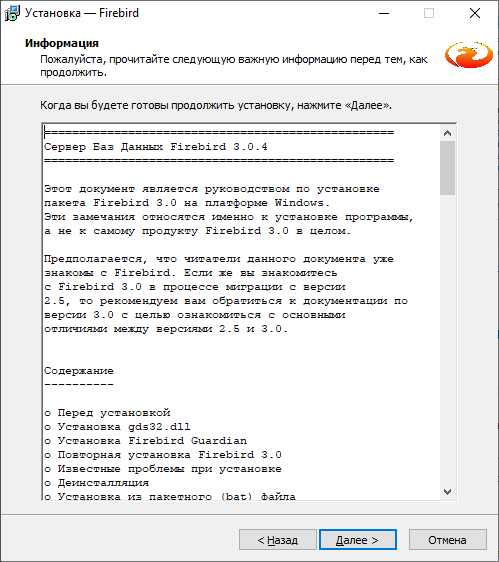

Руководство администратора Firebird 3.0
- Введение
- I. Установка и настройка
- 1. Установка, обновление и запуск сервера
- Установка на ОС Linux
- Установка на ОС Windows
- 2. Состав файлов сервера
- 3. Настройка операционной системы для Firebird
- 4. Описание параметров конфигурации
- Типы параметров
- Область действия
- Макроподстановки
- Включение других файлов
- Параметры уровня базы данных
- Общие настройки
- DatabaseAccess
- RemoteAccess
- ExternalFileAccess
- UdfAccess
- TempDirectories
- AuditTraceConfigFile
- MaxUserTraceLogSize
- DefaultDbCachePages
- DatabaseGrowthIncrement
- FileSystemCacheThreshold
- FileSystemCacheSize
- RemoteFileOpenAbility
- TempBlockSize
- TempCacheLimit
- AuthServer и AuthClient
- UserManager
- TracePlugin
- WireCryptPlugin
- KeyHolderPlugin
- AllowEncryptedSecurityDatabase
- Providers
- DeadlockTimeout
- MaxUnflushedWrites
- MaxUnflushedWriteTime
- BugcheckAbort
- RelaxedAliasChecking
- ConnectionTimeout
- WireCrypt
- WireCompression
- DummyPacketInterval
- RemoteServicePort или RemoteServiceName
- RemoteAuxPort
- TcpRemoteBufferSize
- TcpNoNagle
- TcpLoopbackFastPath
- IPv6V6Only
- RemoteBindAddress
- LockMemSize
- LockAcquireSpins
- LockHashSlots
- EventMemSize
- Настройки ядра
- Настройки для Windows систем
- Настройки для Unix/Linux систем
- Настройки архитектуры
- 1. Установка, обновление и запуск сервера
- II. Утилиты командной строки
- 5. Утилита ISQL
- Запуск isql
- Переключатели командной строки
- Начало сессии Isql
- Завершение сессии Isql
- Получение справки
- Соединение с базой данных
- Создание базы данных
- Установка переменных окружения ISC_USER и ISC_PASSWORD
- SQL диалект
- Символ терминатора
- Подсказки ISQL
- Обработка ошибок и поддержка исключений
- Обработка транзакций
- Обработка скрипта
- ISQL команды
- ISQL SET команды
- ISQL SHOW команды
- SHOW CHECK
- SHOW COLLATION
- SHOW COMMENTS
- SHOW DATABASE
- SHOW DEPENDENCIES
- SHOW DOMAIN
- SHOW EXCEPTION
- SHOW FILTER
- SHOW FUNCTION
- SHOW GENERATOR
- SHOW GRANTS
- SHOW INDEXES
- SHOW MAPPING
- SHOW PACKAGE
- SHOW PROCEDURE
- SHOW ROLE
- SHOW SECCLASSES
- SHOW SEQUENCE
- SHOW SQL DIALECT
- SHOW SYSTEM
- SHOW TABLE
- SHOW TRIGGER
- SHOW USERS
- SHOW VERSION
- SHOW VIEW
- 6. GBAK
- 7. Утилита NBACKUP
- Обзор возможностей Nbackup
- Преимущества nbackup
- Функции и параметры
- Создание резервных копий и восстановление
- Полные резервные копии
- Восстановление полных резервных копий
- Инкрементные резервные копии
- Восстановление инкрементных бэкапов
- Бэкапы баз данных на сырых устройствах (raw devices)
- Отключение триггеров базы данных
- Кэширование ввода-вывода (Direct I/O)
- Распаковка сжатых копий
- Информационные параметры
- Бэкапы по сети
- Практическое применение
- Что дальше?
- Блокирование и разблокирование
- Настройка дельта-файла
- Лог истории бэкапов
- Техническая информация
- 8. Утилита GFIX
- Теневые копии
- Установка размера кэша базы данных
- Управление limbo транзакциями
- Установка режима доступа для базы данных
- Изменение SQL диалекта
- Чистка (sweep) базы данных
- Открытие (online) и закрытие (shutdown) базы данных
- Использование пространства страниц базы данных
- Проверка и исправление базы данных
- Изменение режима записи на диск
- Исправление базы данных для работы с текущей версией ICU
- Информация о версии
- 9. Утилита GSTAT
- 10. FB_LOCK_PRINT
- 11. FBTRACEMGR
- 12. Утилита GSEC
- 13. Утилита FBSVCMGR
- Использование fbsvcmgr
- Получение справки
- Параметры подключения к службе
- Информационные запросы
- Сервисные действия
- Резервная копия (gbak)
- Восстановление (gbak)
- Установка свойств базы данных action_properties (gfix)
- Валидация, ремонт базы данных, sweep (gfix)
- Статистика базы данных (gstat)
- Управление пользователями (gsec)
- Резервная копия (nbackup)
- Восстановление (nbackup)
- Управление трассировкой
- Настройка отображения администраторов на RDB$ADMIN
- Онлайн валидация базы данных
- 5. Утилита ISQL
- III. Практические задачи
- 14. Типичные проблемы с установкой
- 15. Разрешение проблем с сетевыми настройками между клиентом и сервером Firebird
- 16. Конфигурирование и подбор аппаратного обеспечения
- 17. Использование инструментов резервного копирования
- 18. Использование инструмента валидации и починки БД gfix
- 19. Безопасность
- 20. Использование инструментов мониторинга Firebird
- Использование fb_lock_print
- Структура заголовка лок-таблицы
- Детализация лок-таблицы
- Представление ресурсов как блокировок различных видов
- Особенности при работе в архитектуре SuperServer. Латчи (latches)
- Данные о владельцах блокировок (OWNER BLOCK)
- Данные о блокировках (LOCK BLOCK)
- Быстрая диагностика наличия очередей к ресурсам
- Углубленная диагностика очередей к ресурсам
- Кодировка 8-байтных значений идентификаторов ресурсов
- Поиск объекта БД, к которому принадлежит страница с заданным номером
- Дополнительные замечания по ожиданиям страничных блокировок
- Поиск ID процессов, удерживающих ресурсы
- Поиск ID подключения к БД, удерживающего ресурсы
- Поиск транзакции, удерживающей ресурсы
- Журналирование изменений счетчиков
- Использование Firebird Trace API
- Трассировка. Вводная информация. Зачем это нужно?
- Виды отслеживаемой активности. Пользовательский трассировка и системный аудит
- Блочное представление информации
- Краткое описание работы. Типичный сценарий работы DBA
- Пользовательская трассировка и аудит: настройка, запуск и остановка
- Структура конфигурации. Проверка имен на соответствие шаблонам
- Виды отслеживаемых событий
- Примеры полезных конфигураций
- Структура заголовка выводимого блока информации
- Кодировка non-ascii информации
- Использование таблиц мониторинга MON$
- Отключение пользователей от базы данных
- Отключение от БД подключений, которые могут привести к застреванию счетчика OAT
- Построение стека вызовов
- Статистика по таблицам (mon$record_stats)
- Поиск подключений, выполненных старыми версиями клиента
- О причинах расхождений в статистике мониторинга и трассировки
- Мониторинг и выполнение запросов
- Мониторинг расхода памяти
- Мониторинг и nbackup
- Использование fb_lock_print
- Алфавитный указатель
Введение
Часть I. Установка и настройка
Глава 1. Установка, обновление и запуск сервера
Скачать дистрибутивы Firebird можно на официальном сайте https://firebirdsql.org в разделе Downloads.
Установка на ОС Linux
Firebird под Linux распространяется в двух вариантах через репозитории и в виде tar-архивов. За репозиториями следят либо разработчики дистрибутивов Linux, либо частные лица (PPA). Tar-архивы распространяет организация Firebird Foundation. Для официальных релизов Firebird 3.0 они выложены на странице https://firebirdsql.org/en/firebird-3-0/. Кроме того tar-архивы автоматически собираются для снапшотов, которые вы можете найти по адресу http://web.firebirdsql.org/download/snapshot_builds/linux/fb3.0/.
Установка из репозитория
Репозитории — это сервера в интернете, на которых хранятся файлы пакетов приложений Linux и другая сопутствующая информация.
Практически у каждого дистрибутива Linux есть свой репозиторий, который содержит только совместимые и поддерживаемые конкретным дистрибутивом пакеты, соответственно, при установке приложений из официальных репозиториев Вы всегда устанавливаете только проверенные и стабильные версии программ.
Репозитории бывают как основные, т.е. официально поддерживаемые, так и дополнительные, которые можно подключить в случае возникновения необходимости. Firebird редко включён в основной репозиторий, но часто присутствует в дополнительных репозиториях или в PPA (Personal Package Archive).
Примечание
За актуальностью пакетов в репозиториях следят либо разработчики дистрибутивов (Linux), либо владельцы репозиториев, а не сообщество Firebird. По этой причине в репозиториях может быть не самая последняя версия Firebird. Если вас надо гарантировано установить именно последнюю версию Firebird, либо вовсе произвести обновление из снапшотов, то рекомендуем вам производить установку Firebird из tar-архива.
Установка Firebird в Ubuntu
В качестве примера рассмотрим установку Firebird 3.0 в Ubuntu 18.04 TLS.
Стабильный пакет (версия 3.0.x) для Ubuntu TLS расположен в репозитории ppa.
Данный репозиторий может быть добавлен следующим способом:
sudo add-apt-repository ppa:mapopa/firebird3.0
sudo apt-get update
Вы можете посмотреть пакеты связанный с Firebird 3.0 следующим образом:
apt-cache search firebird3.0
Вы уведите следующий список пакетов:
firebird-dev - Development files for Firebird
firebird3.0-common - common files for firebird 3.0 server, client and utilities
firebird3.0-common-doc - copyright, licensing and changelogs of firebird3.0
firebird3.0-doc - Documentation files for firebird database version 3.0
firebird3.0-examples - Examples for Firebird database
firebird3.0-server-core - Firebird engine core
flamerobin - graphical database administration tool for Firebird DBMS
libib-util - Firebird UDF support library
firebird3.0-server - Firebird Server - an RDBMS based on InterBase 6.0 code
firebird3.0-utils - Firebird command line utilities
libfbclient2 - Firebird client library
Для установки Firebird 3.0 в архитектуре SuperServer наберите следующую команду:
sudo apt-get install firebird3.0-server
The following extra packages will be installed:
firebird3.0-common firebird3.0-common-doc firebird3.0-utils libfbclient2 libib-util
Suggested packages:
firebird3.0-doc
The following NEW packages will be installed:
firebird3.0-common firebird3.0-common-doc firebird3.0-server firebird3.0-utils libfbclient2 libib-util
0 upgraded, 6 newly installed, 0 to remove and 0 not upgraded.
Need to get 4,889kB of archives.
After this operation, 13.1MB of additional disk space will be used.
Do you want to continue [Y/n]?
В процессе установки у вас спросят о пароля для пользователя SYSDBA.
 |
Если вам необходимо изменить конфигурацию после установки воспользуйтесь командой:
sudo dpkg-reconfigure firebird3.0-server
Для установки примеров и файлов для разработки наберите команду:
sudo apt-get install firebird3.0-examples firebird-dev
База данных employee.fdb архивирована и находится в
директории
/usr/share/doc/firebird3.0-examples/examples/empbuild/
cd /usr/share/doc/firebird3.0-examples/examples/empbuild/
sudo gunzip employee.fdb.gz
sudo chown firebird.firebird employee.fdb
sudo mv employee.fdb /var/lib/firebird/3.0/data/
Примечание
Это описание заимствовано со следующего ресурса https://help.ubuntu.com/community/Firebird3.0. Когда я
пробовал проделать тоже самое, то по какой-то причине у меня не оказалось
каталога
/usr/share/doc/firebird3.0-examples/examples/empbuild/
К счастью в папке
/usr/share/doc/firebird3.0-examples/examples/ лежал
запакованный sql скрипт для создания базы данных employee.
cd /usr/share/doc/firebird3.0-examples/examples/
sudo gunzip employee.sql.gz
Полученный файл employee.sql требуется немного
поправить чтобы база данных создавалась в нужном месте.
-- This is a generated file
set sql dialect 3;
create database '/var/lib/firebird/3.0/data/employee.fdb';
...
После чего можно запустить скрипт на выполнение:
isql-fb -i employee.sql
Теперь можно попробовать подключится к нашей тестовой базы данных.
$ isql-fb
SQL> connect localhost:/var/lib/firebird/3.0/data/employee.fdb user 'SYSDBA' password password 'Xtwe9k';
Если все в порядке, то вы получите сообщение о том, к какой базе данных подключен, какой пользователь и о готовности к использованию.
Database: localhost:/var/lib/firebird/3.0/data/employee.fdb, User: SYSDBA
SQL>
Теперь проверим версию серверы и таблицы.
SQL> show tables;
COUNTRY CUSTOMER
DEPARTMENT EMPLOYEE
EMPLOYEE_PROJECT JOB
PROJECT PROJ_DEPT_BUDGET
SALARY_HISTORY SALES
SQL> show version;
ISQL Version: LI-V3.0.5.33100 Firebird 3.0
Server version:
Firebird/Linux/AMD/Intel/x64 (access method), version "LI-V3.0.5.33100 Firebird 3.0"
Firebird/Linux/AMD/Intel/x64 (remote server), version "LI-V3.0.5.33100 Firebird 3.0/tcp (fbserver)/P15:C"
Firebird/Linux/AMD/Intel/x64 (remote interface), version "LI-V3.0.5.33100 Firebird 3.0/tcp (fbserver)/P15:C"
on disk structure version 12.0
Если ваш сервер установлен с графическим окружением, то вы также можете установить GUI инструмент администрирования flamerobin простой командой.
sudo apt-get install flamerobin
Установка только клиента Firebird
Если необходимо установить только клиента Firebird без сервера, то процедура немного сокращается.
Первым делом добавьте репозиторий ppa:mapopa/firebird3.0
sudo add-apt-repository ppa:mapopa/firebird3.0
sudo apt-get update
Теперь устанавливаем сам клиент:
sudo apt-get install libfbclient2
Установка Firebird в CentOS
В качестве примера рассмотрим установку Firebird 3.0 в CentOS 8.0.
Для установки Firebird 3.0 необходимо подключить репозиторий epel. Это делается следующей командой:
sudo dnf install https://dl.fedoraproject.org/pub/epel/epel-release-latest-8.noarch.rpm
Для просмотра информации о версии Firebird доступным для установки введите команду:
sudo yum info firebird
Последняя проверка окончания срока действия метаданных: 0:01:19 назад, Ср 08 янв 2020 11:46:11.
Имеющиеся пакеты
Имя : firebird
Версия : 3.0.4.33054
Выпуск : 1.el8
Архитектура : x86_64
Размер : 3.6 M
Источник : firebird-3.0.4.33054-1.el8.src.rpm
Репозиторий : epel
Краткое опис : SQL relational database management system
URL : http://www.firebirdsql.org/
Лицензия : Interbase
Описание : Firebird is a relational database offering many ANSI SQL standard
: features that runs on Linux, Windows, and a variety of Unix
: platforms. Firebird offers excellent concurrency, high
: performance, and powerful language support for stored procedures
: and triggers. It has been used in production systems, under a
: variety of names, since 1981.
Как видим в репозитории доступна довольно свежая версия. Можно приступать к установке.
sudo yum install firebird
Последняя проверка окончания срока действия метаданных: 0:00:43 назад, Ср 08 янв 2020 11:51:23.
Зависимости разрешены.
================================================================================
Пакет Архитектура Версия Репозиторий Размер
================================================================================
Installing:
firebird x86_64 3.0.4.33054-1.el8 epel 3.6 M
Установка зависимостей:
firebird-utils x86_64 3.0.4.33054-1.el8 epel 1.1 M
libfbclient2 x86_64 3.0.4.33054-1.el8 epel 592 k
libib-util x86_64 3.0.4.33054-1.el8 epel 18 k
libtommath x86_64 1.1.0-1.el8 epel 47 k
Результат транзакции
================================================================================
Установка 5 Пакетов
Объем загрузки: 5.4 M
Объем изменений: 23 M
Продолжить? [д/Н]: y
Загрузка пакетов:
(1/5): libfbclient2-3.0.4.33054-1.el8.x86_64.rp 372 kB/s | 592 kB 00:01
(2/5): libib-util-3.0.4.33054-1.el8.x86_64.rpm 107 kB/s | 18 kB 00:00
(3/5): firebird-utils-3.0.4.33054-1.el8.x86_64. 617 kB/s | 1.1 MB 00:01
(4/5): libtommath-1.1.0-1.el8.x86_64.rpm 451 kB/s | 47 kB 00:00
(5/5): firebird-3.0.4.33054-1.el8.x86_64.rpm 1.5 MB/s | 3.6 MB 00:02
--------------------------------------------------------------------------------
Общий размер 1.3 MB/s | 5.4 MB 00:04
Теперь необходимо задать пароль для пользователя SYSDBA. Я предпочитаю делать это через isql.
cd /usr/bin
sudo ./isql-fb
Use CONNECT or CREATE DATABASE to specify a database
SQL> connect security.db user sysdba;
Database: security.db, User: SYSDBA
SQL> create user sysdba password 'xRt3sd6T';
SQL> exit;
Примечание
Обратите внимание, что утилита isql переименована в isql-fb. Это сделано потому, что в Linux уже есть утилита isql в рамках проекта unixODBC.
Осталось включить и запустить сервис firebird-superserver.
sudo systemctl enable firebird-superserver
Created symlink /etc/systemd/system/multi-user.target.wants/firebird-superserver. service → /usr/lib/systemd/system/firebird-superserver.service.
sudo systemctl start firebird-superserver
Установка только клиента Firebird
Если необходимо установить только клиента Firebird без сервера, то процедура немного сокращается.
Первым делом добавьте репозиторий EPEL
sudo dnf install https://dl.fedoraproject.org/pub/epel/epel-release-latest-8.noarch.rpm
sudo dnf update
Теперь устанавливаем сам клиент:
sudo dnf install libfbclient2
Ручная установка из tar архива
Tar-архивы распространяет организация Firebird Foundation. Для официальных релизов Firebird 3.0 они выложены на странице https://firebirdsql.org/en/firebird-3-0/. Кроме того tar-архивы автоматически собираются для снапшотов, которые вы можете найти по адресу http://web.firebirdsql.org/download/snapshot_builds/linux/fb3.0/.
Стоит отметить что процедура установки из tar-архивов одинаковая для всех дистрибутивов Linux. Нюансы возникают только при разрешении зависимостей от некоторых библиотек.
Примечание
При установке из tar-архива сервер будет установлен в директорию
/opt/firebird
В отличие от установке из репозиториев утилита isql
не переименована и расположена в /opt/firebird/bin.
Установка Firebird в Ubuntu
В качестве примера рассмотрим установку Firebird 3.0 в Ubuntu 18.04.
Перед установкой Firebird необходимо установить следующие пакеты
sudo apt-get install libtommath1
Для библиотеки libtommath необходимо также создать символическую ссылку:
sudo ln -sf /usr/lib/x86_64-linux-gnu/libtommath.so
/usr/lib/x86_64-linux-gnu/libtommath.so.0
Скачиваем и распаковываем tar-архив текущей версии Firebird
wget https://github.com/FirebirdSQL/firebird/releases/download/R3_0_5/Firebird-
3.0.5.33220-0.amd64.tar.gz
tar xvf Firebird-3.0.5.33220-0.amd64.tar.gz
cd Firebird-3.0.5.33220-0.amd64
Теперь можно запускать скрипт установки
sudo ./install.sh
В процессе инсталляции у вас спросят пароль для пользователя SYSDBA.
Обычно после этого служба Firebird стразу же установлена и запущена, вы можете проверить это командой:
systemctl status firebird-superserver
systemctl status firebird-superserver
● firebird-superserver.service - Firebird Database Server ( SuperServer )
Loaded: loaded (/lib/systemd/system/firebird-superserver.service; enabled; ve
Active: active (running) since Sun 2020-01-26 15:18:24 UTC; 8min ago
Process: 6921 ExecStart=/opt/firebird/bin/fbguard -pidfile /var/run/firebird/f
Main PID: 6923 (firebird)
Tasks: 4 (limit: 4614)
CGroup: /system.slice/firebird-superserver.service
├─6922 /opt/firebird/bin/fbguard -pidfile /var/run/firebird/firebird.
└─6923 /opt/firebird/bin/firebird
янв 26 15:18:24 dbserver systemd[1]: Starting Firebird Database Server ( SuperSe
янв 26 15:18:24 dbserver systemd[1]: firebird-superserver.service: Can't open PI
янв 26 15:18:24 dbserver systemd[1]: firebird-superserver.service: Supervising p
янв 26 15:18:24 dbserver systemd[1]: Started Firebird Database Server ( SuperSer
Если это не так выполните
sudo systemctl enable firebird-superserver
sudo systemctl start firebird-superserver
Установка Firebird в CentOS
В качестве примера рассмотрим установку Firebird 3.0 в CentOS 8.0.
Для установки Firebird 3.0 необходимо подключить репозиторий epel. Это делается следующей командой:
sudo dnf install https://dl.fedoraproject.org/pub/epel/epel-release-latest-8.
noarch.rpm
Перед установкой Firebird необходимо установить следующие пакеты
sudo dnf -y install libtommath
sudo dnf -y install libicu-devel
sudo dnf -y install libncurses*
Для библиотеки libtommath необходимо также создать символическую ссылку:
sudo ln -sf /usr/lib64/libtommath.so.1 /usr/lib64/libtommath.so.0
Скачиваем и распаковываем tar-архив текущей версии Firebird
wget https://github.com/FirebirdSQL/firebird/releases/download/R3_0_5/Firebird-
3.0.5.33220-0.amd64.tar.gz
tar xvf Firebird-3.0.5.33220-0.amd64.tar.gz
cd Firebird-3.0.5.33220-0.amd64
Теперь можно запускать скрипт установки
sudo ./install.sh
В процессе инсталляции у вас спросят пароль для пользователя SYSDBA.
Обычно после этого служба Firebird стразу же установлена и запущена, вы можете проверить это командой:
systemctl status firebird-superserver
● firebird-superserver.service - Firebird Database Server ( SuperServer )
Loaded: loaded (/usr/lib/systemd/system/firebird-superserver.service; enable>
Active: active (running) since Sun 2020-01-26 18:41:14 MSK; 2h 24min left
Process: 1105 ExecStart=/opt/firebird/bin/fbguard -pidfile /var/run/firebird/>
Main PID: 1143 (firebird)
Tasks: 5 (limit: 17728)
Memory: 18.5M
CGroup: /system.slice/firebird-superserver.service
├─1132 /opt/firebird/bin/fbguard -pidfile /var/run/firebird/firebird>
└─1143 /opt/firebird/bin/firebird
янв 26 18:41:13 localhost.localdomain systemd[1]: Starting Firebird Database Se>
янв 26 18:41:13 localhost.localdomain systemd[1]: firebird-superserver.service:>
янв 26 18:41:14 localhost.localdomain systemd[1]: firebird-superserver.service:>
янв 26 18:41:14 localhost.localdomain systemd[1]: Started Firebird Database Ser>
Если это не так выполните
sudo systemctl enable firebird-superserver
sudo systemctl start firebird-superserver
Изменение режима работы Firebird
При установки сервера из tar-архива Firebird по умолчанию устанавливается в
архитектуре SuperServer. Если вам необходимо изменить режим работы сервера, то
сделать это можно при помощи скрита
/opt/firebird/bin/changeServerMode.sh
sudo /opt/firebird/bin/changeServerMode.sh
Firebird server may run in 2 different modes - super and classic.
Super server provides better performance, classic - better availability.
Which option would you like to choose: (super|classic) [super] classic
Stopping currently running engine...
Starting firebird in classic server mode...
Updated /opt/firebird/firebird.conf
Done.
Ручная установка клиента
Установка на ОС Windows
Firebird под Windows распространяется в двух вариантах: в виде выполняемого файла установщика с расширением exe и в виде zip архивов. Для 32-разрядного варианта в имени файла содержится суффикс Win32, для 64-разрядного — x64. Отладочный вариант имеет дополнительный суффикс pdb.
Установка из исполняемого пакета
Скачайте и запустите инсталяционный пакет разрядности, соответствующей разрядности операционной системы (Win32 может работать на 64-разярдной Windows, но это не имеет смысла). Инсталляция СУБД Firebird осуществляется с помощью стандартного мастера установки программ. В ходе установки мастер собирает всю необходимую для установки сервера информацию, производит копирование файлов и регистрацию программных модулей в реестре Windows.
Примечание
Для установки Firebird необходимы права администратора.
Рекомендуется перед установкой этого пакета ДЕИНСТАЛЛИРОВАТЬ все предыдущие версии
Firebird или InterBase. Особенно важно убедиться, что файлы
fbclient.dll и gds32.dll удалены из
каталога system32.
Если вам необходимо установить Firebird 3.0 совместно с другими версиями, то это необходимо сделать из zip-архива.
Выберите язык установки. Предусмотрена установка на русском, английском и других языках.


В процессе инсталляции вам будет предложено выбрать папку для установки, а также выбрать устанавливаемые компоненты.
 |
Выбор архитектуры сервера
Далее будет предложено выбрать архитектуру сервера и некоторые дополнительные опции. Доступны следующие архитектуры:
Classic:
использует отдельный процесс на каждое пользовательское соединение;
каждый процесс содержит в себе все что нужно для работы с базой данных: область памяти для метаданных, страничный кэш для минимизации повторных чтений из файла БД; память для сортировок;
если происходит сбой, другие соединения остаются работоспособными
поддержка мультипроцессорности: в многопроцессорных системах ОС автоматически распределяет процессы по процессорам/ядрам
Superserver:
один процесс с общей областью памяти для всех пользовательских соединений (общий странчный кеш и память под сортировки);
используется пул потоков ОС для обработки запросов от соединений, таким образом каждое соединение работает в отдельном потоке управляемом ОС, а неактивные соединения не отъедают ресурсы потоков;
каждый поток со своим кэшем метаданных;
поддержка мультипроцессорности: потоки ОС легко распараллеливаются;
возможный сбой в одном процессе разорвет все подключения.
SuperClassic:
единый процесс на всех пользователей с общей памятью под сортировки;
используется пул потоков ОС для обработки запросов от соединений, таким образом каждое соединение работает в отдельном потоке управляемом ОС, а неактивные соединения не отъедают ресурсы потоков;
каждый поток со своим страничным кэшем и кэшем метаданных;
поддержка мультипроцессорности: потоки ОС легко распараллеливаются;
возможный сбой в одном процессе разорвет все подключения.
 |
Каждый из режимов стабилен, и нет причин полностью отдавать предпочтение
какому-то одному. Конечно, у вас могут быть свои собственные конкретные
соображения. Если Вы сомневаетесь, просто следуйте за установкой по умолчанию.
Позже вы можете изменить архитектуру через файл конфигурации
firebird.conf (параметр ServerMode), что потребует
перезагрузки, но не переустановки.
Установка Guardian
Мы собираемся отказаться от использования Firebird Guardian в будущих версиях. Он не работает в случае архитектуры Classic Server и программа установки не предлагает его установку, если выбрана данная архитектура. Для архитектур SuperServer и SuperClassic установка Firebird Guardian возможна, но по умолчанию не выбрана.
Способ запуска сервера Firebird
Сервер может быть запущен в качестве приложения (менее предпочтительный вариант) или в качестве службы. Для запуска в качестве приложения используется следующая команда:
firebird -a
Установка gds32.dll
По умолчанию данная библиотека не копируется в системные папки Windows в
процессе установки. Мы не можем гарантировать, что необходимые библиотеки MS VC
runtime будут установлены и доступны в системе. Тем не менее, данная возможность
доступна опционально в процессе установки, так же как и копирование
fbclient.dll в системные папки Windows. Если вы
используете данную возможность, то вы должны убедиться, что библиотеки MS VC
runtime версии 10.0 установлены в системе.
Авторизация с предыдущих версий клиента Firebird
В Firebird 3.0 по умолчанию используется безопасная парольная аутентификация (SRP). Клиенты Firebird 2.5 и более ранние версии использовали традиционную аутентификацию (Legacy_Auth), которая отключена в Firebird 3.0 по-умолчанию, поскольку не является безопасной.
Вы можете разрешить авторизацию предыдущими версиями клиентов Firebird в процессе инсталяции. Это можно сделать и после установки изменив параметры AuthServer, UserManager и WireCrypt.
Пароль SYSDBA
Изначально в системе существует только один пользователь – администратор сервера SYSDBA (пароль по умолчанию — masterkey). Этот пользователь обладает полными правами на выполнение всех функций по управлению работой сервера и работе с базами данных. В процессе инсталляции Вас попросят изменить пароль данного пользователя в целях безопасности.
 |
После этого шага будет отображено окно, в котором отображаются опции, выбранные пользователем, если вас всё устраивает можно начать автоматическую установку сервера.
Ручная установка из ZIP архива
Скачайте архив соответствующей разрядности и распакуйте его в директорию, в которой будет размещён сервер Firebird.
Инициализация SYSDBA
Начиная с Firebird 3.0 пользователь SYSDBA не инициализирован по умолчанию (для плагина управления пользователями SRP), поэтому необходимо явно создать пользователя и указать ему пароль. Это можно сделать двумя способами: с использованием консольного инструмента для выполнения интерактивных запросов isql.exe и консольного инструмента для управления базой данных безопасности gsec.exe.
Примечание
В зависимости от размещения Firebird эти утилиты могут потребовать запуска с привилегиями администратора.
Инициализация SYSDBA с помощью ISQL
Запустите инструмент для выполнения интерактивных запросов isql.exe. Соединитесь с базой данных безопасности в режиме встроенного сервера, указав при этом пользователя SYSDBA без пароля.
Примечание
Пользователя SYSDBA ещё не существует в базе данных безопасности, но в embedded режиме пользователь и его пароль не проверяется, и Firebird доверяет любому указанному имени пользователя.
Выполите SQL запрос для создания пользователя SYSDBA:
CREATE USER SYSDBA PASSWORD '<password>';
Пользователь SYSDBA инициализирован, можно выходить из интерактивного режима.
c:\Firebird\3.0>isql
Use CONNECT or CREATE DATABASE to specify a database
SQL> connect security.db user SYSDBA;
Database: security.db, User: SYSDBA
SQL> CREATE USER SYSDBA PASSWORD 'm8ku234pp';
SQL> exit;
c:\Firebird\3.0>
Инициализация SYSDBA с помощью GSEC
Запустите gsec.exe указав пользователя SYSDBA и
базу данных security.db.
Выполите команду для добавления пользователя SYSDBA:
add SYSDBA -pw <password>
c:\Firebird\3.0>gsec -user SYSDBA -database security.db
*** gsec is deprecated, will be removed soon ***
GSEC> add SYSDBA -pw m8ku234pp
GSEC> quit
c:\Firebird\3.0>
Примечание
Инструмент gsec.exe является устаревшим, многие возможности доступные через SQL не доступны в нём.
Конфигурация
Режим сервера
По-умолчанию Firebird будет стартовать в режиме SuperServer. Если вы
хотите чтобы сервер запускался в другой архитектуре, то необходимо изменить
значение параметра ServerMode в
firebird.conf. Разкомментируйте его (удалите
решётку) и установите нужный режим: Super, SuperClassic или Classic.
ServerMode = Classic
Подробнее о режимах севера и параметре ServerMode
читайте в Выбор архитектуры
сервера и ServerMode.
Авторизация с предыдущих версий клиента Firebird
В Firebird 3.0 по умолчанию используется безопасная парольная аутентификация (SRP). Клиенты Firebird 2.5 и более ранние версии использовали традиционную аутентификацию (Legacy_Auth), которая отключена в Firebird 3.0 по-умолчанию, поскольку не является безопасной.
Для поддержки традиционной аутентификации необходимо изменить следующие параметры AuthServer, UserManager и WireCrypt.
AuthServer = Srp256, Srp, Legacy_Auth
UserManager = Srp, Legacy_UserManager
WireCrypt = Enabled
Примечание
Если вам не нужна поддержка безопасной парольной аутентификации (SRP),
удалите из AuthServer плагины Srp256 и Srp; из
AuthServer — Legacy_UserManager, а
WireCrypt можете изменить на Disabled.
После вышеперечисленных манипуляций у нас будет активно два менеджера пользователей, по умолчанию активный тот что первый в списке UserManager.
Важно
Одноименные пользователи в разных менеджерах пользователей — это разные пользователи.
Ранее мы уже создали SYSDBA в менеджере пользователей SRP. В
Legacy_UserManager SYSDBA уже существует, причём со стандартным паролем
masterkey, который необходимо изменить. Сделаем это c использованием
инструмента isql. В операторе ALTER USER необходимо обязательно
указать менеджер пользователей Legacy_UserManager.
c:\Firebird\3.0>isql
Use CONNECT or CREATE DATABASE to specify a database
SQL> connect security.db user sysdba;
Database: security.db, User: SYSDBA
SQL> ALTER USER SYSDBA SET PASSWORD 'er34gfde' USING PLUGIN Legacy_UserManager;
SQL> exit;
c:\Firebird\3.0>
Одновременный запуск нескольких Firebird
Для одновременного запуск нескольких Firebird, необходимо развести их по
разным портам tcp (если конечно слушатель запущен в режиме прослушивания
TCP/IP). Для этого необходимо изменить в firebird.conf
параметр RemoteServicePort. Например, если у вас уже
есть один сервер который слушает порт 3050, то необходимо установить любой
другой свободный порт, например 3051. В этом случае в строке подключения
необходимо будет указывать новый порт.
RemoteServicePort = 3051
Если необходимо обеспечить также одновременную работоспособность по
локальному протоколу XNET и через именованные каналы WNET, то необходимо так
же изменить параметры IpcName и
RemotePipeName. Однако стоит учесть, что эти
параметры придётся изменять и на стороне клиента через DPB.
Важно
Если вы хотите запускать несколько экземпляров Firebird, то не используйте утилиту instreg.exe, которая записывает путь к серверу в реестр Windows.
Запись в реестре
Утилита утилита instreg.exe позволяет прописывать в реестр Windows путь к корневому каталогу сервера. Для этого необходимо запустить команду
instreg install -z
Для удаления записи из реестра необходимо запустит следующую команду
instreg remove -z
Важно
Если вы хотите запускать несколько экземпляров Firebird, то не используйте утилиту instreg.exe.
Примечание
Переключатель -z не является обязательным, он позволяет вывести установленную или удаленную версию Firebird.
Установка и запуск Firebird как службы
Утилита instsvc.exe записывает, удаляет или меняет информацию о запуске сервера в базе сервисов операционной системы. Кроме того, она позволяет управлять запуском и остановкой сервиса. Если запустить её без параметров, то будет выведена справка по командам и параметрам.
instsvc
Usage:
instsvc i[nstall]
[ -a[uto]* | -d[emand] ]
[ -g[uardian] ]
[ -l[ogin] username [password] ]
[ -n[ame] instance ]
[ -i[nteractive] ]
sta[rt] [ -b[oostpriority] ]
[ -n[ame] instance ]
sto[p] [ -n[ame] instance ]
q[uery]
r[emove] [ -n[ame] instance ]
'*' denotes the default values
'-z' can be used with any other option, prints version
'username' refers by default to a local account on this machine.
Use the format 'domain\username' or 'server\username' if appropriate.
Для установки сервиса необходимо ввести команду
instsvc install
В этом случае Firebird будет установлен в качестве службы с именем «Firebird Server – DefaultInstance». Эта служба будет запускаться автоматически при старте ОС, под учётной записью LocalSystem, предназначенной для служб.
Если необходимо чтобы было установлено несколько экземпляров Firebird
работающих как службы, то необходимо задать им разные имена с помощью
переключателя -n
instsvc install -n fb30
Для запуска службы воспользуйтесь командой
instsvc start
Если службы была установлена с именем отличным от умолчательного, то
необходимо воспользоваться переключателем -n
instsvc start -n fb30
Для остановки службы воспользуйтесь командой
instsvc stop
Если службы была установлена с именем отличным от умолчательного, то
необходимо воспользоваться переключателем -n
instsvc stop -n fb30
Для удаления сервиса необходимо ввести команду
instsvc remove
Если службы была установлена с именем отличным от умолчательного, то
необходимо воспользоваться переключателем -n
instsvc remove -n fb30
Для просмотра всех служб Firebird установленных в системе воспользуйтесь командой
instsvc query
Firebird Server - fb30 IS installed.
Status : running
Path : C:\Firebird\3.0\firebird.exe -s fb30
Startup : automatic
Run as : LocalSystem
Firebird Server - fb40 IS installed.
Status : running
Path : C:\Firebird\4.0\firebird.exe -s fb40
Startup : automatic
Run as : LocalSystem
Использование install_service.bat и uninstall_service.bat
Для упрощения процедуру установки и удаления служб в ZIP архиве в комплекте с
Firebird поставляются два BAT файла: install_service.bat и
uninstall_service.bat.
В этом случае процедура установки Firebird в качестве сервиса выглядит следующим образом
install_service.bat
Если необходимо задать службе имя отличное от умолчательного, то указываем это имя в качестве аргумента
install_service.bat fb30
В этом случае процедура удаления службы Firebird выглядит следующим образом
uninstall_service.bat
Если службы была установлена с именем отличным от умолчательного, то указываем это имя в качестве аргумента
uninstall_service.bat fb30
Запуск Firebird как приложения
Для запуска Firebird в качестве приложения достаточно выполнить команду
firebird -a
Подсказка
Запуск Firebird как приложения удобен на компьютере разработчика. Это особенно полезно во время отладки UDF, UDR и различных плагинов Firebird.
Установка клиента
Если речь идёт об установке только о клиентской части, то обязательно
требуется файл fbclient.dll. Клиент Firebird 3.0
обязательно требует наличие установленного Microsoft Runtime C++ 2010
соответствующей разрядности. Если данная библиотека не установлено, то можно
скопировать дополнительные библиотеки, которые поставляются в ZIP архиве под
Windows msvcp100.dll и
msvcr100.dll.
Желательно, чтобы рядом с fbclient.dll был расположен
файл сообщений firebird.msg. Большинство сообщений об
ошибках уже содержатся в fbclient.dll, однако если вы
собираетесь пользоваться консольными утилитами файл
firebird.msg обязательно должен присутствовать.
Если требуется сжатие трафика при работе по TCP/IP, то потребуется так же
библиотека zlib1.dll.
Для того чтобы клиентское приложение могло загрузить библиотеку
fbclient.dll она должна располагаться либо рядом с
приложением, либо в одной из директорий в которой производится поиск, например
добавленной в PATH или системной директории для размещения
общедоступных библиотек (system32 или
SysWOW64).
Важно
Размещение клиентской библиотеки в PATH может
помешать другим приложениям, которым требуется клиентская библиотека другой
версии или другого сервера. Поэтому, если предполагается, что приложение
должно работать независимо от других приложений с конкретной версией
клиента, то файлы клиента требуется разместить в папке приложения, и не
прописывать этот путь в PATH.
Если у вас ещё нет (и не планируется) установок сервера Firebird или его клиента, то вы можете зарегистрировать путь к корню Firebird в реестре.
instreg install
Утилита instclient
Утилита instclient.exe позволяет:
установить клиентскую часть одной командой;
установить клиентскую часть как
fbclient.dllи/илиgds32.dll;проверить наличие установленной библиотеки
fbclient.dllи/илиgds32.dll;удалить ранее установленные
fbclient.dllи/илиgds32.dll.
Примечание
Утилита instclient.exe должна быть запущена с правами администратора.
Если запустить instclient.exe без параметров, то будет выведена краткая справка:
instclient
Usage:
instclient i[nstall] [ -f[orce] ] library
q[uery] library
r[emove] library
where library is: f[bclient] | g[ds32]
Для развёртывания клиентской библиотеки Firebird в системном каталоге Windows воспользуйтесь командой
instclient install fbclient
FBCLIENT.DLL has been installed to the System directory.
При развёртывании библиотеки проверяется версия и инкрементируется счётчик
общих библиотек. Для отмены проверки версии вы можете воспользоваться
переключателем -force.
Некоторые старые приложения требуют для работы клиентскую библиотеку
gds32.dll (наследие Interbase). Кроме того, многие
приложения требуют для работы не просто gds32.dll, но и
проверяют версию этой библиотеки. Именно поэтому простое переименовывание
fbclient.dll в gds32.dll для
таких программ работать не будет — версия библиотеки окажется ниже 6.0 (т.к.
соответствует версии Firebird, у которого нумерация версий идет с 1.0).
Утилита instclient.exe позволяет не просто
установить gds32.dll, но и изменить её версию на
корректную.
instclient install gds32
GDS32.DLL has been installed to the System directory.
Утилита instclient.exe позволяет также проверить наличие установленной клиентской библиотеки с помощью команды
instclient q fbclient
Installed FBCLIENT.DLL version : 3.0.4.33054 (shared DLL count 1)
instclient q gds32
Installed GDS32.DLL version : 6.3.4.33054 (shared DLL count 2)
Для удаления воспользуйтесь командой
instclient remove fbclient
The FBCLIENT.DLL has been removed from the System directory.
instclient remove gds32
The GDS32.DLL has been removed from the System directory.
Обновление
В данном случае речь об обновлении в рамках пойнт-релизов (третья цифра в версии сервера) или так называемых сервис-паков. Обновление мажорной или минорной версии обычно требует гораздо больше действий, описанных в Release Note, и называется «Миграцией».
Примечание
Обычно обновление в рамках пойнт-релизов не требует процедуры резервного копирования и восстановления базы данных средством gbak, но бывают исключения. Такие исключения обязательно описаны в Release Note, поэтому обязательно ознакомьтесь с ним перед обновлением.
Примерно те же действия требуются при обновлении на текущий снапшот. Снапшоты — это ежедневные сборки сервера Firebird, которые включают самые последние изменения текущей версии сервера. Это позволяет иметь самую свежую версию сервера с исправленными ошибками и улучшениями. Однако учтите, что снапшоты не проходят полный цикл тестирования и могут содержать новые ошибки или регрессии. Поэтому не обновляйтесь до снапшота без явной необходимости (исправленные в нём ошибки касаются вас непосредственно).
Алгоритм обновления поверх существующего сервера Firebird следующий:
Убедится что все пользователи отключены от всех баз данных обслуживаемых обновляемым сервером Firebird. С помощью команды
gfix -shut -force <n>можно закрыть все подключения и запретить последующие.
Остановить сервер
Сделать резервную копию корневого каталога сервера
Распаковать из ZIP архива с пойнт-релизом или снапшотом файлы в корневую директорию сервера
Заменить новые файлы конфигурации (
firebird.conf,databases.confи другие), а также файлsecurity3.fdbна прежниеЗапустить обновленный сервер
Перевести базы данных в онлайн режим
gfix -online
Встроенный сервер
Начиная с Firebird 3.0 встроенная (embedded) версия не распространяется отдельно. Всё что необходимо для развертывания Firebird Embedded находится в том же самом ZIP архиве, что и обычная версия.
Для функционирования Firebird Embedded необходимы следующие файлы:
клиентская библиотека (
fbclient.dllилиlibfbclient.so);движок для работы с ODS 12.0 (
engine12.dllилиlibEngine12.so) из папкиplugins;библиотека интернационализации, которая находится в каталоге
intl;файл сообщений
firebird.msg;для изменения некоторых параметров могут потребоваться
firebird.confи/илиdatabases.conf;в Windows обязательно необходимы файлы ICU библиотеки;
если в Windows не установлен MS VC++ Runtime 2010, то необходимы также файлы (
msvcp100.dllиmsvcr100.dll);если вам необходимы консольные инструменты администрирования, то скопируйте также
gbak,gfix,gstat,isql,nbackup.
Конфигурация
По умолчанию Firebird работает в режиме Super сервера в том числе и в
embedded варианте. Это не очень удобно, поскольку Super открывает файл базы
данных в монопольном режиме, что обозначает что только один процесс может
работать с базой данных. Для изменения режима запуска необходимо
отредактировать (возможно раскомментировать) значение параметра
ServerMode на Classic или SuperClassic в файле
firebird.conf.
Поскольку в embedded варианте сетевой доступ не используется вы можете
отредактировать также провайдеры Providers, удалив от
туда лишние провайдеры Remote и Loopback.
Providers = Engine12
Глава 2. Состав файлов сервера
Файлы конфигурации
databases.conf
В этом текстовом файле можно сопоставить конкретный путь к БД и псевдоним, чтобы затем в прикладных кодах использовать более короткий и удобный псевдоним для обращения к нужной базе данных. Также здесь указываются индивидуальные настройки для каждой конкретной базы данных. Если под управлением сервера Firebird находится более 1 базы данных, то рекомендуем все настройки уровня базы данных делать в этом файле.
fbtrace.conf
Файл с шаблоном настроек fbtrace.conf находится в корневом
каталоге и содержит список отслеживаемых событий и указывает размещение логов
трассировки для каждого события. Это позволяет достаточно гибко настроить параметры
аудита различных событий для любой базы данных, при этом логирование будет
осуществляться в отдельные файлы.
firebird.conf
Файл содержит параметры конфигурации сервера.
plugins.conf
Файл используется для настройки различных плагинов. Если в файле не указана конфигурация для плагина, то для него будут действовать настройки по умолчанию.
udr_engine.conf
Файл используется для настройки плагина UDR Engine — движок для подключения
внешних процедур, функций и триггеров. Файл располагается в директории
plugins.
fbintl.conf
Файл конфигурации для библиотеки интернационализации. Файл располагается в
директории intl.
Инструменты администрирования и сервисы
В Windows исполняемые файлы имеют расширение .exe, в других
операционных системах могут использоваться другие расширения или вовсе не
использоваться.
fb_lock_print
Эта утилита формирует статистические данные файла блокировок, который поддерживается в Firebird для управления последовательностью изменений базы данных несколькими транзакциями. Она может быть полезным инструментом анализа проблем взаимной блокировки.
fbguard
Исполняемый файл приложения Guardian. Он контролирует процесс сервера. Если сервер упал по какой-либо причине, Guardian автоматически перезапускает его.
Примечание
В современных версиях Windows не требуется. Дело в том, что у служб можно установить свойство автоматического перезапуска в случае падения. Однако данная утилита может быть полезна, если Firebird запускается в качестве приложения.
fbsvcmgr
Утилита предоставляет интерфейс командной строки для Services API, обеспечивая доступ к любой службе, которая реализуется в СУБД.
fbtracemgr
Утилита для работы в интерактивном режиме с трассировкой.
firebird
Исполняемый файл сервера (слушатель).
gbak
Эта утилита предназначена для резервного копирования и восстановления баз данных. Она также обнаруживает разрушения базы данных, освобождает дисковое пространство, появившееся в результате удалений, разрешает незавершенные транзакции, позволяет разделять базы данных на несколько файлов. Она также используется для создания переносимой копии с целью восстановления вашей базы данных на другой аппаратной платформе.
gfix
Это набор общих вспомогательных утилит для изменения свойств баз данных, устранения небольших повреждений базы данных, выполнения различных задач чистки и т. д. Утилита также предоставляет средство администратора для отключения конкретных баз данных до завершения работы сервера. Она может быть использована вместе с утилитой gbak для восстановления некоторых типов нарушений в базе данных.
gpre
Это препроцессор, который конвертирует исходный код, написанный на некоторых языках и содержащий встроенный псевдокод SQL, в корректный отформатированный вызов функций Firebird API.
gsec
Этот инструмент поддержки списка пользователей и их паролей является интерфейсом командной строки для базы данных security3.fdb; он управляет записями пользователей на сервере.
gsplit
Это фильтр, который позволяет преодолевать ограничения на максимальный размер файла, существующие в некоторых операционных системах, при создании резервной копии очень большой базы данных. Эта утилита поставляется только для ОС Windows и, к сожалению, кажется она не работает. К счастью, gbak позволяет разбивать файлы резервной копии на несколько частей, так что gsplit не требуется. В системах ОС Unix существует подходящие утилиты из операционной системы, которые могут быть использованы вместо gsplit, если это необходимо.
gstat
Этот инструмент получения статистики. Он собирает и отображает статистические сведения по индексам и данным базы данных.
instclient
Назначение утилиты instclient состоит в том, что она:
позволяет установить клиентскую часть Firebird одной командой;
позволяет установить клиентскую часть как fbclient.dll, либо как gds32.dll;
позволяет проверить наличие установленной библиотеки fbclient или gds32;
позволяет удалить уже установленный в системе fbclient или gds32.
instreg
Эта утилита прописывает необходимую информацию в реестр Windows, указывая умолчательное расположение файлов сервера.
instsvc
Утилита instsvc записывает, удаляет или меняет информацию о запуске сервера в базе сервисов операционной системы Windows.
isql
Интерактивный инструмент, который позволяет выполнять запросы к базе данных.
nbackup
Утилита позволяет создавать резервные копии и восстанавливать из резервных копий также, как gbak, и дополнительно позволяет создавать инкрементные копии и восстанавливать из них БД.
qli
Это Query Language Interpreter (интерпретатор языка запросов), интерактивный клиентский инструмент запросов. Он может обрабатывать операторы DDL и DML из SQL и GDML. Хотя уже есть isql и другие инструменты графического интерфейса сторонних разработчиков, qli все еще имеет значение по причине его способности осуществлять некоторые операции, до сих пор не реализованные в SQL Firebird. В отличие от isql, qli может одновременно соединяться более чем с одной базой данных и может симулировать обращение к нескольким базам данных в одном запросе.
Динамические библиотеки
В Windows динамические библиотеки имеют расширение .dll, в Linux
— .so, в Mac OS — .dylib.
fbclient
Клиентская библиотека. Предоставляет интерфейс прикладного программирования (API) с функциями для подключения к сервисам, работы с базами данных и их созданию. Библиотека также выполняет роль y-valve для подключения и сопряжения различных плагинов.
В Windows имеет имя fbclient.dll, в Unix —
libfbclient.so.
ib_util
Библиотека утилиты памяти.
В Windows имеет имя ib_util.dll, в Unix —
libib_util.so.
ICU
ICU — International Components for Unicode — библиотеки поддержки юникода.
В Windows используется библиотека поставляемая в комплекте Firebird, в Unix —
используется системная библиотека. В Windows в комплекте с Firebird поставляются
следующие файлы: icudt52l.dat,
icudt52.dll, icuin52.dll,
icuuc52.dll.
Microsoft VC++ Runtime
Microsoft VC++ Runtime 2010 требуется только в Windows. Поставляется в комплекте с
Firebird на случай, если библиотека соответствующей версии не установлена в системе.
В комплекте Firebird под Windows входят файлы: msvcp100.dll,
msvcr100.dll.
zlib1.dll
Библиотека zlib1.dll используется для сжатия сетевого трафика
в Windows, в UNIX используется системная библиотека.
fbintl
Библиотека для поддержки интернационализации, кодировок и порядка сортировок.
Располагается в директории intl относительно корневой
директории сервера.
В Windows имеет имя fbintl.dll, в Unix —
fbintl.
Плагины
Модули плагинов размещаются в динамических библиотеках. В Firebird для модулей
плагинов выделена папка plugins, которая находится в корневой
директории сервера.
Engine12
Поставщик (ядро) для работы с ODS 12.
В Windows имеет имя engine12.dll, в Unix —
libEngine12.so, в MacOS —
libEngine12.dylib.
fbtrace
Плагин трассировки.
В Windows имеет имя fbtrace.dll, в Unix —
libfbtrace.so, в MacOS —
libfbtrace.dylib.
legacy_auth
Плагин для поддержки традиционной аутентификации (использовалась в Firebird 2.5 и в более ранних версиях).
В Windows имеет имя legacy_auth.dll, в Unix —
libLegacy_Auth.so, в MacOS —
libLegacy_Auth.dylib.
legacy_usermanager
Менеджер пользователей, который используется в традиционной аутентификации.
В Windows имеет имя legacy_usermanager.dll, в Unix —
libLegacy_UserManager.so, в MacOS —
libLegacy_UserManager.dylib.
srp
Плагин аутентификации методом SRP — Secure remote Password.
В Windows имеет имя srp.dll, в Unix —
libSrp.so, в MacOS —
libSrp.dylib.
udr_engine
Внешний движок для подключения UDR написанных на компилируемых языках C, C++, Pascal.
В Windows имеет имя udr_engine.dll, в Unix —
libudr_engine.so, в MacOS —
libudr_engine.dylib.
Включаемые файлы
В директории include расположены заголовочные C файлы с
функциями, константами, структурами и интерфейсами API Firebird.
Примеры
В директории examples расположены примеры работы с Firebird API,
написания плагинов, UDF и UDR.
Документации
В директории doc расположены файлы документации.
Другие файлы
security3.fdb
База данных безопасности. В этой базе хранятся параметры пользователей системы, политики доступа, глобальные роли.
firebird.log
Лог-файл сервера.
firebird.msg
Файл с сообщениями сервера (в основном об ошибках)
Глава 3. Настройка операционной системы для Firebird
Настройка Linux
Лимиты Linux
Необходимые права для Firebird на Linux
Рекомендуемые параметры сети
Рекомендуемые параметры памяти
Рекомендуемые параметры диска
Настройка Windows
Необходимые права для Firebird на Windows
Рекомендуемые параметры
Глава 4. Описание параметров конфигурации
Для настройки сервера Firebird используется файл firebird.conf.
Настройки считываются из файла один раз при старте сервера, если архитектура SuperSever или
SuperClassic, и при каждом соединении с базой, если архитектура сервера Classic.
По умолчанию все параметры в файле конфигурации закомментированы. Для обозначения комментариев используется символ #. Текст, следующий после символа #, до конца строки является комментарием, например:
#комментарий
DefaultDbCachePages = 2048 #комментарий
Максимальная длина строки в файле конфигурации сервера равна 80 символов.
Первое слово в строке, начинающейся не с символа комментария, считается названием параметра. Справа от имени параметра, после символа =, указывается значение параметра.
Типы параметров
В файле конфигурации присутствуют параметры трех типов:
целочисленный (Integer);
строковый (String);
логический (Boolean).
Целочисленные параметры
Целочисленные как ясно из названия могут содержать только целые числа. Они могут быть записаны со множителями k, m и g.
MaxUnflushedWrites = 100
DefaultDbCachePages = 8K # 8 * 1024 = 8192
DatabaseGrowthIncrement = 128M # 128 * 1024 * 1024
Примечание
Значения параметров, определяющих объем памяти, указываются в байтах. В конце таких значений можно ставить сокращения k, m и g, соответствующие килобайтам, мегабайтам и гигабайтам.
Логические параметры
Логическое значение выражается в виде целочисленных значений, где 0 (ноль)
означает false, а ненулевое значение означает
true. Для согласованности мы рекомендуем использовать
только 0/1. Также строки 'y', 'yes' и 'true' означают true, а
'n', 'no' и 'false' — false.
RemoteAccess = true # true
RemoteFileOpenAbility = 0 # false
Строковые параметры
Строковые как ясно из названия представляют собой строки.
RemoteServiceName = gds_db
RemotePipeName = pipe47
Область действия
Параметры конфигурации могут быть применены к экземпляру сервера (Per-server), отдельной базе данных (Per-database) или отдельному соединению (Per-connection).
Параметры которые могут быть применены к отдельной базе данных можно указывать в файле
databases.conf. В этом случае они перекроют значение
одноимённого параметра указанного в firebird.conf.
Параметры, которые могут быть применены к отдельному соединению, предназначены для
использования на стороне клиента. Они устанавливаются с помощью
isc_dpb_config параметра в DPB (Database parameters buffer)
(isc_spb_config для служб).
Примечание
Параметры уровня базы данных могут быть установлены используя DPB при первом соединении с базой данных, если используется встроенный режим сервера.
Параметры, которые могут быть применены к отдельному соединению, могут быть прочитаны
из файлов firebird.conf и databases.conf
расположенных в том же каталоге что и клиентская библиотека fbclient. Эти параметры
будут перекрыты установками через DPB.
Макроподстановки
Существует ряд предопределенных макроподстановок, которые могут быть использованы в файлах конфигурации, где требуется имя каталога. Они используют следующий синтаксис:
$(<name>)
Полный список таких макроподстановок представлен ниже:
root — корневой каталог экземпляра сервера;
install — директория в которую установлен Firebird. Изначально $(root) и $(install) одинаковые. $(root) может быть переопредедна установкой или изменением переменной окружения FIREBIRD. В таком случае эта подстановка отлична от $(install);
this — каталог, в котором находится текущий файл конфигурации;
dir_conf — каталог, в котором расположены файлы конфигурации
firebird.confиdatabases.conf;dir_secDb — директория, в которой расположены база данных безопасности по умолчанию;
dir_plugins — директория, в которой расположены плагины;
dir_udf — директория, предназначенная для размещения UDF функций по-умолчанию;
dir_sample — каталог с примерами (
examples);dir_sampleDb — директория, где лежит пример базы данных (
examples/empbuild);dir_intl — директория, в которой расположены библиотеки интернационализации;
dir_msg — каталог, в котором расположен файл с сообщениями сервера
firebird.msg. Обычно он совпадает с $(root), но может быть переопределён переменной окружения FIREBIRD_MSG.
Примечание
Внутренние макроподстановки не чувствительны к регистру. Большие буквы используются исключительно для повышения читабильности.
employee = $(dir_sampleDb)/employee.fdb
Включение других файлов
Один файл конфигурации может включать другой с помощью директивы include:
include some_file.conf
Относительный путь представляет собой путь по отношению к текущему файлу конфигурации.
Так, в примере выше файл /opt/config/master.conf ссылается на файл
расположенный по пути /opt/config/some_file.conf.
Директива include поддерживает групповые символы * и ?. Все
совпадающие с шаблоном файлы будут подключены, порядок включения не определён.
include $(dir_plugins)/config/*.conf
Параметры уровня базы данных
Настройка конфигурации на уровне базы данных осуществляется с помощью формальных
записей в файле databases.conf. Такие параметры помечены как
Per-database.
Формат конфигурационных записей
Если вы не добавляете каких либо специфичных для базы данных директив конфигурации
для псевдонима, то формат будет такой же как он был в
aliases.conf (Firebird 2.5 и ранее):
emp = c:\Program Files\examples\empbuild\employee.fdb
# или
emp = /opt/firebird/examples/empbuild/employee.fdb
# или
emp = $(dir_sampleDb)/employee.fdb
Несколько более сложный формат используется для случаев, когда определенные неглобальные параметры должны быть нацелены на отдельные базы данных. Запись для базы данных определяется объявлением псевдонима, как и ранее. Директивы, относящиеся к базе данных, перечислены ниже в фигурных скобках.
# Directives for MYBIGDB
MYBIGDB = opt/databases/mybigdb.fdb
{
LockMemSize = 32M # We know that MYBIGDB needs a lot of locks
LockHashSlots = 19927 # and a hash table large enough for them
}
Доступные параметры
Следующие параметры можно скопировать/вставить в файл
database.conf и использовать в качестве переопределений для
конкретных баз данных.
| Связанные с ядром сервера | ||
| DatabaseGrowthIncrement | DeadlockTimeout | DefaultDbCachePages |
| EventMemSize | FileSystemCacheThreshold | ExternalFileAccess |
| GCPolicy | LockAcquireSpins | LockHashSlots |
| LockMemSize | MaxUnflushedWrites | MaxUnflushedWriteTime |
| SecurityDatabase | UserManager | |
| WireCompression | WireCrypt | WireCryptPlugin |
| Связанные с клиентом | Некоторые параметры могут быть
настроены в клиентском соединении через DPB/SPB, в качестве
альтернативы их настройке в database.conf.
Подробнее смотри в Область
действия. | |
| AuthClient | Providers | |
| Следующие параметры могут быть настроены на стороне клиента только через DPB/SPB. | ||
| ConnectionTimeout | DummyPacketInterval | IpcName |
| RemoteAuxPort | RemotePipeName | RemoteServiceName |
| RemoteServicePort | TCPNoNagle | |
Общие настройки
DatabaseAccess
Область действия: Per-server.
Тип параметра: String (специальный формат).
Синтаксис:
DatabaseAccess = None | Full | { Restrict <dir_1>[;<dir_2>[...;<dir_N>] }
Параметр DatabaseAccess позволяет обеспечить управление
безопасностью при доступе к файлам базы данных. Доступ к файлам базы данных на
сервере может быть полным (Full), ограниченным
(Restrict) или запрещённым (None).
Параметр DatabaseAccess имеет строковый тип; по умолчанию
значение параметра равно Full — полный доступ. Для ограничения
доступа используется параметр Restrict. В этом случае после слова
Restrict указываются директории, в которых могут быть
сохранены файлы базы данных.
При указании списка каталогов могут быть использованы как абсолютные, так и относительные пути. Относительные пути считаются от корневого каталога сервера Firebird. В качестве разделителя каталогов используется символ «;».
Если параметр DatabaseAccess установлен в значение
None, то позволено соединяться только с базами данных,
перечисленными в файле databases.conf.
DatabaseAccess = None
DatabaseAccess = Restrict C:\DataBase
DatabaseAccess = Restrict C:\DataBase;D:\Mirror
DatabaseAccess = Restrict /db
DatabaseAccess = Restrict /db;/mnt/mirrordb
DatabaseAccess = Full
Предупреждение
Неконтролируемый доступ к файлам баз данных может поставить под угрозу безопасность вашей системы. Поэтому настоятельно рекомендуем ограничивать директории для размещения баз данных.
RemoteAccess
Область действия: Per-database.
Тип параметра: Boolean.
Параметр предоставляет или отменяет удалённый доступ к базам данных.
RemoteAccess = true
По-умолчанию RemoteAccess включен для всех баз данных, за
исключением базы данных безопасности. Если вы намереваетесь использовать больше
одной специализированной базы безопасности. то рекомендуем отключить удалённый
доступ к ним в файле databases.conf.
Для повышения безопасности можно отключить RemoteAccess
глобально в файле firebird.conf и включить его для отдельных
баз данных в databases.conf.
Параметр имеет тип Boolean и может принимать значения
true/false,
1/0 или
yes/no.
ExternalFileAccess
Область действия: Per-database.
Тип параметра: Строка (специальный формат).
Синтаксис:
ExternalFileAccess = None | Full | { Restrict <dir_1>[;<dir_2>[...;<dir_N>] }
Параметр ExternalFileAccess позволяет управлять правами
размещения файлов внешних таблиц. Разрешение на доступ к внешним файлам может быть
полным (Full), ограниченным (Restrict) или запрещённым (None).
Параметр ExternalFileAccess имеет строковый тип; значение
по умолчанию равно None — запрет на создание внешних таблиц. Для того, чтобы
разрешить создание и доступ к внешним файлам, следует выставить значение параметра
равным Full. Для ограничения доступа используется значение Restrict. В этом случае
после слова Restrict указываются директории, в которых могут быть сохранены файлы
внешних таблиц. При указании каталогов могут быть использованы как абсолютные, так и
относительные пути. Относительные пути берутся от корневого каталога Firebird. В
качестве разделителя директорий используется символ «;».
ExternalFileAccess = None
ExternalFileAccess = Restrict C:\DataBase
ExternalFileAccess = Restrict C:\DataBase;D:\Mirror
ExternalFileAccess = Restrict /db;/mnt/mirrordb
ExternalFileAccess = Full
Предупреждение
Неконтролируемая возможность использования внешних таблиц может поставить под угрозу безопасность вашего сервера. Поэтому настоятельно рекомендуется использовать этот параметр для ограничения директорий размещения внешних таблиц.
UdfAccess
Область действия: Per-server.
Тип параметра: String (специальный формат).
Синтаксис:
UdfAccess = None | Full | { Restrict <dir_1>[;<dir_2>[...;<dir_N>] }
Параметр UdfAccess предназначен для определения директорий,
в которых могут быть сохранены библиотеки UDF. Разрешение на доступ к библиотекам
внешних функций может быть полным (Full), ограниченным (Restrict) или запрещённым
(None).
Параметр UdfAccess имеет строковый тип; значение по
умолчанию равно Restrict UDF — udf-библиотеки ищутся только в корневом каталоге
сервера в папке udf. Для того, чтобы запретить использование
udf, нужно выставить значение параметра равным None.
При указании каталогов могут быть использованы как абсолютные, так и относительные пути. Относительные пути берутся от корневого каталога сервера Firebird. В качестве разделителя директорий используется символ «;».
UdfAccess = Restrict UDF
Предупреждение
Неконтролируемая возможность использования внешних функций может быть использована для того, чтобы поставить под угрозу безопасность как баз данных, так и всей системы. Поэтому настоятельно рекомендуется использовать данный параметр для ограничения директорий размещения udf-библиотек.
Примечание
Этот параметр никак не влияет на правила размещения нового типа внешних библиотек UDR.
TempDirectories
Область действия: Per-server.
Тип параметра: String (специальный формат).
С помощью параметра TempDirectories можно задать временный
каталог сервера Firebird. Временный каталог необходим для выгрузки данных во время
сортировки (и в некоторых других случаях), когда исчерпывается выделенная
оперативная память.
Параметр TempDirectories имеет строковый тип; значение по
умолчанию равно пустой строке. Если параметр TempDirectories
не активен, то путь к временному каталогу определяется исходя из значения переменных
окружения FIREBIRD_TMP, TEMP, TMP. Если
никакая из вышеперечисленных переменных не задана, то значением для POSIX будет
каталог /tmp, а для Windows —
C:\TEMP.
В качестве значения параметра может быть задан путь к одному или нескольким каталогам. В этом случае выгрузка временных данных при сортировке будет осуществляться в указанные каталоги. Для папок допускаются как абсолютные, так и относительные пути. Относительные пути берутся от корневого каталога инсталляции сервера Firebird. Если требуется определить несколько временных каталогов, то в качестве разделителя используется символ «;».
Если указана одна или несколько директорий, то выгрузка временных данных при сортировке будет осуществляться в указанные каталоги по очереди (если в текущей временной директории не осталось места, то временные файлы будут сохраняться в следующую по списку).
TempDirectories = c:\temp
TempDirectories = c:\temp;d:\temp
Количество ресурсов, выделяемых под TempDirectories,
следует увеличивать, если планируется восстановление базы (restore), имеющей большие
индексы. Иначе могут возникнуть проблемы с нехваткой места для
fb_sort* файлов, создаваемых СУБД в процессе построения
индексов (СУБД не будет запрашивать у операционной системы новое место в этом
случае).
Замечания
Данные GTT (глобальных временных таблиц) хранятся в файлах с маской
fb_table*, создаваемых в каталогах, заданных переменнымиFIREBIRD_TMP(затем —TMP; при отсутствии их обоих GTT-данные будут сохраняться — для POSIX — в каталоге/tmp). СУБД при определении места, где надо хранить GTT-данные, не учитывает значение параметраTempDirectories. Поэтому правильным методом является назначение переменнойFIREBIRD_TMPтого же каталога, что указан вTempDirectories.В POSIX временные файлы, создаваемые СУБД (
fb_table*,fb_sort*,fb_recbuf*,fb_blob*,fb_merge*), сразу маркируются как «deleted» и не видны при обычном просмотре каталога. Для получения их списка воспользуйтесь, например, пакетом lsof с указанием в качестве аргумента PID процесса Firebird (если он работает как SuperServer или SuperClassic).В следующем примере процесс firebird имеет PID = 9447, и для получения открытых им временных файлов следует ввести команду:
#lsof -p 9447 | grep "/fb_table\|/fb_sort\|/fb_recbuf\|/fb_blob\|/fb_merge"Пример вывода:
firebird 9447 firebird 296u REG 253,0 147456 2490547 /tmp/fb_table_5aNN2s (deleted) firebird 9447 firebird 1503u REG 253,0 147456 2490573 /tmp/fb_table_0Jwjo3 (deleted) firebird 9447 firebird 623u REG 0,16 75497472 25189649 /tmp/fb_sort_kv21Av (deleted) firebird 9447 firebird 296u REG 253,0 147456 2490547 /tmp/fb_table_5aNN2s (deleted)В Windows временные файлы видны, но их равен нулю до тех пор, пока остается свободная память, заданные параметром
TempCacheLimit.
AuditTraceConfigFile
Область действия: Per-server.
Тип параметра: String.
Параметр AuditTraceConfigFile в файле конфигурации
firebird.conf задает имя и расположение файла с настройками
системного аудита. Этот параметр имеет строковый тип и по умолчанию имеет пустое
значение. Пустое значение параметра означает, что системный аудит выключен.
Указанный файл конфигурации должен иметь ту же структуру, что и
fbtrace.conf.
AuditTraceConfigFile = fbtrace.conf
MaxUserTraceLogSize
Область действия: Per-server.
Тип параметра: Integer.
Задает максимальный суммарный размер (в мегабайтах) временных файлов, создаваемых
сессией пользовательской трассировки. После прочтения временного файла приложением
он автоматически удаляется. Параметр имеет целочисленный тип. Единица измерения —
мегабайты. По умолчанию максимальный размер файла вывода ограничен 10 МБ. Если
значения ограничения MaxUserTraceLogSize достигнуто, то
сервер автоматически приостанавливает сессию слежения.
MaxUserTraceLogSize = 10
Примечание
Количество пользовательских сессий трассировки, которые можно запускать на одном сервере, ничем не ограничено. Указанный параметр лимитирует размер файлов для каждой отдельной сессии трассировки, а не для всех сеансов. Поэтому общий размер временных файлов может превышать 10 Мб.
DefaultDbCachePages
Область действия: Per-database.
Тип параметра: Integer.
Параметр DefaultDbCachePages используется для настройки
количества страниц одной базы данных, находящихся в кеш-памяти одновременно.
SuperServer использует единый страничный кеш (2048 страниц по умолчанию) для всех
подключений. Classic и SuperClassic создает отдельный страничный кеш (по умолчанию
256 страниц) для каждого соединения.
Параметр имеет целочисленный тип. Допустимо использовать множители (k, m, g). Максимальное значение 2147483647 страниц.
Этот параметр может быть установлен для каждой базы данных индивидуально в файле
databases.conf. Это особенно удобно если на вашем сервере
находятся несколько разных баз данных под управлением одного экземпляра
Firebird.
Размер страничного кеша может быть установлен на странице заголовков файла базы данных с помощью утилиты gfix.
gfix -b[uffers]<page-count><database>
В этом случае размер страничного кеша устанавливается для каждой базы
одновременно. На наш взгляд предпочтительно делать это в файле
databases.conf, где вы можете установить и другие параметры
индивидуальные для вашей базы данных.
Обратите внимание, размер страничного кеша установленный на уровне заголовка базы
данных перекрывает значение установленное в firebird.conf и
databases.conf.
Подсказка
Чтобы проверить установлен ли размер страничного кеша на уровне заголовка базы данных вы можете воспользоваться утилитой gstat
d:\fb\fb30>gstat -u sysdba -p masterkey -h testdb
Database "d:\fb\fb30\data\testdb.fdb"
Gstat execution time Wed Jul 17 12:59:26 2019
Database header page information:
Flags 0
Generation 2180
System Change Number 0
Page size 16384
ODS version 12.0
Oldest transaction 2037
Oldest active 2038
Oldest snapshot 2038
Next transaction 2038
Sequence number 0
Next attachment ID 391
Implementation HW=AMD/Intel/x64 little-endian OS=Windows CC=MSV
C
Shadow count 0
Page buffers 0
Next header page 0
Database dialect 1
Creation date Jun 28, 2016 18:04:35
Attributes force write
Variable header data:
Sweep interval: 20000
*END*
Gstat completion time Wed Jul 17 12:59:26 2019
Page buffers — размер кэша базы данных. Если это значение равно 0, то будет
использоваться значние параметра DefaultDbCachePages в
firebird.conf или
databases.conf.
При изменении данного параметра стоит учитывать архитектуру сервера, максимальное количество соединений с базой данных (Classic, SuperClassic), количество доступной оперативной памяти, а также некоторые другие настройки сервера.
В архитектуре Classic количество страниц может управляться отдельным подключением (то есть оно само может сказать, сколько ему сейчас нужно страниц). Размер страничного кеша может быть увеличен только после рестарта Firebird (для архитектуры SuperServer) или переподключения (для Classic).
В архитектуре SuperServer (предоставляющей для всех подключений общий страничный
кеш) рекомендуется назначать страничный кеш как можно большим, но также есть
рекомендация не делать его размер более, чем половина от физического размера ОЗУ.
Для очень больших БД достаточно выделить такой размер кеша, чтобы в него помещалась
активная часть БД. Достаточность кеша обычно проверяют соотношением read/fetch.
Хорошим соотношением для FB является read/fetch < 0.005.
DefaultDbCachePages = 2048
testdb = d:\fb\fb30\data\testdb.fdb
{
DefaultDbCachePages = 8K
}
Кроме того, следует обращать внимание на значение параметра
FileSystemCacheThreshold. Если размер страничного кеша
превышает значение параметра FileSystemCacheThreshold, то
системный файловый кеш будет отключен.
Смотри также: FileSystemCacheThreshold
DatabaseGrowthIncrement
Область действия: Per-database.
Тип параметра: Integer.
Параметр позволяет указать объем дискового пространства, которое может быть
предварительно выделено под базу данных. Дисковое пространство резервируется в
системе, что позволяет в дальнейшем снизить физическую фрагментацию файла (-ов) базы
данных и дает возможность продолжить работу в условиях недостатка места на диске.
Если режим резервирования включен, то сервер резервирует 1/16 часть от уже
используемого дискового пространства для одного соединения, но не меньше 128 KB и не
больше, чем значение, заданное параметром
DatabaseGrowthIncrement (по умолчанию 128 MB).
Для отключения резервирования дискового пространства необходимо выставить значение
DatabaseGrowthIncrement равным 0.
DatabaseGrowthIncrement = 128M
Примечание
Пространство под теневые копии баз данных не резервируется.
FileSystemCacheThreshold
Область действия: Per-database.
Тип параметра: Integer.
Параметр FileSystemCacheThreshold устанавливает порог
использования системного файлового кэша сервером Firebird. Системный файловый кэш
используется, если размер страничного кэша (установленного явно в заголовке базы
данных или через параметр конфигурации DefaultDbCachePages)
меньше чем значение FileSystemCacheThreshold.
Параметр имеет целочисленный тип. Единица измерения – страница базы данных. По умолчанию параметр имеет значение — 65536 страниц. Максимально допустимое значение параметра — 2147483647. Минимальное значение параметра — 0. Если значение параметра FileSystemCacheThreshold равно 0, то сервер не будет использовать системный файловый кэш.
FileSystemCacheThreshold = 128K
Примечание
Системный файловый кэш имеет смысл отключать только при достаточно большом
размере страничного кэша базы данных. Это позволяет избегать двойного
кэширования и снизить потребление оперативной памяти. Это может быть полезным
для баз, работающих в режиме read-only на архитектуре SuperServer. Для баз
данных, работающих в режиме OLTP-нагрузки, отказ от кеширования файловой
системой почти всегда приводит к крайне сильной просадке производительности.
Одна из причин — отсутствие в СУБД Firebird возможности упреждающего чтения и
отложенной записи, которые есть в операционной системе. Для таких баз всегда
должно соблюдаться правило: DefaultDbCachePages <
FileSystemCacheThreshold.
Смотри также: DefaultDbCachePages
FileSystemCacheSize
Область действия: Per-server.
Тип параметра: Integer, измеряется в процентах от объёма доступной оперативной памяти.
Параметр FileSystemCacheSize устанавливает максимальный
размер оперативной памяти, используемый системным файловым кешем 64-битными Windows
XP или Windows Server 2003 с Service Pack 1 или выше. Этот параметр не оказывает
никакого эффекта в Unix-подобных операционных системах.
Параметр содержит целое число, представляющее собой количество (в процентах) оперативной памяти, которое может быть использовано под файловый кеш. Значение может быть от 10 до 95%.
Значение считывается при старте сервера и не может быть изменено. Требуется перезагрузка операционной системы для вступления изменений в силу.
Если задать значение 0, операционная система сама будет определять размер файлового кеша (обычно это 30%). Это и есть значение по умолчанию.
FileSystemCacheSize = 25
Примечание
Windows требует обладания привилегией SeIncreaseQuotaPrivilege для управления настройками файлового кеша. Эта привилегия доступна по умолчанию администраторам и службам, а также выдается учетной записи Firebird при установке из дистрибутива Windows Installer.
Если Firebird запущен как приложение или в режиме Embedded или установлен не
из официального дистрибутива, учетная запись может не иметь данной привилегии.
Процесс не выдаст ошибку при запуске, а просто запишет соответствующее сообщение
в файл firebird.log и будет работать с настройками
операционной системы.
RemoteFileOpenAbility
Область действия: Per-server.
Тип параметра: Boolean.
Параметр RemoteFileOpenAbility отключает защиту от открытия
баз данных на смонтированных томах NFS в Linux/Unix и SMB/CIFS в Windows.
Предупреждение
Эта опция удаляет важную функцию безопасности Firebird и может привести к неисправимому повреждению базы данных. Не используйте эту опцию, если вы не понимаете риски и не готовы принять потерю содержимого вашей базы данных.
Параметр имеет логический тип. По умолчанию его значение равно 0. В этом случае Firebird может открыть базу данных, только если она хранится на диске, физически подключенном к локальному компьютеру, на котором установлена эта копия Firebird. Запросы на подключение к базам данных, хранящимся на смонтированных дисках NFS, перенаправляются на сервер Firebird, работающий на компьютере, который «владеет» диском.
RemoteFileOpenAbility = 0
Это ограничение не позволяет двум разным копиям Firebird открывать одну и ту же базу данных без координации их действий. Несогласованный доступ нескольких копий Firebird приведет к повреждению базы данных. В локальной системе блокировка файлов на уровне системы предотвращает несогласованный доступ к файлу базы данных.
NFS не обеспечивает надежный способ обнаружения доступа нескольких пользователей к файлу на смонтированном диске NFS. Если вторая копия Firebird подключится к базе данных на смонтированном диске NFS, она повредит базу данных. В некоторых случаях запуск сервера Firebird на компьютере, который владеет томами, смонтированными в NFS, неудобен или невозможен. Приложения, которые используют embedded вариант Firebird и никогда не разделяющие доступ к базе данных, могут использовать эту опцию, чтобы разрешить прямой доступ к базам данных на смонтированных томах NFS.
Ситуация для SMB / CIFS очень похожа на NFS, поскольку не все конфигурации предоставляют механизмы блокировки файлов, необходимые для безопасной работы. Использование механизма SuperServer с базой данных на файловом сервере NT может считаться относительно безопасным, поскольку блокировка файлов защищает базу данных от использования несколькими механизмами. Сетевой стек по-прежнему может изменять порядок записи, поэтому вы можете получить поврежденную базу данных в случае сетевых ошибок или отключения питания.
Относительно полезный и безопасный случай — это работа с общей базой данных, помеченной только для чтения.
TempBlockSize
Область действия: Per-server.
Тип параметра: Integer.
Параметр TempBlockSize используется для управления
временным пространством. Временное хранилище используются большими сортировками, или
для промежуточного хранения набора данных. Параметр
TempBlockSize определяет размер блока, выделяемого для
временного хранилища. Это значение отражает гранулярность выделения
пространства.
Параметр имеет целочисленный тип. Единица измерения — байты. По умолчанию параметр имеет значение 1 Мбайт. Максимально допустимое значение 2 Гбайт. Минимальное значение параметра — 0.
TempBlockSize = 2M
Оптимальное значение этого параметра (хотя и трудно определяемое) — средний размер памяти, отводимой на операцию сортировки.
Предельный размер всей области оперативной памяти, выделяемой для временных
файлов, задается параметром TempCacheLimit. Блоки, которые
ранее выделялись, хранится в нём как линейный список, поиск в котором выполняется
методом половинного деления (бисекции). Если TempCacheLimit
задан слишком большого размера, например, 16 Гб, то даже при его заполненности на
50% (т.е. 8Гб) для поиска блока размером 1 Мб потребуется 13 шагов. В этом случае
лучше увеличить размер TempBlockSize до 3-4М, что приведет к
уменьшению числа шагов бисекции до 6-8. В то же время, рекомендуется ставить
TempBlockSize в значение, НЕ превышающее 5% от
TempCacheLimit, а также оно должно быть НЕ меньше 1
Мб.
Смотри также: TempCacheLimit
TempCacheLimit
Область действия: Per-server.
Тип параметра: Int64.
Параметр TempCacheLimit определяет максимальный объём
оперативной памяти, который используется для кэширования временного
пространства.
Параметр имеет целочисленный тип. Единица измерения — байты. Минимальное значение равно 0, максимальное — (264 - 1) байт. Значение по умолчанию для классического сервера равно 8 Мбайт, для архитектур SuperClassic и SuperServer — 64 Мбайт.
Важно
Для классического сервера это ограничение распространяется для каждого соединения с базой данных, для SuperServer и SuperClassic — для каждого запущенного экземпляра сервера Firebird.
TempCacheLimit = 256M
Примечание
Firebird 3.0 и выше позволяет указывать значения этого параметра больше, чем 4 Гб.
Когда какому-то соединению память перестает быть нужной, она возвращается операционной системе. Другими словами, задание
TempCacheLimit = 4096Mне означает, что 4 Гб памяти будут сразу и безвозвратно зарезервированы процессом Firebird.Увеличение
TempCacheLimitдаёт лучший эффект чем назначение для временных файлов каталога на tmpfs (см. параметрTempDirectories), так как при этом не возникает дополнительных расходов на обмен данными с ядром операционной системы.Значение
TempCacheLimitгарантирует, что данные этого размера будут находиться в оперативной памяти. Когда память, отведенная для временного хранения данных, будет исчерпана, очередной запрос от Firebird на получение блока размеромTempBlockSizeбайт приведет к тому, что новая память может быть уже выделена на диске в swap-области.В Firebird 3.0 в области
TempCacheLimitразмещаются данные при выполнении hash-соединений.
Предупреждение
Будьте осторожны с назначением этого параметра при работе СУБД в режиме
Classic Server. Общий лимит памяти, которую Firebird будет запрашивать у
операционной системы для временных файлов, определяется при этом как результат
умножения TempCacheLimit на количество
подключений.
Смотри также: TempBlockSize
AuthServer и AuthClient
Область действия: Per-database.
Тип параметра: String.
Параметр AuthServer — набор методов аутентификации,
разрешенных на сервере (определяется в файле конфигурации сервера).
Параметр AuthClient — набор методов аутентификации,
поддерживаемых клиентом (определяется в файле конфигурации на клиенте).
Включенные методы перечислены в виде строковых символов, разделенных запятыми, точками с запятой или пробелами. Если проверить подлинность с помощью первого метода не удалось, то сервер переходит к следующему и т.д. Если ни один метод не подтвердил подлинность, то пользователь получает сообщение об ошибке.
Firebird поддерживает следующие методы аутентификации:
Безопасная парольная аутентификация (Srp). Протокол SRP (Secure Remote Password) позволяет пользователю, не передавая своего пароля, подтвердить серверу тот факт, что он знает свой пароль;
Традиционная (Legacy_Auth) аутентификация, использовалась в качестве основного метода аутентификации в Firebird версии 2.5 и ниже;
Доверительная (Win_Sspi) аутентификация для ОС Windows.
По умолчанию на стороне сервера используется метод Secure remote passwords (Srp256), представленный соответствующей ОС плагином (libSrp.so | Srp.dll | Srp.dylib).
AuthServer = Srp256
Примечание
Первоначально Firebird 3.0 использовал по умолчанию плагин Srp, который использовал SHA-1 для генерации ключа шифрования, начиная с Firebird 3.0.4 введён усовершенствованный метод аутентификации Srp256, который использует SHA-256.
Список AuthServer по умолчанию содержит только один элемент (Srp). Это значит, что к такому серверу возможно подключение только тех приложений, которые используют клиента версии 3 и старше. Если ваш сервер должен принимать подключения от клиентов версий до 2.5 включительно, необходимо добавить в этот список элемент Legacy_Auth.
Примечание
Традиционная (Legacy_Auth) не умеет работать с новым менеджером пользователей Srp. Поэтому если вы хотите соединяться с Firebird 3.0 клиентами fbclient версией 2.5 и ниже, то необходимо также включить в список плагинов управления пользователями (параметр UserManager) плагин Legacy_UserManager.
Если вы хотите использовать плагины аутентификации, которые не предоставляют ключа
шифрования (Win_Sspi, Legacy_Auth), то следует отключить обязательное (Required)
шифрование каналов передачи данных (параметр WireCrypt),
кроме случаев, когда вы работаете с протоколом XNET, который никогда не использует
шифрование.
На клиентской стороне по умолчанию используется следующий список методов аутентификации:
AuthClient = Srp256, Srp, Win_Sspi, Legacy_Auth # для Windows клиентов
AuthClient = Srp256, Srp, Legacy_Auth # для не Windows клиентов
Под клиентом следует понимать как обычное подключение от пользователя, так и запрос от сервера-1, к которому ранее уже было подключение, к серверу-2, через механизм external datasource. В этом случае клиентом выступает сервер-1.
Плагин Legacy_Auth присутствует в списке AuthClient по умолчанию для того, чтобы к клиенты версии 3.0 и выше могли подключаться к серверам более старых версий.
Чтобы отключить какой-нибудь из методов, раскомментируйте строку и удалите нежелательный метод из списка.
Подсказка
Поскольку плагины аутентификации пробуются в порядке их перечисления, то для наилучшей производительности переместите наиболее часто используемый метод аутентификации на первое место.
Оба параметра могут быть использованы в databases.conf. Они
могут использоваться как в DPB, так и в SPB для конкретных настроек
соединения.
Смотри также: UserManager, WireCrypt.
UserManager
Область действия: Per-database.
Тип параметра: String.
Устанавливает плагин, который будет работать в базе данных безопасности. Это может быть список с пробелами, запятыми или точками с запятой в качестве разделителей. По-умолчанию используется первый подключаемый плагин из списка. Firebird поддерживает следующие плагины управления пользователями:
Srp;
Legacy_UserManager.
Для поддержки старой базы данных безопасности и управления пользователями в ней, следует установить значение параметра Legacy_UserManager.
UserManager = Srp
В SQL операторах управления пользователями можно явно указать какой плагин будет использоваться с помощью ключевого слова USING.
Примечание
Одноименные пользователи, созданные с помощью разных плагинов управления пользователями — это разные пользователи.
Параметр UserManager можно использовать в
database.conf для переопределения в конкретной базе
данных.
TracePlugin
Область действия: Per-server.
Тип параметра: String.
Задает плагин, используемый функцией трассировки Firebird для отправки данных трассировки в приложение клиента или данных аудита в лог файл.
TracePlugin = fbtrace
WireCryptPlugin
Область действия: Per-connection.
Тип параметра: String.
Плагин поточного шифра используется для шифрования и дешифрования данных, передаваемых по сети.
По-умолчанию устанавливается значение параметра Arc4, что означает использование плагина потокового шифра Alleged RC4. Сконфигурированный плагин, который требует ключ, сгенерированный настроенным подключаемым модулем аутентификации, может быть переопределен в API для конкретного соединения через DPB или SPB.
WireCryptPlugin = Arc4
Смотри также: WireCrypt.
KeyHolderPlugin
Область действия: Per-server.
Тип параметра: String.
Этот параметр представляет собой некоторую форму временного хранилища для ключей шифрования базы данных.
Реализованного плагина по-умолчанию нет, но пример для Linux под названием
libCryptKeyHolder_example.so можно найти в папке
/plugins/.
AllowEncryptedSecurityDatabase
Область действия: Per-database.
Тип параметра: Boolean.
Задает возможность использования зашифрованной базы данных с учетными записями пользователей и паролями.
Передача по зашифрованному сетевому каналу с ключем шифрования, который создается плагином аутентификации (Srp) для передачи далее по сети ключа шифрования БД, может рассматриваться как замкнутый круг. Чтобы послать ключ шифрования БД по сети безопасным способом, передаваемые части ключа уже должны быть зашифрованными. Но это требует наличия ключа шифрования от плагина аутентификации, которому нужно открыть базу безопасности для валидации хеша от пароля, а это, в свою очередь, требует ключа шифрования БД.
К счастью, в большинстве случаев нет необходимости шифровать базу данных безопасности — она достаточно хорошо защищает себя, если вы используете пароли надлежащего качества. Но в некоторых случаях желательно иметь зашифрованную базу безопасности, например, если нужно, чтобы зашифрованная база с пользовательскими данными, также служила базой безопасности. В этом случае особое внимание следует уделить шифрованию ключа перед передачей его на сервер с помощью обратного вызова.
Убедитесь, что ваши ключи хорошо зашифрованы перед тем, как разрешать шифрование базы безопасности. Примите по внимание, что при AllowEncryptedSecurityDatabase=TRUE возможна передача ключа, который не зашифрован протоколом Firebird, даже при не зашифрованной базе безопасности.
Указанное свойство не поддерживается унаследованным (Legacy) плагином проверки пользователей. Если вам нужна безопасность, пожалуйста, никогда не используйте унаследованную аутентификацию.
Предупреждение
Eбедитесь в том, что понимаете свои действия, прежде чем менять этот параметр на True.
Providers
Область действия: Per-database и per-connection.
Тип параметра: String.
Провайдеры — это практически то, что мы подразумеваем под способами, используемыми
для соединения клиента с сервером, т.е. через интернет; на том же компьютере через
'localhost'; или через прямое соединение в локальной сети (старый
libfbembed.so для POSIX сейчас реализован как библиотека
libEngine12.so; для Windows —
engine12.dll; для MacOSX —
engine12.dylib).
В firebird.conf доступны по-умолчанию следующие провайдеры:
Providers = Remote,Engine12,Loopback
В databases.conf один или несколько провайдеров могут быть
заблокированы, если вставить и раскомментировать строку из
firebird.conf и удалить нежелательные провайдеры.
Архитектура провайдеров (известная как Open Systems Relational Interface, OSRI) очень эффективна для поддержки сочетания старых и новых форматов базы данных (с разными ODS) на одном сервере, имеющих смешанные подключения к локальным и удаленным базам данных.
Провайдеры реализованные в Firebird, позволяют поддерживать все эти режимы (удаленные соединения, базы данных с разными ODS), а также цепочки провайдеров. Цепочка — это термин для ситуации, когда провайдер использует обратный вызов стандартного API для выполнения операции над базой данных.
Главным элементом архитектуры провайдеров является y-valve. На начальном этапе соединения с базой данных или её создания y-valve просматривает список известных провайдеров и вызывает их по одному, пока один из них не завершит запрошенную операцию успешно. Для соединения, которое уже установлено, соответствующий провайдер вызывается сразу с почти нулевыми накладными расходами.
Рассмотрим пример работы y-valve, когда он выбирает подходящего провайдера при подключении к базе данных. Конфигурация по-умолчанию содержит три провайдера:
Remote (используется для сетевого соединения);
Engine12 (ядро для работы с ODS 12);
Loopback (принудительное соединение с локальным сервером, когда задано только имя базы данных без явного указания протокола).
Типичная конфигурация клиента работает таким образом: при подключении к базе данных с именем RemoteHost:dbname (синтаксис TCP/IP) или \\RemoteHost\dbname (NetBios) или в URI-подобном синтаксисе с протоколами inet и wnet, провайдер Remote обнаруживает явный синтаксис сетевого протокола и перенаправляет вызов RemoteHost.
Когда <database name> не содержит сетевого
протокола, а только имя базы данных, провайдер Remote отклоняет его, а провайдер
Engine12 выходит на первый план и пытается открыть файл с именованной базой данных.
Если это проходит успешно, создается подключение к базе данных.
Но что происходит, если СУБД возвращает ошибку при попытке подключения к базе данных?
Если файл базы данных, к которому нужно подключиться, не существует, то это не интересно всем.
Встроенное соединение может не работать, если пользователь, подключившийся к нему, не имеет достаточных прав для открытия файла базы данных. Это было бы обычной ситуацией, если бы база данных не была создана этим пользователем во встроенном режиме или если ему явно не были предоставлены права ОС на встроенный доступ к базам данных.
Примечание
Это также может происходить, если выбран режим SuperServer и уже существует соединение с базой данных, поскольку SuperServer требует эксклюзивного доступа к файлу базы данных.
После отказа провайдера Engine12 в получении доступа к базе данных, пытается подключиться провайдер Loopback. Он не очень отличается от Remote, за исключением того, что он пытается получить доступ к именованной базе данных
<dbname>на сервере c сетевым интерфейсом «внутренней петли» (loopback) в сетевом протоколе TCP/IP.В Windows XNET пробуется первым, затем TCP/IP loopback (localhost:
<dbname>), затем Named Pipes (NetBEUI) loopback. Сервер может быть запущен с отключенным XNET (или любым другим протоколом), поэтому перебираются все варианты. В POSIX поддерживается только TCP/IP протокол, остальные варианты не доступны.
Примечание
Если вы хотите добиться поведения, аналогичного Firebird 2.5 и ниже, когда при наличии запущенного сервера и указании в строке соединения только алиаса базы данных или пути до неё, устанавливалось соединение по локальному проколу, то необходимо поменять провайдеры Engine12 и Loopback местами.
Для подключения по локальному протоколу рекомендуем использовать URI-подобную
строку подключения с явным указанием префикса протокола
xnet://.
Провайдеры не ограничены тремя вышеперечисленными. Версия 3.0 не поддерживает pre- ODS 12 провайдер. Тем не менее, архитектура провайдеров делает возможным доступ к старым базам данных при переходе на более высокую версию Firebird.
Примечание
Firebird 4.0 для работы с ODS 13 реализован провайдер Engine13, тем не менее вы можете работать с базой данных ODS 12, через провайдер Engine12 из Firebird 3.0.
DeadlockTimeout
Область действия: Per-database.
Тип параметра: Integer.
Параметр DeadlockTimeout определяет количество секунд, в
течение которых диспетчер блокировок будет ожидать после возникновения конфликта,
прежде чем очистить блокировки от мертвых процессов и выполнить дополнительный цикл
сканирования взаимоблокировок. Firebird обнаруживает взаимные блокировки мгновенно
во всех обычных случаях, поэтому это значение влияет на ситуации, когда что-то идет
не так.
Параметр имеет целочисленный тип. Единица измерения — секунды. Значение по умолчанию равно 10 секунд. Минимально допустимое значение параметра равно 0. Максимально допустимое значение равно 2147483647.
DeadlockTimeout = 10
Предупреждение
Слишком низкое значение может снизить производительность системы.
MaxUnflushedWrites
Область действия: Per-database.
Тип параметра: Integer.
Параметр MaxUnflushedWrites определяет, как часто страницы
из кэш памяти будут выгружаться на жесткий диск (активен только при значении
параметра ForcedWrites=Off).
Значение параметра MaxUnflushedWrites определяет
максимальное количество накопленных страниц не сброшенных на диск, ожидающих сброса
при подтверждения транзакции.
Параметр имеет целочисленный тип и измеряется в страницах. Значение по умолчанию равно 100 страниц. Для не Win32 систем значение по умолчанию является -1(Отключено). Максимально допустимое значение равно 2147483647.
MaxUnflushedWrites = 100
Предупреждение
Чем больше значение параметра, тем выше вероятность потери данных при возникновении аппаратного сбоя в системе.
Смотри также: MaxUnflushedWriteTime
MaxUnflushedWriteTime
Область действия: Per-database.
Тип параметра: Integer.
Параметр MaxUnflushedWriteTime определяет, как часто
страницы из кэш памяти будут выгружаться на жесткий диск (активен только при
значении параметра ForcedWrites=Off).
Значение параметра MaxUnflushedWriteTime определяет время,
по истечении которого страницы данных, ожидающие сброса на диск при подтверждении
транзакции, будут выгружены на диск.
Параметр имеет целочисленный тип и измеряется в секундах. Значение по умолчанию равно 5 секунд. Для не Win32 систем значение по умолчанию является -1(Отключено). Максимально допустимое значение равно 2147483647.
MaxUnflushedWriteTime = 5
Предупреждение
Чем больше значение параметра, тем выше вероятность потери данных при возникновении аппаратного сбоя в системе.
Смотри также: MaxUnflushedWrites
BugcheckAbort
Область действия: Per-server.
Тип параметра: Boolean.
Опция BugcheckAbort определяет, прерывать ли работу сервера
при возникновении внутренней ошибки или снимать дамп ядра для последующего анализа.
Если опция отключена, то ядро пытается минимизировать ущерб и продолжить
работу.
Параметр имеет логический тип. Возможные значения 0 и 1. Значение по умолчанию равно 0, в этом случае механизм снятия дампов отключен. Для отладочных сборок (DEV_BUILD) значение по умолчанию равно 1.
BugcheckAbort = 0
Примечание
Обратите внимание, что установка этой опции в 1 заставляет движок производить трассируемые дампы, когда внутри UDF происходит что-то неприятное, например SIGSEGV. В Windows включение этой опции заставляет ядро вызывать средства отладки JIT при возникновении ошибок.
В POSIX при BugCheckBort = 1 сервер Firebird будет устанавливать
soft-лимит для размера файлов равным hard-лимиту, и делать запись в каталог,
доступный для записи, как правило это /tmp.
RelaxedAliasChecking
Область действия: Per-server.
Тип параметра: Boolean.
Параметр RelaxedAliasChecking позволяет снять ограничение
на обязательное использование псевдонимов имен таблиц в запросах. Если опция
включена, то Firebird позволяет выполнять подобные запросы:
SELECT MY_TABLE.X FROM MY_TABLE A
Параметр имеет логический тип. Значение по умолчанию равно 0. Если значение параметра равно 1, то ограничение на обязательное использование псевдонимов таблиц в запросах снимается.
RelaxedAliasChecking = 0
Не рекомендуется включать этот параметр. Его следует рассматривать как временный обходной путь для портирования неаккуратного устаревшего кода до тех пор, пока не удастся пересмотреть такой код.
Внимание
Нет никаких гарантий что данная установка будет доступна в следующих версиях Firebird.
RelaxedAliasChecking = 0
ConnectionTimeout
Область действия: Per-connection.
Тип параметра: Integer.
С помощью параметра ConnectionTimeout устанавливается
ограничение на время ожидания соединения. После того как порог, установленный
значением параметра, будет превышен, попытка соединения будет признана
неудачной.
Параметр ConnectionTimeout имеет целочисленный тип и
измеряется в секундах. Значение по умолчанию равно 180 секунд. Минимальное значение
равно 0. Максимально допустимое значение равно 2147483647.
ConnectionTimeout = 180
WireCrypt
Область действия: Per-connection.
Тип параметра: String (предопределённые значения).
Параметр устанавливает, следует ли шифровать сетевое соединение. Он может
принимать три возможных значения: Required,
Enabled, Disabled. По-умолчанию
установлено, что шифрование является обязательным (Required) для
подключений, поступающих на сервер и включенным (Enabled) для
подключений, исходящих с клиента.
WireCrypt = Enabled # для клиента
WireCrypt = Required # для сервера
Чтобы получить доступ к серверу с использованием традиционной
(Legacy_Auth) аутентификации, параметр
WireCrypt в файле конфигурации сервера должен быть
включен (Enabled) или выключен
(Disabled).
Правила очень просты: если на одной стороне стоит значение WireCrypt =
Required, а на другой установлено значение Disabled,
то первая сторона отклоняет соединение и оно не устанавливается. Если на одной
стороне стоит значение WireCrypt = Enabled, то на другой шифрования
может и не быть вовсе.
Отсутствующий подключаемый модуль WireCryptPlugin или ключ
шифрования в случаях, когда канал должен быть зашифрован, также препятствует
соединению.
Во всех остальных случаях соединение устанавливается без шифрования, если хотя бы
одна сторона имеет WireCrypt = Disabled. В других случаях
устанавливается шифрованное соединение.
| Disabled | Enabled | Required | |
| Disabled | Шифрование отключено | Шифрование отключено | Ошибка соединения |
| Enabled | Шифрование отключено | Шифрование включено, если плагин аутентификации предоставляет ключ шифрования. Иначе шифрования нет. | Шифрование включено, если плагин аутентификации предоставляет ключ шифрования. Иначе ошибка подключения. |
| Required | Ошибка соединения | Шифрование включено, если плагин аутентификации предоставляет ключ шифрования. Иначе ошибка подключения. | Шифрование включено, если плагин аутентификации предоставляет ключ шифрования. Иначе ошибка подключения. |
Смотри также: AuthServer и AuthClient, WireCryptPlugin.
WireCompression
Область действия: Per-connection.
Тип параметра: Boolean.
Параметр может быть задействован и в firebird.conf и в
databases.conf; он включает или отключает сжатие данных,
передающихся по сети.
По-умолчанию сжатие отключено.
WireCompression = false
Для правильной работы параметра требуется корректная настройка как на сервере, так и на клиенте:
Чтобы включить
WireCompressionна стороне сервера, поставьте параметр в значениеtrueв файлеfirebird.confилиdatabase.conf.Для того, чтобы активировать
WireCompressionна стороне клиента, передайте соответствующий тег в вызов DPB и SPB:isc_dbp_config
<string-length>"WireCompression=true" isc_sbp_config<string-length>"WireCompression=true"Клиент и сервер должны использовать протокол >= 13 (Firebird 3.0 и старше).
DummyPacketInterval
Область действия: Per-connection.
Тип параметра: Integer.
Параметр DummyPacketInterval используется для того, чтобы
установить число секунд ожидания в «тихом» режиме, прежде чем сервер
начнет посылать пустые пакеты для подтверждения соединения.
Параметр имеет целочисленный тип и измеряется в секундах. Значение по умолчанию равно 0 секунд. Максимально допустимое значение равно 2147483647 секунд.
Предупреждение
Эта опция может привести к зависанию или сбоям Windows NT4 или Windows 2000 pre SP3 на стороне клиента, как описано в 296265, или не может предотвратить возможное отключение неактивного клиента для других ОС.
Обычно Firebird использует опцию сокета SO_KEEPALIVE, чтобы следить за активными подключениями по TCP/IP протоколу. Если вас не устраивает заданное по умолчанию 2-часовое время ожидания (keepalive), то следует изменить параметры настройки своей операционной системы соответственно:
в Unix-подобных ОС необходимо изменить содержимое
/proc/sys/net/ipv4/tcp_keepalive_*;в Windows необходимо вносить изменения в ветку реестра
HKEY_LOCAL_MACHINE\SYSTEM\CurrentControlSet\Services\Tcpip\Parameters\ключи (KeepAliveTime, KeepAliveInterva, TcpMaxDataRetransmissions).
RemoteServicePort или RemoteServiceName
Область действия: Per-connection.
Тип параметра: Integer или String.
Параметры RemoteServiceName и
RemoteServicePort используются для установки номера порта
или имени сервиса, которые будут использоваться для клиентских соединений с базами
данных.
Параметр RemoteServiceName имеет строковый тип. Значение по
умолчанию равно gds_db.
Параметр RemoteServicePort имеет целочисленный тип.
Значение по умолчанию равно 3050.
RemoteServiceName = gds_db
RemoteServicePort = 3050
Важно
Изменять следует только один из этих параметров, не оба сразу. Сервер ищет
номер порта для клиентских соединений в следующем порядке — сначала
RemoteServiceName (соответствующая значению параметра
запись ищется в файле services), затем
RemoteServicePort.
Примечание
Обычно один из этих параметров (чаще всего
RemoteServicePort) меняют только на стороне севера в
firebird.conf, поскольку на клиентской стороне имя
сервиса или номер порта можно указать в строке подключения.
RemoteAuxPort
Область действия: Per-connection.
Тип параметра: Integer.
Параметр RemoteAuxPort определяет номер TCP-порта, который
будет использоваться для передачи уведомлений о событиях сервера.
Параметр RemoteAuxPort имеет целочисленный тип. Значение по
умолчанию равно 0. В этом случае номер порта будет выбираться случайно.
RemoteAuxPort = 0
TcpRemoteBufferSize
Область действия: Per-connection.
Тип параметра: Integer.
Параметр TcpRemoteBufferSize определяет размер TCP/IP
буфера для обмена сообщениями между сервером и клиентом. Firebird может делать
упреждающее чтение клиентом и может отправлять несколько строк за один сетевой
пакет. Чем больше размер пакета, тем больше данных будет передаваться за одну
передачу.
Параметр имеет целочисленный тип и измеряется в байтах. Значение по умолчанию равно 8192. Минимально допустимое значение равно 1448. Максимальное значение равно 32767.
TcpRemoteBufferSize = 8192
TcpNoNagle
Область действия: Per-connection.
Тип параметра: Boolean.
Параметр TcpNoNagle включает или отключает использование
Nagle алгоритма (опция TCP_NODELAY для сокета) в TCP/IP соединениях.
В Linux по умолчанию библиотека сокетов минимизирует количество физических записей путем буферизации записей перед фактической передачей данных. Для этого используется встроенный алгоритм, известный как Nagle's Algorithm. Он был разработан, для того, чтобы избежать проблем с маленькими пакетами в медленных сетях.
Параметр имеет логический тип. По умолчанию значение параметра равно 1 (истина). В этом случае буферизация не используется. На медленных сетях в Linux это позволяет увеличить скорость передачи.
TcpNoNagle = 1
TcpLoopbackFastPath
Тип параметра: Boolean.
Параметр TcpLoopbackFastPath включает или отключает
использование функции «TCP Loopback Fast Path»
(SIO_LOOPBACK_FAST_PATH).
Применим только в Windows (версия 8/2012 и выше). Параметр доступен начиная с Firebird 3.0.5.
Параметр имеет логический тип. По умолчанию значение параметра равно 1 (истина).
TcpLoopbackFastPath = 1
IPv6V6Only
Область действия: Per-server.
Тип параметра: Boolean.
Этот параметр можно устанавливать только в firebird.conf.
Firebird поддерживает IPv6 подключение на стороне
сервера и клиента. Параметр может принимать значения
true/false,
1/0 или
Yes/No. Значение по умолчанию равно
false.
Примечание
В Windows эта опция поддерживается, начиная с Windows Vista, в более ранних
версиях значение параметра всегда равно true.
IPv6V6Only = 0
Сервер
По-умолчанию, сервер прослушивает пустой IPv6
адрес (::) и принимает все входящие подключения, будь то
IPv4 или IPv6 (IPv6V6Only = false). Если параметр установлен
в true, сервер, прослушивая явно или неявно пустой IPv6
адрес, принимает только IPv6 подключения.
Клиент
Адреса IPv6 отображаются как восемь четырёхзначных шестнадцатеричных чисел (то есть групп по четыре символа), разделённых двоеточием. В строке подключения необходимо заключать IPv6 адрес в квадратные скобки, чтобы разрешить неоднозначность с использованием двоеточия в качестве разделителя между IP адресом хоста и путем к базе данных. К примеру:
connect '[2014:1234::5]:test';
connect '[2014:1234::5]/3049:/srv/firebird/test.fdb';
RemoteBindAddress
Область действия: Per-server.
Тип параметра: String.
Параметр RemoteBindAddress позволяет привязать входящие
соединения к IP адресу определенной сетевой карты. При этом все входящие соединения
через другие сетевые интерфейсы будут запрещены. По умолчанию подключения из любого
доступного сетевого интерфейса разрешены. Если вы используете классический сервер,
этот параметр предназначен только для Windows. В Linux, BSD или Mac OS X с сервером
Classic используйте конфигурационный файл xinetd или launchd (параметр
bind).
Параметр имеет строковый тип. По умолчанию его значение равно пустой строке (разрешены соединения с любого IP адреса).
RemoteBindAddress =
LockMemSize
Область действия: Per-database.
Тип параметра: Integer.
Значение параметра LockMemSize определяет объем памяти,
которая будет выделена менеджеру блокировок. В архитектуре Classic и SuperClassic
данный параметр используется для начального распределения, далее таблица расширяется
динамически до предела памяти. В архитектуре Super значение параметра определяет
начальное распределение и предел выделяемой памяти.
Параметр имеет целочисленный тип. Единица измерения — байты. Значение по умолчанию равно 1 Мбайт. Минимальное значение равно 0. максимальное — 2 Гбайта.
LockMemSize = 1M
На размер таблицы блокировок влияют:
В архитектурах Classic и SuperClassic размер страничного кэша (Super сервер для блокировки страниц использует лёгковесные защёлки). Страница, помещенная в кэш, блокируется, как минимум, один раз, страницы, которые читаются несколькими клиентами, могут блокироваться несколько раз.
Число одновременных транзакций. Каждая транзакция имеет блокировку. Блокировка используется для синхронизации транзакций.
События. Механизм оповещения о событиях использует блокировки. Число событий и число клиентов, ожидающих эти события, влияют на размер таблицы блокировок.
LockAcquireSpins
Область действия: Per-database.
Тип параметра: Integer.
В архитектуре сервера Classic только одно клиентское соединение может обратиться к таблице блокировки в одно и то же время. Доступ к таблице блокировки управляется с помощью mutex(а). Mutex может быть затребован в условном, либо безусловном режиме. Если mutex затребован в условном режиме, то ожидание является отказом, и запрос должен повториться. В безусловном режиме mutex будет ожидаться до тех пор, пока не будет получен.
Параметр LockAcquireSpins имеет целочисленный тип. Его
значение устанавливает количество попыток, которые будут сделаны в условном режиме.
По умолчанию значение параметра равно 0, в этом случае будет использоваться
безусловный режим.
Примечание
Параметр имеет эффект только на SMP (симметричных мультипроцессорных) системах.
LockAcquireSpins = 2
Примечание
В залоговке лок-таблицы этот параметр отображается как «Spin count» в строке вида:
Acquires: 2150, Acquire blocks: 14, Spin count: 0
LockHashSlots
Область действия: Per-database.
Тип параметра: Integer.
Параметр LockHashSlots используется для настройки числа
слотов хэш таблицы блокировок. Чем больше слотов используется, тем короче получаются
хэш цепочки, что увеличивает производительность при повышенной нагрузке.
Параметр имеет целочисленный тип. Максимально допустимое значение этого параметра равно 65521 (значения больше этого порога игнорируются и используется всё равно именно этот порог: 65521).
Значение по умолчанию (8191) можно считать подходящим для работы 100 пользователей и умалчиваемом размере страничного кеша (256).
В качестве значения рекомендуется указывать простое число, чтобы хэш-алгоритм производил хорошее распределение.
LockHashSlots = 30011
Увеличение значения данного параметра необходимо только при высокой загрузке
(одновременно с ним следует увеличить и параметр LockMemSize
на тот же процент). Он вычисляется с использованием утилиты Lock Print по следующему
принципу.
Запускаем утилиту
fb_lock_print -d<database>|<alias>
В группе заголовка блока (LOCK_HEADER BLOCK),
которая описывает основную конфигурацию и состояние таблицы блокировок, смотрим
значение элемента Hash lengths (длина хэш цепочки).
Этот элемент сообщает минимальную, среднюю и максимальную длину цепочки слотов. Чем
длиннее будут цепочки, тем медленнее будет работать менеджер блокировок. Если
среднее значение больше 3 или максимальное больше 10, то это означает, что слотов
недостаточно. Поэтому следует увеличить параметр
LockHashSlots в 2-3 раза (при этом взять простое
число).
Примечание
Для применения параметра необходимо, чтобы сервер пересоздал таблицу блокировок (при этом в системе не должно остаться подключений и старой таблицы блокировок).
EventMemSize
Область действия: Per-database.
Тип параметра: Integer.
Значение параметра EventMemSize определяет объем
разделяемой памяти, которая будет выделена менеджеру событий.
Параметр EventMemSize имеет целочисленный тип. Единица
измерения — байты. Значение по умолчанию равно 64 Кбайта. Минимально допустимое
значение равно 0. Максимальное значение равно 2 Гбайта.
EventMemSize = 64K
Настройки ядра
CpuAffinityMask
Область действия: Per-server.
Тип параметра: Integer.
Параметр CpuAffinityMask позволяет указать, какие
процессоры (ядра) будут использоваться сервером (только для ОС Windows в архитектуре
Super сервер).
Примечание
Параметр имеет эффект только в SMP (симметричных мультипроцессорных) системах.
Параметр имеет целочисленный тип. Значение параметра соответствует элементам битового массива, в котором каждый бит представляет центральный процессор. Таким образом, чтобы использовать только первый процессор, значение параметра должно быть равно 1. Чтобы использовать и центральный процессор 1, и центральный процессор 2 — 3. Чтобы использовать центральный процессор 2, и центральный процессор 3 — 6. Значение по умолчанию равно 0 (могут быть использованы все доступные процессоры).
CpuAffinityMask = 64K
GCPolicy
Область действия: Per-database.
Тип параметра: String.
Параметр GCPolicy используется для управления работой
«сборщика мусора». Параметр имеет строковый тип. Возможные значения параметра:
background— сборщик мусора работает как фоновый, собирая мусор в отдельном потоке;cooperative— сборщик мусора работает в оперативном режиме, собирая мусор немедлен- но при чтении «мусорных» версий;combined— сборщик мусора работает в оперативном режиме, но если мусор собрать не удается, то о «замусоренных» страницах сигнализируется фоновому сборщику мусора.
По умолчанию в архитектуре Super сервера «сборщик мусора» работает в комбинированном режиме. В архитектурах Classic и SuperClassic этот параметр игнорируется, а «сборщик мусора» всегда работает в оперативном режиме.
GCPolicy = combined
SecurityDatabase
Область действия: Per-database.
Тип параметра: String (путь к базе данных или алиас).
Определяет имя и расположение базы данных безопасности, в которой хранятся имена пользователей и пароли, используемые сервером для проверки удаленных подключений.
По-умолчанию в firebird.conf:
SecurityDatabase = $(dir_secDb)/security3.fdb
Параметр может быть переопределен для определенной базы данных в файле
databases.conf. Любая база данных может быть базой данных
безопасности, в том числе и для самой себя.
Настройки для Windows систем
GuardianOption
Область действия: Per-server.
Тип параметра: Boolean.
Параметр определяет должен ли сторож (Guardian) запускать сервер после того, как его работа была завершена некорректно.
0 — сервер стартует единожды;
1 — сервер стартует каждый раз после некорректного завершения.
Параметр имеет логический тип. Значение по умолчанию равно 1 (истина).
GuardianOption = 1
Примечание
В современных версиях Windows службы могут перезапускаться при аварийном завершении, если указаны соответствующие настройки. Это делает сторож (Guardian) не нужным при установке Firebird в качестве службы. Однако он всё ещё может быть полезным, если Firebird стартует в режиме приложения.
ProcessPriorityLevel
Область действия: Per-server.
Тип параметра: Integer.
Параметр определяет уровень приоритетов процессов сервера Firebird. Параметр имеет целочисленный тип и может принимать значения:
0 — нормальный приоритет (значение по умолчанию);
положительное значение — повышенный приоритет (тоже самое что опция -B в командной строке);
отрицательное значение — пониженный приоритет.
Важно
Все изменения данного параметра должны быть тщательно проверены, чтобы гарантировать, что сервер продолжает обрабатывать запросы.
ProcessPriorityLevel = 0
IpcName
Область действия: Per-connection.
Тип параметра: String.
Параметр IpcName определяет имя области разделяемой памяти
используемой в качестве транспортного канала в локальном протоколе. Параметр имеет
строковый тип. Значение по умолчанию равно FIREBIRD.
Примечание
Локальный протокол не совместим с Firebird версия которого меньше 2.0.
IpcName = FIREBIRD
Примечание
Сервер может регистрировать объекты в пространстве имен Global, только если он выполняется под учетной записью с привилегией SE_CREATE_GLOBAL_NAME. Это означает, что, если вы работаете под ограниченной учетной записью в Vista, XP SP2 или 2000 SP4, возможность использования локального протокола для других сеансов будет недоступна.
Если на одном сервере установлено несколько экземпляров Firebird, и все они содержат одно и то же значение параметра IpcName (явно заданное или умалчиваемое), то firebird.log всех запускаемых экземпляров, начиная со второго, будет при каждом (ре-)старте пополняться сообщением вида:
XNET error: XNET server initialization failed. Probably another instance of server is already running. operating system directive CreateMutex failed Невозможно создать файл, так как он уже существует.Для каждого подключения к СУБД может быть назначено индивидуальное значение этого параметра.
RemotePipeName
Область действия: Per-connection.
Тип параметра: String.
Параметр RemotePipeName определяет название канала (Pipe),
используемого как транспортный канал в протоколе NetBEUI. Название канала в
протоколе NetBEUI имеет то же самое значение, что и номер порта для протокола
TCP/IP.
Параметр имеет строковый тип. Значение по умолчанию равно
interbas и совместимо с InterBase/Firebird 1.0.
RemotePipeName = interbas
Настройки для Unix/Linux систем
Redirection
Область действия: Per-server.
Тип параметра: Boolean.
Параметр Redirection используется для отключения защиты от
переадресации запросов на другие сервера. Возможность переадресации запросов на
другие серверы изначально присутствовала в InterBase. Но она была исключена
корпорацией Borland в InterBase 6.0 после доработки добавившей SQL-диалекты.
Возможность перенаправления запросов была восстановлена в Firebird 2.0.
Предупреждение
На сегодняшний день использование этой возможности (прокси сервер) представляет угрозу безопасности. Например, вы используете защищенный сервер Firebird, доступ к которому осуществляется из глобальной сети. В этом случае, если у сервера есть доступ к локальной сети, то он будет исполнять роль шлюза для входящих запросов типа:
firebird.your.domain.com:internal_server:/private/database.fdb
При этом злоумышленнику достаточно знать имя или IP-адрес хоста вашей локальной сети, потому что для соединения не требуется знать логин и пароль на внешнем сервере. Такой шлюз позволяет обойти систему сетевой защиты, установленную в вашей локальной сети.
Параметр имеет логический тип. Значение по умолчанию равно 0
(false). В этом случае возможность перенаправления запросов
отключена. Для включения этой опции следует значение параметра выставить равным 1
(true).
Redirection = 0
Предупреждение
Не включайте эту опцию если вы не уверены, что именно она делает.
Настройки архитектуры
ServerMode
Область действия: Per-server.
Тип параметра: String.
Параметр ServerMode определяет архитектуру сервера.
Существует 3 варианта архитектуры:
Super(илиThreadedDedicated) — база данных открывается эксклюзивно одним серверным процессом, им же обслуживаются все соединения с базой данных. Подключения обрабатываются потоками из общего пула; используется общий страничный кэш на каждую базу данных для всех соединений и общий кэш для временного пространства (сортировок).SuperClassic(илиThreadedShared) — базы данных открываются одним серверным процессом, но доступ не исключительный — embedded процессы могут открыть одновременно одну ту же базу. Подключения обрабатываются потоками из общего пула; используется собственный страничный кэш для каждого соединения и общий кэш для временного пространства (сортировок).Classic(илиMultiProcess) — создаётся отдельный процесс на каждое соединение с базой данных. Каждая база данных может быть открыта несколькими процессами (включая локальные для embedded доступа); используется отдельный кеш страниц на каждое соединение и отдельный кэш для временного пространства (сортировок).
Часть II. Утилиты командной строки
Глава 5. Утилита ISQL
В этой главе содержится описание консольной утилиты Firebird Interactive SQL Utility (isql) и инструкции по его использованию для выполнения задач в базе данных.
Утилита ISQL расположена в корневом каталоге установки Firebird. Она предоставляет интерфейс командной строки для интерактивного доступа к базе данных Firebird. ISQL принимает операторы DSQL вместе с группой команд SET и SHOW для запросов и взаимодействия с базой данных Firebird. Некоторые команды SET могут быть включены в сценарии DDL для выполнения пакетных операций в isql. Она также обрабатывает команды DDL, DML и консоли.
Утилита isql может использоваться в трех режимах: в качестве интерактивного сеанса; прямо из командной строки; и как неинтерактивный сеанс, используя сценарий оболочки или пакетный файл. В каждом из режимов могут выполняться разные задачи, как показано ниже:
В интерактивном режиме пользователь последовательно вводит команды для работы с базами данных и тут же получает результат их выполнения. При этом одна команда может быть разбита на несколько строк. После завершения обработки каждой команды и вывода всех результатов её работы пользователь получает приглашение ввести следующую команду до тех пор, пока не будет введена команда выхода из интерактивного режима QUIT или EXIT. Isql можно использовать в интерактивном режиме для:
Создания, редактирования, удаления или просмотра данных и метаданных;
Ввода файла сценария содержащего пакет SQL запросов;
Добавлять и модифицировать данные;
Предоставлять разрешение пользователю и отбирать их;
Управлять учётными записями;
Выполнять административные функции базы данных.
Непосредственно из командной строки, с отдельными параметрами и без запуска интерактивного сеанса. Команды выполняются и по завершении возвращают управление автоматически операционной системе.
В неинтерактивном сеансе пользователь использует сценарий оболочки или пакетный файл для выполнения функций базы данных.
Примечание
Поскольку другие приложения в среде Linux, например, mySQL, также используют isql в качестве имени утилиты, рекомендуется запускать утилиту Firebird из ее собственного каталога или указывать абсолютный путь к файлу, если у вас есть другая реляционная база данных, кроме Firebird, установленная на вашей машине.
Примечание
Некоторые из затронутых дистрибутивов, такие как Mint Linux — на основе Ubuntu — переименовали Firebird в isql в isql-fb. Аналогичные изменения могут быть и в других дистрибутивах.
Кроме того, не все дистрибутивы устанавливают Firebird в одно и то же место. Например,
OpenSuse устанавливает практически все в /opt/firebird/3.0, но
Ubuntu и его производные устанавливают его в различные места, но утилиты находятся в
/usr/bin.
Далее предполагается что утилита называется isql.
Запуск isql
Перейдите в корневой каталог установки сервера Firebird и введите в командной строке
isql (Windows) или ./isql (Linux). Если
каталог с isql добавлен в PATH, то нет необходимости переходить в него.
Синтаксис запуска isql следующий:
isql [<options>] [<database>]<database>::= [<server spec>] {<db_filename>|<db_alias>}<server spec>::=<host>[\{<port>|<service>}]: | \\<host>[@{<port>|<service>}]\ |<protocol>://[<host>[:{<port>|<service>}]/]<protocol>::= inet | inet4 | inet6 | wnet | xnet
Если параметры <options> не указаны,
isql запускает интерактивный сеанс. Если база данных не
указана, то необходимо подключиться к существующей базе данных или создать новую. Если
база данных была указана, isql запускает интерактивный сеанс,
подключаясь к указанной базе данных.
Если указаны параметры, isql запускается в интерактивном или не интерактивном режиме, в зависимости от параметров. Например, чтение входного файла и запись в выходной файл являются не интерактивными задачами, поэтому параметры -input или -output не запускают интерактивный сеанс. Дополнительные не интерактивные параметры включают -a, -database, -extract и -x, которые используются при извлечении операторов DDL.
Когда вы запускаете интерактивный сеанс isql, появляется следующее приглашение:
SQL>
Вы должны завершить каждую команду символом-терминатором. Терминатором по умолчанию является точка с запятой (;). Вы можете изменить терминатор на любой символ или группу символов с помощью команды SET TERMINATOR или с помощью параметра командной строки -terminator. Если вы опустите терминатор, появится приглашение для продолжения ввода (CON>).
Ниже приведен самый простой способ запуска isql. После перехода в интерактивный режим вы должны начать с создания новой базы данных или подключения к ней. Сообщение, выданное isql, является подсказкой относительно того, что вы должны делать дальше.
c:\Firebird\3.0>isql
Use CONNECT or CREATE DATABASE to specify a database
SQL> CONNECT "inet://localhost:3053/employee"
CON> user "SYSDBA" password 'masterkey';
Database: "inet://localhost:3053/employee", User: SYSDBA
SQL>
В следующем примере показано, как передать имя базы данных и учетные данные пользователя в командной строке.
c:\Firebird\3.0>isql -user sysdba -password masterkey "inet://localhost:3053/employee"
Database: inet://localhost:3053/employee, User: SYSDBA
SQL>
В этом примере мы использовали псевдоним для базы данных employee. Этот пример
предопределен в файле databases.conf, который обычно находится в
каталоге, в котором установлен Firebird, но некоторые дистрибутивы Linux помещают его в
/etc/firebird/n.n, где n.n - версия сервера базы данных
Firebird. Ниже приведена дополнительная информация о подключении к базам данных с
использованием полных путей или псевдонимов.
Переключатели командной строки
Переключатели командной строки — это аргументы, которые начинаются с символа минус/дефис (-). Ниже приведен пример того, что происходит, когда вы пытаетесь запустить isql с недопустимым переключателем — он отображает список допустимых ключей с кратким описанием каждого из них.
c:\Firebird\3.0>isql -help
Unknown switch: -help
usage: isql [options] [<database>]
-a(ll) extract metadata incl. legacy non-SQL tables
-b(ail) bail on errors (set bail on)
-c(ache) <num> number of cache buffers
-ch(arset) <charset> connection charset (set names)
-d(atabase) <database> database name to put in script creation
-e(cho) echo commands (set echo on)
-ex(tract) extract metadata
-f(etch_password) fetch password from file
-i(nput) <file> input file (set input)
-m(erge) merge standard error
-m2 merge diagnostic
-n(oautocommit) no autocommit DDL (set autoddl off)
-nod(btriggers) do not run database triggers
-now(arnings) do not show warnings
-o(utput) <file> output file (set output)
-pag(elength) <size> page length
-p(assword) <password> connection password
-q(uiet) do not show the message "Use CONNECT..."
-r(ole) <role> role name
-r2 <role> role (uses quoted identifier)
-s(qldialect) <dialect> SQL dialect (set sql dialect)
-t(erminator) <term> command terminator (set term)
-tr(usted) use trusted authentication
-u(ser) <user> user name
-x extract metadata
-z show program and server version
Примечание
Требуются только начальные символы в опции. Вы можете ввести любую часть текста, заключенную в скобки, включая полное имя опции. Например, указание -n, -no или -noauto имеет тот же эффект.
| Опция | Описание |
|---|---|
| -a(ll) | Извлечение всех метаданных, включая не-SQL объекты. Используется совместно с командой extract |
| -b(ail) | Этот переключатель указывает утилите передать ошибку в ОС,
но только в пакетном режиме ( Пользователям по-прежнему необходимо использовать переключатель — e(cho) для вывода команд в выходной файл, чтобы выделить точный оператор, вызвавший ошибку. Когда сервер предоставляет информацию о строках и столбцах, пользователи могут найти точную строку в DML скрипте, вызвавшую проблему. Когда сервер указывает только ошибку, то пользователи могут увидеть только первую строку оператора, вызвавшего сбой по отношению ко сему сценарию. Эта функция также поддерживается во вложенных скриптах.
Например, сценарий A включает в себя сценарий B, а сценарий B
вызывает ошибку, номер строки связан со сценарием B. Когда
сценарий B полностью прочитан, isql
продолжает считать строки, относящиеся к сценарию A, поскольку
каждый файл получает отдельный счетчик строк. Сценарий A
включает сценарий B, когда сценарий A использует команду
|
-c(ache) <num> | Задаёт количество страниц, которые будут кэшированы при соединении с БД. |
-ch(arset) <charset> | Задаёт кодировку для текущего соединения. Это же можно сделать с
использовании команды SET NAMES |
-d(atabase) <database> | Используется совместно с переключателем -x или -ex. Изменяет оператор CREATE DATABASE, который извлекается в файл:
|
| -e(cho) | Включает дублирование команд на указанное устройство вывода
(монитор, в файл, и т. д.) Это можно сделать и с использованием
команды SET ECHO ON |
| -ex(tract) | Извлечение метаданных из базы данных. Его можно использовать вместе с ключом -o(utput) для извлечения информации в указанный выходной файл. |
| -f(etch_password) | Извлечение пароля из файла |
-i(nput) <file>
| Задаёт файл с SQL-скриптом для выполнения. Файлы скриптов могут
содержать команду SET INPUT для включения других
файлов. |
| -m(erge_stderr) | Перенаправление ошибок (stderr) на поток стандартного вывода. Ключ командной строки -m(erge) может использоваться для включения сообщений об ошибках в выходные файлы. |
| -m2 | Отправлять информацию о статистике и планах в выходной файл,
который указан в переключателе -o(utput). Ключ командной строки -m2
гарантирует, что статистика и информация о плане, полученные из
команд SET STATS, SET PLAN и SET
PLANONLY, также отправляются в выходной файл, а не просто
возвращаются в консоль. |
| -n(oautocommit) | Отключить автоматическое подтверждение DDL-операций. По умолчанию
операторы DDL фиксируются автоматически в отдельной транзакции.
Может быть изменено командой SET AUTODDL OFF |
| -nod(btriggers) | Не запускать триггеры базы данных. |
| -now(arnings) | Не показывать предупреждения. |
-o(utput) <file> | Задаёт файл для вывода результата выполнения запросов. Без
аргументов перенаправляет вывод на стандартное устройство вывода
(монитор). Может быть изменён так же командой SET
OUTPUT |
-pag(elength) <size> | Размер страницы. Печатает заголовки столбцов каждые
<size> строк вместо значений по
умолчанию 20. |
-p(assword) <password> | Пароль пользователя при подключении к базе данных. |
| -q(uiet) | Не показывать сообщение "Use CONNECT...". |
-r(ole) <role> | Имя роли при подключении к базе данных. |
-r2 <role> | Имя роли (с использованием квотированных идентификаторов). Этот переключатель можно использовать для указания имени роли с учетом регистра. По умолчанию для передачи роли используется переключатель -r(ole). В этом случае роль, представленная в командной строке, пишется в верхнем регистре. Если используется переключатель -r2, то роль передаются в движок в точности так, как это указано в командной строке. |
-s(qldialect) <dialect> | Устанавливает SQL диалект к котором интерпретируются последующие
команды до конца сеанса или до тех пор, пока диалект не будет
изменён с помощью инструкции SET SQL DIALECT. |
-t(erminator) <term> | Изменяет символ конца оператора (терминатора) с точки с запятой
«;» по умолчанию на
<term>, где
<term> — любой символ или
последовательность символов. Тоже самое можно сделать использую
команду SET TERM. |
| -tr(usted) | Использовать доверительную аутентификацию. |
-u(ser) <user> | Имя пользователя для подключения к базе данных. |
| -x | Извлечение метаданных из базы данных. Его можно использовать вместе с ключом -o(utput) для извлечения информации в указанный выходной файл. |
| -z | Показать версии утилиты и сервера. |
Примеры
isql -input createdb.sql
В следующем примере начинается интерактивное соединение с удаленной базой данных. Удаленный сервер jupiter, принимает указанную комбинацию пользователя и пароля с привилегиями, назначенными роли STAFF:
isql -user sales -password mycode -role staff 'jupiter:/usr/customer.fdb'
Следующий пример запускает интерактивный сеанс, но не подключается к базе данных. Все введенные команды isql выводятся на печать, а результаты запроса печатают заголовки столбцов каждые 30 строк:
isql -echo -page 30
Начало сессии Isql
Чтобы начать сеанс isql, введите параметры командной строки и имя базы данных в оболочке Linux/Unix или командной консоли Windows. Например:
isql [<options>] [<database>]
Примечание
При подключении к удаленной базе данных вам нужно будет включить соответствующие параметры -user и -password в свои параметры, если только пользователи не объявили ISC_USER и ISC_PASSWORD в качестве переменных операционной системы. Например:
isql -user SYSDBA -password masterkey inet4://localhost/mydatabase
При подключении к локальной базе данных в embedded варианте достаточно указать только имя пользователя (пароль будет проигнорирован):
isql -user SYSDBA employee.db
В Windows вы можете использовать доверительную аутентификацию, при условии что она
настроена в firebird.conf или
databases.conf:
isql -trusted inet4://localhost/mydatabase
Если параметры <options> не указаны,
isql запускает интерактивный сеанс. Если база данных не
указана, то необходимо подключиться к существующей базе данных или создать новую. Если
база данных была указана, isql запускает интерактивный сеанс,
подключаясь к указанной базе данных.
Чтение входного файла и запись в выходной файл не считаются интерактивными задачами, поэтому параметры командной строки -input или -output не инициируют интерактивный сеанс. Опции, используемые для извлечения операторов DDL, такие как -a и -x, также инициируют только неинтерактивный сеанс.
Isql может быть запущен с локального или удаленного клиента:
При подключении с использованием локального клиента вы можете установить переменные среды ISC_USER и ISC_PASSWORD.
При подключении с удаленного клиента вам потребуется указать действительные имя и пароль.
Завершение сессии Isql
Существует два способа выхода из isql:
Если вы хотите откатить всю неподтвержденную работу и выйти из isql, введите в командной строке следующую команду:
SQL> QUIT;Если вы хотите зафиксировать всю свою работу перед выходом из isql, введите следующую команду:
SQL> EXIT;
Получение справки
Isql поставляется с командой HELP. Это дает краткую информацию о большинстве доступных команд. Команда HELP также позволяет перейти к более подробной информации. Чтобы активировать справочную систему, просто введите HELP в командной строке, как показано ниже:
SQL> HELP;
Frontend commands:
BLOBDUMP <blobid> <file> -- dump BLOB to a file
BLOBVIEW <blobid> -- view BLOB in text editor
EDIT [<filename>] -- edit SQL script file and execute
EDIT -- edit current command buffer and execute
HELP -- display this menu
INput <filename> -- take input from the named SQL file
OUTput [<filename>] -- write output to named file
OUTput -- return output to stdout
SET <option> -- (Use HELP SET for complete list)
SHELL <command> -- execute Operating System command in sub-shell
SHOW <object> [<name>] -- display system information
<object> = CHECK, COLLATION, DATABASE, DOMAIN, EXCEPTION, FILTER, FUNCTION,
GENERATOR, GRANT, INDEX, PACKAGE, PROCEDURE, ROLE, SQL DIALECT,
SYSTEM, TABLE, TRIGGER, VERSION, USERS, VIEW
EXIT -- exit and commit changes
QUIT -- exit and roll back changes
All commands may be abbreviated to letters in CAPitals
Большинство из этих команд не имеют дальнейших уровней детализации, в то время как команда SET имеет. Чтобы углубиться в эти дополнительные уровни, выполните следующие действия:
SQL> HELP SET;
Set commands:
SET -- display current SET options
SET AUTOddl -- toggle autocommit of DDL statements
SET BAIL -- toggle bailing out on errors in non-interactive mode
SET BLOB [ALL|<n>] -- display BLOBS of subtype <n> or ALL
SET BLOB -- turn off BLOB display
SET COUNT -- toggle count of selected rows on/off
SET MAXROWS [<n>] -- limit select stmt to <n> rows, zero is no limit
SET ECHO -- toggle command echo on/off
SET EXPLAIN -- toggle display of query access plan in the explained form
SET HEADING -- toggle display of query column titles
SET LIST -- toggle column or table display format
SET NAMES <csname> -- set name of runtime character set
SET PLAN -- toggle display of query access plan
SET PLANONLY -- toggle display of query plan without executing
SET SQL DIALECT <n> -- set sql dialect to <n>
SET STATs -- toggle display of performance statistics
SET TIME -- toggle display of timestamp with DATE values
SET TERM <string> -- change statement terminator string
SET WIDTH <col> [<n>] -- set/unset print width to <n> for column <col>
All commands may be abbreviated to letters in CAPitals
Если вы попытаетесь углубиться в какую-либо другую команду, эффект будет точно таким же, как при выполнении только команды HELP.
Примечание
Команда HELP SET даёт справку только по собственным командам isql. Для управляющих SQL операторов, таких как SET TRANSACTION или SET ROLE подсказка не будет выведена.
Соединение с базой данных
Если при запуске isql вы не указали спецификацию для подключения к базе данных, то будет выдана подсказка о том что необходимо соединиться с базой данных с помощью оператора CONNECT или создать новую базу данных с помощью оператора CREATE DATABASE.
Оператор CONNECT не является частью DSQL и доступен только внутри ISQL, а потому не описан в «Руководство по языку SQL Firebird». Рассмотрим его синтаксис.
Синтаксис:
CONNECT<database>[USER<username>[PASSWORD<password>]] [CACHE<cache size>] [ROLE<rolename>]<database>::= [<server spec>] {<db_filename>|<db_alias>}<server spec>::=<host>[\{<port>|<service>}]: | \\<host>[@{<port>|<service>}]\ |<protocol>://[<host>[:{<port>|<service>}]/]<protocol>::= inet | inet4 | inet6 | wnet | xnet
| Параметр | Описание |
|---|---|
database | Спецификация базы данных. |
username | Имя пользователя для соединения с базой данных. Может быть заключено в одинарные или двойные кавычки. Если имя пользователя заключено в двойные кавычки, то оно чувствительно к регистру. |
password | Пароль пользователя для соединения с базой данных. Чувствительно к регистру. Должен быть заключён в одинарный кавычки. |
cache size | Размер страничного кеша. |
rolename | Имя роли для соединения с базой данных. Может быть заключено в одинарные или двойные кавычки. Если имя роли заключено в двойные кавычки, то оно чувствительно к регистру. |
server spec | Спецификация удалённого сервера. Включает в себя имя сервера и протокол. |
db_filename | Полный путь и имя файла базы данных, включая расширение. Имя файла должно быть задано в соответствии со спецификой используемой платформы. |
db_alias | Псевдоним (alias) базы данных, присутствующий в файле
databases.conf |
host | Имя сервера или IP адрес, на котором расположена база данных. |
port | Номер порта, который слушает удалённый сервер (параметр
RemoteServicePort файла
firebird.conf). |
service | Имя сервиса. Должно совпадать со значением параметра
RemoteServiceName файла
firebird.conf |
protocol | Наименование протокола. |
База данных может состоять из одного или нескольких файлов. Первый, основной, файл называется первичным, остальные файлы — вторичными. При подключении к базе данных необходимо указывать только путь до первичного файла базы данных.
Спецификация первичного файла — имя файла базы данных и его расширение с указанием к нему полного пути в соответствии с правилами используемой операционной системы.
Использование псевдонимов БД
Вместо полного пути к первичному файлу базы можно использовать псевдонимы
(aliases). Псевдонимы описываются в файле databases.conf в
формате:
alias=filepath
Примечание
Помимо указания псевдонимов для базы данных в этом файле можно задать параметры уровня базы данных для каждой описываемой базы данных. Эти параметры задаются в фигурных скобках сразу после объявления псевдонима. Подробнее читайте в Параметры уровня базы данных
Соединение с БД на удалённом сервере
При соединении с базой данных на удалённом сервере необходимо указать спецификацию удалённого сервера. Спецификация удалённого сервера зависит от используемого протокола.
Если вы при соединении с базой данных используете протокол TCP/IP, то спецификация первичного файла должна выглядеть следующим образом:
host[/port|service]:{filepath|db_alias}
Если вы при соединении с базой данных используете протокол под названием именованные каналы (Name Pipes), то спецификация первичного файла должна выглядеть следующим образом.
\\host[@port|service]\{filepath|db_alias}
Существует также унифицированный URL-подобный синтаксис спецификации удалённого сервера. В этом синтаксисе первым параметром указывается наименование протокола, далее указывается имя сервера или IP адрес, номер порта и путь к первичному файлу базы данных или псевдоним. В качестве протокола можно указать следующие значения:
INET — TCP/IP (сначала пробует подключится по протоколу TCP/IP v6, если не получилось, то TCP/IP v4);
INET4 — TCP/IP v4 (начиная с 3.0.1);
INET6 — TCP/IP v6 (начиная с 3.0.1);
WNET — NetBEUI или протокол именованных каналов;
XNET — локальный протокол.
protocol://[host[:port|service]/]{filepath|db_alias}
Имя пользователя, пароль и роль
Необязательные предложения USER и
PASSWORD задают, соответственно, имя и пароль пользователя
присутствующего в базе данных безопасности (security3.fdb или
той, что указана в параметре SecurityDatabase). Пользователя
и пароль можно не указывать, если установлены переменные окружения
ISC_USER и ISC_PASSWORD. Их также можно не
указывать при использовании доверительной аутентификации.
Если подключение происходит к embedded версии сервера, то достаточно указать только имя пользователя (проверка пароля не производится).
Необязательное предложение ROLE задаёт имя роли, права которой будут учитываться при подключении базы данных. Роль должна быть назначена пользователю в соответствующей базе данных безопасности.
Набор символов
Команда CONNECT не позволяет указать набор символов для подключения, однако вы можете это сделать с помощью команды SET NAMES, которую необходимо ввести до использования CONNECT.
Примеры
В следующем примере происходит подключение к базе данных в embedded варианте с
использованием имени пользователя из переменной среды ISC_USER.
SQL> CONNECT "C:\DATABASES\FIREBIRD\MY_EMPLOYEE.FDB";
В Linux это будет выглядеть следующим образом:
SQL> CONNECT "/databases/firebird/MY_EMPLOYEE.FDB";
При использовании псевдонимов, настроенных в
databases.conf:
SQL> CONNECT MY_EMPLOYEE;
Если переменная окружения ISC_USER не задана, или требуется
указать другого пользователя, то необходимо использовать предложение USER:
SQL> CONNECT MY_EMPLOYEE USER SYSDBA;
На Windows можно использовать локальный протокол XNET
SQL> CONNECT xnet://MY_EMPLOYEE USER SYSDBA PASSWORD 'masterkey';
Во всех операционных системах через TCP
SQL> CONNECT inet://localhost/MY_EMPLOYEE USER SYSDBA PASSWORD 'masterkey';
SQL> CONNECT inet://dbserver/MY_EMPLOYEE USER BOB PASSWORD 'W45xs' ROLE RDB$ADMIN;
SQL> SET NAMES WIN1251;
SQL> CONNECT inet://dbserver/MY_EMPLOYEE USER BOB PASSWORD 'W45xs';
Создание базы данных
Если при запуске isql вы не указали спецификацию для подключения к базе данных, то будет выдана подсказка о том что необходимо соединиться с базой данных с помощью оператора CONNECT или создать новую базу данных с помощью оператора CREATE DATABASE.
Оператор CREATE DATABASE является частью DSQL и подробно описан в «Руководство по языку SQL Firebird», поэтому здесь будет приведён только краткий синтаксис и примеры использования.
Синтаксис:
CREATE {DATABASE | SCHEMA} '<filespec>'
[USER username [PASSWORD 'password'] [ROLE rolename]]
[PAGE_SIZE [=] size]
[LENGTH [=] num [PAGE[S]]
[SET NAMES 'charset']
[DEFAULT CHARACTER SET default_charset
[COLLATION collation]]
[<sec_file> [<sec_file> ...]]
[DIFFERENCE FILE 'diff_file'];
<filespec> ::= [<server_spec>]{filepath | db_alias}
<server_spec> ::=
host[\port | service]:
| \\host[@port | service]\
| <protocol>://[host[:port | service]/]
<protocol> = inet | inet4 | inet6 | wnet | xnet
<sec_file> ::= FILE 'filepath'
[LENGTH [=] num [PAGE[S]] [STARTING [AT [PAGE]] pagenum]
В следующем примере будет создана база данных monkey.fdb и
сохранена в директории test на диске С.
SQL>CREATE DATABASE 'C:\test\monkey.fdb' page_size 8192
CON>user 'SYSDBA' password 'masterkey';
Примечание
Путь к базе данных и пароль обязательно должны быть заключены в одинарные или двойные кавычки. Для имени пользователя, пароля и набора символов кавычки необязательны. При использовании двойных кавычек буду использованы правила 3-диалекта, т.е. имя пользователя, роли и набора символов будут чувствительны к регистру символов.
Поскольку база данных создаётся в режиме embedded сервера, то файл базы данных будет создан с именем входа в систему в качестве владельца. Это может вызвать проблемы с доступом к файлу базы данных для других пользователей, особенно в Linux, которые могут захотеть подключится позднее. Если база данных создаётся с использованием сетевого или локального (Windows) протокола, то файл базы данных будет создан от имени пользователя службы (в Linux это пользователь firebird).
В данном случае база данных будет создана с использованием embedded версии Firebird. Для использования сетевых протоколов вы можете использовать префиксы протоколов или другие правила аналогичные правила для оператора CONNECT.
Создание базы данных на удалённом сервере baseserver расположенном по пути, на
который ссылается псевдоним test, описанный в файле
databases.conf. Используется протокол TCP. Владельцем базы
данных будет пользователь wizard.
CREATE DATABASE 'baseserver:test' USER wizard PASSWORD 'player' ROLE RDB$ADMIN DEFAULT CHARACTER SET UTF8;
То же самое с использованием унифицированного URL-подобного синтаксиса задания спецификации удалённого сервера.
CREATE DATABASE 'inet://baseserver:3050/test' USER wizard PASSWORD 'player' ROLE RDB$ADMIN DEFAULT CHARACTER SET UTF8;
или
CREATE DATABASE 'inet://baseserver:gds_db/test' USER wizard PASSWORD 'player' ROLE RDB$ADMIN DEFAULT CHARACTER SET UTF8;
Начиная с Firebird 3.0.1 можно указать какой именно из протоколов IP v4 или IP v6 вы хотите использовать.
CREATE DATABASE 'inet4://baseserver/test' USER wizard PASSWORD 'player' ROLE RDB$ADMIN DEFAULT CHARACTER SET UTF8;
или
CREATE DATABASE 'inet6://baseserver/test' USER wizard PASSWORD 'player' ROLE RDB$ADMIN DEFAULT CHARACTER SET UTF8;
Создание базы данных с указанием IP адреса (IPv4) вместо указания имени сервера.
CREATE DATABASE '127:0:0:1:test' USER wizard PASSWORD 'player' ROLE RDB$ADMIN DEFAULT CHARACTER SET UTF8;
Создание базы данных с указанием IP адреса (IPv6) вместо указания имени сервера.
CREATE DATABASE '[::1]:test' USER wizard PASSWORD 'player' ROLE RDB$ADMIN DEFAULT CHARACTER SET UTF8;
Примечание
В отличие от оператора CONNECT в операторе CREATE DATABASE вы сразу можете указать набор символов, который будет использован в подключении после выполнения оператора CREATE DATABASE с помощью предложения SET NAMES.
После создания базы данных вы можете выполнять к ней запросы в интерактивном режиме.
SQL>SELECT RDB$RELATION_ID FROM RDB$DATABASE;
RDB$RELATION_ID
===============
128
SQL> commit;
Чтобы вернуться в командную строку введите команду exit или
quit.
Примечание
Вышеуказанная методика, как показано, работает, но в идеале базы данных и объекты метаданных должны создаваться и поддерживаться с использованием сценариев определения данных.
Установка переменных окружения ISC_USER и ISC_PASSWORD
Переменная среды — это именованный объект, который содержит информацию, используемую одним или несколькими приложениями. Они глобальны для своих конкретных операционных систем. Сервер Firebird распознает и использует определенные переменные среды, настроенные в Windows, Linux и других системах Unix.
Переменные среды ISC_USER и ISC_PASSWORD в Firebird
предназначены для предоставления SYSDBA доступа к базе данных из служебных программ
командной строки и клиентских приложений всем, кто имеет доступ к хост-машине.
Внимание
При запуске таких утилит командной строки, как isql,
gbak, gstat и
gfix, Firebird будет искать, установлены ли
переменные среды ISC_USER и ISC_PASSWORD. Если вы не
предоставите имя пользователя и пароль при локальном подключении к базе данных,
Firebird позволит вам войти в систему, если найдет эти переменные.
Из соображений безопасности не рекомендуется указывать имя пользователя и пароль SYSDBA с использованием этих двух переменных среды, особенно на незащищенном компьютере.
Переменные среды ISC_USER и ISC_PASSWORD могут быть
установлены для локального запуска isql. Чтобы установить
переменные среды:
В Windows это делается в Панели управления -> Система -> Дополнительно -> Переменные среды. Любые изменения, сделанные здесь, будут постоянными. Вы также можете определить эти переменные в командном окне до запуска любой из утилит Firebird, например isql. Например:
C:\> set ISC_USER=sysdba C:\> set ISC_PASSWORD=secret C:\> isql my_employee SQL>На платформах Linux и Unix это зависит от типа используемой оболочки и от конфигурации настольного компьютера. Обратитесь к документации вашей операционной системы, чтобы установить переменные среды. Для оболочки bash этот процесс показан в следующем примере:
cosmos> export ISC_USER=sysdba cosmos> export ISC_PASSWORD=secret cosmos> /opt/firebird/bin/isql my_employee SQL>
SQL диалект
Firebird поддерживает три диалекта SQL на каждом клиенте и сервере базы данных. Эти диалекты SQL различаются в контексте формата даты и времени и точности числового типа данных. Диалекты служат для инструктирования сервера Firebird о том, как обрабатывать функции, реализованные в устаревших базах данных Borland Interbase, более ранних, чем версия 6.0. Диалекты устанавливаются во время выполнения и могут быть изменены для клиента во время подключения или с помощью команды SET SQL DIALECT.
Примечание
Диалект 2 используется только при преобразовании базы данных диалекта 1 в базу данных диалекта 3.
Следующая таблица демонстрирует некоторые различия между диалектами.
| SQL | Dialect 1 | Dialect 2 | Dialect 3 |
|---|---|---|---|
| Тип данных DATE | Дата + время (Timestamp) | Сообщение об ошибке | Только дата |
| Тип данных TIMSTAMP | Timestamp | Timestamp | Timestamp |
| Тип данных TIME | Сообщение об ошибке | Сообщение об ошибке | Только время |
Идентификаторы с разделителями (квотированные идентификаторы)
"<identifier>" | Строка | Сообщение об ошибки | Идентификатор |
| Точность арифметических операций. Например 1/3 | 0.3333333... (double precision) | 0 | 0 (по правилам целочисленного деления) |
| Представление NUMERIC и DECIMAL с точностью больше 10 | double precision | 64-битное целое | 64-битное целое (BIGINT) |
Примечание
В настоящее время возможно создание баз данных только на диалекте 1 и 3, однако рекомендуется использовать исключительно диалект 3, поскольку в конечном итоге диалект 1 будет устаревшим. Диалект 2 нельзя использовать для создания базы данных, поскольку он служит только для преобразования Диалекта 1 в Диалект 3.
При подключении к базе данных с использованием isql утилита
использует диалект базы данных, если не указано иное. Диалекты не могут быть установлены
в качестве параметра оператора CREATE DATABASE. Таким образом, при создании
базы данных с использованием isql база данных будет на
диалекте, который является текущим в isql во время выполнения
оператора CREATE DATABASE. Вы можете установить диалект с помощью утилиты
isql двумя способами:
При старте isql укажите диалект с использованием переключателя -sql_dialect
cosmos> isql -sql_dialect 3Внутри sql скрипта или в isql сессии с помощью команды
SET SQL DIALECTSQL> SET SQL DIALECT 3;
Символ терминатора
Символом терминатором по умолчанию для базы данных Firebird является точка с запятой
«;». Операторы будут только выполнены если они заканчиваются точкой с
запятой. Однако вы можете использовать isql для изменения
символа на любой печатный символ или несколько символов из первых 127 символов
подмножества ASCII с помощью команды SET TERM.
Примечание
Терминатор по умолчанию может быть изменен во всех случаях, за исключением Procedural SQL или PSQL. PSQL не принимает никаких терминаторов, кроме точки с запятой.
Для изменения символа терминатора на тильду «~» введите следующую команду:
SQL> SET TERM ~ ;
Для возврата терминатора, вы должны использовать текущий терминатор! Изменение терминатора полезно, если вы хотите ввести функцию PSQL, как показано в следующем примере. Поскольку PSQL будет принимать только точку с запятой в качестве терминатора, isql должен знать, какая точка с запятой используется для кода PSQL, а какая используется для завершения вводимых команд SQL.
SQL> set term ~ ;
SQL> create procedure test_proc (iInput integer = 666)
CON> returns (oOutput integer)
CON> as
CON> begin
CON> oOutput = iInput;
CON> suspend;
CON> end~
SQL> set term ; ~
SQL> commit;
SQL> select * from test_proc;
OOUTPUT
============
666
Вы можете видеть, что внутри кода самой процедуры терминатором является точка с
запятой. Однако вне фактического кода процедуры терминатором является тильда (~).
isql обрабатывает одну команду CREATE
PROCEDURE, но внутри этого одного оператора SQL есть несколько встроенных
операторов PSQL:
oOutput = iInput;
suspend;
Они имеют точку с запятой, как того требует PSQL. Конец команды CREATE PROCEDURE обозначается использованием тильды в качестве терминатора:
end~
При желании вы можете просто изменить терминатор, потому что вы предпочитаете что-то другое, а не точку с запятой.
SQL> -- Change terminator from ; to +
SQL> set term + ;
SQL> select count(*) from employee+
COUNT
============
42
SQL> -- Change terminator from + to 'fred'
SQL> set term fred +
SQL> select count(*) from employee fred
COUNT
============
42
SQL> -- Change back from 'fred' to ;
SQL> set term ; fred
Однако вы должны быть осторожны, чтобы не выбрать символ-терминатор, который приведет к сбою операторов SQL из-за того, что терминатор используется в какой-то момент в операторе SQL.
SQL> select 600+60+6 as The_Beast from rdb$database;
THE_BEAST
=====================
666
SQL> set term + ;
SQL> select 600+60+6 as The_Beast from rdb$database+
Statement failed, SQLSTATE = 42000
Dynamic SQL Error
-SQL error code = -104
-Unexpected end of command - line 1, column 8
...
SQL> set term ; +
Присутствие терминатора в выражении вызвало ошибку «Unexpected end of
command». Анализатор SQL в ядре базы данных Firebird определил, что
select 600 не является допустимым оператором. По этой причине лучше
всегда выбирать символ или символы, которые не будут путать синтаксический анализатор.
SQL> set term !! ;
SQL> select 600+60+6 as The_Beast from rdb$database!!
THE_BEAST
=====================
666
Подсказки ISQL
Подсказка SQL. Как показано выше, обычная подсказка isql для ввода —
это подсказка SQL>. Это указывает на то, что предыдущая команда была
выполнена, и теперь isql ожидает обработки новой
команды.
Подсказка CON. Подсказка CON> отображается, если пользователь нажимает клавишу ENTER
без завершения оператора SQL с помощью терминатора. Например:
SQL> HELP
CON>
Всякий раз, когда вы видите приглашение CON>, вы можете либо продолжить
ввод оставшейся части команды, либо ввести терминатор для завершения команды. В
последнем случае команда будет выполнена после нажатия клавиши ENTER.
Обработка ошибок и поддержка исключений
Обработка исключений — это программная конструкция, предназначенная для обработки ситуаций, которые нарушает нормальное выполнение программы. Это так называемые ошибки. Исключением являются именованное сообщение об ошибке, определяемые пользователем, написанные специально для базы данных и сохраненные в этой базе данных для использования в хранимых процедурах, функциях, пакетах, анонимных блоках и триггерах.
Например, если в триггере обнаруживается, что значение для таблицы неверно, то возникает исключение. Это приводит к откату всей транзакции, которую клиентское приложение пытается зафиксировать. Исключения могут совместно использоваться различными модулями приложения и даже различными приложениями, совместно использующими базу данных. Они предоставляют простой способ стандартизировать обработку заранее запрограммированных ошибок ввода.
Исключения составляют объекты базы данных, такие как таблицы, представления и домены, и являются частью метаданных базы данных. Их можно создавать, изменять и удалять, как и все другие объекты Firebird, используя isql.
В isql сообщения об ошибках содержат переменную SQLSTATE и статус вектор Firebird. Расшифровку кодов ошибок SQLSTATE вы можете найти в «Руководстве по языку SQL СУБД Firebird».
SQL> select 1/0 from rdb$database;
DIVIDE
=====================
Statement failed, SQLSTATE = 22012
arithmetic exception, numeric overflow, or string truncation
-Integer divide by zero. The code attempted to divide an integer value by an
integer divisor of zero.
Обработка транзакций
В isql транзакция начинается сразу после запуска утилиты. Транзакция начинается в изоляции SNAPSHOT с разрешением блокировки в режиме WAIT. Поскольку утилита Firebird isql принимает DDL, DML и другие команды, транзакции обрабатываются соответствующим образом следующими способами:
Операторы DDL фиксируются автоматически в двух случаях:
Когда операторы COMMIT включен в скрипт.
Когда включена автоматическая фиксация транзакций для DDL операторов (режим по умолчанию). В этом случае выполнение каждого DDL оператора транзакция автоматически подтверждается после ввода каждого оператора DDL, и стартует новая транзакция. Чтобы отключить режим автоматической фиксации, выполните инструкцию
SET AUTODDL OFF. Для возврата в режим автоматической фиксации для DDL операторов выполните инструкциюSET AUTODDL ON.
Операторы DML для выборки или изменения данных стартуют новую транзакцию с уровнем изоляции SNAPSHOT, если она не была начата ранее. Такая транзакция будет активной до тех пор, пока не будет вручную подтверждена оператором COMMIT или отменена оператором ROLLBACK.
Вы можете использовать различные команды SHOW в isql для запроса метаданных базы данных. При этом ISQL запускает транзакцию с уровнем изоляции READ COMMITED, что дает возможность видеть все изменения метаданных, подтвержденные другими пользователями.
Пользователи могут указать уровень изоляции и другие параметры для следующей
транзакции с помощью оператора SET TRANSACTION. Он может быть выполнен
только тогда, когда не активна другая транзакция. В противном случае будет задан вопрос:
подтвердить или откатить активную транзакцию. Синтаксис оператора SET
TRANSACTION подробно описан в «Руководство по языку SQL
Firebird».
SET TRANSACTION WAIT READ COMMITTED LOCK TIMEOUT 10;
Примечание
Поскольку оператор SET TRANSACTION является оператором DSQL, а не
собственной командой isql, то информация о нём
отсутствует в справке выдаваемой оператором HELP SET.
После выполнения COMMIT или ROLLBACK, новая DML команда стартует транзакцию с
параметрами по умолчанию. Если необходимо, чтобы новая транзакция стартовала с
параметрами, которые были указаны для предыдущей транзакции, то необходимо включить
режим сохранения параметров транзакции с помощью команды SET
KEEP_TRAN_PARAMS (может быть сокращена до SET KEEP_TRAN).
Если режим KEEP_TRAN_PARAMS установлен в:
ON, то isql сохраняет текст следующего успешного оператора SET TRANSACTION, и новые транзакции DML запускаются с использованием того же SQL (вместо режима по умолчанию CONCURRENCY WAIT);
OFF, то isql начинает новую транзакцию DML как обычно.
Примечание
Режим сохранения параметров транзакции появился в Firebird 3.0.6. Ранее невозможно было включить режим сохранения параметров транзакции. После команд COMMIT и ROLLBACK необходимо было каждый раз выполнять команду SET TRANSACTION с необходимыми параметрами.
См. также: SET KEEP_TRAN
Обработка скрипта
Пакет операторов DDL и/или DML в текстовом файле называется сценарием (скриптом). Скрипты могут быть использованы для создания и изменения объектов базы данных (метаданных). Они называются сценариями языка определения данных (DDL). Скрипты, которые манипулируют данными путем выбора, вставки, обновления, удаления или выполнения преобразований данных, называются скриптами языка манипулирования данными (DML).
Одной из наиболее важных задач, выполняемых isql, является обработка скриптов. Он может обрабатывать как сценарии DDL, так и сценарии DML. Большие файлы сценариев можно разбить на несколько файлов скриптов поменьше с помощью инструкции INPUT.
Синтаксис:
INPUT <filespec>
Данный оператор позволяет включить один файл сценария внутрь другого. Операторы
сценариев выполняются в том порядке, в котором они появляются в файле сценариев.
Настройка по умолчанию в isql для AUTODDL установлена на ON.
Вы можете использовать команду SET AUTODDL, чтобы контролировать, где или
когда будут подтверждены операторы изменения метаданных.
Примечание
Параметр AUTODDL влияет только на операторы DDL. Он не фиксирует транзакцию для операторов DML. Если вы смешиваете инструкции DDL и DML в одном и том же интерактивном сеансе, то фиксации транзакций для DDL с помощью AUTODDL не фиксируют ваши транзакции для операторов DML. Например:
SQL> set autoddl on;
SQL> insert into test(a) values (666);
SQL> commit;
SQL> select * from test;
A
============
666
SQL> insert into test(a) values (999);
SQL> select * from test;
A
============
666
999
SQL> create table another_test(b integer);
SQL> rollback;
SQL> select * from test;
A
============
666
Скрипты могут перенаправить свои выходные данные в файл журнала с помощью команды
OUTPUT . Это можно ввести
непосредственно в приглашении isql или как часть самого файла
скрипта. <file_name>
ISQL команды
Команды Isql влияют на работу самого isql и никак не влияют на базу данных или данные. Эти команды используются для отображения справки, чтения, записи и запуска сценариев, а также выполнение инструкций командной строки. Вы можете легко увидеть список доступных команд, набрав команду HELP, которая выдаст следующий вывод:
SQL> HELP;
Frontend commands:
BLOBDUMP <blobid> <file> -- dump BLOB to a file
BLOBVIEW <blobid> -- view BLOB in text editor
EDIT [<filename>] -- edit SQL script file and execute
EDIT -- edit current command buffer and execute
HELP -- display this menu
INput <filename> -- take input from the named SQL file
OUTput [<filename>] -- write output to named file
OUTput -- return output to stdout
SET <option> -- (Use HELP SET for complete list)
SHELL <command> -- execute Operating System command in sub-shell
SHOW <object> [<name>] -- display system information
<object> = CHECK, COLLATION, DATABASE, DOMAIN, EXCEPTION, FILTER, FUNCTION,
GENERATOR, GRANT, INDEX, PACKAGE, PROCEDURE, ROLE, SQL DIALECT,
SYSTEM, TABLE, TRIGGER, VERSION, USERS, VIEW
EXIT -- exit and commit changes
QUIT -- exit and roll back changes
All commands may be abbreviated to letters in CAPitals
Теперь обсудим каждую из команд отдельно.
Примечание
Обратите внимание на последнюю строку вывода команды help. Это объясняет, что каждая из команд может быть сокращена до букв, отображаемых заглавными буквами. В следующем обсуждении дополнительные символы будут отображаться, как указано выше, строчными буквами. Например, команда ввода будет показана как INput, чтобы указать, что символы 'put' являются необязательными.
BLOBDUMP
Назначение: Сохранение данных BLOB в указанном файле.
Синтаксис:
BLOBDUMP<blob_id><filename>
| Параметр | Описание |
|---|---|
blob_id |
BLOB идентификатор. |
filename |
Имя файла в который необходимо сохранить BLOB. |
Эта команда позволяет вам скопировать BLOB из базы данных во внешний файл. Оператор BLOBDUMP требует два параметра, идентификатор BLOB-объекта и имя файла. Вам необходимо передать идентификатор BLOB-объекта в виде пары шестнадцатеричных чисел, разделенных двоеточием. Первое число — это идентификатор таблицы, а второе — последовательный номер в базе данных. Для получения этого идентификатора выполните любой оператор SELECT, который выбирает столбец BLOB. Вывод покажет шестнадцатеричный идентификатор BLOB выше или на месте столбца BLOB в зависимости от того, установлен ли SET BLOBDISPLAY в ON или OFF.
SQL> set blobdisplay off;
SQL> select proj_id, proj_desc
CON> from project
CON> where proj_id = 'MKTPR';
PROJ_ID PROJ_DESC
======= =================
MKTPR 85:10
SQL> blobdump 85:10 c:\project.jpg;
Идентификатор BLOB-объекта, необходимый в приведенном выше примере, равен 85:10.
Смотри также: SET BLOBDISPLAY, BLOBVIEW.
BLOBVIEW
Назначение: Отображение данных BLOB в текстовом редакторе по умолчанию.
Синтаксис:
BLOBVIEW <blob_id>
| Параметр | Описание |
|---|---|
blob_id |
BLOB идентификатор. |
Команда BLOBVIEW отображает данные BLOB в текстовом редакторе по умолчанию.
SQL> set blobdisplay off;
SQL> select proj_id, proj_desc
CON> from project
CON> where proj_id = 'MKTPR';
PROJ_ID PROJ_DESC
======= =================
MKTPR 85:10
SQL> blobview 85:10;
В примере выше содержимое выбранного BLOB будет отображено во внешнем редакторе. Когда редактор закрыт, управление возвращается в isql. Вы не можете использовать isql, пока редактор открыт.
Примечание
BLOBVIEW может вернуть ошибку «Invalid transaction handle» после
закрытия редактора. Для исправления ситуации запустите транзакцию вручную с
помощью команды SET TRANSACTION.
Смотри также: BLOBDUMP.
EDIT
Назначение: Вызов текстового редактора по умолчанию для скрипта.
Синтаксис:
EDIT [<filename>]
| Параметр | Описание |
|---|---|
filename |
Имя файла для редактирования. |
Команда EDIT позволяет редактировать существующий файл. Это может быть файл команд SQL, который будет использоваться командой ввода isql (см. ниже), или любой другой текстовый файл. Файл должен существовать.
Если имя файла не указано, история всех ваших предыдущих команд будет отображаться для редактирования.
Примечание
Обратите внимание, что при выходе из редактора в этом случае команды, оставленные в буфере в конце редактирования, будут выполняться как файл сценария.
HELP
Назначение: Отображение список команд isql с их описанием.
Синтаксис:
HELP [SET]
Команда HELP отображает список основных команд isql с их описанием.
SQL> HELP;
Frontend commands:
BLOBDUMP <blobid> <file> -- dump BLOB to a file
BLOBVIEW <blobid> -- view BLOB in text editor
EDIT [<filename>] -- edit SQL script file and execute
EDIT -- edit current command buffer and execute
HELP -- display this menu
INput <filename> -- take input from the named SQL file
OUTput [<filename>] -- write output to named file
OUTput -- return output to stdout
SET <option> -- (Use HELP SET for complete list)
SHELL <command> -- execute Operating System command in sub-shell
SHOW <object> [<name>] -- display system information
<object> = CHECK, COLLATION, DATABASE, DOMAIN, EXCEPTION, FILTER, FUNCTION,
GENERATOR, GRANT, INDEX, PACKAGE, PROCEDURE, ROLE, SQL DIALECT,
SYSTEM, TABLE, TRIGGER, VERSION, USERS, VIEW
EXIT -- exit and commit changes
QUIT -- exit and roll back changes
All commands may be abbreviated to letters in CAPitals
Если после HELP присутствует необязательное ключевое слово SET, то будет отображена справка по набору команд начинающихся с SET.
SQL> help set;
Set commands:
SET -- display current SET options
SET AUTOddl -- toggle autocommit of DDL statements
SET BAIL -- toggle bailing out on errors in non-interactive mode
SET BLOB [ALL|<n>] -- display BLOBS of subtype <n> or ALL
SET BLOB -- turn off BLOB display
SET COUNT -- toggle count of selected rows on/off
SET MAXROWS [<n>] -- limit select stmt to <n> rows, zero is no limit
SET ECHO -- toggle command echo on/off
SET EXPLAIN -- toggle display of query access plan in the explained form
SET HEADING -- toggle display of query column titles
SET LIST -- toggle column or table display format
SET NAMES <csname> -- set name of runtime character set
SET PLAN -- toggle display of query access plan
SET PLANONLY -- toggle display of query plan without executing
SET SQL DIALECT <n> -- set sql dialect to <n>
SET STATs -- toggle display of performance statistics
SET TIME -- toggle display of timestamp with DATE values
SET TERM <string> -- change statement terminator string
SET WIDTH <col> [<n>] -- set/unset print width to <n> for column <col>
All commands may be abbreviated to letters in CAPitals
Примечание
Обратите внимание на последнюю строку вывода команды help. Это объясняет, что каждая из команд может быть сокращена до букв, отображаемых заглавными буквами. В следующем обсуждении дополнительные символы будут отображаться, как указано выше, строчными буквами. Например, команда ввода будет показана как INput, чтобы указать, что символы 'put' являются необязательными.
ADD
Назначение: Добавление записей в таблицу.
Синтаксис:
ADD <tablename>
| Параметр | Описание |
|---|---|
tablename |
Имя таблицы для добавления данных. |
Команда ADD запрашивает данные для каждого столбца, указанной таблицы, и добавляет запись в таблицу. Вы можете добавить столько записей, сколько пожелаете, так как команда продолжается до тех пор, пока не произойдет ошибка или не будет нажата клавиша ENTER без данных. Если вы хотите установить для столбца значение NULL, введите его в точности так, как показано.
SQL> add country;
Enter data or NULL for each column. RETURN to end.
Enter COUNTRY>Scotland
Enter CURRENCY>GBP
Enter COUNTRY>
SQL> commit;
COPY
Назначение: Копирование структуры таблицы.
Синтаксис:
COPY<from_tablename><to_tablename>[<other_database>]
| Параметр | Описание |
|---|---|
from_tablename |
Имя таблицы из которой делается копия. |
to_tablenamee |
Имя таблицы в которую будет сделана копия. |
other_database |
Спецификация для подключения к другой базе данных, в которую будет производится копирование. |
Команда COPY позволяет скопировать большую часть структуры таблицы в новую таблицу в текущей базе данных или другой. К сожалению, у неё есть проблемы:
Она выполняет командную строку для выполнения работы и подключается к принимающей базе данных с помощью приложения с именем isql. Если ваша система переименовала
isqlвisql-fb, вы на самом деле в конечном итоге запустите неправильное приложение isql, и единственным результатом будет запутанная ошибка.Предполагается, что isql будет находится в
$PATHили%PATH%.Вам необходимо определить
ISC_USERиISC_PASSWORDдля дочернего процесса isql для входа в получающую базу данных для создания таблицы. Это очень небезопасно.Из-за необходимости в
ISC_USERиISC_PASSWORDпринимающая база данных должна работать на том же сервере, что и исходная база данных.Данные таблицы не копируются в принимающую базу данных (или таблицу). Копируются только следующие части структур таблицы:
Домены, необходимые для воссоздания таблицы. Это применимо, только если копия находится в другой базе данных.
Сама таблица будет создана.
Ограничение первичного ключа, если оно есть.
Копируется не вся структура таблицы. Отсутствуют:
Ограничения внешнего ключа.
Ограничения проверок (CHECK).
Индексы, за исключением индекса необходимого для поддержки первичного ключа.
Триггеры.
Все данные таблицы.
Если вы хотите скопировать в другую базу данных, то другая база данных должна быть
на том же сервере, что и текущая. Например, вы не можете подключиться к базе данных
на сервере с именем tux и скопировать таблицу в базу данных, работающую на сервере
tuxrep. Команда COPY не может передать имя пользователя и/или пароль, установка
ISC_USER и ISC_PASSWORD влияет сразу на все
подключения, пользователь может отсутствовать на другом сервере или у него может
быть другой пароль.
tux>$ export ISC_USER=SYSDBA
tux>$ export ISC_PASSWORD=secret
tux>$ isql employee
Database: employee, User: sysdba
SQL> -- MAke a copy of the employee table into this database.
SQL> copy employee employee_2;
SQL> -- Compare table structures...
SQL> show table employee;
EMP_NO (EMPNO) SMALLINT Not Null
FIRST_NAME (FIRSTNAME) VARCHAR(15) Not Null
LAST_NAME (LASTNAME) VARCHAR(20) Not Null
PHONE_EXT VARCHAR(4) Nullable
HIRE_DATE TIMESTAMP Not Null DEFAULT 'NOW'
DEPT_NO (DEPTNO) CHAR(3) Not Null
CHECK (VALUE = '000' OR
(VALUE > '0' AND VALUE <= '999') OR VALUE IS NULL)
JOB_CODE (JOBCODE) VARCHAR(5) Not Null
CHECK (VALUE > '99999')
JOB_GRADE (JOBGRADE) SMALLINT Not Null
CHECK (VALUE BETWEEN 0 AND 6)
JOB_COUNTRY (COUNTRYNAME) VARCHAR(15) Not Null
SALARY (SALARY) NUMERIC(10, 2) Not Null DEFAULT 0
CHECK (VALUE > 0)
FULL_NAME Computed by: (last_name || ', ' || first_name)
CONSTRAINT INTEG_28:
Foreign key (DEPT_NO) References DEPARTMENT (DEPT_NO)
CONSTRAINT INTEG_29:
Foreign key (JOB_CODE, JOB_GRADE, JOB_COUNTRY)
References JOB (JOB_CODE, JOB_GRADE, JOB_COUNTRY)
CONSTRAINT INTEG_27:
Primary key (EMP_NO)
CONSTRAINT INTEG_30:
CHECK ( salary >= (SELECT min_salary FROM job WHERE
job.job_code = employee.job_code AND
job.job_grade = employee.job_grade AND
job.job_country = employee.job_country) AND
salary <= (SELECT max_salary FROM job WHERE
job.job_code = employee.job_code AND
job.job_grade = employee.job_grade AND
job.job_country = employee.job_country))
Triggers on Table EMPLOYEE:
SET_EMP_NO, Sequence: 0, Type: BEFORE INSERT, Active
SAVE_SALARY_CHANGE, Sequence: 0, Type: AFTER UPDATE, Active
SQL> show table employee_2;
EMP_NO (EMPNO) SMALLINT Not Null
FIRST_NAME (FIRSTNAME) VARCHAR(15) Not Null
LAST_NAME (LASTNAME) VARCHAR(20) Not Null
PHONE_EXT VARCHAR(4) Nullable
HIRE_DATE TIMESTAMP Not Null DEFAULT 'NOW'
DEPT_NO (DEPTNO) CHAR(3) Not Null
CHECK (VALUE = '000' OR
(VALUE > '0' AND VALUE <= '999') OR VALUE IS NULL)
JOB_CODE (JOBCODE) VARCHAR(5) Not Null
CHECK (VALUE > '99999')
JOB_GRADE (JOBGRADE) SMALLINT Not Null
CHECK (VALUE BETWEEN 0 AND 6)
JOB_COUNTRY (COUNTRYNAME) VARCHAR(15) Not Null
SALARY (SALARY) NUMERIC(10, 2) Not Null DEFAULT 0
CHECK (VALUE > 0)
FULL_NAME Computed by: (last_name || ', ' || first_name)
CONSTRAINT INTEG_93:
Primary key (EMP_NO)
SQL> -- Check indices on both tables...
SQL> show indices employee;
NAMEX INDEX ON EMPLOYEE(LAST_NAME, FIRST_NAME)
RDB$FOREIGN8 INDEX ON EMPLOYEE(DEPT_NO)
RDB$FOREIGN9 INDEX ON EMPLOYEE(JOB_CODE, JOB_GRADE, JOB_COUNTRY)
RDB$PRIMARY7 UNIQUE INDEX ON EMPLOYEE(EMP_NO)
SQL> show indices employee_2;
RDB$PRIMARY27 UNIQUE INDEX ON EMPLOYEE_2(EMP_NO)
SQL> -- Check data counts on both tables...
SQL> select count(*) from employee;
COUNT
============
42
SQL> select count(*) from employee_2;
COUNT
============
0
Команда COPY работает только при условии, что ваше приложение isql действительно называется isql. Кроме того, если в таблице много данных, вам все равно придется копировать их вручную, так как команда копирования будет копировать только структуру таблицы. Помните, что в новой таблице не будет ни триггеров, ни внешних ключей, ни индексов, кроме первичного ключа, ни данных.
Примечание
Возможно команда COPY будет удалена из ISQL в следующих версиях.
INPUT
Назначение: Подключение файла скрипта.
Синтаксис:
INPUT <filename>
| Параметр | Описание |
|---|---|
filename |
Имя файла с подключаемым скриптом. |
Команда INPUT читает и выполняет блок команд из указанного текстового файла (скрипта SQL). Входные файлы могут содержать другие команды INPUT, предоставляя таким образом возможность проектирования цепочного или структурированного набора скриптов DDL.
SQL> shell;
$ cat test.sql
drop table fred;
commit;
$ exit;
SQL> show table fred;
A INTEGER Nullable
B INTEGER Not Null
SQL> input test.sql;
SQL> show table fred;
There is no table FRED in this database
Смотри также: SHELL.
OUTPUT
Назначение: Перенаправление вывода.
Синтаксис:
OUTPUT [<filename>]
| Параметр | Описание |
|---|---|
filename |
Имя файла для вывода. |
Команда OUTPUT перенаправляет весь вывод, который обычно отображается на экране, в определенный файл. Если указано имя файла, все последующие выходные данные отправляются в этот файл и не отображаются на экране. Если имя файла не указано, вывод снова перенаправляется на экран.
SQL> output test.log;
SQL> show tables;
SQL> output;
SQL> shell;
$ cat test.log
COUNTRY CUSTOMER
DEPARTMENT EMPLOYEE
EMPLOYEE_PROJECT FRED
JOB PROJECT
PROJ_DEPT_BUDGET SALARY_HISTORY
SALES
Смотри также: SHELL.
SET
Назначение: Отображение текущий установок.
Синтаксис:
SET
Команда SET выводит текущие опции установленные с помощью команд SET.
SQL> SET;
Print statistics: OFF
Echo commands: OFF
List format: OFF
Show Row Count: OFF
Select maxrows limit: 0
Autocommit DDL: ON
Access Plan: OFF
Access Plan only: OFF
Explain Access Plan: OFF
Display BLOB type: 1
Column headings: ON
Terminator: ;
Time: OFF
Warnings: ON
Bail on error: OFF
Keep transaction params: OFF
SQL>
SHELL
Назначение: Предоставление доступа к командной строке.
Синтаксис:
SHELL [<command>]
| Параметр | Описание |
|---|---|
command |
Команда системной консоли. |
Команда SHELL позволяет вам временно выйти из isql и использовать сеанс системной оболочки для дальнейшей обработки. При этом не происходит подтверждение или откат любой транзакции.
Аргумент <command> является необязательным, это
команда или вызов, допустимый в командной строке, из которой была запущена
isql. Команда будет выполнена, а управление
возвращено isql. Если команда не указана,
isql открывает интерактивную сессию в командной
строке. При выходе из оболочки вы вернетесь в isql. Вы не
можете использовать сеанс isql, который активировал
оболочку, пока сеанс оболочки остается открытым.
SQL> shell;
$ cat test.log
COUNTRY CUSTOMER
DEPARTMENT EMPLOYEE
EMPLOYEE_PROJECT FRED
JOB PROJECT
PROJ_DEPT_BUDGET SALARY_HISTORY
SALES
$ exit
SQL>
EXIT
Назначение: Выход из isql.
Синтаксис:
EXIT
Команда EXIT подтверждает текущую транзакцию без подсказки, закрывает базу данных и завершает сессию isql.
QUIT
Назначение: Выход из isql.
Синтаксис:
QUIT
Команда QUIT отменяет текущую транзакцию и закрывает базу данных и завершает сессию isql.
ISQL SET команды
Как объясняется в команде HELP, вы можете ввести команду HELP SET, чтобы перейти к различным опциям доступных для SET команды. Команда HELP SET выводит следующую справку.
SQL> help set;
Set commands:
SET -- display current SET options
SET AUTOddl -- toggle autocommit of DDL statements
SET BAIL -- toggle bailing out on errors in non-interactive mode
SET BLOB [ALL|<n>] -- display BLOBS of subtype <n> or ALL
SET BLOB -- turn off BLOB display
SET COUNT -- toggle count of selected rows on/off
SET MAXROWS [<n>] -- limit select stmt to <n> rows, zero is no limit
SET ECHO -- toggle command echo on/off
SET EXPLAIN -- toggle display of query access plan in the explained form
SET HEADING -- toggle display of query column titles
SET LIST -- toggle column or table display format
SET NAMES <csname> -- set name of runtime character set
SET PLAN -- toggle display of query access plan
SET PLANONLY -- toggle display of query plan without executing
SET SQL DIALECT <n> -- set sql dialect to <n>
SET STATs -- toggle display of performance statistics
SET TIME -- toggle display of timestamp with DATE values
SET TERM <string> -- change statement terminator string
SET WIDTH <col> [<n>] -- set/unset print width to <n> for column <col>
All commands may be abbreviated to letters in CAPitals
Примечание
В выше приведённом примере команды BLOB являются неполными. Они должны быть отображены как BLOBdisplay. Далее мы будем использовать полную версию команды.
Последняя строка вышеприведенного вывода указывает, что эти команды могут быть сокращены до заглавных букв. К сожалению, кроме команды SET AUTOddl, ни одна из других не имеет краткой формы.
SET
Назначение: Отображение текущий установок.
Синтаксис:
SET
Команда SET выводит текущие опции, установленные с помощью команд SET.
SQL> SET;
Print statistics: OFF
Echo commands: OFF
List format: OFF
Show Row Count: OFF
Select maxrows limit: 0
Autocommit DDL: ON
Access Plan: OFF
Access Plan only: OFF
Explain Access Plan: OFF
Display BLOB type: 1
Column headings: ON
Terminator: ;
Time: OFF
Warnings: ON
Bail on error: OFF
Keep transaction params: OFF
SQL>
SET AUTODDL
Назначение: Установка или отключение автоматического подтверждения для DDL операторов.
Синтаксис:
SET AUTOddl [ON | OFF]
Команда SET AUTODDL устанавливает будет ли автоматически подтверждаться транзакция для DDL операторов. Команда без каких-либо параметров действует как переключатель, она отключает функцию AUTODLL, если она включена или наоборот. Вы можете указать конкретный параметр, чтобы прояснить свои намерения. Параметр должен быть одним из двух ON или OFF. Команда SET без параметров отобразит текущую настройку. По умолчанию функция AUTODDL включена.
SET BAIL
Назначение: Передача обработки ошибок операционной системе.
Синтаксис:
SET BAIL [ON | OFF]
Команда SET BAIL устанавливает, будет ли isql останавливать выполнение скрипта в пакетном режиме при возникновении ошибки и передавать управление операционной системе, возвращая при этом код ошибки. В интерактивном режиме при возникновении ошибок isql не будет прекращать свою работу.
Выполнение этой команды без передачи параметра приводит к переключению текущего состояния. Если SET BAIL включен, то он отключится и наоборот.
SET BLOB
Назначение: Включение или выключение отображения подтипа BLOB.
Синтаксис:
SET BLOB [<n>|ALL | OFF] SET BLOBDISPLAY [<n>|ALL | OFF]
| Параметр | Описание |
|---|---|
n |
Номер подтипа BLOB. Значение по умолчанию n=1 (текст). Положительные числа определены в системе; отрицательные числа определяются пользователем. |
Команда SET BLOB определяет, должны ли данные столбца BLOB отображаться в выводе. Если параметры не переданы в команду SET BLOB или передан параметр OFF, то поля типа BLOB отображаться не будут, вместо них будут отображаться идентификаторы BLOB. Идентификатор BLOB представляет собой два шестнадцатеричных числа, разделенных двоеточием. Первое число — это идентификатор таблицы, а второе — последовательный номер в базе данных.
Если в команду SET BLOB передан параметр ALL, то будут отображаться BLOB поля всех подтипов.
Если передано число, представляющее подтип BLOB, то будут отображаться только BLOB с указанным подтипом. По умолчанию отображаются поля с подтипом 1 (текстовые данные).
SQL> -- Don't display any blob data.
SQL> set blob off;
SQL> select proj_desc
CON> from project
CON> where proj_id = 'HWRII';
PROJ_DESC
=================
85:1e4
SQL> -- Display all blob data.
SQL> set blobdisplay all;
SQL> select proj_desc
CON> from project
CON> where proj_id = 'HWRII';
PROJ_DESC
=================
85:1e4
==============================================================================
PROJ_DESC:
Integrate the hand-writing recognition module into the
universal language translator.
==============================================================================
SQL> -- Only display type 1 blob data = text.
SQL> set blob 1;
SQL> select proj_desc
CON> from project
CON> where proj_id = 'HWRII';
PROJ_DESC
=================
85:1e4
==============================================================================
PROJ_DESC:
Integrate the hand-writing recognition module into the
universal language translator.
==============================================================================
SQL> -- Only display blob type 7 = not text!
SQL> set blob 7;
SQL> select proj_desc
CON> from project
CON> where proj_id = 'HWRII';
PROJ_DESC
=================
85:1e4
==============================================================================
PROJ_DESC:
BLOB display set to subtype 7. This BLOB: subtype = 1
==============================================================================
В последнем примере вы заметите, что было отображено сообщение о том, что мы отображаем данные BLOB только для подтипа 7, а данные BLOB в этой таблице являются подтипом 1, поэтому данные не отображаются.
SET BULK_INSERT
Назначение: Пакетная вставка записей в таблицу.
Синтаксис:
SET BULK_INSERT <prepared insert statement>
| Параметр | Описание |
|---|---|
prepared insert statement |
Подготовленный оператор INSERT. |
Команда SET BULK_INSERT осуществляет примитивную обработку подготовленных запросов
на вставку. После ввода этой команды пользователь входит в интерактивный режим
(BULK>), где требуется ввести параметры в виде кортежа
(. Для выхода из интерактивного режима
введите пустую строку или любой символ, отличный от «(» и
«--» (можно явно выйти, введя слово STOP). Кортежи должны
располагаться на одной строке, за исключением параметров в кавычках. Однако, если
добавить «+++» после запятой, параметры кортежа можно переносить на
следующую строку. Одиночные комментарии («--») можно добавлять только
между кортежами. Команды COMMIT или COMMIT WORK вводятся с первого символа строки и
располагаются на одной строке. Любые символы, идущие за кортежем, кроме
«)» и «+++», будут игнорироваться.val1, ...,
valN)
SQL> create table t1(id int not null primary key, name varchar(50));
SQL> set bulk_insert insert into t1(id, name) values(?, ?);
BULK> (1, 'a')
BULK> (2, 'b')
BULK> (3, 'c')
BULK> commit;
BULK>
SQL> select * from t1;
ID NAME
============ ==================================================
1 a
2 b
3 c
SQL> set bulk_insert insert into t1(id, name) values(?, ?);
BULK> -- insert 4 record
BULK> (4, 'abcd')
BULK> (5, +++
CON> 'efg')
BULK> stop
SQL> commit;
SQL> select * from t1;
ID NAME
============ ==================================================
1 a
2 b
3 c
4 abcd
5 efg
SET COUNT
Назначение: Включение или выключение отображения количества строк затронутых запросом.
Синтаксис:
SET COUNT [ON|OFF]
Команда SET COUNT включает или выключает отображение количества строк затронутых DML запросом. Выполнение этой команды без передачи параметра приводит к переключению текущего состояния.
SQL> set count on;
SQL> select count(*) from employee;
COUNT
=====================
42
Records affected: 1
Количество затронутых записей отображается для всех DDL операторов, а не только для SELECT.
SQL> create table fred( a integer);
SQL> commit;
SQL> insert into fred values (666);
Records affected: 1
SQL> update fred set a = 123 where a = 666;
Records affected: 1
SQL> delete from fred;
Records affected: 1
SQL> commit;
Смотри также: SET ROWCOUNT.
SET ECHO
Назначение: Включение или выключение отображения команд до их выполнения.
Синтаксис:
SET ECHO [ON|OFF]
Команда SET ECHO включает или выключает отображение команд до их выполнения. Вы может отключить эхо-вывод для части файла сценария, хотя по умолчанию эхо вывод выключен в ISQL. Выполнение этой команды без передачи параметра приводит к переключению текущего состояния.
SQL> set echo on;
SQL> select count(*) from rdb$database;
select count(*) from rdb$database;
COUNT
=====================
1
Records affected: 1
SQL> set echo off;
set echo off;
SQL> select count(*) from rdb$database;
COUNT
=====================
1
Records affected: 1
Эта команда может быть полезна в файле сценария. Если вы получаете сообщение об ошибке, иногда бывает трудно определить точный оператор SQL, вызвавший ее. Если вы установите ECHO ON в своем скрипте, вы по крайней мере сможете точно определить, какой оператор потерпел неудачу.
SET EXPLAIN
Назначение: Включение или выключение отображения расширенного плана запроса.
Синтаксис:
SET EXPLAIN [ON|OFF]
Команда SET EXPLAIN включает или выключает отображение расширенного плана запроса. Расширенный план выводит более подробную информацию о методах доступа используемых оптимизатором, однако его нельзя включить в запрос. По умолчанию вывод расширенного плана запроса отключен. Выполнение этой команды без передачи параметра приводит к переключению текущего состояния.
SQL> set explain on;
SQL> set planonly on;
SQL> select * from employee cross join rdb$database;
Select Expression
-> Nested Loop Join (inner)
-> Table "RDB$DATABASE" Full Scan
-> Table "EMPLOYEE" Full Scan
SQL>
Подсказка
Если вам необходимо вывести только план запроса без его выполнения, то вы
можете выполнить команду SET PLANONLY ON.
Смотри также: SET PLAN, SET PLANONLY.
SET HEADING
Назначение: Включение или выключение отображения заголовков столбцов.
Синтаксис:
SET HEADING [ON|OFF]
Команда SET HEADING включает или выключает отображение заголовков столбцов. По умолчанию отображение заголовков столбцов включено. Выполнение этой команды без передачи параметра приводит к переключению текущего состояния.
SQL> set plan off;
SQL> set heading off;
SQL> select count(*) from employee;
42
SQL> set heading on;
SQL> select count(*) from employee;
COUNT
=====================
42
SET KEEP_TRAN_PARAMS
Назначение: Включение или выключение сохранения параметров транзакции.
Синтаксис:
SET KEEP_TRAN[_PARAMS] [ON|OFF]
Операторы DML для выборки или изменения данных стартуют новую транзакцию с уровнем изоляции SNAPSHOT с разрешением блокировки в режиме WAIT, если она не была начата ранее. Такая транзакция будет активной до тех пор, пока не будет вручную подтверждена оператором COMMIT или отменена оператором ROLLBACK.
Пользователи могут указать уровень изоляции и другие параметры для следующей транзакции с помощью оператора SET TRANSACTION. Он может быть выполнен только тогда, когда не активна другая транзакция. В противном случае будет задан вопрос: подтвердить или откатить активную транзакцию.
После выполнения COMMIT или ROLLBACK, новая DML команда стартует транзакцию с
параметрами по умолчанию. Если необходимо, чтобы новая транзакция стартовала с
параметрами, которые были указаны для предыдущей транзакции, то необходимо включить
режим сохранения параметров транзакции с помощью команды SET
KEEP_TRAN_PARAMS (может быть сокращена до SET KEEP_TRAN).
Если режим KEEP_TRAN_PARAMS установлен в:
ON, то isql сохраняет текст следующего успешного оператора SET TRANSACTION, и новые транзакции DML запускаются с использованием того же SQL (вместо режима по умолчанию CONCURRENCY WAIT);
OFF, то isql начинает новую транзакцию DML как обычно.
SQL> SET;
...
Keep transaction params: OFF
SQL> SET TRANSACTION READ COMMITTED WAIT;
Commit current transaction (y/n)?y
Committing.
SQL> SELECT RDB$GET_CONTEXT('SYSTEM', 'ISOLATION_LEVEL') FROM RDB$DATABASE;
RDB$GET_CONTEXT
===============================================================================
READ COMMITTED
SQL> commit;
SQL> SELECT RDB$GET_CONTEXT('SYSTEM', 'ISOLATION_LEVEL') FROM RDB$DATABASE;
RDB$GET_CONTEXT
===============================================================================
SNAPSHOT
Как видите после COMMIT новая транзакция стартует с параметрами по умолчанию. Теперь установим режим сохранения параметров транзакции.
SQL> SET KEEP_TRAN_PARAMS ON;
SQL> SET;
...
Keep transaction params: ON
SQL> SET TRANSACTION READ COMMITTED WAIT;
Commit current transaction (y/n)?y
Committing.
SQL> SELECT RDB$GET_CONTEXT('SYSTEM', 'ISOLATION_LEVEL') FROM RDB$DATABASE;
RDB$GET_CONTEXT
===============================================================================
READ COMMITTED
SQL> commit;
SQL> SELECT RDB$GET_CONTEXT('SYSTEM', 'ISOLATION_LEVEL') FROM RDB$DATABASE;
RDB$GET_CONTEXT
===============================================================================
READ COMMITTED
Примечание
Данная функциональность была введена в Firebird 3.0.6. Ранее невозможно было включить режим сохранения параметров транзакции. После команд COMMIT и ROLLBACK необходимо было каждый раз выполнять команду SET TRANSACTION с необходимыми параметрами.
SET LIST
Назначение: Включение или выключение отображения вывода результатов SELECT запроса в виде списка.
Синтаксис:
SET LIST [ON|OFF]
Команда SET LIST управляет отображением данных, возвращаемых оператором SELECT. По умолчанию данные на экране выводятся в табличном варианте, где сверху названия столбцов, а под ними все строки, удовлетворяющие запросу SELECT. Включение режима списка приводит к другому формату, в котором заголовок каждого столбца отображается слева, а данные столбца — справа. Это повторяется для каждой строки, возвращаемой запросом.
Выполнение этой команды без передачи параметра приводит к переключению текущего состояния.
SQL> set list off;
SQL> select emp_no, first_name, last_name, salary
CON> from employee;
EMP_NO FIRST_NAME LAST_NAME SALARY
======= =============== ==================== =====================
2 Robert Nelson 105900.00
4 Bruce Young 97500.00
5 Kim Lambert 102750.00
8 Leslie Johnson 64635.00
.............
SQL> set list on;
SQL> select emp_no, first_name, last_name, salary
CON> from employee;
EMP_NO 2
FIRST_NAME Robert
LAST_NAME Nelson
SALARY 105900.00
EMP_NO 4
FIRST_NAME Bruce
LAST_NAME Young
SALARY 97500.00
..........
SET NAMES
Назначение: Установка набора символов для последующий подключений.
Синтаксис:
SET NAMES [<character_set>]
| Параметр | Описание |
|---|---|
character_set |
Набор символов для последующих подключений. |
Оператор SET NAMES устанавливает набор символов для последующих подключений к базе данных с помощью isql. Это позволяет вам переопределить набор символов по умолчанию для базы данных. Чтобы вернуться к использованию набора символов по умолчанию, используйте SET NAMES без аргументов.
Используйте команду SET NAMES перед подключением к базе данных для того, чтобы указать требуемый набор символов. Список поддерживаемых наборов символов можно посмотреть выполнив запрос:
SQL> select RDB$CHARACTER_SET_NAME
CON> from RDB$CHARACTER_SETS
CON> order by 1;
RDB$CHARACTER_SET_NAME
==============================
ASCII
BIG_5
CP943C
CYRL
...
DOS864
DOS865
DOS866
DOS869
...
NONE
OCTETS
...
UTF8
...
WIN1250
WIN1251
WIN1252
...
Выбор набора символов ограничивает возможные порядки сопоставления (сортировки) подмножеством всех доступных порядков сопоставления для заданного набора символов.
Если набор символов по умолчанию для базы данных не равен NONE, то в ситуациях, когда клиент использует другой набор символов для базы данных, возможно пострадать от повреждения данных, поскольку некоторые наборы символов не могут преобразовать некоторые символы в подходящий символ в другом наборе символов.
Если вы не передадите набор символов, то по умолчанию будет использоваться набор символов NONE.
SET PLAN
Назначение: Включение или отключение отображение плана запроса.
Синтаксис:
SET PLAN [ON | OFF]
Команда SET PLAN определяет, будет ли isql отображать план, который он использовал для доступа к данным для каждого выполненного оператора. По умолчанию isql никогда не отображает план. Как и во многих других командах, отсутствие параметра переключает текущее состояние.
SQL> set plan on;
SQL> select emp_no, first_name, last_name
CON> from employee
CON> where emp_no = 107;
PLAN (EMPLOYEE INDEX (RDB$PRIMARY7))
EMP_NO FIRST_NAME LAST_NAME
======= =============== ====================
107 Kevin Cook
SQL> update employee
CON> set first_name = 'Norman'
CON> where last_name = 'Cook';
PLAN (EMPLOYEE INDEX (NAMEX))
SQL> select count(*) from employee;
PLAN (EMPLOYEE NATURAL)
COUNT
=====================
42
План выполнения отображается перед выводом из оператора SELECT.
Подсказка
Для вывода расширенного плана используйте команду SET EXPLAIN.
Смотри также: SET EXPLAIN, SET PLANONLY.
SET PLANONLY
Назначение: Включение или отключение режима отображение только плана запроса без его выполнения.
Синтаксис:
SET PLANONLY [ON | OFF]
Команда SET PLANONLY ON не позволяет Firebird фактически выполнить
оператор SQL, а просто показывает план, который будет использоваться для доступа к
данным. Эта команда опирается на команду SET PLAN. Если SET PLAN OFF
был выполнен, то эта команда не имеет никакого эффекта, поэтому включение PLANONLY
ON имеет дополнительный эффект неявного выполнения SET PLAN ON.
Выполнение SET PLANONLY OFF не вызывает неявного выполнения SET
PLAN OFF.
SQL> set planonly on;
SQL> select count(*) from employee;
PLAN (EMPLOYEE NATURAL)
Как и во многих других командах, отсутствие параметра переключает текущее состояние.
Действие команды SET PLANONLY ON также распространяется и на вывод
расширенного плана без фактического выполнения запроса.
SQL> set explain on;
SQL> set planonly on;
SQL> select count(*) from employee;
Select Expression
-> Aggregate
-> Table "EMPLOYEE" Full Scan
Смотри также: SET PLAN, SET EXPLAIN.
SET SQLDA_DISPLAY
Назначение: Включение или отключение отображения информации о внутренних структурах для входных и выходных сообщений.
Синтаксис:
SET SQLDA_DISPLAY [ON | OFF]
Это скрытая команда, которая не упоминается в выводе команды HELP SET. Она отображает внутренние подробности о структурах для входных и выходных сообщений операторов SQL, выполняемых isql. Раньше она была доступна только в специальной отладочной сборке, но начиная с версии 2.0 она доступна в isql.
SQL> set sqlda_display on;
SQL> select count(*) from employee;
INPUT message field count: 0
OUTPUT message field count: 1
01: sqltype: 580 INT64 scale: 0 subtype: 0 len: 8
: name: COUNT alias: COUNT
: table: owner:
COUNT
=====================
42
SQL> select emp_no as id, first_name from employee fetch first row only;
INPUT message field count: 0
OUTPUT message field count: 2
01: sqltype: 500 SHORT scale: 0 subtype: 0 len: 2
: name: EMP_NO alias: ID
: table: EMPLOYEE owner: SYSDBA
02: sqltype: 448 VARYING scale: 0 subtype: 0 len: 15 charset: 0 NONE
: name: FIRST_NAME alias: FIRST_NAME
: table: EMPLOYEE owner: SYSDBA
ID FIRST_NAME
======= ===============
2 Robert
SQL> select emp_no as id, first_name from employee
CON> where emp_no = ? fetch first row only;
INPUT message field count: 1
01: sqltype: 500 SHORT scale: 0 subtype: 0 len: 2
: name: alias:
: table: owner:
OUTPUT message field count: 2
01: sqltype: 500 SHORT scale: 0 subtype: 0 len: 2
: name: EMP_NO alias: ID
: table: EMPLOYEE owner: SYSDBA
02: sqltype: 448 VARYING scale: 0 subtype: 0 len: 15 charset: 0 NONE
: name: FIRST_NAME alias: FIRST_NAME
: table: EMPLOYEE owner: SYSDBA
Statement failed, SQLSTATE = 07002
Dynamic SQL Error
-SQLDA error
-No SQLDA for input values provided
Примечание
Обратите внимание, что при запуске команд HELP SET или SET информация об этой команде не отображается.
Подсказка
Как видите последний оператор вызвал ошибку, поскольку
isql не позволяет запрашивать значения для
входных параметров. Вы можете подавить её отключив фактическое выполнение
команды с помощью SET PLANONLY ON.
SET SQL DIALECT
Назначение: Установка SQL диалекта.
Синтаксис:
SET SQL DIALECT {1 | 2 | 3}
Команда SET SQL DIALECT задает диалект SQL Firebird, на который должен быть изменен сеанс клиента. Если сеанс в настоящее время присоединен к базе данных, отличной от диалекта, указанного в команде, отображается предупреждение.
Посмотрите Диалекты SQL для того, чтобы узнать о различиях между тремя диалектами.
SQL> set sql dialect 1;
WARNING: Client SQL dialect has been set to 1 when
connecting to Database SQL dialect 3 database.
...
SQL> set sql dialect 3;
Примечание
Предупреждение в приведенном выше примере пришлось разделить на две строки, чтобы оно поместилось на странице. Обычно оно состоит из одной строки.
SET STATs
Назначение: Включение или отключение отображения статистки.
Синтаксис:
SET STATs [ON | OFF]
Команда SET STATS определяет, должен ли isql отображать различную статистику о каждой выполненной команде SQL. Как и во многих других командах, отсутствие параметра переключает текущее состояние.
SQL> set stat on;
SQL> select count(*) from employee;
COUNT
=====================
42
Current memory = 19458128
Delta memory = 282544
Max memory = 19531888
Elapsed time= 0.103 sec
Buffers = 2048
Reads = 28
Writes = 0
Fetches = 360
SET TIME
Назначение: Включение или отключение отображение времени для типа DATE в 1-диалекте.
Синтаксис:
SET TIME [ON | OFF]
Команда SET TIME применяется только к базам данных диалекта 1. Её выполнение приводит к тому, что часть времени отображается или нет, когда выбираются данные с типом данных DATE. Команда не имеет действия с базами данных в других диалектах.
SQL> select localtimestamp from rdb$database;
LOCALTIMESTAMP
==============
23-FEB-2020
SQL> set time on;
SQL> select localtimestamp from rdb$database;
LOCALTIMESTAMP
=========================
23-FEB-2020 13:25:30.7800
SQL>
SET TERM
Назначение: Установка символа (символов) терминатора команды или оператора.
Синтаксис:
SET TERM<new_terminator><current_terminator>
| Параметр | Описание |
|---|---|
new_terminator |
Новый символ (символы) терминатор. |
current_terminator |
Текущий символ (символы) терминатор. |
Команда SET TERM изменяет терминатор оператора по умолчанию с точки с запятой на что-то другое, определенное в переданной строке. Это полезно, когда вы собираетесь ввести строку SQL-операторов, составляющих, например, процедуру или триггер. Isql попытается выполнить каждый оператор, когда встречает завершающую точку с запятой, поэтому сначала нужно изменить терминатор, а затем ввести требуемый код. После завершения ввода, вы можете изменить его обратно. При этом необходимо помнить, что вы должны завершить команду SET TERM текущим символом (символами) терминатором.
При первом запуске isql использует точку с запятой в качестве терминатора по умолчанию.
SQL> set term ~ ;
SQL> create procedure test_proc (iInput integer = 666)
CON> returns (oOutput integer)
CON> as
CON> begin
CON> oOutput = iInput;
CON> suspend;
CON> end~
SQL> set term ; ~
SQL> commit;
SQL> select * from test_proc;
OOUTPUT
============
666
Смотри также: Символ терминатора.
SET WARNINGS
Назначение: Включение или выключение вывода предупреждающих сообщений.
Синтаксис:
SET {WARNINGS | WNG} [ON | OFF]
Команда SET WARNINGS включает или выключает вывод предупреждающих сообщений.
SET WIDTH
Назначение: Установка ширины вывода для символьных столбцов.
Синтаксис:
SET WIDTH<column_name>[<width>]
| Параметр | Описание |
|---|---|
column_name |
Наименование или псевдоним символьного столбца. |
width |
Ширина вывода в символах. |
Обычно ширина вывода символьных столбцов в таблице определяется по размеру
выбираемых символьных полей. Использование команды SET WIDTH позволяет пользователю
определять ширину выходного столбца в большую или меньшую сторону. Если параметр
width не указан, то будет использована ширина столбца
по умолчанию для этого столбца.
В следующем примере показано изменение ширины столбца last_name. Первый SELECT отображается с настройками по умолчанию. В этом случае ширина столбца last_name составляет 20 символов (считайте количество символов «=» в заголовке). Она задаётся определением столбца last_name в таблице employee. Второй пример показывает таблицу с шириной, уменьшенной до 10 символов.
SQL> select emp_no, last_name
CON> from employee
CON> order by last_name
CON> fetch first 5 rows only;
EMP_NO LAST_NAME
======= ====================
34 Baldwin
105 Bender
28 Bennet
83 Bishop
109 Brown
SQL> set width last_name 10;
SQL> select emp_no, last_name
CON> from employee
CON> order by last_name
CON> fetch first 5 rows only;
EMP_NO LAST_NAME
======= ==========
34 Baldwin
105 Bender
28 Bennet
83 Bishop
109 Brown
Столбец emp_no имеет тип SMALLINT. ISQL не может изменить ширину столбцов, которые
не являются символьными типами. В следующем примере команда set width emp_no
10 не имеет никакого эффекта. В нём также показано отключение настройки
ширины для столбца last_name.
SQL> set width last_name;
SQL> set width emp_no 10;
SQL> select emp_no, last_name
CON> from employee
CON> order by last_name
CON> fetch first 5 rows only;
EMP_NO LAST_NAME
======= ====================
34 Baldwin
105 Bender
28 Bennet
83 Bishop
109 Brown
ISQL SHOW команды
Как объясняется в команде HELP, в isql есть несколько отдельных команд SHOW. Общий синтаксис следующий:
SHOW<object>[<name>]
| Параметр | Описание |
|---|---|
object |
Тип отображаемого или отображаемых объектов метаданных. |
name |
Наименование объекта метаданных. |
Тип объекта метаданных требуется указывать всегда, а имя требуется для отображения сведений о конкретном объекте. Без имени команды обычно отображают все имена объекты запрошенного типа.
В отличие от команд SET, нет удобной детализации различных команд SHOW, c использованием команды HELP. Однако, если вы наберете SHOW без аргументов, то вам будет оказана небольшая помощь.
SQL> show;
Valid options are:
CHECKs COMMENTs COLLATEs
COLLATIONs DOMAINs DB
DATABASE DEPENdency DEPENdencies
EXCEPtions FILTERs FUNCtions
GENerators GRANTs INDexes
INDICES MAPping PROCedures
PACKages ROLEs SYStem
SEQuences SECURITY CLAsses SECCLAsses
SCHEmas TABLEs TRIGgers
USERS VIEWs
Command error: show
Каждый тип объекта метаданных может быть сокращен до букв, отображаемых заглавными буквами.
Примечание
Подсказка, выданная командой SHOW, содержит несколько ошибок. Например, следующие команды не работают:
SHOW SCHEmas (очевидно зарезервирована для будущих версий где могут появится схемы);
SHOW SECURITY CLAsses
Команды SHOW подробно детализированы и описаны ниже. Где это возможно, приведены примеры из базы данных employee.
SHOW CHECK
Назначение: Отображение ограничений для указанной таблицы.
Синтаксис:
SHOW CHECKs <table_name>
| Параметр | Описание |
|---|---|
table_name |
Наименование таблицы для которой требуется отобразить ограничения. |
Команда SHOW CHECKs отображает все проверочные ограничения, определенные пользователем для заданной таблицы. В отличие от других команд SHOW, здесь нет опции для отображения списка всех проверочных ограничений в базе данных. Вы всегда должны указывать имя таблицы как часть команды.
SQL> show check employee;
CONSTRAINT INTEG_30:
CHECK ( salary >= (SELECT min_salary FROM job WHERE
job.job_code = employee.job_code AND
job.job_grade = employee.job_grade AND
job.job_country = employee.job_country) AND
salary <= (SELECT max_salary FROM job WHERE
job.job_code = employee.job_code AND
job.job_grade = employee.job_grade AND
job.job_country = employee.job_country))
SHOW COLLATION
Назначение: Отображение списка пользовательских параметров сортировок или параметров для указанной сортировке.
Синтаксис:
SHOW {COLLATIONs | COLLATION <collate_name> }
SHOW {COLLATEs | COLLATE <collate_name> }
| Параметр | Описание |
|---|---|
collate_name |
Имя определённой пользователем сортировки. |
Эти команды отображают список всех параметров для опреределённых пользователем сортировок в текущей базе данных. В первой форме отображается список всех параметров всех определенных пользователем сортировок. Если указано имя конкретной сортировки, то будут отображаться только её параметры.
SQL> show collations;
UNICODE_ENUS_CI, CHARACTER SET UTF8, FROM EXTERNAL ('UNICODE'), PAD SPACE,
CASE INSENSITIVE, 'COLL-VERSION=58.0.6.48'
UNICODE_ENUS_CS, CHARACTER SET UTF8, FROM EXTERNAL ('UNICODE'), PAD SPACE,
'COLL-VERSION=58.0.6.48'
SQL> show collation unicode_enus_ci;
UNICODE_ENUS_CI, CHARACTER SET UTF8, FROM EXTERNAL ('UNICODE'), PAD SPACE,
CASE INSENSITIVE, 'COLL-VERSION=58.0.6.48'
Выше приведённые результаты не являются частью базы данных
employee. Некоторые строки в приведенном выше тексте
пришлось разделить на две, чтобы они поместились на странице.
SHOW COMMENTS
Назначение: Отображение всех комментариев, созданных для различных объектов базы данных.
Синтаксис:
SHOW COMMENTs
Команда SHOW COMMENTЫ отображает все комментарии, которые были созданы для различных объектов в текущей базе данных. Нет возможности отобразить конкретный комментарий. Каждый комментарий перечисляется вместе с типом объекта и именем, к которому он был применен.
SQL> show comments;
COMMENT ON DATABASE IS This is the demonstration EMPLOYEE database.;
COMMENT ON TABLE EMPLOYEE IS The EMPLOYEE table has details of our employees.;
Фактический текст комментария отображается между ключевым словом IS и конечной точкой с запятой
SHOW DATABASE
Назначение: Отображение информации о текущей базе данных.
Синтаксис:
SHOW {DATABASE | DB}
Команда SHOW DATABASE (или SHOW DB) отображает сведения о текущей базе данных (имя файла, владелец, размер и количество выделенных страниц, интервал очистки, счётчики транзакций, флаг Forced Writes, ODS, зашифрована ли база данных, набор символов по умолчанию).
SQL> show database;
Database: employee
Owner: SYSDBA
PAGE_SIZE 8192
Number of DB pages allocated = 326
Number of DB pages used = 297
Number of DB pages free = 29
Sweep interval = 20000
Forced Writes are OFF
Transaction - oldest = 181
Transaction - oldest active = 214
Transaction - oldest snapshot = 214
Transaction - Next = 218
ODS = 12.0
Database not encrypted
Default Character set: NONE
SHOW DEPENDENCIES
Назначение: Отображение зависимости для указанного объекта базы данных.
Синтаксис:
SHOW DEPENdencies<object_name>SHOW DEPENdency<object_name>
| Параметр | Описание |
|---|---|
object_name |
Наименование объекта метаданных для которого отображаются зависимости. |
Команда SHOW DEPENDENCIES отображают все зависимости для указанного имени объекта. Указанное имя объекта может быть таблицей, представлением, хранимой процедурой, функцией, пакетом и т.д.
Выводимый список представляет собой разделенный запятыми список других объектов в базе данных, от которых зависит указанный объект. Другими словами, процедура не сможет скомпилироваться, если, например, будет удалена какая-либо из перечисленных зависимостей.
SQL> show dependencies SET_CUST_NO;
[SET_CUST_NO:Trigger]
CUSTOMER:Table<-CUST_NO, CUST_NO_GEN:Generator
+++
Вышеприведенный листинг показывает, что SET_CUST_NO является триггером и что он зависит от двух объектов, столбца CUST_NO таблицы CUSTOMER и последовательности/генератора с именем CUST_NO_GEN. Если вы отобразите сам триггер, вы увидите оба упомянутых объекта:
SQL> show trigger set_cust_no;
Triggers on Table CUSTOMER:
SET_CUST_NO, Sequence: 0, Type: BEFORE INSERT, Active
Trigger text:
=============================================================================
AS
BEGIN
if (new.cust_no is null) then
new.cust_no = gen_id(cust_no_gen, 1);
END
=============================================================================
Иногда вывод может показаться немного запутанным. Вы можете увидеть различные объекты в списке, которые не кажутся релевантными. Таблица RDB$DEPENDENCIES, также содержит сведения об объектах, от которых будет зависеть данный объект.
SHOW DOMAIN
Назначение: Отображение списка имён доменов или определение указанного домена.
Синтаксис:
SHOW {DOMAINs | DOMAIN <domain_name>}
| Параметр | Описание |
|---|---|
domain_name |
Наименование домена. |
Команда SHOW DOMAIN отображает информацию о домене. Домен — это определенный пользователем тип данных, глобальный для базы данных.
Команда SHOW DOMAIN имеют две формы. Первая отображает список всех известных доменов в базе данных, а вторая отображает сведения о конкретном домене.
SQL> show domains;
ADDRESSLINE BUDGET
COUNTRYNAME CUSTNO
DEPTNO EMPNO
FIRSTNAME JOBCODE
JOBGRADE LASTNAME
PHONENUMBER PONUMBER
PRODTYPE PROJNO
SALARY
SQL> show domain addressline;
ADDRESSLINE VARCHAR(30) Nullable
SHOW EXCEPTION
Назначение: Отображение информации обо всех или указанном исключении.
Синтаксис:
SHOW {EXCEPTIONs | EXCEPTION <exception_name>}
| Параметр | Описание |
|---|---|
exception_name |
Наименование исключения. |
Команда SHOW EXCEPTION отображает все исключения, которые были определены в текущей базе данных. Отображаются также детальная информации об каждом исключениях: сообщение об ошибке, объекты, которые используют исключение. Вы можете отобразить детальную информацию об отдельном исключении, задав в качестве параметра имя исключения.
SQL> show exceptions;
Exception Name Used by, Type
=============================== =============================================
CUSTOMER_CHECK SHIP_ORDER, Stored procedure
Msg: Overdue balance -- can not ship.
CUSTOMER_ON_HOLD SHIP_ORDER, Stored procedure
Msg: This customer is on hold.
ORDER_ALREADY_SHIPPED SHIP_ORDER, Stored procedure
Msg: Order status is "shipped."
REASSIGN_SALES DELETE_EMPLOYEE, Stored procedure
Msg: Reassign the sales records before deleting this employee.
UNKNOWN_EMP_ID ADD_EMP_PROJ, Stored procedure
Msg: Invalid employee number or project id.
SQL> show exception customer_on_hold;
Exception Name Used by, Type
=============================== =============================================
CUSTOMER_ON_HOLD SHIP_ORDER, Stored procedure
Msg: This customer is on hold.
SHOW FILTER
Назначение: Отображение списка BLOB-фильтров или информации об указанном фильтре.
Синтаксис:
SHOW {FILTERs | FILTER <filter_name>}
| Параметр | Описание |
|---|---|
filter_name |
Наименование BLOB-фильтра. |
Команда SHOW FILTER отображает список BLOB-фильтров определённых оператором
DECLARE FILTER или информацию об указанном фильтре.
SQL> show filter;
FUNNEL
...
SQL> show filter funnel;
BLOB Filter: FUNNEL
Input subtype: 2 Output subtype: 1
Filter library is myfilterlib
Entry point is blr2asc
SHOW FUNCTION
Назначение: Отображение информации обо всех определённых пользователем функциях или определение указанной функции.
Синтаксис:
SHOW {FUNCTIONs | FUNCTION <function_name>}
| Параметр | Описание |
|---|---|
function_name |
Наименование функции. |
Команда SHOW FUNCTION отображает все определённые пользователем функции, а так же их зависимости, т.е. объекты которые используются функцией. Если указано имя функции в качестве параметра, то для будет отображена дополнительная информация, которая зависит от типа функции:
для внешних Legacy функций будет отображена информация о входных параметре и возвращаемом результате, имя динамической библиотеки, имя точки входа;
для PSQL функций будет отображена информация о входных параметре и возвращаемом результате и тексте функции;
для внешних UDR функций будет отображена информация о входных параметре и возвращаемом результате, имени используемого плагина и точке входа.
SQL> show functions;
Global functions
Function Name Invalid Dependency, Type
================================= ======= =====================================
F T, Table
GETEXACTTIMESTAMPUTC
ISLEAPYEAR
ISLEAPYEAR_2
SUM_ARGS
SQL> show function isleapyear;
External function ISLEAPYEAR:
Function library is fbudf
Entry point is isLeapYear
Returns BY VALUE INTEGER
Argument 1: TIMESTAMP
SQL> show function isleapyear_2;
Function text:
=============================================================================
begin
return mod(extract(year from adate), 4) = 0;
end
=============================================================================
Parameters:
OUTPUT BOOLEAN
ADATE INPUT TIMESTAMP
SQL> show function f;
Function text:
=============================================================================
begin
return (select count(*) from t);
end
=============================================================================
Parameters:
OUTPUT INTEGER
SQL> show function sum_args;
External name: myudr!sum_args
Engine: UDR
Parameters:
OUTPUT INTEGER
N1 INPUT INTEGER
N2 INPUT INTEGER
N3 INPUT INTEGER
Смотри также: SHOW PROCEDURE, SHOW TRIGGER, SHOW PACKAGE.
SHOW GENERATOR
Назначение: Отображение информации обо всех не системных генераторах или об одном указанном генераторе.
Синтаксис:
SHOW {GENERATORs | GENERATOR <generator_name>}
SHOW {SEQUENCEs | SEQUENCE <sequence_name>}
| Параметр | Описание |
|---|---|
generator_name |
Наименование генератора (последовательности). |
Эти две команды идентичны. Генераторы — это старый термин Firebird для того, что обычно называют последовательностями в других базах данных, а также в SQL стандарте. Вам рекомендуется использовать последовательности, а не генераторы, но Firebird считает их одинаковыми.
Если имя генератора (последовательности) не указано, то будут выведены сведения обо всех генераторах (имя, текущее значение, начальное значение, значение шага приращения). Если указано имя генератора (последовательности), то будет выведены сведения о конкретном генераторе.
SQL> show generators;
Generator CUST_NO_GEN, current value: 1015, initial value: 0, increment: 1
Generator EMP_NO_GEN, current value: 145, initial value: 0, increment: 1
SQL> show generator emp_no_gen;
Generator EMP_NO_GEN, current value: 145, initial value: 0, increment: 1
Смотри также: SHOW SEQUENCE.
SHOW GRANTS
Назначение: Отображение список всех разрешений в текущей базе данных или разрешений на указанный объект или разрешений для указанной роли.
Синтаксис:
SHOW {GRANTs | GRANT {<object_name> | <role_name>}}
| Параметр | Описание |
|---|---|
object_name |
Наименование объекта метаданных для которого отображаются разрешения. |
role_name |
Наименование роли для которой отображается список пользователей которым эта роль назначена. |
Команда SHOW GRANT отображает список всех разрешений в текущей базе данных, если команда используется без параметров. Если в качестве аргумента команды указано имя объекта (таблица, процедура, функция, триггер, и т.д.), то будут отображены разрешения для указанного объекта. Если в качестве аргумента указано имя роли, то будет отображён список пользователей (вместе с оператором разрешения на роль) для которых выдана эта роль.
SQL> show grants;
/* Grant permissions for this database */
GRANT DELETE, INSERT, SELECT, UPDATE, REFERENCES ON COUNTRY
TO PUBLIC WITH GRANT OPTION
GRANT DELETE, INSERT, SELECT, UPDATE, REFERENCES
ON CUSTOMER TO PUBLIC WITH GRANT OPTION
...
GRANT EXECUTE ON PROCEDURE SHIP_ORDER TO PUBLIC WITH GRANT OPTION
GRANT EXECUTE ON PROCEDURE SHOW_LANGS TO PUBLIC WITH GRANT OPTION
GRANT EXECUTE ON PROCEDURE SUB_TOT_BUDGET TO PUBLIC WITH GRANT OPTION
SQL> show grants employee;
GRANT DELETE, INSERT, SELECT, UPDATE, REFERENCES
ON EMPLOYEE TO PUBLIC WITH GRANT OPTION
SQL> show grants ship_order;
GRANT EXECUTE ON PROCEDURE SHIP_ORDER TO PUBLIC WITH GRANT OPTION
SQL> show grants default_user;
GRANT DEFAULT_USER TO SYSDBA
Примечание
Обратите внимание, что некоторые строки в приведенном выше разделены, чтобы они могли поместиться на странице.
SHOW INDEXES
Назначение: Отображение информации обо всех индексах или об указанном индексе.
Синтаксис:
SHOW {INDexes | INDICES}
SHOW {INDICES | INDexes} <table_name>
SHOW INDex <index_name>
| Параметр | Описание |
|---|---|
table_name |
Наименование таблицы для которой будет отображён список индексов. |
index_name |
Наименование индекса по которому бкдет отображена информации. |
Первая форма этой команды перечислит все индексы в текущей базе данных. В этой
форме вы можете использовать либо INDEXES, либо INDECES, они рассматриваются в
Firebird как идентичные. Вторая форма команды будет отображать список индексов для
указанной таблицы table_name. Опять же, вы можете
использовать INDEXES, либо INDECES. В последней форме команды отображаются сведения
о указанном индексе index_name, и в этой форме команды
необходимо использовать ключевое слово INDEX.
SQL> show indices;
RDB$PRIMARY1 UNIQUE INDEX ON COUNTRY(COUNTRY)
CUSTNAMEX INDEX ON CUSTOMER(CUSTOMER)
CUSTREGION INDEX ON CUSTOMER(COUNTRY, CITY)
...
RDB$PRIMARY24 UNIQUE INDEX ON SALES(PO_NUMBER)
SALESTATX INDEX ON SALES(ORDER_STATUS, PAID)
SQL> show indices employee;
NAMEX INDEX ON EMPLOYEE(LAST_NAME, FIRST_NAME)
RDB$FOREIGN8 INDEX ON EMPLOYEE(DEPT_NO)
RDB$FOREIGN9 INDEX ON EMPLOYEE(JOB_CODE, JOB_GRADE, JOB_COUNTRY)
RDB$PRIMARY7 UNIQUE INDEX ON EMPLOYEE(EMP_NO)
SQL> show index namex;
NAMEX INDEX ON EMPLOYEE(LAST_NAME, FIRST_NAME)
SHOW MAPPING
Назначение: Информация локальных и глобальных отображений для объектов безопасности.
Синтаксис:
SHOW {MAPping | MAPping <mapping_name> }
| Параметр | Описание |
|---|---|
mapping_name |
Имя отображения. |
Команда SHOW MAPPING выводит информацию обо всех отображениях (локальных и глобальных) для объектов безопасности. Если указано имя отображения, то будет выведена информация только он нём.
SQL> show mapping;
WIN_ADMINS USING PLUGIN WIN_SSPI FROM PREDEFINED_GROUP DOMAIN_ANY_RID_ADMINS TO ROLE RDB$ADMIN
*** Global mapping ***
TRUSTED_AUTH USING PLUGIN WIN_SSPI FROM ANY USER TO USER
SQL> show mapping win_admins;
WIN_ADMINS USING PLUGIN WIN_SSPI FROM PREDEFINED_GROUP DOMAIN_ANY_RID_ADMINS TO ROLE RDB$ADMIN
SHOW PACKAGE
Назначение: Отображение списка пакетов или информации об указанном пакете.
Синтаксис:
SHOW {PACKages | PACKage <package_name> }
| Параметр | Описание |
|---|---|
package_name |
Имя пакета. |
Команда SHOW PACKAGE отображает список всех пакетов определенных в текущей базе данных. Если в качестве параметра указано имя пакета, то будет отображён исходный код заголовка и тела пакета.
SQL> show packages;
CHECK_NAME_UTILS DATE_UTILS
REPL_APPLY_UTILS REPL_LOG_UTILS
REPL_TRIGGERS_UTILS REPL_WRITE_LOG
SQL> show package date_utils;
DATE_UTILS
Header source:
BEGIN
...
-- Возвращает строковое представление даты в формате dd MMM yyyy
FUNCTION DateToChar_Rus(ADate DATE) RETURNS VARCHAR(35);
-- Возвращает строковое представление даты в формате dd MMM yyyy
FUNCTION DateToChar_En(ADate DATE) RETURNS VARCHAR(35);
...
END
Body source:
BEGIN
...
/**
* Возвращает строковое представление даты в формате dd MMM yyyy
*/
FUNCTION DateToChar_Rus(ADate DATE) RETURNS VARCHAR(35)
AS
BEGIN
RETURN EXTRACT(DAY FROM ADate) || ' ' ||
TRIM (CASE EXTRACT(MONTH FROM ADate)
WHEN 1 THEN 'января'
WHEN 2 THEN 'февраля'
WHEN 3 THEN 'марта'
WHEN 4 THEN 'апреля'
WHEN 5 THEN 'мая'
WHEN 6 THEN 'июня'
WHEN 7 THEN 'июля'
WHEN 8 THEN 'августа'
WHEN 9 THEN 'сентября'
WHEN 10 THEN 'октября'
WHEN 11 THEN 'ноября'
WHEN 12 THEN 'декабря'
END) || ' ' ||
EXTRACT(YEAR FROM ADate);
END
/**
* Возвращает строковое представление даты в формате dd MMM yyyy
*/
FUNCTION DateToChar_En(ADate DATE) RETURNS VARCHAR(35)
AS
BEGIN
RETURN EXTRACT(DAY FROM ADate) || ' ' ||
TRIM (CASE EXTRACT(MONTH FROM ADate)
WHEN 1 THEN 'January'
WHEN 2 THEN 'February'
WHEN 3 THEN 'March'
WHEN 4 THEN 'April'
WHEN 5 THEN 'May'
WHEN 6 THEN 'June'
WHEN 7 THEN 'July'
WHEN 8 THEN 'August'
WHEN 9 THEN 'September'
WHEN 10 THEN 'October'
WHEN 11 THEN 'November'
WHEN 12 THEN 'December'
END) || ' ' ||
EXTRACT(YEAR FROM ADate);
END
...
END
Смотри также: SHOW FUNCTION, SHOW TRIGGER, SHOW PROCEDURE.
SHOW PROCEDURE
Назначение: Отображение информации обо всех процедурах в текущей базе данных или об указанной процедуре.
Синтаксис:
SHOW {PROCedures | PROCedure <procedure_name> }
| Параметр | Описание |
|---|---|
procedure_name |
Имя хранимой процедуры. |
Команда SHOW PROCEDURE позволяет отобразить список всех хранимых процедур определённых в текущей базе данных и их зависимостей, т.е. объекты которые используются процедурой. Если указано имя хранимой процедуры, то будет отображён её исходный код, а также сведения о входных и выходных параметрах.
SQL> show procedures;
Global procedures
Procedure Name Invalid Dependency, Type
================================= ======= =====================================
ADD_EMP_PROJ EMPLOYEE_PROJECT, Table
UNKNOWN_EMP_ID, Exception
ALL_LANGS JOB, Table
SHOW_LANGS, Procedure
...
SQL> show procedure all_langs;
Procedure text:
=============================================================================
BEGIN
FOR SELECT job_code, job_grade, job_country FROM job
INTO :code, :grade, :country
DO
BEGIN
FOR SELECT languages FROM show_langs
(:code, :grade, :country) INTO :lang DO
SUSPEND;
/* Put nice separators between rows */
code = '=====';
grade = '=====';
country = '===============';
lang = '==============';
SUSPEND;
END
END
=============================================================================
Parameters:
CODE OUTPUT VARCHAR(5)
GRADE OUTPUT VARCHAR(5)
COUNTRY OUTPUT VARCHAR(15)
LANG OUTPUT VARCHAR(15)
Смотри также: SHOW FUNCTION, SHOW TRIGGER, SHOW PACKAGE.
SHOW ROLE
Назначение: Отображение списка ролей в текущей базе данных, или списка пользователей назначенных указанной роли.
Синтаксис:
SHOW {ROLEs | ROLE <role_name> }
| Параметр | Описание |
|---|---|
role_name |
Имя роли. |
Команда SHOW ROLE выводит список ролей в текущей базе данных. Если в качестве аргумента передано имя роли, то будет выведен список пользователей которым назначена указанная роль.
SQL> show roles;
R1 R2
R3
SQL> show role r1;
Role R1 is granted to:
U1
U2
SHOW SECCLASSES
Назначение: Отображение информации о классах безопасности для заданного объекта.
Синтаксис:
SHOW SECCLAsses <object_name>
| Параметр | Описание |
|---|---|
object_name |
Имя объекта метаданных. |
Команда SHOW SECCLASSES отображает информацию о классах безопасности для заданного
объекта. В качестве object_name может быть передано не
только имя таблицы, это может быть имя хранимой процедуры, представления и
т.д.
SQL> show secclasses employee;
Table's main sec class SQL$440
Table's default sec class SQL$DEFAULT54
SHOW SEQUENCE
Назначение: Отображение информации обо всех не системных последовательностях или об одной указанной последовательности.
Синтаксис:
SHOW {SEQUENCEs | SEQUENCE <sequence_name>}
SHOW {GENERATORs | GENERATOR <generator_name>}
| Параметр | Описание |
|---|---|
sequence_name |
Наименование последовательности (генератора). |
Эти две команды идентичны. Генераторы — это старый термин Firebird для того, что обычно называют последовательностями в других базах данных, а также в SQL стандарте. Вам рекомендуется использовать последовательности, а не генераторы, но Firebird считает их одинаковыми.
Если имя последовательности ( генератора) не указано, то будут выведены сведения обо всех последовательностях (имя, текущее значение, начальное значение, значение шага приращения). Если указано имя последовательности (генератора), то будет выведены сведения о конкретном последовательности.
SQL> show sequences;
Generator CUST_NO_GEN, current value: 1015, initial value: 0, increment: 1
Generator EMP_NO_GEN, current value: 145, initial value: 0, increment: 1
SQL> show sequence emp_no_gen;
Generator EMP_NO_GEN, current value: 145, initial value: 0, increment: 1
Смотри также: SHOW GENERATOR.
SHOW SQL DIALECT
Назначение: Отображение SQL диалекта клиента и текущей базы данных.
Синтаксис:
SHOW SQL DIALECT
Команда SHOW SQL DIALECT отображает SQL диалект установленный в ISQL и диалект подключенной базы данных.
SQL> show sql dialect;
Client SQL dialect is set to: 3 and database SQL dialect is: 3
SHOW SYSTEM
Назначение: Отображение списка системных объектов.
Синтаксис:
SHOW SYStem [{TABLEs | FUNCTIONs | COLLATIONs | COLLATEs}]
Команда SHOW SYSTEM выводит список внутренних, то есть системных объектов, созданных и используемых в текущей базе данных. По умолчанию отображаются системные таблицы, функции и сортировки. Необязательный параметр позволяет уточнить какой именно вид системных объектов необходимо отобразить.
SQL> show system;
Tables:
MON$ATTACHMENTS MON$CALL_STACK
MON$CONTEXT_VARIABLES MON$DATABASE
...
SEC$DB_CREATORS SEC$GLOBAL_AUTH_MAPPING
SEC$USERS SEC$USER_ATTRIBUTES
Collations:
ASCII BIG_5
BS_BA CP943C
CP943C_UNICODE CS_CZ
CYRL DA_DA
....
WIN1257_EE WIN1257_LT
WIN1257_LV WIN1258
WIN_CZ WIN_CZ_CI_AI
WIN_PTBR
SQL> show system tables;
MON$ATTACHMENTS MON$CALL_STACK
MON$CONTEXT_VARIABLES MON$DATABASE
...
SEC$DB_CREATORS SEC$GLOBAL_AUTH_MAPPING
SEC$USERS SEC$USER_ATTRIBUTES
Примечание
В Firebird 2.0-2.5 существовали системные функции RDB$GET_CONTEXT и RDB$SET_CONTEXT, которые позже стали встроенными. В Firebird 2.5 команда SHOW SYSTEM отобразит следующее:
SQL> show system;
Tables:
MON$ATTACHMENTS MON$CALL_STACK
MON$CONTEXT_VARIABLES MON$DATABASE
...
Functions:
RDB$GET_CONTEXT RDB$SET_CONTEXT
Collations:
ASCII BIG_5
BS_BA CP943C
....
WIN_CZ WIN_CZ_CI_AI
WIN_PTBR
Если вы хотите отобразить детали определенного объекта, просто используйте соответствующую команду show.
SQL> show table mon$io_stats;
MON$STAT_ID (RDB$STAT_ID) INTEGER Nullable
MON$STAT_GROUP (RDB$STAT_GROUP) SMALLINT Nullable
MON$PAGE_READS (RDB$COUNTER) BIGINT Nullable
MON$PAGE_WRITES (RDB$COUNTER) BIGINT Nullable
MON$PAGE_FETCHES (RDB$COUNTER) BIGINT Nullable
MON$PAGE_MARKS (RDB$COUNTER) BIGINT Nullable
SQL> show collation ascii;
ASCII, CHARACTER SET ASCII, PAD SPACE, SYSTEM
SHOW TABLE
Назначение: Отображение списка таблиц или информации о заданной таблице.
Синтаксис:
SHOW {TABLEs | TABLE <table_name>}
| Параметр | Описание |
|---|---|
table_name |
Имя таблицы. |
В первом варианте команда SHOW TABLES отображает список таблиц, определённых в базе данных, в алфавитном порядке. Во втором варианте отображается список столбцов и их типы или домены для указанной в качестве параметра таблицы.
SQL> show tables;
COUNTRY CUSTOMER
DEPARTMENT EMPLOYEE
EMPLOYEE_PROJECT JOB
PROJECT PROJ_DEPT_BUDGET
SALARY_HISTORY SALES
SQL> show table country;
COUNTRY (COUNTRYNAME) VARCHAR(15) Not Null
CURRENCY VARCHAR(10) Not Null
CONSTRAINT INTEG_2:
Primary key (COUNTRY)
Если для таблицы определены комментарии, эта команда не будет их отображать. Вы можете использовать команду SHOW COMMENTS, но помните, что тогда вам будут отображены все комментарии в базе данных. По-видимому, не существует метода извлечения комментариев для одного объекта, если только вы не запросите системные таблицы напрямую.
SQL> comment on table country is 'This table holds details about countries.';
SQL> commit;
SQL> show comments;
...
COMMENT ON TABLE COUNTRY IS This table holds details about countries.;
...
SQL> show table country;
COUNTRY (COUNTRYNAME) VARCHAR(15) Not Null
CURRENCY VARCHAR(10) Not Null
CONSTRAINT INTEG_2:
Primary key (COUNTRY)
SQL> select rdb$description
CON> from rdb$relations
CON> where rdb$relation_name = 'COUNTRY';
RDB$DESCRIPTION
=================
6:1ec
==============================================================================
RDB$DESCRIPTION:
This table holds details about countries.
==============================================================================
Вывод последнего запроса выше не идеален, но, по крайней мере, он отображает гораздо меньше информации, когда в вашей базе данных много комментариев.
SHOW TRIGGER
Назначение: Отображение списка триггеров или подробной информации об указанном триггере.
Синтаксис:
SHOW {TRIGgers | TRIGger <trig_name>}
| Параметр | Описание |
|---|---|
trig_name |
Имя триггера. |
Команда SHOW TRIGGER отображает список всех триггеров определённых в текущей базе данных. Для табличных триггеров будет выведено имя таблицы для которого был создан триггер.
SQL> show triggers;
Trigger name Invalid
================================ =======
TR_BEFORE_DISCONNECT
Table name Trigger name Invalid
================================ ================================ =======
AGE AGE_BD
AGE AGE_BI
AGE AGE_BU
AIMTYPE TR_AIMTYPE_BI
ALGORITHM TR_ALGORITHM_BI
......
Если указано имя триггера, то будет отображена подробная информация о триггере (имя триггера, порядок срабатывания, событие, активен ли триггер), а также его исходный код.
SQL> show trigger set_cust_no;
Triggers on Table CUSTOMER:
SET_CUST_NO, Sequence: 0, Type: BEFORE INSERT, Active
Trigger text:
=============================================================================
AS
BEGIN
if (new.cust_no is null) then
new.cust_no = gen_id(cust_no_gen, 1);
END
=============================================================================
Смотри также: SHOW FUNCTION, SHOW PROCEDURE, SHOW PACKAGE.
SHOW USERS
Назначение: Отображение списка пользователей в текущей БД безопасности.
Синтаксис:
SHOW USERs
Команда SHOW USERS отображает список пользователей определённых в текущей базе данных безопасности. Если пользователь не является администратором в базе данных безопасности, то будет отображены только сведения о нём самом. Перед каждым именем пользователя указано число, которое отображает количество соединений выполненное этим пользователем. Если перед именем пользователя напечатана решётка «#», то это текущий пользователь.
SQL> show users;
Users in the database
1 #SYSDBA 2 U1
0 U3
В данном случае есть одно соединение пользователем SYSDBA — это текущий пользователь, и два соединения пользователем U1.
SHOW VERSION
Назначение: Отображение информации о версии ISQL, сервера и ODS базы данных.
Синтаксис:
SHOW VERsion
Команда SHOW VERSION отображает информацию о версии ISQL, версии сервера Firebird, сетевом протоколе, ODS текущей базы данных.
SQL> show version;
ISQL Version: WI-V3.0.5.33168 Firebird 3.0
Server version:
Firebird/Windows/AMD/Intel/x64 (access method),
version "WI-V3.0.5.33168 Firebird 3.0"
Firebird/Windows/AMD/Intel/x64 (remote server),
version "WI-V3.0.5.33168 Firebird 3.0/tcp (DESKTOP-E3INAFT)/P15:C"
Firebird/Windows/AMD/Intel/x64 (remote interface),
version "WI-V3.0.5.33168 Firebird 3.0/tcp (DESKTOP-E3INAFT)/P15:C"
on disk structure version 12.0
Примечание
Обратите внимание, что некоторые строки в приведенном выше разделены, чтобы они могли поместиться на странице.
SHOW VIEW
Назначение: Отображение списка представлений или информации об указанном представлении.
Синтаксис:
SHOW {VIEWs | VIEW <view_name>}
| Параметр | Описание |
|---|---|
view_name |
Имя представления. |
Команда SHOW VIEW отображает список представлений определённых в текущей базе данных. Если в качестве аргумента указано имя представления, то будет отображён список его столбцов с типами или доменами, и исходный код представления.
SQL> show views;
PHONE_LIST
SQL> show view phone_list;
EMP_NO (EMPNO) SMALLINT Not Null
FIRST_NAME (FIRSTNAME) VARCHAR(15) Not Null
LAST_NAME (LASTNAME) VARCHAR(20) Not Null
PHONE_EXT VARCHAR(4) Nullable
LOCATION VARCHAR(15) Nullable
PHONE_NO (PHONENUMBER) VARCHAR(20) Nullable
View Source:
==== ======
SELECT
emp_no, first_name, last_name, phone_ext, location, phone_no
FROM employee, department
WHERE employee.dept_no = department.dept_no
Глава 6. GBAK
Глава 7. Утилита NBACKUP
Nbackup — утилита резервного копирования, включенная в Firebird начиная с версии 2.0. Она предоставляет возможности, отсутствующие у gbak (штатной утилиты резервного копирования Firebird), но не заменяет gbak. Обе утилиты имеют свои достоинства и недостатки, и их вполне можно использовать совместно.
Обзор возможностей Nbackup
backup позволяет выполнять два типа задач:
Делать полные и инкрементные копии. Инкрементные копии содержат только изменения относительно предыдущей резервной копии.
Блокировать базу данных для ее онлайн-копирования средствами операционной системы или другими утилитами. В этом режиме nbackup ничего не сохраняет и не копирует. Он просто создает условия, при которых копирование файла базы данных является безопасным.
Обе этих задачи могут выполняться над активной базой данных, без необходимости отключения пользователей. Результирующий бэкап (или копия файла базы данных) будет содержать базу данных на момент начала копирования. Только SYSDBA и владелец базы данных (или администраторы операционной системы) могут делать бэкап, но при этом любой пользователь может восстановить базу данных из такого бэкапа. В этом плане nbackup не отличается от gbak.
Преимущества nbackup
В обоих режимах: высокая скорость (насколько позволяет оборудование и операционная система), поскольку nbackup оперирует страницами БД, а не записями, и не проверяет данные на страницах.
В режиме копирования/восстановления: экономия времени и дискового пространства, поскольку нет необходимости делать полную копию каждый раз. Это позволяет сильно упростить задачу резервного копирования много-гигабайтных баз данных.
В режиме блокировки: полная свобода выбора способа копирования файла БД.
Недостатки nbackup
Nbackup не будет чистить мусор, освобождать место в базе данных, сжимать бэкап, и так далее
Вы не можете поменять владельца БД через резервное копирование и восстановление,как это может gbak
Nbackup не делает «transportable backup», то есть, полученная копия базы данных может быть несовместима с Firebird на другом аппаратном обеспечении (kdv: имеются в виду платформы с разным порядком байт в integer — big-endian и little-endian. К разным ОС на одной платформе это не имеет никакого отношения)
В настоящий момент nbackup не работает с много-файловыми базами данных (которые являются атавизмом и практически не используются)
Nbackup может оперировать только с локальными файлами баз данных. Nbackup можно запускать удаленно, но сами базы и их копии все равно должны быть локальными по отношению к серверу Firebird
Функции и параметры
В таблице перечислены параметры nbackup с общим описанием их назначения.
| Опция | Описание |
|---|---|
-B | Сделать бэкап уровня n в указанный файл. |
-R | Восстановить базу данных из указанных файлов. |
-L | Заблокировать базу данных. |
-N | Разблокировать восстановленную базу данных. |
-F | Разблокировать заблокированную базу данных. |
-S | Показать размер базы данных в страницах после блокирования (совместно с –L). |
-T | Игнорировать триггеры уровня базы данных (совместно с –B, -L, -N). |
-D on|off | Прямой ввод-вывод включить (on) или выключить (off) (совместно с -B). |
-U | Имя пользователя (совместно с -B, -L, -N). |
-P | Пароль пользователя (совместно с -B, -L, -N). |
-FE | Взять пароль из файла (совместно с –B, -L, -N). |
-DE | Распаковка сжатых бекапов перед их восстановлением. В качестве аргумента принимает командную строку, которая должна распаковать архив и передать в stdout распакованный файл бэкапа. |
-Z | Вывести версию (отдельно или совместно с -B, - R, -L, -N, -F). |
-? | Вывод справки по всем параметрам. |
В зависимости от выбранной основной функции (-B, -L, -N, -R или -F) nbackup может требовать определенный уровень доступа к базе данных: соединение с сервером Firebird, прямой доступ к файлам, или и то и другое. Следующая таблица показывает детали:
| Параметр | Назначение | Доступ |
|---|---|---|
-B | Резервная копия | Сервер и файл |
-R | Восстановление | Файл |
-L | Блокирование | Сервер |
-N | Разблокирование | Сервер |
-F | Разблокирование после восстановления | Файл |
Примечание
Регистр параметров не имеет значения, может быть указано –B или –b, и так далее. Параметры приведены в верхнем регистре как минимум потому, что один из параметров – L в нижнем регистре –l выглядит как -1 в большинстве шрифтов.
Когда требуется доступ к серверу (с параметрами –B, -L и –N), пользователь должен
указать имя пользователя и пароль (параметрами –U и –P|-FE, или через переменные
пользователя ISC_USER и ISC_PASSWORD), или быть root на
Unix или доверенным пользователем на Windows.
Когда требуется доступ к файловой системе (с –B, -R и –F), пользователь должен иметь достаточные привилегии к файлу базы данных для чтения и записи.
Когда требуется исключительный доступ к файлу (с –R и –F), пользователю не нужен логин к Firebird, и сервер Firebird может быть не запущен или отсутствовать.
Примечание
В приведенных таблицах и тексте имеется в виду доступ к базе данных. Доступ к файлам бэкапов — всегда на уровне файловой системы.
Создание резервных копий и восстановление
Утилита nbackup находится там же, где и другие утилиты Firebird (gbak, gstat ...), то есть в корневом каталоге установки.
Как и другие утилиты Firebird, nbackup не имеет графического интерфейса. Вы запускаете его из командной строки, или из командного файла, или из приложения.
Полные резервные копии
Чтобы сделать полный бэкап базы данных, выполните команду
nbackup –B 0<database>[<filename>] -U<user>- P<password>
Например
C:\Data>nbackup –B 0 inventory.fdb inventory_2019-Aug-01.nbk
Параметр –B означает «бэкап». Уровень бэкапа 0 производит полный бэкап, т.е. полную копию базы данных. Уровни бэкапа выше 0 используются для инкрементных бэкапов, которые описаны дальше.
Вместо имени базы данных можно указать ее алиас
Вместо имени файла бэкапа можно указать stdout. В этом случае вывод можно перенаправить, например, в архиватор.
Параметры –U и –P можно не указывать при следующих условиях:
Установлены корректные значения в переменных среды ISC_USER и ISC_PASSWORD, это SYSDBA или владелец БД и пароль.
Вы вошли на Linux как root, это эквивалентно SYSDBA.
На Windows: В
firebird.conf(databases.conf) включена доверенная аутентификация (trusted authentification), и вы вошли в Windows с правами администратора, которому доступен файл базы данных. Для получения прав SYSDBA должен быть установлен AUTO ADMIN MAPPING.
Примечание
Для упрощения, в дальнейшем параметры –U и –P не указываются в примерах.
Начиная с Firebird 2.5 вместо
–P <password>можно указывать–FE <filename>. В этом случаеnbackupпрочитает пароль из указанного файла. В случае –FE пароль не указывается в командной строек, и это позволяет исключить доступ к паролю людей, которые могут посмотреть историю команд в командной строке (например, командой w на Unix или в скрипте).Параметр –T отключает триггеры базы данных. Подробнее см. раздел «Отключение триггеров БД».
В Firebird 2.1.4 и выше возможно отключить кэширование БД файловой системой (включить прямой ввод-вывод) параметром
–D on(или выключить прямой ввод-вывод–D off). Подробности см. далее в соответствующем разделе.Разные параметры (
-B,-Uи др.) могут быть указаны в любом порядке. Разумеется, за каждым параметром должен следовать его аргумент. В случае –B это три аргумента — уровень бэкапа, имя базы данных, и имя файла бэкапа — именно в таком порядке.Если параметр
–Bуказан последним, вы можете не указывать имя файла бэкапа. В этом случае nbackup сам сгенерирует имя видаdatabase.fdb-0-20190807-2105.nbk, где 0 это уровень, 20190807 – дата, 2105 — время. Но это может привести к ошибке, если бэкап одного и того же уровня делается два раза в одну и ту же минуту.
Важно
Не используйте nbackup на много-файловых базах данных. Это может привести к потере данных (неполный и поврежденный бэкап), при том что nbackup не выдаст сообщение об ошибке.
Немного о том, как это устроено
Сначала база данных блокируется (выставляется внутренний флаг состояния). С этого момента любые изменения базы данных записываются во временный файл — так называемый «дельта-файл».
Производится бэкап. Это эквивалент копирования файла, однако для приведения копии в рабочее состояние над ней нужно выполнить
nbackup –F.По завершении бэкапа, содержимое дельта-файла записывается в базу данных. База данных разблокируется, и дельта-файл удаляется.
Шаги 1 и 3 обеспечиваются новыми командами SQL — ALTER DATABASE BEGIN
BACKUP и ALTER DATABASE END BACKUP. Эти команды не
выполняют сам бэкап (копирование), они только создают условия, при которых база
данных может быть успешно скопирована. Выполнять эти операторы самостоятельно
нет необходимости (так как из SQL вы не имеете доступа к файлам),
nbackup сделает всё за вас.
Восстановление полных резервных копий
Полная резервная копия восстанавливается следующей командой
nbackup –R<database>[<filename>]
Например
C:\Data>nbackup –R inventory.fdb inventory_2019_08_07.nbk
Не нужно указывать «уровень» восстановления.
При восстановлении параметр
–Rдолжен быть указан последним. Причина этого будет объяснена далее.Вместо имени базы данных можно указать алиас.
Если указано имя существующей базы данных, то будет выдана ошибка.
Здесь также можно не указывать имя бэкапа. В этом случае nbackup запросит имя файла.
Восстановление полностью работает на уровне файловой системы, и может быть выполнено без работающего Firebird. Любые значения, указанные для параметров
–Uи–Pигнорируются. То же самое в отношении опции–FE, однако nbackup все равно будет пытаться прочитать пароль из файла, и если произошла ошибка, вся операция будет отменена.
Инкрементные резервные копии
Чтобы сделать инкрементный (разностный) бэкап нужно указать уровень бэкапа больше 0. Инкрементный бэкап уровня 1 и выше всегда содержит только те изменения базы данных, которые произошли с момента предыдущего бэкапа уровня N-1.
Рассмотрим пример использование инкрементной копии.
Через день после полного бэкапа (уровня 0) вы делаете один уровня 1:
C:\Data>nbackup –B 1 inventory.fdb inventory_20190808_1.nbk
Важно
Рекомендуется в имени инкрементных бэкапов указывать уровень такого бэкапа, чтобы не запутаться. Также, для сортировки имен бэкапов удобно использовать формат даты yyyymmdd.
Этот бэкап будет содержать только те изменения, которые произошли в БД за последний день. Еще через день, выполняете еще один бэкап уровня 1
C:\Data>nbackup –B 1 inventory.fdb inventory_20190809_1.nbk
Этот инкремент будет содержать изменения за 2 последних дня, с момента полного бэкапа (уровня 0), а не только изменения, которые произошли с момента предыдущего бэкапа уровня 1.
Через несколько часов сделаем бэкап уровня 2:
C:\Data>nbackup –B 1 inventory.fdb inventory_20190809_2.nbk
Этот свежий инкремент содержит изменения, начиная с самого последнего (свежего) бэкапа уровня 1.
Примечание
Все комментарии по поводу полного бэкапа относятся и к инкрементным бэкапам.
Восстановление инкрементных бэкапов
При восстановлении базы данных из инкрементных бэкапов необходимо указать полную цепочку файлов, начиная от уровня 0 до требуемого уровня. База данных будет построена заново, шаг за шагом.
Синтаксис:
nbackup –R<database>[<backup_0><backup_1>[…]]
Таким образом, восстановление из бэкапа уровня 2 по предыдущим примерам будет таким:
C:\Data\nbackup –R inventory.fdb inventory_2019_08_07.nbk
inventory_20190808_1.nbk inventory_20190809_2.nbk
Разумеется, строка здесь «разделена» на две части только из-за форматирования. На самом деле это одна строка, которая завершается Enter в конце.
Комментарии (в дополнение к восстановлению полного бэкапа):
Поскольку заранее неизвестно, сколько имен файлов вы укажете после параметра –R, nbackup считает все аргументы после –R именами файлов. Поэтому никакие другие параметры не должны следовать за –R.
Нет лимита для номеров инкрементных бэкапов, но на практике редко имеет смысл заходить дальше уровней 3 или 4.
Что произойдет, если вы пропустите нужный файл в аргументах –R, или
укажете некорректную цепочку файлов? В соответствии с примерами, допустим, укажете
бэкап 0, затем первый бэкап уровня 1, и затем бэкап уровня 2, который построен на
втором бэкапе уровня 1? Бэкапов уровня 1 две штуки, поэтому, казалось бы, есть
нормальная последовательность «0, 1, 2» файлов для восстановления
БД.
К счастью, такая ошибка никогда не приведет к восстановлению некорректной БД. Каждый бэкап (любого уровня) имеет свой собственный идентификатор. И, например, каждый бэкап уровня 1 (и выше) содержит идентификатор бэкапа уровня 0, на котором он базируется. При восстановлении nbackup проверяет эти идентификаторы. Если в цепочке «родительский» идентификатор «не тот», то операция отменяется и вы увидите сообщение об ошибке.
Бэкапы баз данных на сырых устройствах (raw devices)
Базы Firebird не обязательно должны быть файлами, они могут располагаться на так
называемых сырых (raw) устройствах, не имеющих файловой системы. Здесь может
возникнуть вопрос, где будет в этом случае располагаться дельта-файл. Например, на
Posix-системах, если база данных находится в /dev/hdb5, то
дельта при старте nbackup может получить имя
/dev/hdb5.delta. Понятно, что такая ситуация
нежелательна.
Начиная с Firebird 2.1 nbackup отказывается работать с базой на сырых устройствах до тех пор, пока расположение дельта-файла не задано явно. Эта тема обсуждается в разделе «Настройка дельта-файла».
Отключение триггеров базы данных
В Firebird 2.1 появились триггеры уровня базы данных. Некоторые типы этих
триггеров могут срабатывать при подключении к базе данных и отключении от нее. При
бэкапе nbackup подключается к базе данных обычным
способом (в некоторых версиях больше чем одним коннектом). Для предотвращения
срабатывания триггеров уровня базы данных введен новый параметр –T.
Помните, что аналогичный параметр у gbak и
isql называется –nodbtriggers.
Кэширование ввода-вывода (Direct I/O)
Первоначально, nbackup использовал прямой ввод-вывод только под Windows NT (и
последующих 2000, 2003 и так далее). На других операционных системах прямой
ввод-вывод был выключен. Это приводило к проблемам на некоторых Linux, поэтому в
версиях 2.0.6 и 2.1.3 прямой ввод-вывод также был включен по умолчанию на Linux.
Однако, это создало определенные проблемы на некоторых конфигурациях Linux. В 2.1.4
и 2.5 оригинальное поведение было восстановлено, но в этот раз включить или
выключить прямой ввод-вывод можно параметром –D:
nbackup –B 0 cups.fdb cups.nbk –D on -- прямой ввод-вывод включен
nbackup –B 0 mugs.fdb mugs.nbk –D off –- прямой ввод-вывод выключен
Также как и параметр, аргументы on и off являются нечувствительными к регистру.
Прямой ввод-вывод относится только к бэкапу, не к восстановлению. На Windows
–D on реализуется использованием FILE_FLAG_NO_BUFFERING. На других
системах это O_DIRECT и POSIX_FADV_NOREUSE.
Последние два на некоторых системах могут не работать. В этом случае они (или один
из них) молча не используется. Даже если пользователь указал –D on
явно, это не выдаст на таких системах предупреждения или сообщения об ошибке.
Примечание
Рекомендуем всегда явно указывать эту опцию (-D on или –D
off).
Подсказка
«Прямой ввод-вывод» или Direct IO это ОТКЛЮЧЕНИЕ кэша файловой
системы. То есть, -D on отключает кэш файловой системы, а –D
off — включает.
Тут нужно заметить, что по умолчанию, если в
firebird.conf значение параметра
DBDefaultCachePages меньше
FileSystemCacheThreshold, то файловый кэш для БД
включен (на любой ОС), и это сильно помогает производительности в архитектурах
Classic и SuperClassic. Однако, если на таких системах выполнить бэкап
nbackup с опцией –D on, это
немедленно ВЫКЛЮЧИТ файловый кэш для базы данных, и производительность может
резко упасть. Восстановится она только после окончания бэкапа, пока
nbackup не «отпустит» базу данных и
кэширование базы файловой системой опять не заработает.
Наоборот, если вы используете SuperServer, и отключили файловый кэш у БД,
включение файлового кэша nbackup –D off может привести к выпадению
процессов в виртуальную память, так как операционной системе потребуется память
для размещения там файлового кэша базы данных.
Таким образом, в обычной ситуации следует всегда использовать –D
off, а когда вы точно знаете, что кэш БД выключен в
firebird.conf — -D on.
Распаковка сжатых копий
Начиная с Firebird 3.0 введён дополнительный параметр –DE, который
предназначен для распаковки сжатых бэкапов на линуксе при восстановлении БД из
бэкапов. В качестве аргумента принимает командную строку, которая должна распаковать
архив и передать в stdout распакованный файл бэкапа.
Примеры:
nbackup -de bzcat -r e.fdb e.b0.bz2 e.b1.bz2
nbackup -de 'bzip2 -d -c' -r e.fdb e.b0.bz2 e.b1.bz2
nbackup -de 'bzip2 -d -c @' -r e.fdb e.b0.bz2 e.b1.bz
Все эти 3 команды приведут к одному и тому же результату — архивы будут распакованы и из них будет создана база данных e.fdb.
Информационные параметры
Кроме упомянутых ранее –FE и –D
nbackup в Firebird дополнительно имеет два параметра:
-Z показывает информацию о версии. Этот параметр может быть
использован независимо, или вместе с другими параметрами, -B,
-R, -L и т.д.
? показывает все возможные параметры командной строки. Если указывается
-?, то все остальные параметры игнорируются.
Бэкапы по сети
nbackup работает с локальными базами данных. Но в
Firebird 2.5 и выше, операции nbackup могут быть выполнены удаленно через Sevices
Manager. Для этого используется утилита fbsvcmgr. Она находится в той же папке, что
и nbackup. Первый аргумент всегда
hostname:service_mgrhostname это имя удаленного сервера (где работает
Firebird). Другие параметры:
-userusername-passwordpassword-action_nbak-action_nrest-nbk_leveln-dbnamedatabase-nbk_filefilename-nbk_no_triggers-nbk_direct on|off
Выполнить nbackup на машине srv можно следующим образом:
fbsvcmgr srv:service_mgr –user SYSDBA –password masterkey
-action_nbak –nbk_level 0 –dbname c:\databases\countries.fdb –nbk_file
c:\databases\countries.nbk
Или инкрементный бэкап
fbsvcmgr srv:service_mgr –user SYSDBA –password masterkey
-action_nbak –nbk_level 1 –dbname c:\databases\countries.fdb –nbk_file
c:\databases\countries_1.nbk
Для восстановления базы данных
fbsvcmgr srv:service_mgr –user SYSDBA –password masterkey
-action_nrest –dbname c:\databases\countries_restored.fdb –nbk_file
c:\databases\countries.nbk –nbk_file c:\databases\countries_1.nbk
Каждая такая строка должна быть введена как единое целое, без переводов строки.
Комментарии:
Services Manager всегда требует указания имени пользователя и пароля, явного при помощи опций
–userи–password, или автоматического (root или trusted authentification). Переменныеisc_userиisc_passwordне используются. AUTO ADMIN MAPPING не действует при удаленном соединении.Восстановление (
-action_nrest) также требует аутентификации, но она реально не используется. Поэтому не нужно быть владельцем БД, SYSDBA или суперпользователем.Services Manager может быть использован локально. В этом случае первый аргумент становится service_mgr, без имени сервера. При локальном соединении AUTO ADMIN MAPPING действует, как будто вы указали localhost в качестве имени сервера. Локальное использование Services Manager имеет смысл если вы не имеете файлового доступа к базе данных и каталогам с бэкапами, а Firebird — имеет. Если же у вас есть соответствующие права, то имеет смысл использовать непосредственно nbackup, а не fbsvcmgr.
Вместо имени файла базы данных вы можете использовать алиас.
Практическое применение
Обычная схема использования nbackup может выглядеть так
в начале каждого месяца выполняется полный бэкап уровня 0
каждую неделю – уровень 1
каждый день – уровень 2
каждый час – уровень 3
Если вы сохраняете эти бэкапы, то можете восстановить базу данных на любой час любого дня месяца. В этом случае используется максимум 4 уровня (от 0 до 3). Вы можете использовать другие интервалы времени, в зависимости от загрузки сервера, например, уровни 0 и 1 можно делать на выходных, и уровень 2 ночью.
Если вы не хотите хранить все бэкапы вечно, можно использовать схему:
бэкапы уровня 3 удаляются каждый 8й день
файлы уровня 2 – каждый месяц
файлы уровня 1 – каждые 6 месяцев
полный бэкап оставляем на 2 года, затем удаляем
Это просто примеры, выбирайте самостоятельно частоту бэкапов и необходимые уровни.
Примечание
Вы должны заранее оценить скорость вашей дисковой подсистемы и объемы инкрементов, чтобы бэкап самого последнего используемого вами уровня успел выполниться в назначенный интервал времени. То есть, если бэкап уровня 3 делается каждый час, то он сам по себе не должен длиться больше часа ни при каких условиях (загруженности системы и скорости дисков).
Примечание
nbackup уровня 1 позволяет вам понять, какое
количество изменений (страниц) происходит в вашей базе за некий интервал
времени. Если вы делаете nbackup –b 1 через день после nbackup –b
0, то размер файла уровня 1 будет как раз содержать количество измененных
страниц за 1 день.
Это не эквивалентно количеству изменений за день вообще, т.к. одна страница БД может изменяться множество раз, но в бэкап уровня 1 попадет только самое последнее изменение этой страницы.
Одной из неожиданных для меня схем в одной из компаний был отказ от бэкапов уровня выше 1. То есть, после бэкапа уровня 0 весь месяц, каждый день, делаются бэкапы только уровня 1. Понятно, что каждый день файл бэкапа уровня 1 может расти, но опять же, это зависит от количества изменений разных страниц, а не одних и тех же страниц.
Для примера, база 10 гигабайт. nbackup уровня 0 делается 1 раз в месяц. Бэкап уровня 1 делается раз в неделю, и занимает 1 гигабайт, бэкапы уровня 2 каждый день по 800 мегабайт, бэкапы уровня 3 раз в час по 300 мегабайт. В итоге, если хранить все это за месяц, получается 136 гигабайт для 10гб базы данных.
Обратите внимание, что бэкапы уровня 3, которые делаются 1 раз в час, занимают по 300мб каждый, а бэкап уровня 2, который делается 1 раз в день, занимает 800мб. Если умножить 300мб на 24 часа, мы получим необходимость хранения 7.2 гигабайт ежечасных бэкапов вместо одного 800 мегабайтного за день. Но это цена возможности восстановления состояния базы данных на каждый час, а не на каждый день. Поэтому, при планировании бэкапов необходимо учитывать стоимость возможности восстановления на каждый час и стоимость хранения этих данных.
Другой пример — база данных 375 гигабайт, бэкап уровня 0 длится 45 минут, бэкапы уровня 1 (каждый день) длятся не более 20 минут, и занимают до 25 гигабайт. В результате, объем файлов бэкапа уровня 0 плюс бэкапы уровня 1 за 30 дней занимают 1.1 терабайт.
Кстати, просто для сравнения. Восстановление из nbackup такой БД (375 гиг) занимает 1 час, а восстановление из бэкапа gbak — 17 часов.
Важно
При работе с nbackup необходимо следить за двумя параметрами — как долго существует дельта-файл, и какой размер он имеет. Критическими являются существование дельта файла больше двух-трёх часов, или если размер дельта-файла превысил более трети размера БД. Оба этих критических значения указывают на то, что разблокирование БД после старта nbackup не произошло по какой-то причине, и все изменения до сих пор пишутся в дельта-файл, а не в базу данных.
Посмотреть состояние базы данных (и состояние бэкапа) можно командой
gstat –h <database>.
Что дальше?
К этому моменту вы уже знаете всё о бэкапах и восстановлении. Далее приведена информация о специфических режимах работы nbackup, которые могут быть вам интересны.
Блокирование и разблокирование
Если вы хотите использовать собственные средства бэкапа, или просто сделать файловую копию БД, то режим блокирования и разблокирования БД будет интересен для вас. «Блокирование» означает что база данных будет «заморожена» на некоторое время, и в ней не будут производиться никакие изменения. Изменения будут записаны в дельта-файл, и при разблокировании дельта-файл будет записан обратно в базу данных.
Блокирование базы данных и самостоятельное копирование
Типичный сеанс самостоятельного бэкапа выглядит так:
Блокируем базу данных параметром –L
nbackup [-Uuser–Ppassword] –LdatabaseТеперь можно скопировать базу данных любыми утилитами.
Разблокируем базу данных параметром –N
nbackup [-Uuser–Ppassword] –Ndatabase
На шаге 3 все изменения, которые происходили с базой данных во время шага 2, будут записаны в БД из дельта-файла.
Комментарии:
Вы можете указать алиас вместо имени БД
Параметры
–Uи–Pмогут не указываться, если вы установили переменныеISC_USERиISC_PASSWORD, или являетесь root, или доверенным пользователем на Windows.Начиная с Firebird 2.5 вы можете вместо
–Pуказать<password>–FE<filename>Обе опции,
-Lи–N, производят обычный подключение к базе данных, поэтому в Firebird 2.1 и выше может быть имеет смысл дополнительно указать–T(Отключение триггеров БД).Если вы делаете бэкап базы данных, расположенной на «сыром устройстве», то вероятно,вам не помешает параметр –S для получения информации о базе данных.
Можно указать параметр –Z, который выводит информацию о версии.
Примечание
Что относится к бэкапу и восстановлению, точно так же относится и к блокированию разблокированию многофайловых баз данных. Не используйте nbackup на многофайловых базах данных, совсем.
Восстановление бэкапа после "nbackup -L"
Скопированная в момент блокирования база данных также является заблокированной, поэтому вы не можете её использовать сразу после копирования. Корректный сценарий использования копии выглядит так:
Копируем заблокированную БД нужными нам средствами
Разблокируем БД, но не параметром
–N, а параметром–F(fixup)nbackup –F<database>
Здесь можно использовать алиас вместо имени файла базы данных, и указывать
параметр –Z. Указание других параметров не имеет смысла.
Почему есть два параметра разблокирования, -N и –F?
-Nвначале проверяет, были-ли изменения БД с момента ее блокирования–L. Если да, то дельта-файл применяется к БД, после чего БД разблокируется, а дельта-файл удаляется.-Fпросто меняет флаг состояния БД из «заблокировано» в «нормальный».
Примечание
Опцию –F можно использовать вместо –N если в
процессе nbackup (от момента блокирования БД)
произошло повреждение дельта-файла. Разумеется, в этом случае все изменения,
которые были в дельта-файле, пропадут, т.е. не будут записаны в БД.
Итак, вы используете
-Nпосле того как сделали копию файла самостоятельно (после–L)-Fесли хотите восстановить БД из скопированного файла.
Как это работает
Этот раздел не содержит обязательных знаний, но дает дополнительную информацию для понимания работы некоторых параметров nbackup.
nbackup –L делает следующее:
подсоединяется к БД
стартует транзакцию
выполняет ALTER DATABASE BEGIN BACKUP (этот оператор уже обсуждался в разделе "Восстановление полных бэкапов"
делает коммит транзакции
отсоединяется от базы данных
nbackup –N выполняет те же самые шаги, только на шаге 3 ... END
BACKUP.
nbackup –F работает так:
открывает файл базы данных
внутри файла меняет флаг состояния nback_state_stalled на nback_state_normal
закрывает файл базы данных
nbackup –F работает только с файлом, поэтому может быть выполнен без
работающего сервера Firebird. Любые аргументы параметров –U, -P, или –FE
игнорируются, так же как и для nbackup –R.
Блокирование баз на сырых устройствах
Как уже было упомянуто в разделе «Бэкапы баз данных на сырых устройствах», проблемы могут возникнуть если дельта-файл создается для базы данных, которая находится на сыром устройстве (raw device). Поэтому, в Firebird 2.1 и выше nbackup отказывается работать с базами на сырых устройствах до тех пор, пока не будет задано явное расположение дельта-файла. Как это сделать, написано в следующем разделе.
Есть и другая проблема, если вы блокируете и пытаетесь скопировать сырое
устройство — вы не знаете реального размера базы данных! Само устройство может иметь
размер 10 гигабайт, а база данных на нем может занимать всего 200 мегабайт. Чтобы не
копировать всё устройство целиком, и не тратить зря время и место, в Firebird 2.1
введен новый параметр nbackup –S. Этот параметр работает только вместе
с параметром –L, и если указан, nbackup
выведет размер базы данных в страницах в stdout, после того как БД будет
заблокирована. Поскольку размер приведен в количестве страниц, его нужно умножить на
размер страницы, чтобы получить размер базы данных. Или, если вы пользуетесь
утилитой dd, можно указать размер блока параметром ibs,
равному размеру страницы.
Настройка дельта-файла
По умолчанию дельта-файл располагается рядом с базой данных. Имя файла такое же, как у
базы данных, но к нему добавлено расширение .delta. Обычно такое
поведение является приемлемым, однако иногда может потребоваться указать явно
расположение дельта-файла, особенно если база данных находится на сыром устройстве (raw
device). nbackup не имеет возможности указать расположение
дельта-файла, это делается оператором SQL.
Подсоединитесь к базе данных, и выполните следующую команду:
alter database add difference file 'path-and-filename'
Такое расположение и имя дельта-файла будет в базе данных постоянным, оно хранится в системной таблице RDB$FILES. Для возврата к поведению по умолчанию используйте следующую команду:
alter database drop difference file
Указать путь к дельта-файлу можно и при создании базы данных:
create database 'path-and-dbname' difference file 'path-and-deltaname' ...
Замечания:
Если вы укажете только имя файла в [ADD] DIFFERENCE FILE, без пути, то дельта-файл с этим именем будет создан не рядом с базой данных, а в «текущем каталоге» с точки зрения сервера. На Windows это обычно системная папка (например,
C:\Windows\system32). То же самое справедливо и для относительных имен каталогов.Указанный путь должен существовать. Firebird не будет создавать отсутствующие папки/каталоги.
Если вы хотите поменять имя дельта-файла или путь к нему, сначала вы должны удалить(DROP) старое имя, и добавить (ADD) новое.
Лог истории бэкапов
Firebird созхраняет всю историю бэкапов nbackup в системной таблице RDB$BACKUP_HISTORY. Эта информация используется nbackup для собственных нужд, но также может использоваться для просмотра когда, какого уровня бэкап был сделан, и с каким именем файла. Например, можно посмотреть информацию о 5ти последних бэкапах:
SELECT RDB$BACKUP_ID, RDB$TIMESTAMP, RDB$BACKUP_LEVEL, RDB$GUID,
RDB$SCN, RDB$FILE_NAME
FROM RDB$BACKUP_HISTORY
ORDER BY RDB$TIMESTAMP DESC
ROWS 5
| Столбец | Описание |
|---|---|
RDB$BACKUP_ID | Первичный ключ. |
RDB$TIMESTAMP | Дата и время бэкапа. |
RDB$BACKUP_LEVEL | Уровень бэкапа. |
RDB$GUID | GUID бэкапа (используется для проверки взаимозависимостей разных уровней). |
RDB$SCN | |
RDB$FILE_NAME | Имя файла бэкапа. |
Пояснения по столбцу RDB$SCN вы можете прочитать в следующем разделе.
Содержимое таблицы RDB$BACKUP_HISTORY не сохраняется (и не восстанавливается) gbak-ом (потому что gbak при восстановлении создает базу данных заново, и эта база данных по содержимому страниц не имеет ничего общего с базой данных, бэкап которой был сделан gbak).
Техническая информация
nbackup делает бэкап копируя страницы базы данных, либо все (-B 0), либо те, которые
были изменены с момента бэкапа предыдущего уровня (-B N). Например, бэкап уровня 1
содержит все страницы, которые были изменены с момента создания бэкапа уровня 0. Чтобы
найти измененные страницы Firebird использует маркер, именуемый SCN (сокращение от
System Change Number). Этот номер увеличивается каждый раз при изменении состояния
бэкапа. Кроме того, у базы данных есть три состояния (находится в странице заголовка БД
и может быть просмотрено gstat –h).
nback_state_normal — нормальное состояние БД. nbackup не работает, ввод-вывод не переадресуется,нет дельта-файла
nback_state_stalled — бэкап в процессе. Ввод-вывод перенаправляется в дельта файл: все изменения записываются только в дельта-файл, измененные страницы читаются из дельта файла, не измененные страницы читаются из БД
nback_state_merge — бэкап завершается. Изменения записываются из дельта файла в базу данных. Ввод вывод всё еще перенаправлен: изменяемые страницы записываются как в БД, таки в дельта-файл, не измененные страницы записываются из дельты в БД,измененные страницы читаются из дельты, не измененные – из БД.
Эти состояния меняются из одного на другое, допустимы три варианта:
nback_state_normal (не бэкап) в nback_state_stalled (при начале бэкапа)
nback_state_stalled в nback_state_merge (при завершении бэкапа)
nback_state_merge в nback_state_normal (по окончании бэкапа)
SCN базы данных перед стартом бэкапа записывается в страницу заголовка БД, и в результате также попадает в бэкап. Самый первый бэкап получает SCN = 0, второй = 3, и так далее. Этот номер не зависит от уровня бэкапа. SCN используется для маркировки страниц в базе данных. Например, значения SCN на страницах БД:
0 – страница перед бэкапом
1 – страница, записанная в дельту или обновленная в ней во время бэкапа
2 – страница, модифицированная во время заливки дельты в базу данных
3 – страница, модифицированная после окончания бэкапа
Дальше, при очередном инкрементном бэкапе, сервер может определить, какие страницы были модифицированы после окончания предыдущего бэкапа, и какой это был уровень бэкапа. Например, когда производится бэкап уровня 1, nbackup читает информацию о предыдущем бэкапе (уровня 0), и сохраняет в бэкап уровня 1 только те страницы, SCN которых больше, чем у бэкапа уровня 0. То же самое происходит с бэкапами уровня 2, и так далее.
В Firebird 3 в базе данных хранится информация о SCN всех страниц, что позволяет серверу при очередном инкрементном бэкапе читать только измененные страницы. В предыдущих версиях Firebird для любого инкремента приходилось каждый раз сканировать всю базу данных. Таким образом, если бэкап уровня 0 базы размером 31 гигабайт проходит за 6 минут, то бэкап уровня 1 при отсутствии изменений в базе с момента бэкапа уровня 0 будет выполнен за 14 секунд (прочитано 1984 страницы вместо чтения 3909536 страниц всей базы).
Swept флаг
У Firebird 3 есть другая особенность – это флаг swept у страниц данных. Этот флаг устанавливается в false, как только на странице появляются версии записей, и устанавливается в true, когда sweep или сборщик мусора полностью очищают страницу данных от мусорных версий. Главным здесь является то, что после restore, несмотря на отсутствие версий на страницах данных, все страницы данных помечены как swept=false. Это означает, что при очередном запуске sweep все страницы данных могут поменяться (флаг swept установится в true). В результате следующая последовательность приведет к максимальному размеру инкремента
restore
nbackup –b 0
sweep
nbackup –b 1
В пункте 4 инкремент будет содержать все страницы данных, у которых флаг swept был установлен в true, то есть, этот инкремент будет максимального размера. Поэтому, если это возможно, после restore нужно сразу запустить sweep, а nbackup нулевого уровня делать уже после sweep (то есть, поменять местами пункты 2 и 3).
Далее, если sweep будет запускаться между инкрементами, это не приведет ни к каким «лишним» страницам в инкременте. Потому что если на странице появились версии, то она изменена, а если убран мусор, то она тоже изменена, и в следующий инкремент такая страница всё равно должна будет попасть.
Глава 8. Утилита GFIX
Утилита GFIX является одним из основных инструментов администратора БД. Она позволяет:
Выполнять принудительную чистку (sweep) базы данных;
Изменять интервал автоматической чистки (sweep interval);
Закрывать (shutdown) базу данных для получения монопольного доступа, и затем снова открывать ее;
Переводить базу в режимы «чтение/запись» или «только чтение»;
Переключаться между синхронным и асинхронным вводом (Forced Writes);
Изменять диалект БД;
Устанавливать размер кэша для БД;
Отыскивать повисшие транзакции и отменять или подтверждать их;
Активировать или удалять теневые копии;
Производить ремонт поврежденных баз данных.
Запуск GFIX осуществляется следующим образом:
gfix [<commands and parameters>]database_name
Если база данных состоит из нескольких файлов, то при запуске gfix необходимо указать первичный файл.
Для того, чтобы выполнить любую операцию над базой данных с помощью gfix, необходимо
пройти процедуру идентификации и аутентификации — указать имя и пароль пользователя, который
имеет право на запуск сервиса gfix. Для указания имени и пароля пользователя используются
переключатели -user и -pa[ssword], соответственно, например:
gfix -user testuser -pa pass -role rdb$admin [<commands>]database_name
Необязательный переключатель -role задаёт имя роли, права которой будут
учитываться при выполнении каких-либо действий утилиты.
Имя пользователя и пароль можно не указывать, если в системе установлены контекстные
переменные ISC_USER и ISC_PASSWORD. А также если используется
доверительная аутентификация Windows (Win_Sspi), и пользователь системы, от имени которого
запускается утилита, является членом группы администраторов.
Запуск gfix без команды (или с неверной командой) или с переключателем -? приводит к отображению следующего экрана справочной информации:
usage: gfix [options] <database>
plausible options are:
-ac(tivate_shadow) activate shadow file for database usage
-at(tach) shutdown new database attachments
-b(uffers) set page buffers <n>
-co(mmit) commit transaction <tr / all>
-ca(che) shutdown cache manager
-fu(ll) validate record fragments (-v)
-fo(rce_shutdown) force database shutdown
-fe(tch_password) fetch password from file
-h(ousekeeping) set sweep interval <n>
-i(gnore) ignore checksum errors
-icu fix database to be usable with present ICU version
-k(ill_shadow) kill all unavailable shadow files
-l(ist) show limbo transactions
-me(nd) prepare corrupt database for backup
-mo(de) read_only or read_write database
-nol(inger) close database ignoring linger setting for it
-n(o_update) read-only validation (-v)
-o(nline) database online <single / multi / normal>
-pr(ompt) prompt for commit/rollback (-l)
-pa(ssword) default password
-role set SQL role name
-r(ollback) rollback transaction <tr / all>
-sq(l_dialect) set database dialect n
-sw(eep) force garbage collection
-sh(utdown) shutdown <full / single / multi>
-tw(o_phase) perform automated two-phase recovery
-tra(nsaction) shutdown transaction startup
-tru(sted) use trusted authentication
-u(se) use full or reserve space for versions
-user default user name
-v(alidate) validate database structure
-w(rite) write synchronously or asynchronously
-z print software version number
Options can be abbreviated to the unparenthesized characters
Набор всех возможных опций утилиты GFIX, представлен ниже.
| Опция | Описание |
|---|---|
-ac[tivate_shadow] | Параметр предназначен для активации теневой копии.
|
-at[tach] | Дополнительный параметр к |
-b[uffers] | Устанавливает новый размер кэша (буфера) БД.
|
-co[mmit] { | Завершает подтверждением зависшую транзакцию с идентификатором
|
-ca[che] | Не используется. |
-fu[ll] | Используется вместе с |
-fo[rce_shutdown]
| Дополнительный параметр к |
-fe[tch_password] { | Извлекает пароль из файла. Если имя файла указано как stdin, то
пользователю будет предложено ввести пароль. В системах POSIX имя файла
|
-h[ousekeeping] | Изменяет интервал транзакций для автоматической чистки sweep.
|
-i[gnore] | Игнорировать ошибки контрольных сумм при проверке. |
-icu | Исправляет базу данных для работы с текущей версией ICU. |
-k[ill_shadow]
| Удаляет все неиспользуемые теневые копии базы данных |
-l[ist] | Показывает некоторые сведения (в том числе ID) о всех зависших транзакциях. |
-me[nd] | Подготавливает испорченную базу данных для резервного копирования. Помечает разрушенные записи как неиспользуемые. |
-mo[de] {read_write | read_only} | Устанавливает режим записи для базы данных — только для чтения или чтение/запись. Этот параметр может принимать два значения. |
-nol[inger] | Закрывает указанную базу данных, после того как последнего соединения не стало, независимо от установок LINGER в базе данных. |
-n[o_update] | Используется вместе с |
-o[nline] [single | multi | normal] | Открывает закрытую после |
-pr[ompt] | Используется вместе с |
-pa[ssword]
| Пароль пользователя для работы с gfix. |
-role | Роль пользователя для работы с gfix. |
-r[ollback] { | Завершает откатом зависшую транзакцию с идентификатором
|
-sq[l_dialect] | Изменяет диалект базы данных. |
-sw[eep] | Запускает принудительную чистку БД. |
-sh[utdown] {full | single | multi} | Закрывает базу данных. Используется с одним из дополнительных
параметров |
-sw[o_phase] { | Автоматическое двухфазное восстановление limbo транзакции с номером
|
-tra[nsaction] | Дополнительный параметр к |
-tru[sted] | Используется trusted авторизацию. |
-u[se] {full | reserve} | Включает 100% заполнение страниц БД (full) или 80% заполнение по умолчанию (reserve). 100%-е заполнение имеет смысл для баз только для чтения. |
-user | Имя пользователя для работы с gfix. |
-v[alidate] | Проверяет страницы базы данных, в том числе обнаруживает не назначенные страницы (Orphan pages). |
-w[rite] {sync|async} | Переключает режимы синхронной/асинхронной записи Forced Writes. |
-z | Выводит версию Firebird и утилиты gfix. |
-? | Вывод экрана справочной информации. |
Теневые копии
Файл теневой копии является дополнительной копией первичного файла(ов) базы данных. Для любой данной базы данных может существовать несколько теневых копий, которые могут быть активированы и деактивированы по умолчанию с помощью утилиты gfix.
Под активацией теневой копии понимается процесс преобразования файла теневой копии в файл базы данных. Под деактивацией теневой копии подразумевается удаление недоступной теневой копии.
Далее описании при активации и деактивации теневых файлов предполагается, что теневой файл уже существует для базы данных. Для этого была создана тень:
isql my_employee;
SQL> create shadow 1 manual '/home/norman/firebird/shadow/my_employee.shd1';
SQL> create shadow 2 manual '/home/norman/firebird/shadow/my_employee.shd2';
SQL> commit;
SQL> show database;
Database: my_employee
Owner: SYSDBA
Shadow 1: "/home/norman/firebird/shadow/my_employee.shd1" manual
Shadow 2: "/home/norman/firebird/shadow/my_employee.shd2" manual
...
SQL> quit;
Можно видеть, что в базе данных теперь есть два отдельных теневых файла, но поскольку они являются ручными (manual), то они не были активированы. Мы можем увидеть их наличие запустив gstat следующим образом:
norman> gstat -header my_employee | grep -i shadow
Shadow count 2
Активация теневой копии
Для активации теневой копии используется команда -ac[tivate]:
gfix -ac[tivate] <shadow_file_name>
Эта команда делает файл теневой копии файлом базы данных, с помощью изменения заголовка базы данных.
В случае, если ваш основной файл(ы) базы данных поврежден или нечитабелен, администратор базы данных может активировать теневой файл. После активации этот файл больше не является файлом теневой копии. Файл теневой копии должен быть переименован на имя старого файла базы данных, который он заменяет.
Предупреждение
Следует отметить, что активация теневой копии, в то время как сама база данных активна, может привести к повреждению тени. Перед ее активацией убедитесь, что файл базы данных действительно недоступен.
Как только файл теней был активирован, вы можете увидеть факт наличия активных теней в выводе gstat:
linux> gstat -header my_employee | grep -i shadow
Shadow count 2
Attributes active shadow, multi-user maintenance
Примечание
Администратор базы данных может настроить базу данных для автоматического создания нового теневого файла в случае активации текущей тени. Это позволяет обеспечить непрерывную поставку теневых файлов и предотвращает работу базы данных без нее.
Удаление теневых копий
Удаление всех недоступных теневых копий конкретной базы данных производится командой:
gfix -k[ill] <database_name>
В случае, если база данных, работающая с теневыми файлами, теряет тень, или по какой-либо причине тень становится непригодной, база данных перестанет принимать новые соединения до тех пор, пока администратор базы не уничтожит поврежденную тень и, в идеале, создаст новую тень для замены сломанной.
В следующем (надуманном) примере показано, что происходит, когда база данных теряет теневой файл и предпринимается попытка подключиться к этой базе данных. В следующем примере есть два сеанса, один из которых подключен к базе данных, а второй удаляет теневой файл, а затем пытается подключиться к базе данных.
Сначала начальный сеанс подключается к базе данных и видит, что к нему прикреплены два теневых файла:
linux_1>isql my_employee
Database: my_employee
SQL> show database;
Database: my_employee
Owner: SYSDBA
Shadow 1: "/home/norman/firebird/shadow/my_employee.shd1" manual
Shadow 2: "/home/norman/firebird/shadow/my_employee.shd2" manual
...
Во втором сеансе мы удаляем один из теневых файлов, а затем пытаемся подключиться к базе данных.
linux_2> rm /home/norman/firebird/shadow/my_employee.shd2
linux_2> isql_my_employee
Statement failed, SQLCODE = -901
lock conflict on no wait transaction
-I/O error for file "/home/norman/firebird/shadow/my_employee.shd2"
-Error while trying to open file
-No such file or directory
-a file in manual shadow 2 in unavailable
Use CONNECT or CREATE DATABASE to specify a database
SQL> quit;
Второй сеанс не может подключиться к базе данных, пока проблема не будет
устранена. Администратор баз данных может использовать команду gfix
-k[ill] для удаления недоступного файла теневой копии из базы данных,
после чего второй (и последующие) сеансы смогут подключиться.
linux_2> gfix -kill my_employee
linux_2> isql my_employee
Database: my_employee
SQL> show database;
Database: my_employee
Owner: SYSDBA
Shadow 1: "/home/norman/firebird/shadow/my_employee.shd1" manual
...
База данных теперь имеет один теневой файл вместо двух. Следует отметить, однако, что gstat по-прежнему показывает базу данных как имеющую две тени, даже если одна была удалена.
linux> gstat -header my_employee | grep -i shadow
Shadow count 2
Attributes active shadow, multi-user maintenance
Примечание
При соединении с локальной базой данных пользователь может не обладать правом на запуск сервиса gfix. Однако он сможет выполнить ту или иную операцию, только если у него есть соответствующие права. Например, для удаления теневой копии пользователь должен обладать правом на DDL-операцию DROP SHADOW.
Установка размера кэша базы данных
Кэш базы данных — это область оперативной памяти, выделенная для хранения (кэширования) страниц базы данных в памяти, чтобы повысить эффективность работы с базой данных. Операции в оперативной памяти происходят гораздо быстрее, чем если данные постоянно считываются с диска.
Размер кеша указывается в страницах. Размер памяти, занимаемый кэшем, зависит от количества страниц кэша и размера страниц БД.
В различных архитектурах сервера страничный кэш используется по разному. В архитектурах Classic Server или Super Classic каждое соединение с базой данных получает свой собственный кэш, в то время как Super Server использует общий страничный кэш для всех соединений. Поэтому для архитектур Classic Server или Super Classic необходимо устанавливать относительно небольшой размер кэша (256-2048 страниц), в случае Super Server вы можете установить достаточно большой размер страничного кеша, например 100000 и более страниц.
Установить размер кэша в заголовок базы данных можно командой:
gfix -b[uffers]<n>database_name
Данная команда прописывает размер страничного кеша на заголовочную страницы базы
данных. Значение на заголовочной странице перекрывает значение параметра
DefaultDbCachePages в конфигурационных файла
databases.conf и firebird.conf.
Минимально допустимое значение равняется 50 страницам, максимальное в 32 разрядной
версии Firebird равен 128000 страниц, в 64 разрядной —
231 - 1. Если размер страничного кеша на
заголовочной странице установлен в 0, то страничный кеш будет размером равным значению
параметра DefaultDbCachePages из
databases.conf и firebird.conf. Если
параметр DefaultDbCachePages закоментирован, то для архитектур
Classic Server или Super Classic размер кеша будет равен 256 страниц, для Super Server —
2048 страниц.
Это действие применяется только к указанной вами базе данных. На другие базы данных, работающие на том же сервере, это изменение не повлияет.
Подсказка
Рекомендуем вам не пользоваться этой командой. В Firebird 3.0 для каждой базы вы
можете установить индивидуальный размер страничного кэша в файле
databases.conf используя параметр
DefaultDbCachePages. Это позволяет сосредоточить все
связанные параметры в одном месте.
В следующем примере показано использование gstat для чтения
текущего количества буферов, утилита gfix используется для
установки буферов на 4000 страниц, а gstat используется для
подтверждения настройки. Нулевое значение для буферов страниц указывает, что
используется значение параметра DefaultDbCachePages из
databases.conf и firebird.conf.
linux> gstat -header my_employee | grep -i "page buffers"
Page buffers 0
linux> gfix -buffers 4000 my_employee
linux> gstat -header my_employee | grep -i "page buffers"
Page buffers 4000
Управление limbo транзакциями
«Застрявшей» («зависшей», «in limbo») транзакцией называют транзакцию, которая работает одновременно с двумя или более базами данных. При завершении такой транзакции, Firebird совершает двухфазное подтверждение Commit, гарантируя, что изменения будут внесены либо во все БД, либо ни в одну. При этом подтверждения в базах данных будут даваться по очереди. Если в это время возникнет сбой системы, то может получиться, что в каких то БД изменения были сделаны, а в каких то нет. При этом транзакция переходит в неопределенное состояние, когда сервер не знает, следует ли подтвердить эту транзакцию, или откатить.
Gfix предоставляет несколько команд, позволяющих управлять limbo транзакциями.
Список limbo транзакций
Команда gfix -l[ist] будет отображать сведения о limbo транзакциях.
Если команда не выдала результата, то зависших транзакций нет, и дальнейшие действия
не требуются. Команда выглядит следующим образом:
gfix -l[ist] database_name
Пример перечисления неопределенных транзакций показан ниже. Эта команда
выполняется для локальной базы данных на сервере с именем linux, где была выполнена
транзакция с несколькими базами данных, подключенная к базам данных
linux@my_employee и remote:testlimbo. Обе эти имени
базы данных имеют псевдонимы в databases.conf.
linux> gfix -list my_employee
Transaction 67 is in limbo.
Multidatabase transaction:
Host Site: linux
Transaction 67
has been prepared.
Remote Site: remote
Database path: /opt/firebird/examples/testlimbo.fdb
Если команда выполняется для удаленной базы данных, то ничего не будет выведено, потому что в этой базе нет никаких limbo транзакций — транзакция, которая перешла в неопределенное (limbo) состояние, например, когда произошел сбой сети, была инициирована в локальной базе данных.
Эту команду можно дополнить ключом -pr[ompt], и тогда вам будет
предложено выполнить Commit или Rollback для каждой обнаруженной транзакции limbo. В
этом случае команда будет такой:
gfix -l[ist] -p[rompt] database_name
Пример вывода с дополнительным ключом -pr[ompt]
linux> gfix -list -prompt my_employee
Transaction 67 is in limbo.
Multidatabase transaction:
Host Site: linux
Transaction 67
has been prepared.
Remote Site: remote
Database path: /opt/firebird/examples/testlimbo.fdb
Commit, rollback or neither (c, r, or n)?
Подтверждение или откат
При обнаружении limbo транзакции администратор базы данных имеет возможность зафиксировать или откатить limbo транзакцию. Если обнаружено больше одной транзакции в состоянии in-limbo, то администратор может подтвердить (или откатить) все limbo транзакции или какую-то одну, по идентификатору.
gfix -commit {all | <ID>} database_name
gfix -rollback {all | <ID>} database_name
После работы этих команд gfix не выводит никаких
сообщений о том, что эти команды отработали. Вам нужно будет повторно запустить
команду gfix -list, чтобы убедиться, что limbo транзакций больше
нет.
Вы не можете зафиксировать или откатить транзакцию, которая не находится в подвешенном состоянии. Если вы попытаетесь, произойдет следующее:
linux> gfix -commit 388 my_employee
failed to reconnect to a transaction in database my_employee
transaction is not in limbo
-transaction 388 is active
unknown ISC error 0
При фиксации или откате всех limbo транзакций можно указать опцию
-p[rompt]. Однако это не разрешено при обработке одной транзакции.
Пример использования опции -p[rompt] был показан выше в разделе Список limbo транзакций.
Автоматическое двухфазное восстановление
Gfix можно использовать для автоматического двухфазного восстановления limbo транзакции с идентификатором, или всех транзакций:
gfix -t[wo_phase] {all | <ID>} database_name
При автоматическом восстановлении всех limbo транзакций можно указать опцию
-p[rompt]. Однако это не разрешено при обработке одной
транзакции.
Примечание
Так как при запуске gfix можно указать только одну пару имя пользователя/пароль, то при восстановлении зависших двухфазных транзакций, которые работали с базами данных на разных серверах, логин и пароль пользователя, выполняющего восстановление, должны совпадать на всех серверах.
Кроме того, при использовании gfix -t все сервера и БД двухфазной транзакции должны быть доступны (online).
Установка режима доступа для базы данных
База данных может работать в одном из двух режимов доступа: только для чтения, или для чтения/записи (по умолчанию).
Например, если вы хотите разместить базу данных на CD, DVD или другом read-only носителе, у вас не получится это сделать в режиме «чтения-записи». После того, как база данных будет заполнена данными, ее следует изменить в режим только для чтения, а затем использовать на CD диске (или других файловых системах только для чтения) без проблем.
Примечание
В обычном режиме (read_write) Firebird записывает информацию о транзакциях в базу данных, поэтому даже если вы выполняете только операторы SELECT, всё равно требуется чтобы базы данных была размещена в файловой системе позволяющей чтение и запись.
Для изменения режима доступа к базе данных, выполните команду:
gfix -mo[de] {read_only | read_write} database
В следующем примере показано, как перевести базу данных в режим только для чтения, а затем снова изменить ее. В примере также показано, что происходит, когда вы пытаетесь обновить базу данных, работая в режиме только для чтения.
linux> gfix -mode read_only my_employee
linux> isql my_employee
Database: my_employee
SQL> create table test(stuff integer);
Statement failed, SQLSTATE = 42000
Dynamic SQL Error
-attempted update on read-only database
SQL> quit;
linux> gfix -mode read_write my_employee
linux> isql my_employee
Database: my_employee
SQL> create table test(stuff integer);
SQL> show table test;
STUFF INTEGER Nullable
SQL> quit;
Если есть какие-либо подключения к базе данных в режиме чтения/записи, то при попытке преобразовать базу данных в режим только для чтения, будет выдана следующая ошибка.
linux> gfix -mode read_only my_employee
lock time-out on wait transaction
-object /opt/firebird/databases/my_employee.fdb is in use
linux> echo $?
0
Изменение SQL диалекта
Диалект базы данных — это просто термин, который определяет специфические особенности языка SQL, доступные при доступе к этой базе данных. В настоящее время существует три диалекта:
Диалект 1 хранит информацию о дате и времени в типе данных DATE и имеет тип данных TIMESTAMP, который идентичен типу DATE. Двойные кавычки используются для разделения строковых данных. Точность для типов данных NUMERIC и DECIMAL меньше, чем для базы данных диалекта 3, а если точность больше 9, Firebird сохраняет их как DOUBLE PRECISION. INT64 не разрешен в качестве типа данных.
Диалект 2 доступен только при подключении клиента Firebird и не может быть установлен в базе данных. Он предназначен для отладки возможных проблем с устаревшими данными при переносе базы данных с диалекта 1 на 3. Этот диалект не может быть установлен для базы данных с использованием gfix.
Базы данных диалекта 3 позволяют сохранять числа (типы данных DECIMAL и NUMERIC) как INT64, если точность больше 9. Тип данных TIME может использоваться и хранить только данные времени. Тип данных DATE хранит информацию о дате. Двойные кавычки могут использоваться, но только для идентификаторов, которые зависят от регистра, но не для строковых данных, которые должны использовать одинарные кавычки.
Подробнее о разнице SQL диалектов вы можете прочитать в документе SQL Dialects.
Для изменения диалекта SQL для базы данных используется следующая команда:
gfix -s[ql_dialect]<dialect><databasee>
Параметр <dialect>
В следующем примере изменяется диалект базы данных на 3, что позволит использовать многие новые функции SQL 92. Изменение диалекта БД не влияет на диалект уже созданных объектов баз данных (check constraint, view, процедуры, триггеры). Установленный для БД диалект будет действовать только при создании или изменении объектов БД, и разумеется, при выполнении SQL запросов (с клиента или execute statement).
linux> gfix -sql_dialect 3 my_employee
linux> gstat -header my_employee | grep dialect
Database dialect 3
linux> gfix -sql_dialect 1 my_employee
linux> gstat -header my_employee | grep dialect
Database dialect 1
Вы можете использовать команду isql
SHOW SQL DIALECT, чтобы увидеть, какой диалект используют ваш клиент и база
данных, как показано ниже:
linux> isql employee -user sysdba
Database: employee, User: SYSDBA
SQL> show sql dialect;
Client SQL dialect is set to: 3 and database SQL dialect is: 3
Хотя использование диалект 2 возможно на клиенте, попытка установить диалект 2 на сервере не удастся. Диалект 2 является тестовым диалектом для проверки перевода метаданных БД в третий диалект. Это показано в следующем примере.
linux> gfix -sql_dialect 2 my_employee
Database dialect 2 is not a valid dialect.
-Valid database dialects are 1 and 3.
-Database dialect not changed.
Чтобы установить диалект 2 для использования в клиентском приложении isql выполните:
linux> isql my_employee
Database: my_employee
SQL> set sql dialect 2;
WARNING: Client SQL dialect has been set to 2 when connecting to Database SQL dialect 3
database.
SQL> show sql dialect;
Client SQL dialect is set to: 2 and database SQL dialect is: 3
Чистка (sweep) базы данных
Сборка мусора и sweep
Многоверсионная архитектура Firebird может порождать ситуацию, когда множество версий строк данных хранится непосредственно на страницах базы данных. Firebird сохраняет старые версии при изменении или удалении записи. Версии записей, которые не нужны ни одной активной транзакции называются мусорными версиями. При нормальном ходе событий устаревшие версии записей, созданные изменёнными данными, вычищаются фоновой или кооперативной сборкой мусора.
Кооперативная сборка мусора возможна в любой архитектуре сервера. Кооперативность сборки мусора проявляется в том, что "мусорные" версии детектируются только при чтении этих самых версий. То есть до тех пор, пока запись с версиями не прочитана ни в одной транзакции, ее версии остаются на диске и как мусор не собираются (если, конечно, в данный момент они неактуальны, и действительно являются мусором).
Фоновая сборка мусора возможна только в архитектуре SuperServer. При обнаружении мусорных версий на странице (при чтении и обновлении) об этом сигнализируется потоку (thread) сборщика мусора. Сборщик мусора периодически собирает мусор на помеченных страницах.
В Firebird можно управлять стратегией сборки мусора. Для этого в конфигурации
(firebird.conf и databases.conf) есть
параметр GCPolicy, который имеет 3 варианта:
background – сборщик мусора работает как фоновый, собирая мусор отдельным потоком (thread);
cooperative – сборщик мусора работает в кооперативном режиме, собирая мусор немедленно при чтении "мусорных" версий;
combined – сборщик мусора работает в кооперативном режиме, но если мусор собрать не удается, то о "замусоренных" страницах сигнализируется фоновому сборщику мусора.
Чистка базы данных (sweep) является способом систематического удаления устаревших строк из базы данных. При старте sweep он просматривает все страницы данных и индексов в базе данных, и убрать все мусорные версии, существующие на текущий момент. А также, попытаться подвинуть «вверх» застрявшую OIT (Oldest Interesting Transaction, OIT — находится в любом состоянии, кроме подтвержденного. Возможна эта транзакция всё ещё активная или в состоянии Limbo, либо отменена). То есть, если кооперативная сборка мусора возникает только при чтении конкретных записей, то sweep — это принудительная сборка мусора во всех таблицах базы данных (то есть, грубо говоря, sweep это принудительное чтение всего файла БД с вероятностью операций записи — собственно сборки мусора).
Для чего sweep пытается собрать мусор во всей базе данных? Для того, чтобы
подвинуть "вверх" номер Oldest Interesting Transaction (Oldest transaction в
gstat -h). Дело в том, что единственные транзакции, которые
приводят к "залипанию" Oldest на месте, это транзакции, которые завершились
Rollback, и для которых сервер не смог отменить все изменения по сохраненным в
памяти savepoints (это либо dead транзакции, обнаруженные после аварийного
завершения сервера, либо объём изменений превышает ~50000 записей). То есть, пока
все версии, созданные этой транзакцией, не будут отменены, ее состояние нельзя
изменить в committed. А транзакции snapshot оценивают состояния конкурирующих
транзакций и возможность модификации записей именно от Oldest transaction до Next
transaction. Собственно, при чтении версий, номер транзакций которых меньше Oldest
transaction, сервер даже не проверяет наличие версий, потому что таковых нет и быть
не может, а кроме того, все транзакции меньше Oldest обязательно находятся в
состоянии committed (т. е. их версии можно читать).
Таким образом, если в БД застревает номер Oldest transaction, то новые транзакции
snapshot при старте будут копировать в свою локальную память всё больше и больше
состояний транзакций (линейный массив от Oldest transaction до Next, по 2 бита на
транзакцию). На производительность это влияет незначительно (увеличивается время
старта таких транзакций), а вот потребление памяти может сильно возрасти,если разрыв
Next-OT большой и приложения стартуют много транзакций snapshot. Определить, какой
объем памяти распределяется для транзакции snapshot под состояния транзакций можно
по формуле (Next - Oldest transaction)/4, в байтах.
Чистка может производится в ручном и автоматическом режиме. В автоматическом режиме чистка запускается при достижении так называемого интервала чистки (sweep interval).
Интервал чистки (sweep interval) — разница между Oldest Transaction (или Oldest
Interesting Transaction, OIT) и Oldest Snapshot Transaction (OST). По умолчанию для
новых баз данных интервал чистки (sweep interval) равен 20000 транзакций. Посмотреть
интервал чистки (Sweep interval) можно с помощью команды gstat –h, если
вывод отсутствует, то интервал чистки считается равным 20000.
Swept flag
Для уменьшения объёма чтения при выполнении чистки начиная с ODS 12.0 (Firebird 3.0) на страницах DP (Data Page) и PP (Pointer Page) был введён swept флаг. Этот флаг выставляется на странице при посещении сборщиком мусора или sweep, если на ней вычищены все мусорные версии. Если на такой странице будет создана новая версия, то флаг сбрасывается. При выполнении sweep проверяет значение swept флага, и если он истинен (на странице нет мусора), то sweep может не посещать данную страницу. Это позволяет значительно уменьшить объём физического чтения с диска при повторном выполнении sweep, если, конечно, вы не изменяете все страницы базы данных.
Предупреждение
После восстановления базы данных из бэкапа утилитой gbak все страницы новой базы данных будут иметь флаг swept = false. Поэтому первая же чистка (sweep) базы данных прочитает и модифицирует абсолютно все страницы (будет долгой).
Изменение sweep interval
Изменить интервал чистки для конкретной базы данных можно с помощью опции
-h[ouskeeping]:
gfix -h[ousekeeping]<interfval><database>
Параметр <interfval> — это новое значение
интервала чистки. В следующем примере показано изменение параметра со значения по
умолчанию на новое значение 30000.
linux> gfix -h 30000 my_employee
linux> gstat -header my_employee | grep Sweep
Sweep interval: 30000
Отмена автоматического sweep
Если установить интервал чистки в 0, то в этом случае автоматическая чистка выполняться будет.
Автоматический sweep базы данных приходит в непредсказуемые моменты. Поскольку при выполнении sweep будет прочитано значительное количество страниц (или даже все страницы) базы данных, то это может приводить к резкой просадки производительности при работе с базой данных во время sweep. Если вы наблюдаете подобные симптомы, то рекомендуем вам отключить автоматический sweep и выполнять ручной sweep по расписанию в период наименьшей активности базы данных.
Выполнение ручного sweep
Администратор может запустить чистку (sweep) вручную с помощью следующей команды:
gfix -s[weep] <database>
В следующем примере показан запуск sweep вручную:
linux> gfix -sweep my_employee
Отслеживание запусков sweep
В файл firebird.log пишутся события начала и окончания sweep,
а так же ошибки которые возникли во время sweep, помешавшие его выполнению. Для
событий начала и окончания sweep в журнал пишутся также значения счётчиков
транзакций, которые были на этот момент.
Это позволяет отследить, успешно ли выполнена чистка (sweep), а так же сопоставлять связаны ли проблемы производительности с процедурой начала sweep.
Для события начала sweep запись в firebird.log выглядит
следующим образом:
Sweep is started by <user name>
Database <database name>
OIT <n>, OAT <n>, OST <n>, Next <n>
Если sweep начался в автоматическом режиме, то в качестве имени пользователя будет указано SWEEPER, иначе (ручной запуск) — SYSDBA или владелец базы данных.
Для события успешного окончания sweep запись в firebird.log
выглядит следующим образом:
Sweep is finished
Database <database name>
OIT <n>, OAT <n>, OST <n>, Next <n>
Если во время sweep произошла ошибка, в firebird.log будет
записано:
Error during sweep:
<error details>
Ниже приведён пример записей в firebird.log о различных
событиях, связанных со sweep:
BIGSRV (Server) Wed Dec 12 15:22:05 2019
Error during sweep:deadlock
....
BIGSRV (Server) Wed Dec 12 19:30:16 2019
Sweep is started by SWEEPER
Database "D:\RTDATACOLLECTOR\DATABASE\DATABASE.FDB"
OIT 3086403, OAT 4338117, OST 4337973, Next 4338183
.....
BIGSRV (Server) Wed Dec 12 20:23:27 2019
Sweep is finished
Database "D:\RTDATACOLLECTOR\DATABASE\DATABASE.FDB"
OIT 4337972, OAT 4572476, OST 4572408, Next 4572596
Открытие (online) и закрытие (shutdown) базы данных
Закрытие (shutdown) базы данных
Закрытие базы данных означает, что база данных переводится в особый режим, в котором к ней запрещены некоторые подключения, в зависимости от указанного состояния. Полноценная работа с закрытой базой данных возможна только после обратного ее перевода в открытый режим.
Закрытие базы данных может быть необходимо для получения монопольного доступа к ней и проведения действий по восстановлению структуры базы и/или хранящихся в ней данных.
Для закрытия базы данных используется команда -sh[ut]. Совместно с
этой командой указывается режим отключения существующих соединений и время ожидания
(в секундах) до полной блокировки. При этом реального отключения соединений не
происходит, но вся активность в них принудительно прекращается.
gfix -sh[ut]<state><mode>timeoutdatabase<state>::= {full | single | multi}<mode>::= { -at[tach] | -tr[аn] | -f[orce] }
После закрытия база данных переводится в одно из следующих состояний:
full — в этом состоянии запрещены любые подключения, даже SYSDBA и владельца базы данных. В этом случае подключение возможно только в режиме embedded. Это состояние отображается в
gstat -hкак full shutdown;multi — в этом состоянии пользователи SYSDBA и владелец базы данных могут делать неограниченное количество подключений. Все остальные соединения запрещены. Это состояние используется по умолчанию при блокировке базы данных. Это состояние отображается в
gstat -hкак multi-user maintenance;single — в этом состоянии пользователю SYSDBA или владельцу базы данных позволено одно подключение к базе данных. Все остальные соединения запрещены. Это состояние отображается в
gstat -hкак single-user maintenance.
Закрытие базы данных может происходить в одном из следующих режимов:
-at[tach]— предотвращение новых соединений;-tr[an]— предотвращение старта новых транзакций;-f[orce]— принудительной закрытие базы данных, с отменой всех активных транзакций.
Далее рассмотрим эти режимы подробнее.
Предотвращение новых соединений
Закрытие базы данных в режиме -at[tach] означает, что все новые
соединения к базе данных запрещены. Существующие соединения при этом не
разрываются. Число timeout определяет количество
секунд, которое сервер будет ждать до завершения всех активных соединений к базе
данных. Если после этого не останется ни одного активного соединения, то база
данных будет закрыта. В противном случае, закрытие базы данных будет
отменено.
linux> gfix -shut full -attach 5 my_employee
-database shutdown unsuccessful
Если закрытие базы данных произойдет успешно, то никаких сообщений не будет выведено.
Предотвращение новых транзакций
При указании режима -tra[nsaction] сервер заблокирует старт новых
транзакций в закрываемой базе данных. Если по истечении
timeout секунд к базе не останется ни одного
активного подключения, то база данных будет закрыта. В противном случае закрытие
базы данных будет отменено.
linux> gfix -shut full -tran 5 my_employee
-database shutdown unsuccessful
Принудительное закрытие базы данных
При закрытии базы данных в режиме -fo[rce_shutdown] сервер будет
ждать завершения всех активных соединений к базе данных. По истечении времени
timeout база будет закрыта вне зависимости от
того, есть ли еще к ней активные соединения. В этом режиме происходит отмена
всех активных транзакций (перевод их состояния в rollback), и он гарантирует, в
отличие от двух предыдущих, что база будет переведена в закрытое
состояние.
Открытие (online) базы данных
После выполнения всех работ по обслуживанию, необходимых для базы данных, вам
необходимо открыть базу данных, чтобы снова разрешить ее нормальное использование.
Перевести закрытую базу снова в открытое состояние можно только с помощью команды
-on[line]
gfix -on[line]<state>database<state>::= {normal | single | multi}
После выполнения команды база данных переводится в одно из следующих состояний:
normal — к базе данных могут подключаться любые авторизованные пользователи. Этот режим используется по умолчанию при открытии базы данных;
multi — в этом состоянии пользователи SYSDBA и владелец базы данных могут неограниченно подключаться к базе данных. Все остальные соединения запрещены;
single — в этом состоянии пользователю SYSDBA или владельцу базы данных позволено одно подключение к базе данных. Все остальные соединения запрещены.
Примечание
Опции single и multi не переводят базу в online. Они лишь повышают уровень состояния shutdown:
-online single— из full до single-online multi— из full или single до multi.
Только команда -online [normal] переводит БД из любого состояние
в открытое (online).
Если для команды gfix -online указать режим, эквивалентный текущему
или ниже, то будет выдана ошибка. Например:
C:\Firebird\3.0>gfix -shutdown multi -force 0 test
C:\Firebird\3.0>gfix -online multi test
Target shutdown mode is invalid for database "f:\fbdata\3.0\test.fdb"
В остальных случаях эта команда молча переведёт базу данных в нужный режим.
Использование пространства страниц базы данных
Обычно Firebird резервирует на страницах данных (DP — Data Page) 20% свободного пространства для версий и фрагментов записей. Это оптимальный режим для баз данных в которых происходят модификации записей.
Для использования всего доступного пространства страницы базы данных вы можете
использовать команду -use full. Если впоследствии вы захотите вернуться к
режиму по умолчанию, введите команду -use reserve, чтобы использовать
только 80% каждой страницы.
gfix -use {full|reserve} database
В следующем примере база данных переводится в режим использования всего доступного пространства на каждой странице данных базы данных:
linux> gfix -use full my_employee
linux> gstat -header my_employee | grep Attributes
Attributes no reserve
В следующем примере возвращается использование пространства для страниц данных по умолчанию:
linux> gfix -use reserve my_employee
linux> gstat -header my_employee | grep Attributes
Attributes
Если база данных находится в режиме полного использования пространства страниц, то в Attributes это будет отображено текстом «no reserve». Этот текст не отображается для обычного режима использования 80%.
Примечание
Режим «no reserve» не годится для часто модифицируемых данных. Он хорошо подходит только для read-only БД. В настоящий момент не существует способа задать режим резервирования индивидуально для каждой таблицы.
Проверка и исправление базы данных
Проверка базы данных
При некорректном завершении работы сервера, аппаратном или программном сбое возможно появление различных ошибок в базе данных. Проверка базы данных с помощью утилиты gfix поможет найти такие фрагменты в базе данных и выбрать способ исправления той или иной ошибки. Проверку базы данных рекомендуется производить не только после аппаратных или программных сбоев в работе сервера, но и при возникновении любой ошибки при работе с базой данных, которая не связана с некорректно построенным запросом или проблемами с сетью, при ошибках резервного копирования/восстановления, а также с определенной периодичностью в профилактических целях.
Примечание
Проверка базы данных требует, чтобы у вас был эксклюзивный доступ к базе
данных. Чтобы запретить другим пользователям доступ к базе данных во время ее
проверки, используйте команду gfix -shut, чтобы закрыть базу данных.
Начиная с Firebird 2.5.9 появилась возможность делать онлайн проверку базы данных. Однако, в этом случае не проверяются страницы Header\PIP\TIP\Generators и системные таблицы. Подробнее смотри в разделе Онлайн проверка.
Проверка базы данных выполняется с помощью команды
-v[alidate].
Проверка в режиме по умолчанию
При проверке базы данных по умолчанию выполняются следующие проверки и исправления:
Освобождаются потерянные страницы (orphan pages). Это обновляет базу данных.
Сообщается о страницах которые были неверно распределены.
Сообщается о поврежденных структурах.
Результаты работы утилиты gfix сохраняются в
лог-файле сервера — firebird.log, суммарный результат
проверки выводится на консоль. Если ошибок не было — на консоль ничего не
выводится.
Команда для проверки базы данных по умолчанию выглядит следующим образом:
gfix -v[alidate] database
Эта команда проверяет базу данных, исправляет поврежденные структуры и освобождает потерянные страницы (orphan pages). Потерянная страница — это страница, которая была распределена, но затем не связана с другими страницами, например, когда сервер был перезагружен.
Полная проверка
По умолчанию проверка работает на уровне страниц. Для проверки и на уровне страниц, и на уровне записей используйте команду:
gfix -v[alidate] -full database
Эта опция обновляет базу данных и исправляет любые поврежденные структуры.
Проверка в режиме чтения
Как объяснялось выше, проверка базы данных фактически проверяет и обновляет структуры базы данных, чтобы вернуть базу данных в рабочее состояние. Однако вы можете не захотеть, чтобы это произошло, и в этом случае вы должны выполнить проверку в режиме только чтение, которая просто сообщает о любых проблемных областях и не вносит никаких изменений в базу данных.
Чтобы выполнить проверку только для чтения, просто укажите опцию
-n[o_update] для любой командной строки, которую вы используете
для проверки. Чтобы выполнить полную проверку на уровне записей и страниц,
только в режиме отчета, используйте следующую команду:
gfix -v[alidate] -full -n[o_update] database
Если нужно проверить базу данных только на уровне страниц, то команда будет такой:
gfix -v[alidate] -n[o_update] database
Игнорирование ошибок контрольных сумм
Контрольные суммы используются для проверки целостности данных на странице.
Если контрольная сумма не совпадает, то возможно, произошло повреждение базы
данных. Вы можете запустить проверку базы данных, с игнорированием контрольных
сумм, используя опцию -i[gnore].
Эта опция может быть объединена с опцией -n[o_update], описанной
выше, и применяется как к полной проверке, так и к проверке по умолчанию. Таким
образом, чтобы выполнить полную проверку и игнорировать контрольные суммы в базе
данных, но только сообщать об ошибках, используйте следующую команду:
gfix -v[alidate] -full -i[gnore] -n[o_update] database
В качестве альтернативы, можно выполнить проверку на уровне страниц, игнорируя ошибки контрольных сумм, но обновляя структуры базы данных для ее исправления. В этом случае команда будет такой:
gfix -v[alidate] -i[gnore] database
Онлайн проверка
Проверка базы данных позволяет на низком уровне проверять согласованность структур на диске и даже исправлять некоторые незначительные повреждения. Для любой ценной базы данных рекомендуется процедура периодической её проверки.
Обычная проверка базы данных требует эксклюзивного доступа, что препятствует проведению проверок базы данных, к которой требуется постоянный доступ пользователей. Онлайн проверка позволяет выполнять некоторые проверки согласованности без монопольного доступа.
Что может онлайн проверка
проверять все или некоторые пользовательские таблицы базы данных;
проверять все или некоторые индексы;
системные таблицы не проверяются.
Другие проверки ODS, такие как страницы Header\PIP\TIP\Generators, не выполняются.
Защита во время онлайн проверки
Пока таблица (и/или ее индекс) проходит проверку, пользовательские вложения могут читать эту таблицу. Любая попытка изменить данные (INSERT\UPDATE\DELETE) будет ожидать завершения проверки или, в зависимости от времени ожидания пользовательской транзакции, выдаст ошибку времени ожидания блокировки.
Любая сборка мусора в таблице или ее индексах отключена, пока она проходит проверку:
фоновая и кооперативная сборка мусора просто пропустит эту таблицу
чистка (sweep) будет прервана с ошибкой
Когда онлайн-проверка начинает проверять таблицу, она получает несколько блокировок, чтобы предотвратить одновременное изменение своих данных:
блокировка таблицы в режиме PR (защищенное чтение)
блокировка сборки мусора в режиме PW (защищенная запись)
Обе блокировки получены с использованием заданного пользователем таймаута блокировки. Для любого запроса блокировки, который не выполняется, сообщается об ошибке, и эта таблица пропускается.
Как только блокировки получены, таблица и ее индексы проверяются так же, как это делает полная проверка. Блокировки снимаются после его завершения, и вся процедура повторяется для следующей таблицы.
Действие isc_action_svc_validate в API служб
Проверка в режиме онлайн реализована в виде службы Firebird и доступна через сервис API. Таким образом, его нельзя запустить из утилиты gfix.
Вызов включает в себя следующие элементы:
Действие:
isc_action_svc_validate
Параметры:
isc_spb_dbname :
имя файла базы данных, строка, обязательный
isc_spb_val_tab_incl, isc_spb_val_tab_excl,
isc_spb_val_idx_incl, isc_spb_val_idx_excl :
шаблоны для имён таблиц\индексов, строка, необязательный
isc_spb_val_lock_timeout :
таймаут блокировки, целое, необязательный
Вывод:
текстовые сообщения о прогрессе онлайн валидации
Использование онлайн проверки в интерактивном режиме
Как говорилось выше онлайн проверку нельзя запустить в приложении gfix, поскольку она доступна только через API служб, однако вы можете воспользоваться утилитой fbsvcmgr. Синтаксис использования следующий:
fbsvcmgr [host:]service_mgr [user<username>] [password<password>] action_validate dbname<filename>[val_tab_incl<pattern>] [val_tab_excl<pattern>] [val_idx_incl<pattern>] [val_idx_excl<pattern>] [val_lock_timeout<number>]
| Опция | Описание |
|---|---|
| Имя удалённого хоста на котором находится проверяемая база данных. |
user
| Имя пользователя. |
password
| Пароль. |
dbname
| Путь к первичному файлу базы данных или его псевдониму. |
val_tab_incl
| Шаблон для имён таблиц включённых в процедуру проверки. |
val_tab_excl
| Шаблон для имён таблиц исключённых из процедуры проверки. |
val_idx_incl
| Шаблон для имён индексов включённых в процедуру
проверки, по умолчанию |
val_idx_excl
| Шаблон для имён индексов исключённых из процедуры проверки. |
val_lock_timeout
| Таймаут блокировки, используемый для получения блокировок для проверки таблицы. Измеряется в секундах. По умолчанию — 10 секунд. 0 — нет ожидания, -1 — бесконечное ожидание. |
Замечания по использованию
Шаблоны — это регулярные выражения, которые обрабатываются по тем же правилам, что и выражения SIMILAR TO.
Все шаблоны чувствительны к регистру, независимо от диалекта базы данных.
Если шаблон для таблиц не указан, то все пользовательские таблицы будут проверены.
Если шаблон для индексов не указан, то все индексы для указанных таблиц будут проверены.
Системные таблицы не проверяются.
Чтобы указать список таблиц:
Разделяйте имена с помощью символа «|»
Не добавляйте пробелы:
TAB1 | TAB2— это ошибкаЗаключите весь список в двойные кавычки, чтобы не запутать интерпретатор команд
Примеры
Проверка всех таблиц в базе данных
c:\db.fdbс именами, начинающимися с «A». Индексы не проверяются. Ожидание блокировки не выполняется.fbsvcmgr.exe service_mgr user SYSDBA password masterkey action_validate dbname c:\db.fdb val_tab_incl A% val_idx_excl % val_lock_timeout 0Проверка таблиц TAB1 и TAB2 и всех их индексов. Тайм-аут ожидания блокировки составляет 10 секунд (по умолчанию):
fbsvcmgr.exe service_mgr user SYSDBA password masterkey action_validate dbname c:\db.fdb val_tab_incl "TAB1|TAB2"Поведение по умолчанию для параметров
val_XXX: проверка всех пользовательских таблиц и их индексов в базе данных «c:\db.fdb», ожидание блокировки по умолчанию — 10 секунд:fbsvcmgr.exe service_mgr user SYSDBA password masterkey action_validate dbname c:\db.fdb
Восстановление базы данных
Если проверка базы данных, описанная выше, ничего не выводит, то структуры базы данных можно считать действительными. Если же в ходе проверки базы данных, были найдены ошибки, то можно попытаться исправить базу данных.
Удаление поврежденных структур данных
Команда gfix -m[end] помечает поврежденные структуры как
неиспользуемые. Однако и она не в состоянии исправить все ошибки и может
привести к потере данных (поврежденных записей). Команда выглядит следующим
образом:
gfix -m[end] database
Выполнение этой команды приводит к тому, что записи с повреждениями будут удалены. Последующие действия с базой данных (например, создание резервной копии) не будут включать поврежденные записи.
Важно
Лучший способ избежать потери данных — регулярно делать резервное
копирование и проверять копии на возможность восстановления. При попытке
исправить поврежденную базу данных всегда работайте с копией основного
файла, а не с оригиналом. Использование опции -mend может
привести к автоматическому удалению поврежденных данных, потому что
gfix не заботится о внутренних ограничениях
базы данных, таких как внешние ключи и других.
Сторонние инструменты и сервисы для расширенного восстановления
Если gfix не может исправить поврежденную базу данных, то доступны сторонние инструменты для восстановления баз данных Firebird.
Изменение режима записи на диск
Многие операционные системы применяют кеширование операций ввода-вывода. При этом для буферизации используется некоторый объем быстрой памяти (который может быть как частью оперативной памяти сервера, так и специальной памятью, встроенной в сам диск). Это повышает производительность приложений, их интенсивность записи, но пользователь не будет уверен, когда его данные будут записаны на физический диск.
При работе с базой данных крайне желательно, чтобы данные были безопасно сохранены. В Firebird можно указать должны ли данные сразу записываться на физический диск по commit или в отложенном режиме (ОС сама решит когда записать).
Для изменения режима записи на диск используется следующая команда:
gfix -write<mode>database<mode>::= {sync | async}
Параметр mode указывает в каком режиме буду записываться
данные:
sync — данные записываются синхронно (Forced writes). Это означает, что данные записываются на диск в COMMIT. Это наиболее безопасно для ваших данных.
async — данные записываются асинхронно. Операционная система контролирует, когда данные фактически записываются на диск.
По умолчанию, все БД работают с включенным Forced Writes (sync) и отключать этот режим не рекомендуется. Если все же вы не удовлетворены производительностью БД, и при этом стопроцентно уверены в своем серверном оборудовании, можете попробовать отключить Forced Writes.
Команда gstat -h отображает режим sync как Forced Writes в строке
Attributes, режим async никак не отображается.
C:\Firebird\3.0>gstat -h test | grep Attributes
STDIN
Attributes force write
C:\Firebird\3.0>gfix -user sysdba -password masterkey -write async test
C:\Firebird\3.0>gstat -h test | grep Attributes
STDIN
Attributes
Исправление базы данных для работы с текущей версией ICU
Если база данных была создана на севере с одной версии библиотеки ICU, а затем перенесена на другой сервер с другой версией ICU, то в ряде случае могут возникать проблемы при использовании сопоставлений (COLLATION), зависимых от ICU. Такой случай описан в билете CORE-4571. Для решения этой проблемы в gfix существует команда -icu.
gfix -icuicu_versiondatabase
Данная команда обновляет сопоставления (COLLATION), зависимые от ICU, и перестраивает зависимые индексы.
Информация о версии
Опция -z для gfix просто выводит версию
программного обеспечения Firebird, которое вы используете. Она не принимает параметров,
как показано в следующем примере
C:\Firebird\3.0>gfix -z
gfix version WI-V3.0.6.33254 Firebird 3.0
Глава 9. Утилита GSTAT
gstat — это одна из утилит базы данных, поставляемых с Firebird. Она используется для отображения статистических данных о содержимом базы данных. Утилита gstat не подключается к базе данных, как это делают другие утилиты, вместо этого она открывает файлы базы данных напрямую и считывает «сырые» данные. Из-за этого gstat не использует транзакции, и некоторая статистика, которую он собирает, может включать данные, которые были удалены, например, обычными транзакциями базы данных.
Утилита gstat возвращает информацию о дате создания базы данных, размере страниц базы данных, количестве теневых копий, таблицах, индексах и другую.
Запуск gstat осуществляется следующим образом:
gstat [<options>]<database>
или
gstat<database>[<options>]
Примечание
Утилита gstat должна запускаться от имени пользователя root или пользователя firebird. Это связано с тем, что разрешения операционной системы по умолчанию при создании новой базы данных таковы, что только владелец — firebird — имеет доступ к файлам базы данных. Даже члены группы firebird по умолчанию не имеют доступа для чтения.
Имя базы данных <database> не может быть удаленной базой
данных, оно должно быть локальным, но это может быть псевдоним для локальной базы данных.
Причина, по которой оно должно быть локальным, заключается в том, что
gstat работает на физическом уровне файлов, а не
устанавливает соединение сервером базы данных — она читает файл базы данных напрямую.
Примечание
Вы всё же можете получать статистику базы данных удалено, используя Service API. В Firebird существует консольная утилита FBSVCMGR для доступа к различным службам, использующим Service API.
Если gstat вызывается с неверным переключателем или с
переключателем -?, то будет отображена справка по существующим переключателям.
К сожалению, отображается только краткая форма переключателей.
gstat -?
usage: gstat [options] <database> or gstat <database> [options]
Available switches:
-a analyze data and index pages
-d analyze data pages
-e analyze database encryption
-h analyze header page ONLY
-i analyze index leaf pages
-s analyze system relations in addition to user tables
-u username
-p password
-fetch fetch password from file
-r analyze average record and version length
-t tablename <tablename2...> (case sensitive)
-role SQL role name
-z display version number
option -t accepts several table names only if used after <database>
| Опция | Описание |
|---|---|
-a[ll] | Это переключатель по умолчанию, он эквивалентен |
-d[ata] | Получение статистики о данных всех или только указанных таблиц. Пользовательские индексы, системные таблицы и системные индексы не анализируются. Версии записей не анализируются. |
-e[cryption] | Анализ шифрования базы данных. |
-h[eader] |
Этот переключатель отображает статистику о самой базе данных, а затем завершает работу. Информация заголовка также отображается при использовании любого другого переключателя, поэтому вы всегда получаете подробные данные заголовка базы данных в своем выводе. |
-i[ndex] |
Указание этого параметра заставляет gstat анализировать каждый
пользовательский индекс в указанной базе данных. Пользовательские
таблицы, системные индексы и системные таблицы не анализируются. Если
указан переключатель |
-s[ystem] |
Этот переключатель является модификатором и изменяет выходные данные
переключателей При запуске этот переключатель отображает статистику для различных таблиц и индексов RDB$ и MON$. |
-u[sername]
| Позволяет указать имя пользователя: SYSDBA или пользователя владельца базы данных. Его не нужно указывать, если переменная среды ISC_USER существует и имеет правильное значение, или если вы вошли на сервер под привилегированной учетной записью (root, firebird). |
-p[assword]
| Предоставляет пароль для имени пользователя, указанного выше. |
-fetch
{ | Этот переключатель заставляет читать пароль из файла, а не
использовать тот, что указан в командной строке. Указанное имя файла не
должно быть в кавычках и должно быть доступно для чтения пользователю,
выполняющему gstat. Если имя файла указано
как stdin, то пользователю будет предложено ввести пароль. В системах
POSIX имя файла |
-r[ecord] |
Ключ |
-t[able] |
Этот переключатель позволяет анализировать таблицу или список таблиц, а также любые индексы, принадлежащие указанным таблицам. Посмотрите раздел предостережений ниже для некоторых потенциальных проблем с этим переключателем и примером того, как его следует использовать. За переключателем Нет необходимости указывать ключ |
-role | Позволяет указать имя роли. Роль должна быть выдана пользователю
указанному в переключателей |
-tr | Использовать доверительную аутентификацию |
-z | Это переключатель модификатор. Использование |
gstat примеры и интерпретация
В этом разделе обсуждаются частые примеры использования сбора статистики и объясняется вывод утилиты.
Статистика заголовочной страницы
Запустив утилиту gstat с ключом -h[eader] можно получить статистические данные о
заголовочной странице указанной базы данных. Часть информации является статичной,
часть — меняется в зависимости от происходящих в базе данных изменений. Пример
информации с заголовочной страницы приводится ниже:
gstat employee -header
Database "C:\Firebird\3.0\examples\empbuild\employee.fdb"
Gstat execution time Sun Feb 9 12:45:13 2020
Database header page information:
Flags 0
Generation 183
System Change Number 3
Page size 8192
ODS version 12.0
Oldest transaction 161
Oldest active 162
Oldest snapshot 162
Next transaction 165
Sequence number 0
Next attachment ID 25
Implementation HW=AMD/Intel/x64 little-endian OS=Windows CC=MSVC
Shadow count 0
Page buffers 0
Next header page 0
Database dialect 3
Creation date Jan 31, 2020 12:42:02
Attributes force write
Variable header data:
Database backup GUID: {B71E712F-377B-4526-5AB2-2B21879F2097}
Sweep interval: 20000
*END*
Gstat completion time Sun Feb 9 12:45:13 2020
Первая строка вывода отображает имя файла(ов) и путь к базе данных. Это может быть полезно, если задан псевдоним базы данных, и необходимо точно определить, где находится база данных. Поскольку база данных сотрудников является однофайловой, отображается только один файл. Если бы это была многофайловая база данных, конец перечисленного выше выглядел бы следующим образом:
...
Variable header data:
Continuation file: C:\Firebird\3.0\examples\empbuild\employee_multy.fdb1
Last logical page: 162
Описание различных полей заголовка описаны ниже.
Flags — это набор флагов, определяющий важные особенности поведения базы данных. Флаги устанавливаются только с помощью специальных инструментов вроде gfix, изменять флаги с помощью других инструментов опасно — это может привести к порче базы данных.
Надо сказать, что при получении статистики показывается, что значение параметра Flags всегда равно нулю, вне зависимости от установленных флагов.
Generation — это счетчик, который увеличивается на единицу всякий раз, когда заголовочная страница записывается на диск.
System Change Number — маркер (число от 0 до 3), которым помечаются страницы базы данных при создании инкрементных копий с помощью утилиты nbackup. Nbackup выполняет резервное копирование страниц базы данных, копируя страницы, которые были изменены с момента последней резервной копии непосредственно предшествующего уровня. Если делается резервная копия уровня 0, копируются все страницы, а если уровня 1 — копируются только те страницы, которые были изменены после последнего уровня 0. Чтобы иметь возможность находить измененные страницы, Firebird использует маркер, который называется SCN. Это число увеличивается при каждом изменении состояния резервной копии и не зависит от уровня резервного копирования.
0 — страницы перед резервным копированием;
1 — страницы, записанные в дельта-файл во время резервного копирования;
2 — страницы, записанные во время слияния дельта-файла с основной резервной копией;
3 — страницы, записанные после окончания первого бэкапа и слияния.
Резервное копирование и восстановление с помощью gbak не восстанавливает содержимое таблицы RDB$BACKUP_HISTORY и сбрасывает SCN всех страниц обратно на 0. Таким образом, восстановление с помощью gbak перепишет всю базу данных (и может даже изменить размер страницы). Это делает предыдущие резервные копии с помощью nbackup бессмысленными в качестве отправной точки для последующих резервных копий: нужно начать заново с уровня 0.
Page size — размер страницы базы данных, исчисляется в байтах. Все файлы одной базы данных состоят из страниц одинакового размера, который устанавливается при создании базы данных и при восстановлении базы данных из резервной копии. Множество важнейших параметров сервера зависят от размера страницы — например, кеш базы данных. Рекомендуют создавать базу данных с размером страниц не менее 4096 байт, а лучше 8192 или 16384 байта.
ODS version – версия структуры базы данных на диске (On-Disk Structure). Представляет собой два числа, разделенные точкой. "Целая" часть — это основная версия ODS, которая зависит от версии сервера, создавшего данную базу данных. Главная версия определяет основные возможности работы с базой данных, и ее значение присваивается при создании (восстановлении) базы данных. "Дробная" часть (после точки) — это минорная версия ODS.
Значения, которые вы можете увидеть здесь:
10.0 — Firebird 1.0;
10.1 — Firebird 1.5;
11.0 — Firebird 2.0;
11.1 — Firebird 2.1;
11.2 — Firebird 2.5;
12.0 — Firebird 3.0;
13.0 — Firebird 4.0.
Детали транзакций:
Oldest transaction — идентификатор старейшей заинтересованной транзакции в базе данных (Oldest Interesting Transaction или OIT). Первая транзакция с состоянием, отличным от commit. На практике это:
Oldest Active Transaction;
номер самой старой транзакции, завершенной "настоящим" rollback (выполняется если пользователь в одной транзакции модифицировал более 100000 записей);
транзакция в состоянии in-limbo (полузавершенная) двухфазного commit.
Значение этого параметра часто сравнивается с Oldest active. Разница этих параметров влияет на автоматический запуск sweep.
Oldest active — старейшая транзакция, которую пользователь стартовал, и до сих пор не завершил по commit или rollback (Oldest Active Transaction или OAT).
Oldest snapshot — номер последней транзакции snapshot, которая влияет на процесс сборки мусора (Oldest Snapshot Transaction или OST). OST — это старейший «номер snapshot» для всех активных транзакций. Транзакция read-only, read committed не имеет «номера snapshot». Транзакция read-write, read committed имеет «номер snapshot» равный своему собственному номеру. Для транзакции snapshot «номер snapshot» — это номер Oldest Active Transaction на момент ее старта. Номер Oldest Snapshot Transaction обновляется, когда стартует новая транзакция (или выполняется commit retaining) или когда стартует sweep. Транзакции с таким или большим номер не подлежат сборке мусора.
Next transaction — это просто номер, который будет присвоен следующей транзакции при её старте.
Если вы заметили, что разница между OAT и Next transaction постоянно увеличивается, значит какие-то транзакции не подтверждаются должным образом и следовательно может накапливаться все большее число мусорных записей. В конце концов вы увидите, что время запуска базы данных увеличивается, а производительность падает. Если разница между OIT и OAT велика, значит sweep не запускался в автоматическом или ручном режиме. В таком случае возможно следует запустить gfix для сборки мусора вручную.
Sequence number — порядковый номер файла базы данных. Для базы данных, состоящей из одного файла, он всегда равен нулю. Второй файл в базе данных будет иметь номер 1 и так далее.
Next attachment ID — номер следующего соединения к этой базе данных. Каждый раз, когда приложение подключается к базе данных, это число увеличивается на один. Запуск и завершение работы базы данных также увеличивает этот номер. Запуск gstat не изменяет этот идентификатор.
Implementation — аппаратная архитектура, на которой была создана база данных.
Shadow count — количество файлов теневых копий, которые определены для данной базы данных.
Page buffers — размер кэша базы данных в
страницах. Ноль означает, что база данных использует значение параметра
DefaultDbCachePages из файла конфигурации
(firebird.conf или
databases.conf).
Next header page — номер следующей заголовочной страницы. Всегда равен нулю. Собственно говоря, любая страница в базе данных имеет ссылку на номер следующей страницы такого же типа,но так как заголовочная страница всегда единственная в каждом файле базы данных, то у нее эта ссылка обнулена.
Database dialect — диалект SQL базы данных.
Creation date — дата создания базы данных или последнего восстановления из резервной копии.
Attributes — различные атрибуты базы данных. Возможны следующий значения:
forced write — режим принудительной записи включен (forced write on).
no reserve — указывает, что на страницах не резервируется место для старых версий данных. Это позволяет более плотно упаковывать данные на каждой странице, в силу чего база данных занимает меньше дискового пространства. Это хорошо для баз данных только для чтения, однако негативно отражается на базах данных в которых необходимо производить обновления или удаление записей.
read only — база данных работает в режиме Read Only. Если флаг не установлен, то допустимы как чтение, так и запись.
multi-user maintenance — база данных блокирована в режиме multi. Множество соединений разрешены только для SYSDBA или владельца базы данных.
single-user maintenance — база данных блокирована в режиме single. Только одно соединение разрешено для SYSDBA или владельца базы данных.
full shutdown — база данных блокирована в режиме full.
backup lock — Основной файл базы данных временно заблокирован. Изменения фиксируются во временном файле дельты.
backup merge — Объединение файла дельты с основным файлом базы данных.
Variable header data — переменные данные заголовочной страницы. Эта часть отчета охватывает информацию, которой нет в фиксированной части заголовка базы данных. Например, интервал очистки (sweep interval), GUID базы даных, GUID последней резервной копии и другое.
Анализ всей базы данных
Если не заданы никакие опции утилиты gstat по умолчанию выполняется анализ всей базы данных. Будет собрана информация о таблицах и индексах, содержащихся в базе данных. Поскольку вывод, скорее всего, будет очень большим, рекомендуется передать вывод в файл:
gstat /var/firebird/data/db.fdb > /home/bob/db_stat.txt
Вывод будет состоять из анализа каждой пользовательской таблицы и всех связанных пользовательских индексов. Интерпретация этих результатов рассматривается ниже в разделах, посвященных анализу данных и индексным страницам.
Анализ только страниц с данным
При использовании только опции -d[ata]
gstat просматривает в базе данных таблицу за таблицей,
отображая итоговую информацию о страницах данных. Таблицы выводятся в алфавитном
порядке. Для включения в отчет системных таблиц добавьте переключатель -system.
Никакие индексы не будут проанализированы или перечислены независимо от того,
сколько их может существовать в базе данных. Поскольку вывод данной команды является
достаточно большим рекомендуем вам перенаправлять его в файл. Пример команды для
анализа страниц данных приведён ниже.
gstat mydb -data -user SYSDBA > d:\mydb.txt
Вывод о каждой таблице будет примерно следующий:
TEST (151)
Primary pointer page: 546, Index root page: 547
Pointer pages: 2, data page slots: 5128
Data pages: 5128, average fill: 87%
Primary pages: 4820, secondary pages: 308, swept pages: 0
Empty pages: 5, full pages: 5121
Fill distribution:
0 - 19% = 5
20 - 39% = 0
40 - 59% = 1
60 - 79% = 0
80 - 99% = 5122
Вывод статистики по таблице, приведенный выше, начинается с отображения имени таблицы — TEST — и идентификатора таблицы — 151. Идентификатор таблицы фактически является столбцом RDB$RELATION_ID в системной таблице RDB$RELATIONS, как показано в следующем сеансе isql:
SQL> select rdb$relation_name
CON> from rdb$relations
CON> where rdb$relation_id = 213;
RDB$RELATION_NAME
===================================
TEST
| Элемент | Описание |
|---|---|
| Primary pointer page | Номер первой страницы косвенных указателей на страницы, хранящие данные таблицы. |
| Index root page | Номер страницы, которая является первой страницей указателей на индексы таблицы. |
| Pointer pages | Общее количество страниц косвенных указателей на страницы, хранящие данные таблицы. |
| data page slots | Количество указателей на страницы базы данных, содержащихся на страницах указателей. Должно равняться числу страниц данных. |
| Data pages | Общее количество страниц, в которых хранятся данные таблицы. Этот счетчик включает страницы, хранящие неподтвержденные версии записей и мусор, потому что gstat не может их отличить друг от друга. |
| average fill | Пространство, используемое на каждой странице таблицы, в среднем. Fill distribution (см. ниже) даёт более подробную информацию. |
| Primary pages | Количество страниц, равное (Data pages - Secondary pages). |
| secondary pages | Количество страниц на которых не хранятся первичные версии записей. |
| swept pages | Количество страниц помеченных swept флагом. Этот флаг выставляется при сборке мусора или процедурой sweep, если на странице содержатся только первичные версии записей, и все они были созданы подтверждёнными транзакциями. Вторичные версии записей могут быть удалены при сборке мусора. Такие страницы данных должны быть пропущены процедурой sweep. |
| Empty pages | Количество страниц, на которых нет записей. |
| full pages | Количество полностью заполненных страниц. |
| Fill distribution | Это гистограмма из пяти 20-процентных "полос", каждая из которых показывает количество страниц данных, чье среднее заполнение попадает в этот диапазон. Процент заполнения определяется соотношением пространства каждой страницы, содержащей данные. Сумма этих чисел дает общее количество страниц, содержащих данные. |
Анализ только индексов
При использовании только опции -i[ndex]
gstat отыскивает в базе данных и отображает статистику по
индексам: средняя длина ключа (в байтах), общее количество дубликатов и максимальное
количество дубликатов одного ключа и другое. Таблицы выводятся в алфавитном порядке.
Для включения в отчет системных таблиц добавьте переключатель -system.
Результаты, выводимые этой командой, будут перечислять пользовательские таблицы в
алфавитном порядке. Таблицы не будут проанализированы; однако в отчете будут
перечислены имена таблиц в алфавитном порядке и перечислены все соответствующие
индексы под соответствующим именем таблицы. Поскольку вывод данной команды является
достаточно большим рекомендуем вам перенаправлять его в файл.
К сожалению, не существует способа получить статистику по одному индексу. Однако
вы можете ограничить результат одной таблицей, используя переключатель
-t, за которым следует имя таблицы. Вы можете записать разделенный
пробелам и список имен таблиц для получения результатов более чем по одной
таблице.
Пример команды для анализа индексов приведён ниже.
gstat mydb -index -user SYSDBA > d:\mydb_idx.txt
Вывод информации об индексе будет примерно следующим:
TEST (151)
Index FK_TEST_BREED (15)
Root page: 109775, depth: 2, leaf buckets: 135, nodes: 446205
Average node length: 4.89, total dup: 445962, max dup: 98496
Average key length: 2.00, compression ratio: 1.31
Average prefix length: 2.63, average data length: 0.00
Clustering factor: 36107, ratio: 0.08
Fill distribution:
0 - 19% = 0
20 - 39% = 0
40 - 59% = 1
60 - 79% = 0
80 - 99% = 134
Вышеприведенная выдержка из отчета начинается с отображения имени таблицы — TEST — и идентификатора таблицы — 151, как описано выше. Это все сведения о таблице представленные в данном отчете, далее следуют подробная информация об индексах этой таблицы.
Вывод информации об индексе начинается с его имени и идентификатора. Идентификатор отображает порядок создания индексов для указанной таблицы. Первый индекс имеет идентификатор 0, следующий — 1, и так далее. Идентификаторы индексов могут иметь пропуски, если какой-либо индекс был удалён после создания. Индексы таблицы выводятся в алфавитном порядке.
| Элемент | Описание |
|---|---|
| Root page | Номер корневой страницы индекса. |
| depth | Количество уровней в странице индексного дерева. Эта статистика отображает количество страниц, к которым необходимо получить доступ, чтобы попасть в листовую страницу. На диске находится корневая страница индексов (Index Root Page), которая создается одновременно с таблицей. На этой странице содержится список указателей на верхние страницы (Root page корневая страница индекса) для каждого индекса — по одной странице на индекс. Для любого индекса эта страница содержит список указателей на:
Листовые страницы хранят расположение данных, которые были проиндексированы. Глубина индекса — это количество уровней, которые вы должны пройти от верхней (корневой) страницы индекса, чтобы попасть на листовые страницы. Ни корневая страница индексов, ни верхняя страница индекса не учитываются в глубине. Если глубина индекса превышает 3, то скорее всего индекс будет работать не очень эффективно. В этом случае рекомендуется увеличить размер страницы с помощью резервного копирования и восстановления посредством gbak. |
| leaf buckets | Количество страниц самого низкого уровня (листовых) в дереве индекса. Это страницы, которые содержат указатели на записи. Страницы высокого уровня содержат косвенные связи. |
| nodes | Общее количество записей, индексированных в дереве. Должно быть равно количеству индексированных строк в дереве, хотя отчет gstat может включать узлы, которые были удалены, но не вычищены в процессе сборки мусора. Может также включать множество элементов для записей, у которых был изменен индексный ключ. |
| Average node length | Средний размер узлов в байтах. |
| total dup | Общее количество строк дубликатов индекса. |
| max dup | Количество дублирующих узлов в "цепочке", имеющих наибольшее количество дубликатов. Всегда будет нулем для уникальных индексов. Если число велико по сравнению с числом в Total dup, то это признак плохой селективности. |
| Average key length | Средний размер ключа в байтах с учетом сжатия. К длине каждого ключа прибавляется от 1 до 5 байт в зависимости от размера ключа и префикса. Затем высчитывается средний размер ключа |
| compression ratio | Средний коэффициент сжатия ключа. |
| Average prefix length | Средний размер, занимаемый префиксами узлов, в байтах |
| average data length | Средняя длина каждого ключа в байтах. Она, скорее всего, меньше, чем фактическая сумма размеров столбцов, поскольку Firebird использует индексное сжатие для уменьшения объема данных, хранящихся на странице листа индекса. |
| Clustering factor | Это мера того, насколько много операций ввода-вывода будет осуществлять база данных, если бы ей пришлось читать каждую строку таблицы посредством индекса, в порядке индекса. То есть она показывает, насколько упорядочены строки в таблице по значениям индекса. Если значение близко к общему количеству страниц, значит таблица очень хорошо упорядочена. В этом случае записи индекса на одной странице листа индекса обычно указывают на строки, находящиеся в одних и тех же страницах данных. Если значение близко к общему количеству строк, значит, таблица весьма неупорядочена. В этом случае маловероятно, что записи индекса на одной странице листа индекса указывают на те же страницы данных. |
| ratio | Отношение Clustering factor к общему количеству узлов в индексе. |
| Fill distribution | Это гистограмма с пятью 20-процентными полосами, каждая из которых показывает количество индексных страниц, чей средний процент заполнения находится в указанном диапазоне. Процент заполнения определяется соотношением пространства каждой страницы, содержащей данные. Сумма таких чисел дает общее количество листовых страниц (leaf buckets), содержащих индексные данные. В идеале хотелось бы, чтобы все страницы были заполнены на 80-99%. Если отчет показал, что все страницы заполнены менее чем на 60%, то такой индекс является кандидатом для перестройки. Обязательно учитывайте общее количество узлов перед началом перестройки — если в индексе только небольшое количество узлов, то перестройка не поможет использованию пространства, так как может не хватить записей для фактического заполнения страниц индекса. |
Выбор таблиц для анализа
Если вы хотите проанализировать не все пользовательские таблицы, а только из
определённого списка таблиц, то вы можете задать его используя переключатель
-t[able]. Обратите внимание, что указание имен таблиц таким
способом также анализирует все индексы, связанные с этими таблицами. Имена таблиц
разделяются пробелами.
gstat employee -user sysdba -t EMPLOYEE JOB COUNTRY
Если имена таблиц были созданы с использованием регистрозависимых идентификаторов (заключённых в двойные кавычки), то вместо таблиц в верхнем регистре необходимо использовать идентификаторы в двойных кавычках в исходном регистре.
gstat mymusic -t "MyMusic_Titles" "MyMusic_Artists"
Включение в статистику системных таблиц и индексов
Обычное использование gstat не включает системные
таблицы и индексы в вывод. При вызове gstat с ключом
-system эти таблицы и индексы включаются в анализ.
gstat employee -user sysdba -system > d:\mydb_idx.txt
Статистика размеров записей и версий
Когда вы запускаете gstat с ключами по умолчанию или с
-d[ata] или -t[able] и добавляете ключ
-r[ecord], вы получаете в отчете дополнительную информацию, которая
показывает среднюю длину записи и усредненную информацию о версиях таблицы. Кроме
того в статистику будет включена информация о BLOB столбцах.
gstat mydb -u sysdba -r -t TEST
...
TEST (151)
Primary pointer page: 546, Index root page: 547
Total formats: 2, used formats: 1
Average record length: 135.33, total records: 446205
Average version length: 0.00, total versions: 0, max versions: 0
Average fragment length: 0.00, total fragments: 0, max fragments: 0
Average unpacked length: 492.00, compression ratio: 3.64
Pointer pages: 2, data page slots: 5128
Data pages: 5128, average fill: 87%
Primary pages: 4820, secondary pages: 308, swept pages: 0
Empty pages: 5, full pages: 5121
Blobs: 51316, total length: 3198656, blob pages: 0
Level 0: 51316, Level 1: 0, Level 2: 0
Fill distribution:
0 - 19% = 5
20 - 39% = 0
40 - 59% = 1
60 - 79% = 0
80 - 99% = 5122
...
| Элемент | Описание |
|---|---|
| Total formats | Общее количество форматов для таблицы |
| used formats | Количество используемых форматов |
| Average record length | Средний размер сжатой записи в байтах |
| total records | Общее количество записей в таблице Это значение может включать записи добавленные в неподтвержденных транзакциях или удалённые записи не вычищенные сборкой мусора. |
| Average version length | Среднее значение длины версий в байтах |
| total versions | Общее количество старых версий. Если значение равно 0, то в таблице нет версий записей. Либо в таблице не было обновлений или удалений записей, либо сборка мусора удалила старые версии записей. |
| max versions | Максимальная длина цепочки старых версий записи |
| Average fragment length | Средний размер фрагмента записи в байтах |
| total fragments | Общее количество фрагментов всех записей |
| max fragments | Максимальное количество фрагментов для одной записи |
| Average unpacked length | Средний размер не сжатой записи в байтах |
| compression ratio | Отношение размера несжатых записей к сжатым |
| Blobs | Общее количество BLOB 0, 1 и 2 уровней |
| total length | Размер занимаемый BLOB полями |
| blob pages | Количество страниц с BLOB |
Level
<n> | Количество BLOB каждого уровня |
Глава 10. FB_LOCK_PRINT
Глава 11. FBTRACEMGR
Глава 12. Утилита GSEC
Предупреждение
Начиная с Firebird 3.0 утилита GSEC объявлена устаревшей. Язык SQL предоставляет более широкие возможности по манипулированию учётными записями пользователей.
Gsec — это утилита управления базой данных безопасности. Она позволяет SYSDBA (или любому привилегированному пользователю) управлять учетными записями пользователей для различных баз данных Firebird. Используя различные опции, можно добавлять, изменять или удалять учетные записи пользователей из базы данных безопасности.
Информация о всех пользователях хранится в обычной базе данных, называемой базой данных
безопасности. По умолчанию база данных безопасности располагается в корневой директории
Firebird и называется security3.fdb.
GSEC может быть запущена как в интерактивном, так и в командном режиме, и может отображать подсказки с перечислением всех опций.
Синтаксис запуска gsec выглядит следующим образом:
gsec [<options>]<command>[<parameters>]
Опции командной строки
Независимо от режима, в котором работает gsec, в командной строке может быть указано несколько параметров. Они перечислены ниже:
-user<username>Позволяет указать имя пользователя. Укажите SYSDBA для возможности управления учётными записями пользователей, или обычного пользователя если необходимо просмотреть информацию о своей учётной записи. Этот параметр можно не указывать если установлена переменная среды
ISC_USER.-password<password>Предоставляет пароль для указанного пользователя. Этот параметр можно не указывать если установлена переменная среды
ISC_PASSWORD.-fe[tch_password]<password file name>| stdin | /dev/ttyЭтот переключатель позволяет указать файл из которого будет прочитан пароль для указанного пользователя. Файл должен быть доступен для чтения пользователю, запустившему gsec. Если имя файла указано как
stdin, то пользователю будет предложено ввести пароль. В системах POSIX имя файла/dev/ttyтакже приведет к запросу пароля.-role<SQL role name>Позволяет указать роль, чьи права будет использовать указанный пользователь. Роль должна быть выдана пользователю в текущей базе данных безопасности.
-database [<host name>:]<secutity database name>Вы можете указать базу данных безопасности (полный путь или алиас). Вы также можете указать имя хоста, если необходимо удаленно администрировать пользователей для указанного сервера. Весь параметр должен быть заключен в кавычки, если в пути к базе данных безопасности есть пробелы.
-trustedИспользовать доверительную аутентификацию.
-zОтображает версию утилиты gsec.
-helpили-?Справка отображает следующий экран информации:
gsec utility - maintains user password database command line usage: gsec [ <options> ... ] <command> [ <parameter> ... ] interactive usage: gsec [ <options> ... ] GSEC> <command> [ <parameter> ... ] available options: -user <database administrator name> -password <database administrator password> -fetch_password <file to fetch password from> -role <database administrator SQL role name> -trusted (use trusted authentication) -database <database to manage> -z available commands: adding a new user: add <name> [ <parameter> ... ] deleting a current user: delete <name> displaying all users: display displaying one user: display <name> modifying a user's parameters: modify <name> <parameter> [ <parameter> ... ] changing admins mapping to RDB$ADMIN role in security database: mapping {set|drop} help: ? (interactive only) help displaying version number: z (interactive only) quit interactive session: quit (interactive only) available parameters: -pw <password> -uid <uid> -gid <uid> -fname <firstname> -mname <middlename> -lname <lastname> -admin {yes|no}
Команды GSEC
После различных опций идет команда, которую вы хотите запустить. Следующие команды доступны как в пакетном, так и в интерактивном режимах. В пакетном режиме перед командой должен следовать знак минус.
add<name>[<parameter>... ]Эта команда добавляет нового пользователя в базу данных. При желании вы можете добавить другие данные, такие как имя, отчество и фамилия, а также пароль для нового пользователя, все в одной команде добавления. Кроме того, вы можете добавить пользователя, а затем изменить его, чтобы заполнить недостающие детали.
delete<name>Удаление пользователя с заданным именем.
display [<name>]Эта команда отображает сведения о пользователе с заданным именем или обо всех пользователях в базе данных безопасности, если имя пользователя не задано. Пароль никогда не отображается.
modify<name><parameter>[<parameter>... ]Изменяет информацию о пользователе с заданным именем.
mapping {set | drop}Включает или выключает флаг AUTO ADMIN MAPPING для автоматического предоставления роли RDB$ADMIN администраторам Windows в текущей базе данных, если используется доверительная авторизация.
{? | help}Отображает все опции и команды gsec.
zОтображает версию gsec.
quitВыход из интерактивного режима.
Некоторые из приведенных выше команд принимают следующие параметры:
-pw<password>Позволяет задать пароль для пользователя.
-uid<uid>Идентификатор пользователя в POSIX.
-gid<gid>Идентификатор группы в POSIX.
-fname<first name>Имя пользователя.
-mname<middle name>Отчёство пользователя.
-lname<lastname>Фамилия пользователя.
-admin {yes | no}Позволяет указать, будет ли пользователю предоставлена роль RDB$ADMIN.
Интерактивный режим
Чтобы запустить gsec в интерактивном режиме, запустите утилиту с помощью командной строки:
C:\Firebird>gsec -user sysdba -password masterkey
*** gsec is deprecated, will be removed soon ***
GSEC>
Подсказка GSEC> показывает, что утилита ожидает команду. Опции
-user и -password — это параметры пользователя, который
хочет манипулировать базой данных безопасности. Если вы хотите управлять пользователями,
то в качестве имени пользователя необходимо указывать SYSDBA. Обычные пользователи могут
только просматривать информацию о себе и изменять собственный пароль.
Для выхода из gsec в интерактивном режиме используется команда quit:
GSEC> quit
C:\Firebird>
В следующих разделах показано, как выполнять различные команды в интерактивном режиме. Предполагается, что вы уже запускаете утилиту как пользователь SYSDBA.
Отображение информации о пользователе
Для отображения информации обо всех пользователях в базе данных безопасности введите следующую команду.
GSEC> display
user name uid gid admin full name
------------------------------------------------------------------------------------------------
SYSDBA 0 0
NORMAN 0 0 Norman Dunbar
EPOCMAN 0 0 Benoit Gilles Mascia
BOSS 0 0 admin
GSEC>
Если в столбце admin отображает текст «admin», то это обозначает что пользователю предоставлена роль RDB$ADMIN в базе данных безопасности. Такие пользователю могут управлять другими учётными записями.
Чтобы отобразить сведения об одном пользователе, передайте имя пользователя в
качестве параметра в команду display.
GSEC> display epocman
user name uid gid admin full name
------------------------------------------------------------------------------------------------
EPOCMAN 0 0 Benoit Gilles Mascia
Если вы введете имя несуществующего пользователя в качестве параметра команды
display, ничего не отобразится и gsec
останется в интерактивном режиме.
GSEC> display alison
GSEC>
Добавление новых пользователей
При добавлении нового пользователя в интерактивном режиме ничего не отображается,
чтобы подтвердить, что пользователь действительно был добавлен. Вам нужно
использовать команды display или display <name>,
чтобы убедиться, что пользователь был успешно добавлен.
GSEC> add newuser -pw newuser -fname New -lname User
GSEC> display newuser
user name uid gid admin full name
------------------------------------------------------------------------------------------------
NEWUSER 0 0 New User
Если необходимо добавить пользователя и выдать ему роль RDB$ADMIN в базе данных
безопасности, то добавьте опцию -admin yes.
GSEC> add newadmin -pw secret -fname New -mname admin -lname User -admin yes
GSEC> display newadmin
user name uid gid admin full name
------------------------------------------------------------------------------------------------
NEWADMIN 0 0 admin New admin User
GSEC>
Удаление существующих пользователей
При удалении пользователя в интерактивном режиме нет подтверждения, что
пользователь был удален. Вы должны использовать команду display или
display <name> для проверки.
GSEC> delete newuser
GSEC> display
user name uid gid admin full name
------------------------------------------------------------------------------------------------
SYSDBA 0 0
NORMAN 0 0 Norman Dunbar
EPOCMAN 0 0 Benoit Gilles Mascia
BOSS 0 0 admin
NEWADMIN 0 0 admin New admin User
Если вы попытаетесь удалить несуществующего пользователя gsec выдаст сообщение об ошибке.
GSEC> delete newuser
The user name specified was not found in the security database
GSEC>
Редактирование существующих пользователей
Для существующих пользователей можно изменить один или несколько своих атрибутов:
пароль, фамилия, имя, отчество и другое. После выполнения команды не выводится
никаких подтверждений. Вы должны использовать команду display или
display <name> для проверки.
GSEC> modify norman -pw newpassword
GSEC> modify norman -mname MiddleName -fname Fred
GSEC> display norman
user name uid gid admin full name
------------------------------------------------------------------------------------------------
NORMAN 0 0 Fred MiddleName Dunbar
Если вы хотите удалить один или несколько атрибутов пользователя, не передавайте (новое) значение для этого атрибута.
GSEC> modify norman -mname -fname -lname
GSEC> display norman
user name uid gid admin full name
------------------------------------------------------------------------------------------------
NORMAN 0 0
Если необходимо выдать роль RDB$ADMIN указанному пользователю в базе данных
безопасности, то установите опцию -admin в зачение
yes.
GSEC> modify norman -admin yes
GSEC> display norman
user name uid gid admin full name
------------------------------------------------------------------------------------------------
NORMAN 0 0 admin
Отображение администраторов ОС
По умолчанию администраторы доменов Windows не получают привилегии администратора в базе данных безопасности, поскольку отключено отображение администраторов на роль RDB$ADMIN. Это можно сделать в isql следующим образом:
SQL> alter role rdb$admin set auto admin mapping;
SQL> commit;
Приведенная выше команда приведет к тому, что все учетные записи администраторов Windows автоматически получат полный доступ к функциям управления пользователями. Автоматическое отображение может быть отменено следующим образом:
SQL> alter role rdb$admin drop auto admin mapping;
SQL> commit;
Функциональность вышеупомянутых команд isql также можно
установить с помощью gsec, как описано ниже, с помощью
команды mapping. Команда принимает параметр set или drop
соответственно.
GSEC> mapping set
или
GSEC> mapping drop
Справка
Команда help в интерактивном режиме отображает тот же экран справки,
как показано выше. Она может быть сокращена до одного знака вопроса.
Информация о версии
Версию gsec можно получить с помощью команды z.
GSEC> z
gsec version WI-V3.0.6.33254 Firebird 3.0
Пакетный режим
Примечание
При описании пакетного режима будем считать что я установил переменные среды
ISC_USER и ISC_PASSWORD. Это позволяет запускать
gsec без необходимости указывать ключи
-user и -password. Это, в свою очередь, уменьшает
объем кода в командной строке, а это означает, что вся командная строка помещается
по ширине страницы A4.
Эти переменные не всегда безопасны, поэтому не делайте этого!
В пакетном режиме командная строка для запуска gsec выглядит следующим образом:
gsec [<options>]<command>[<parameters>]
Отображение информации о пользователе
Команда display отображает всех пользователей в базе данных
безопасности:
C:\Firebird\3.0>gsec -display
user name uid gid admin full name
------------------------------------------------------------------------------------------------
SYSDBA 0 0
NORMAN 0 0
EPOCMAN 0 0 Benoit Gilles Mascia
BOSS 0 0 admin
Чтобы отобразить сведения об одном пользователе, передайте имя пользователя в
качестве параметра в команду display:
C:\Firebird\3.0>gsec -display epocman
user name uid gid admin full name
------------------------------------------------------------------------------------------------
EPOCMAN 0 0 Benoit Gilles Mascia
Добавление новых пользователей
При добавлении пользователя в пакетном режиме нет подтверждения, что пользователь
был добавлен. Вы должны использовать команду -display или
-display <name> для проверки.
C:\Firebird\3.0>gsec -add newuser -pw newuser -fname New -lname User
C:\Firebird\3.0>gsec -display
user name uid gid admin full name
------------------------------------------------------------------------------------------------
SYSDBA 0 0
NORMAN 0 0
EPOCMAN 0 0 Benoit Gilles Mascia
BOSS 0 0 admin
NEWUSER 0 0 New User
Если необходимо добавить пользователя и выдать ему роль RDB$ADMIN в базе данных
безопасности, то добавьте опцию -admin yes.
C:\Firebird\3.0>gsec -add newadmin -pw ignoreit -fname New -mname Admin -lname User -admin yes
C:\Firebird\3.0>gsec -display newadmin
user name uid gid admin full name
------------------------------------------------------------------------------------------------
NEWADMIN 0 0 admin New Admin User
Удаление существующего пользователя
При удалении пользователя в пакетном режиме нет подтверждения, что пользователь
был удален. Вы должны использовать команду -display или -display
<name> для проверки.
C:\Firebird\3.0>gsec -delete newuser
C:\Firebird\3.0>gsec -display
user name uid gid admin full name
------------------------------------------------------------------------------------------------
SYSDBA 0 0
NORMAN 0 0
EPOCMAN 0 0 Benoit Gilles Mascia
BOSS 0 0 admin
Изменение существующего пользователя
Для существующих пользователей можно изменить один или несколько своих атрибутов: пароль, фамилия, имя, отчество и наличие прав администратора.
C:\Firebird\3.0>gsec -modify norman -pw newpassword
C:\Firebird\3.0>gsec -modify norman -mname MiddleName -fname Fred
C:\Firebird\3.0>gsec -display norman
user name uid gid admin full name
------------------------------------------------------------------------------------------------
NORMAN 0 0 Fred MiddleName Dunbar
Если вы хотите удалить один или несколько атрибутов пользователя, не передавайте (новое) значение для этого атрибута.
C:\Firebird\3.0>gsec -modify norman -mname -fname -lname
C:\Firebird\3.0>gsec -display norman
user name uid gid admin full name
------------------------------------------------------------------------------------------------
NORMAN 0 0
Информация о версии
Версию gsec можно получить с помощью команды -z. Тем не менее, обратите внимание, что он оставляет вас в интерактивном режиме по завершении. Он не завершает работу, как другие команды пакетного режима, поэтому для выхода необходимо использовать интерактивную команду quit. Существует способ обойти эту проблему, как показано ниже.
C:\Firebird\3.0>gsec -z
gsec version WI-V3.0.6.33254 Firebird 3.0
*** gsec is deprecated, will be removed soon ***
GSEC>
Решение состоит в том, чтобы иметь небольшой файл, содержащий команду quit, и заставить gsec прочитать этот файл, когда ему потребуется ввод пользователя, следующим образом.
C:\Firebird\3.0>copy con fred
quit
^Z
1 file(s) copied.
C:\Firebird\3.0>gsec -z <fred
gsec version WI-V3.0.6.33254 Firebird 3.0
*** gsec is deprecated, will be removed soon ***
GSEC>
C:\Firebird\3.0>
Это может быть хорошим решением для любой из команд, которые оставляют вас
«застрявшими» в интерактивном режиме, когда вы думаете, что
работаете в пакетном режиме. Перенаправляя ввод из командного файла,
gsec будет читать строку текста из этого файла каждый
раз, когда требуется ввод пользователя. Принудительно прочитав команду
quit, вы заставляете его завершиться.
Отображение администраторов ОС
По умолчанию администраторы доменов Windows не получают привилегии администратора
в базе данных безопасности, поскольку отключено отображение администраторов на роль
RDB$ADMIN. Это можно сделать с помощью команды mapping. Команда
принимает параметр set или drop соответственно. Выполнение команды mapping
set приведет к тому, что все учетные записи администраторов Windows
автоматически получат полный доступ к функциям управления пользователями.
GSEC> mapping set
или
GSEC> mapping drop
Удаленный запуск gsec
Gsec может использоваться для администрирования базы данных безопасности на удаленном сервере. Для этого вы должны указать имя удаленной базы данных безопасности в командной строке, как показано в следующем примере.
C:\Firebird\3.0>gsec -database myserver/3053:security.db -user sysdba -password masterkey
*** gsec is deprecated, will be removed soon ***
GSEC>
После подключения к удаленной базе данных безопасности вы можете работать с пользователями обычным способом в интерактивном или пакетном режимах, как описано выше.
Примечание
По умолчанию в Firebird 3.0 удалённое администрирование базы данных безопасности
отключено (смотри настройку RemoteAccess в
databases.conf).
Особенности работы с GSEC
Ниже представлены некоторые особенности, выявленные при практическом использовании утилиты GSEC. Некоторые из них упомянуты выше, а некоторые, быть может, нет. Просматривая все это в одном месте, вы, скорее всего, сможете определить причину возникновения вашей конкретной проблемы при работе с GSEC.
Обычные и привилегированные пользователи
Вносить изменения в базу данных безопасности могут только администраторы в этой базе данных: пользователи с ролью RDB$ADMIN, владелец БД безопасности и пользователь sysdba. Обычный пользователь может запустить GSEC только для просмотра информации. Начиная с СУБД Firebird 2 пользователь может изменить любую информацию о себе. Вот пример того, что происходит, когда обычный пользователь пытается добавить нового пользователя в базу данных безопасности:
C:\Firebird\3.0>gsec -user norman -password norman
*** gsec is deprecated, will be removed soon ***
GSEC> add myuser -pw mypassword
An error occurred while attempting to add the user.
no permission for INSERT access to TABLE PLG$SRP_VIEW
GSEC>
Обычный пользователь может только просматривать и изменять информацию о себе.
C:\Firebird\3.0>gsec -user norman -password norman -display
user name uid gid admin full name
------------------------------------------------------------------------------------------------
NORMAN 0 0
Отличия интерактивного и пакетного режимов
Команды GSEC применимы к обоим режимам, но при работе в пакетном режиме вы должны использовать для них префикс «знак минус» (-), иначе получите нижеследующее сообщение об ошибке:
C:\Firebird\3.0>gsec -user sysdba -password masterkey display
invalid parameter, no switch defined
error in switch specifications
*** gsec is deprecated, will be removed soon ***
GSEC>
Заметьте, что GSEC оставляет вас в интерактивном режиме
в случае возникновения ошибки. Чтобы этого избежать, достаточно поставить минус
перед командой display:
C:\Firebird\3.0>gsec -user sysdba -password masterkey -display
user name uid gid admin full name
------------------------------------------------------------------------------------------------
SYSDBA 0 0
NORMAN 0 0
EPOCMAN 0 0 Benoit Gilles Mascia
BOSS 0 0 admin
Теперь GSEC выполняет то, что от него требуют — отображает список пользователей, и завершает работу.
Коды завершения в пакетном режиме
Запуская утилиту GSEC в ОС windows, вы можете
проанализировать код завершения через значение переменной
%ERRORLEVEL% и определить, удачно завершилась
GSEC или возникла ошибка при выполнении требуемой
задачи.
В случае с ОС Unix любой разновидности код завершения можно оценить по значению переменной $?.
Ошибки в пакетном режиме переводят GSEC в интерактивный режим
Как уже говорилось ранее, в некоторых ситуациях ошибка пакетного режима может привести к тому, что утилита GSEC перейдет в интерактивный режим, и скрипт прервет выполнение, ожидая клавиатурного ввода пользователя. Путь решения данной проблемы был описан выше.
Глава 13. Утилита FBSVCMGR
Утилита fbsvcmgr предоставляет интерфейс командной строки для API служб, предоставляя доступ к любой службе, реализованной в Firebird.
Несмотря на то, что существует множество инструментов администрирования баз данных, которые используют API-интерфейс служб через графические интерфейсы, инструмент fbsvcmgr решает проблему для администраторов, которым требуется доступ к удаленным серверам через текстовую консоль.
Использование fbsvcmgr
fbsvcmgr не эмулирует переключатели, реализованные в
традиционных утилитах «g*». Это всего лишь внешний интерфейс, через который
могут передаваться функции и параметры API служб. Поэтому пользователи должны быть
знакомы с API-интерфейсом служб в его нынешнем виде. Заголовочный файл API —
ibase.h, в каталоге ../include — следует
рассматривать как основной источник информации о том, что доступно.
Параметры
Первый обязательный параметр командной строки — это менеджер служб, к которому вы
хотите подключиться. Для локального соединения используйте просто
service_mgr. Чтобы присоединить к удаленной машине необходимо
дописать имя хоста в следующем формате
hostname:service_mgr
Далее следуют блоки служебных параметров (SPB) со значениями, когда это необходимо. Любой из них может (или не может) иметь префикс с одним знаком «-». Для длинных командных строк, типичных для fbsvcmgr, использование «-» делает командную строку более удобочитаемой для человека. Сравните:
fbsvcmgr service_mgr user sysdba password masterkey
action_db_stats dbname employee sts_hdr_pages
и
fbsvcmgr service_mgr -user sysdba -password masterkey
-action_db_stats -dbname employee -sts_hdr_pages
Синтаксис SPB
Синтаксис SPB, который понимает fbsvcmgr, почти
совпадает с тем, который можно увидеть в файле ibase.h или в
документации по InterBase 6.0 API. Чтобы сократить набор текста и сделать командную
строку немного короче, используется немного сокращенная форма.
Все параметры SPB имеют одну из двух форм: (1)
isc_spb_ или (2)
VALUEisc_.
При использовании fbsvcmgr для первого варианта нужно просто набрать
VALUE1_svc_VALUE2VALUEVALUE1_VALUE2
isc_spb_dbname => dbname
isc_action_svc_backup => action_backup
isc_spb_sec_username => sec_username
isc_info_svc_get_env_lock => info_get_env_lock
и так далее.
Примечание
Исключением является isc_spb_user_name: оно может быть указано
как user_name или просто как user.
Особенности синтаксиса fbsvcmgr
Используя fbsvcmgr, вы можете выполнить одно действие (и получить результаты его выполнения, когда они доступны) или получить несколько информационных элементов от менеджера служб. Например:
fbsvcmgr service_mgr -user sysdba -password masterkey -action_display_user
выведет список пользователей на локальном сервере
Login Full name uid gid adm
SYSDBA 0 0 no
NORMAN 0 0 no
EPOCMAN Benoit Gilles Mascia 0 0 no
BOSS 0 0 no
NEWADMIN New Admin User 0 0 no
и
fbsvcmgr service_mgr -user sysdba -password masterkey -info_server_version
-info_implementation
выведет информацию о версии сервера и его реализации
Server version: WI-V3.0.6.33254 Firebird 3.0
Server implementation: Firebird/Windows/AMD/Intel/x64
Но попытка смешать все это в одной командной строке:
fbsvcmgr service_mgr -user sysdba -password masterkey -action_display_user
-info_server_version -info_implementation
выдаст ошибку:
Unknown switch "-info_server_version"
Получение справки
Запуск fbsvcmgr без параметров приводит к отображению экрана с сокращенной справочной информацией:
Usage: fbsvcmgr manager-name switches...
Manager-name should be service_mgr, may be prefixed with host name
according to common rules (host:service_mgr, \\host\service_mgr).
Switches exactly match SPB tags, used in abbreviated form.
Remove isc_, spb_ and svc_ parts of tag and you will get the switch.
For example: isc_action_svc_backup is specified as action_backup,
isc_spb_dbname => dbname,
isc_info_svc_implementation => info_implementation,
isc_spb_prp_db_online => prp_db_online and so on.
You may specify single action or multiple info items when calling fbsvcmgr once.
Full command line samples:
fbsvcmgr service_mgr user sysdba password masterkey action_db_stats dbname employee sts_hdr_pages
(will list header info in database employee on local machine)
fbsvcmgr yourserver:service_mgr user sysdba password masterkey info_server_version info_svr_db_info
(will show firebird version and databases usage on yourserver)
To get full list of known services run with -? switch
Как сказано в последнем предложении запуск fbsvcmgr с
переключателем -? выведет дополнительную информацию об общих параметрах,
список информационных тегов, список доступных сервисов и их параметры:
Attaching to services manager:
user [string value]
user_name [string value]
role [string value]
sql_role_name [string value]
password [string value]
fetch_password [file name]
trusted_auth
expected_db [string value]
Information requests:
info_server_version
info_implementation
info_user_dbpath
info_get_env
info_get_env_lock
info_get_env_msg
info_svr_db_info
info_version
info_capabilities
Actions:
action_backup:
dbname [string value]
verbose
bkp_file [string value]
bkp_length [int32 value]
bkp_factor [int32 value]
bkp_ignore_checksums
bkp_ignore_limbo
bkp_metadata_only
bkp_no_garbage_collect
bkp_old_descriptions
bkp_non_transportable
bkp_convert
bkp_no_triggers
verbint [int32 value]
bkp_skip_data [string value]
bkp_stat [string value]
action_restore:
bkp_file [string value]
dbname [string value]
res_length [int32 value]
verbose
res_buffers [int32 value]
res_page_size [int32 value]
res_access_mode [prp_am_readonly | prp_am_readwrite]
res_deactivate_idx
res_no_shadow
res_no_validity
res_one_at_a_time
res_replace
res_create
res_use_all_space
res_fix_fss_data [string value]
res_fix_fss_metadata [string value]
res_metadata_only
verbint [int32 value]
res_skip_data [string value]
res_stat [string value]
action_properties:
dbname [string value]
prp_page_buffers [int32 value]
prp_sweep_interval [int32 value]
prp_shutdown_db [int32 value]
prp_deny_new_transactions [int32 value]
prp_deny_new_attachments [int32 value]
prp_set_sql_dialect [int32 value]
prp_access_mode [prp_am_readonly | prp_am_readwrite]
prp_reserve_space [prp_res_use_full | prp_res]
prp_write_mode [prp_wm_async | prp_wm_sync]
prp_activate
prp_db_online
prp_force_shutdown [int32 value]
prp_attachments_shutdown [int32 value]
prp_transactions_shutdown [int32 value]
prp_shutdown_mode [prp_sm_normal | prp_sm_multi | prp_sm_single | prp_sm_full]
prp_online_mode [prp_sm_normal | prp_sm_multi | prp_sm_single | prp_sm_full]
prp_nolinger
action_repair:
dbname [string value]
rpr_commit_trans [int32 value]
rpr_rollback_trans [int32 value]
rpr_recover_two_phase [int32 value]
rpr_commit_trans_64 [int64 value]
rpr_rollback_trans_64 [int64 value]
rpr_recover_two_phase_64 [int64 value]
rpr_check_db
rpr_ignore_checksum
rpr_kill_shadows
rpr_mend_db
rpr_validate_db
rpr_full
rpr_sweep_db
rpr_list_limbo_trans
rpr_icu
action_db_stats:
dbname [string value]
sts_record_versions
sts_nocreation
sts_table [string value]
sts_data_pages
sts_hdr_pages
sts_idx_pages
sts_sys_relations
sts_encryption
action_get_fb_log
action_get_ib_log
action_display_user:
dbname [string value]
sec_username [string value]
sql_role_name [string value]
action_display_user_adm:
dbname [string value]
sec_username [string value]
sql_role_name [string value]
action_add_user:
dbname [string value]
sec_username [string value]
sql_role_name [string value]
sec_password [string value]
sec_groupname [string value]
sec_firstname [string value]
sec_middlename [string value]
sec_lastname [string value]
sec_userid [int32 value]
sec_groupid [int32 value]
sec_admin [int32 value]
action_delete_user:
dbname [string value]
sec_username [string value]
sql_role_name [string value]
action_modify_user:
dbname [string value]
sec_username [string value]
sql_role_name [string value]
sec_password [string value]
sec_groupname [string value]
sec_firstname [string value]
sec_middlename [string value]
sec_lastname [string value]
sec_userid [int32 value]
sec_groupid [int32 value]
sec_admin [int32 value]
action_nbak:
dbname [string value]
nbk_file [string value]
nbk_level [int32 value]
nbk_no_triggers
nbk_direct [string value]
action_nrest:
dbname [string value]
nbk_file [string value]
action_trace_start:
trc_cfg [file name]
trc_name [string value]
action_trace_suspend:
trc_id [int32 value]
action_trace_resume:
trc_id [int32 value]
action_trace_stop:
trc_id [int32 value]
action_trace_list
action_set_mapping:
dbname [string value]
sql_role_name [string value]
action_drop_mapping:
dbname [string value]
sql_role_name [string value]
action_validate:
dbname [string value]
val_tab_incl [string value]
val_tab_excl [string value]
val_idx_incl [string value]
val_idx_excl [string value]
val_lock_timeout [int32 value]
Параметры подключения к службе
| Опция | Описание |
|---|---|
|
| Имя пользователя |
|
| Имя роли |
|
| Пароль пользователя |
|
| Извлечение пароля из файла |
|
| Использование доверительной аутентификации |
|
| Указание не стандартной базы данных безопасности. Подробное описание параметра см. ниже. |
Использование служб с базой данных безопасности не по умолчанию
Если вы хотите использовать API служб для доступа к базе данных, которая настроена
на использование базы данных безопасности не по умолчанию, то при подключении к
диспетчеру служб следует использовать элемент SPB isc_spb_expected_db.
Значением этого элемента является база данных, к которой ожидается доступ.
Если необходим доступ к службам из старых программ с использованием нестандартной
базы данных безопасности, то существует обходной путь: установка переменной среды
FB_EXPECTED_DB, которая будет автоматически добавлена в
SPB.
Пример. Представьте, что у нас есть следующие строки в
database.conf:
employee = $(dir_sampledb)/employee.fdb
{
SecurityDatabase = employee
}
то есть база данных employee настроена как база данных безопасности для себя.
Для доступа к нему с помощью fbsvcmgr необходимо использовать следующую командную строку:
fbsvcmgr host:service_mgr -user sysdba -password xxx -expected_db employee
-action_db_stats -dbname employee -sts_data_pages
Или можно заранее установить переменную окружения FB_EXPECTED_DB:
export FB_EXPECTED_DB=employee
fbsvcmgr host:service_mgr -user sysdba -password xxx -action_db_stats
-dbname employee -sts_data_pages
Естественно здесь может быть использовано любое другое действие.
Информационные запросы
Как было сказано ранее, используя fbsvcmgr, вы можете получить несколько информационных элементов за одно обращения, то есть следующие опции можно комбинировать в одной командной строке. Ответы для каждого информационного элемента буду получены в порядке их указания.
| Опция | Описание |
|---|---|
|
| Выводит версию сервера |
|
| Выводит реализацию |
|
| Выводит путь к базе данных безопасности |
|
| Выводит путь к корневой директории сервера |
|
| Выводит путь к директории блокировок |
|
| Выводит путь к директории в которой расположен файл сообщений firebird.msg |
|
| Выводит информацию о количестве подключений, количестве открытых баз данных и полные пути к этим базам данных. |
|
| Выводит версию диспетчера служб |
|
| Выводит информацию о параметрах совместимости |
fbsvcmgr localhost/3053:service_mgr -user sysdba -password masterkey -info_svr_db_info
Databases:
Number of attachments: 3
Number of databases: 2
Database in use: f:\fbdata\3.0\horses.fdb
Database in use: f:\fbdata\3.0\test.fdb
fbsvcmgr service_mgr -user sysdba -password masterkey -info_server_version -info_implementation
Server version: WI-V3.0.6.33254 Firebird 3.0
Server implementation: Firebird/Windows/AMD/Intel/x64
Сервисные действия
Резервная копия (gbak)
Восстановление (gbak)
Установка свойств базы данных action_properties (gfix)
Валидация, ремонт базы данных, sweep (gfix)
Статистика базы данных (gstat)
Управление пользователями (gsec)
Резервная копия (nbackup)
Восстановление (nbackup)
Управление трассировкой
Настройка отображения администраторов на RDB$ADMIN
Онлайн валидация базы данных
Часть III. Практические задачи
Глава 14. Типичные проблемы с установкой
На Windows
На Linux
Глава 15. Разрешение проблем с сетевыми настройками между клиентом и сервером Firebird
Глава 16. Конфигурирование и подбор аппаратного обеспечения
Немного теории
Чтобы понять, какое аппаратное обеспечение лучше всего подойдет для вашей БД Firebird, мы должны понять, как Firebird использует его компоненты: CPU, RAM, HDD/SSD, и как эти компоненты взаимодействуют с ОС (например, с файловым кэшем).
Функциональные модули сервера
Прежде всего, мы рассмотрим функциональные компоненты Firebird, в чем нам поможет следующий рисунок:
 |
Firebird включает в себя следующие основные функциональные компоненты:
Объекты метаданных — это представления таблиц, индексов, триггеров, хранимых процедур и других объектов БД. Объекты метаданных располагаются в адресном пространстве процесса Firebird (это может быть fbserver, fb_inet_server или firebird.exe).
Кэш страничных буферов содержит страницы базы данных, прочитанные с диска, и располагается в адресном пространстве процесса сервера. Механизм кэширования страниц достаточно сложный, поэтому ограничимся утверждением, что Firebird кэширует наиболее часто используемые страницы базы данных.
При выполнении сортировок Firebird выполняет ее в памяти (в адресном пространстве процесса сервера), пока размер используемой памяти для всех выполняемых одновременно сортировок не достигнет предела, установленного параметром TempCacheLimit (firebird.conf). При превышении этого лимита создается временный файл (с соответствующим флагом операционной системы) в папке временных файлов, и в нем выполняется сортировка. В случае, если в системе есть свободная память (RAM), то файл сортировки будет кэширован на уровне ОС и сортировка будет производиться в памяти.
Глобальные временные таблицы (GTT) создаются как временные файлы ОС. При наличии свободной памяти у ОС операции с GTT выполняются в RAM.
Базовые операции с hardware
Давайте рассмотрим взаимодействие функциональных модулей Firebird с компонентами hardware в контексте операций, которые выполняются при работе с базами данных.
При старте Firebird процесс сервера занимает в RAM минимальный объем (несколько мегабайт), и не производит никаких интенсивных операций с CPU или RAM.
При соединении с БД сервер начинает читать её метаданные и создавать соответствующие объекты в памяти, отчего размер процесса увеличивается пропорционально количеству используемых таблиц, индексов, триггеров и других метаданных. Использование памяти увеличивается, но CPU практически не задействован на этом этапе.
Когда клиент начинает выполнять SQL-запросы (включая хранимые процедуры), сервер выполняет соответствующие операции, обращающиеся к hardware. Среди этих операций мы можем выделить следующие базовые операции, взаимодействующие с компонентами hardware:
чтение страниц базы данных с диска;
запись страниц БД на диск;
чтение страниц базы данных из кэша;
запись страниц БД в кэш;
чтение и запись страниц данных в глобальные временные таблицы (Global Temporary Tables);
обработка SQL запроса (например, JOINs );
сортировка записей в результирующем наборе данных (resultset).
Для выполнения каждой из этой операции требуется определенный набор системных ресурсов. В таблице ниже представлено потребление ресурсов, выраженное в условных единицах интенсивности (1 означает небольшую интенсивность, 10 – максимальную):
| Read page from disk | Write page to disk | Read page from page buffers cache | Write page to page buffers cache | Read from GTT | Write to GTT | Сортировка записей | Обработка SQL | |
|---|---|---|---|---|---|---|---|---|
| CPU | 1 | 1 | 1 | 1 | 1 | 1 | 5 | 10 |
| RAM | 5 | 5 | 5 | 5 | 5 | 5 | 5 | 2 |
| Disk IO | 10 | 10 | 1 | 1 | 1 | 1 | 1 | 1 |
Как видите, что наиболее тяжелыми операциями являются те, которые включают работу с диском, так как дисковая подсистема, несмотря на прогресс последних лет, связанный с SSD, все равно является наиболее медленным компонентом hardware.
Примечание
Отсюда вытекает одно из направлений оптимизации производительности, в полной мере относящееся к hardware – максимально переносить все операции чтения-записи в RAM. Сразу отметим, что подход «давайте сделаем страничный кэш побольше» не работает. Мы подробно рассмотрим этот вопрос в разделе «RAM».
Параллельность выполнения операций
Обычно требует подобрать hardware для сервера, который будет обслуживать большое количество клиентов, поэтому важно понимать, как реализована параллельность выполнения операций.
С точки зрения компонентов аппаратного обеспечения можно говорить о параллельности использования CPU, диска и RAM. Современные CPU имеют несколько ядер, которые могут параллельно выполнять наборы инструкций, поэтому сервер СУБД распределяет операции между ядрами, то есть, можно сделать простой вывод – чем больше ядер у CPU, тем больше клиентов сможет работать на этом сервере.
С точки зрения дисковой подсистемы все не так однозначно. Традиционные жесткие диски (HDD) при считывании информации физически перемещают головку по магнитным дорожкам с некоторой конечной скоростью. База данных может быть достаточно большой, например, размером в 3 терабайта, и если клиентские SQL запросы будут параллельно обращаться к данным, расположенным в разных областях файла, то головка диска будет метаться между разными областями диска, серьезно затормаживая процессы чтения-вывода. При этом значительно вырастет очередь диска, а остальные ресурсы (CPU, RAM) будут простаивать. Разумеется, кэш дисковой подсистемы (кэш диска или RAID-контроллера) в какой-то мере компенсирует такое замедление, но недостаточно.
SSD диски, в отличие от традиционных HDD, в значительно меньшей мере страдают от деградации производительности при параллельном доступе к данным. Особенно заметно преимущество SSD при параллельной записи данных – наши тесты показывали 7-кратное преимущество SSD над SATA (http://ib-aid.com/en/articles/firebird-performance-degradation-tests-myths-and-truth/ ). Однако, у SSD есть ряд моментов, которые надо обязательно учитывать при эксплуатации (см. раздел «Выбор дисковой подсистемы»), чтобы избежать падения скорости работы, преждевременной поломки диска и потери данных.
Операции с RAM на современном компьютере выполняются очень быстро, практически ограничены только пропускной способностью шины данных, и поэтому не являются узким местом даже при множестве параллельных SQL-запросов.
Потоки данных
При выполнении SQL-запросов Firebird читает и записывает большое количество данных, перемещает их между функциональными модулями и соответствующими компонентами hardware. Нам необходимо изучить пути, по которым происходит обмен данными, чтобы идентифицировать возможные узкие места, в этом нам поможет рисунок ниже:
Очевидно, что основные затраты времени возникают при перемещении данных из постоянного хранилища в RAM и назад. При этом возникает два потока данных – чтение/запись страниц данных файла базы данных и чтение/запись файлов сортировок. Так как файлов сортировок может быть несколько и они могут быть достаточно большими, то они могут существенно нагружать дисковую подсистему, поэтому желательно развести эти потоки ввода-вывода по разным дискам.
Резервное копирование
Firebird предлагает 2 способа резервного копирования – верифицированный backup с помощью утилиты gbak, и неверифицированный инкрементальный backup c помощью утилиты nbackup.
Бэкап с помощью gbak является верифицированным, т.к. при его создании происходит чтение каждой записи в каждой таблице БД, и таким образом проверяется целостность информации в БД, а nbackup при создании бэкапа переносит страницы данных целиком, не проверяет целостность данных, и соответственно, является неверифицированным.
Подсказка
Мы рекомендуем использовать комбинацию средств резервного копирования – частые запуски nbackup (например, каждый час, день и неделю) и ежедневный ночной верифицируемый backup с помощью gbak.
При резервном копировании любым способом происходит чтение файла базы данных (всего или части), и запись резервной копии (полной или частичной). Операции записи при создании резервной копии идут последовательно, это означает, что обычные недорогие жесткие диски с интерфейсом SATA (HDD SATA) хорошо подойдут для хранения резервных копий, так как скорость последовательной записи у них довольно велика.
Выбор подходящего железа
Теперь, когда мы представляем, как Firebird взаимодействует с аппаратным обеспечением, необходимо подробно рассмотреть факторы, влияющие на выбор конкретного компонента и его характеристики.
В ряде случаев на выбор компонентов hardware сильно влияют реальные статистические данные конкретной БД, поэтому мы будем использовать инструменты из HQbird (профессионального дистрибутива Firebird для предприятий от IBSurgeon) для получения этих характеристик. Вы можете скачать триальную версию HQbird на сайте http://ib-aid.com/en/hqbird/.
CPU
Для выбора CPU необходимо учитывать 3 вещи:
Какие запросы преобладают в приложении
Количество активных соединений с БД в среднем и в моменты пиковой нагрузки
Версию и архитектуру Firebird
Какие запросы преобладают в приложении?
Firebird всегда исполняет один запрос на одном ядре, поэтому сложные или плохо оптимизированные запросы могут занимать до 100% одного ядра, заставляя остальные запросы переместиться на менее загруженные ядра, и чем больше ядер, тем меньше шанс, что все процессорные мощности будут заняты, а пользователи увидят замедление работы приложения.
Если приложение в основном исполняет простые короткие SQL запросы, все запросы хорошо отлажены, и не используется генерация запросов на лету (ad hoc) (например, для отчетов), то CPU не будет являться узким местом производительности, и можно выбрать младшую модель с меньшим количеством ядер.
Если приложение содержит генератор отчетов или большое количество медленных запросов, возвращающих большое количество данных, то необходим процессор с большим количеством ядер.
Количество активных соединений с БД в среднем и в моменты пиковой нагрузки
Количество соединений (активных пользователей) также влияет на выбор CPU. К сожалению, часто даже разработчики приложений не представляют, сколько в точности соединений, запросов и транзакций выполняется в данный конкретный момент. Для уточнения этой информации мы рекомендуем воспользоваться инструментом MON$ Logger из HQbird, и снять несколько снэпшотов в моменты рабочей нагрузки, на которых будет четко видно, сколько в действительности установлено соединений.
 |
Например, в данном примере видно, что число соединений составляет 296. Очевидно, что использование 4-х ядерного процессора в данном случае будет слишком оптимистичным, а вот 24-ядерный вариант вполне подойдет. Также желательно подсчитать число одновременно активных запросов, так как соединения могут простаивать, не выполняя никаких SQL запросов.
Подсказка
Для грубой оценки необходимого количества ядер в CPU можно пользоваться правилом от 10 до 30 соединений на 1 ядро. 10 пользователей/ядро – приложение с преобладанием сложных и медленных запросов, 30 соединений/ядро – приложение с преобладанием простых, хорошо отлаженных запросов. Для более точной оценки можно посмотреть на закладке Statements число активных запросов (состояние Active) и всех остальных (IDLE И др.)
Версия и архитектура Firebird
Если Вы используете версию Firebird 2.5, то следует иметь в виду, что для распараллеливания обработки на несколько ядер следует использовать архитектуры Classic или SuperClassic. Архитектура SuperServer в версии 2.5 может использовать только одно ядро на одну БД, поэтому ее не следует применять в высоконагруженных системах.
В версии Firebird 3.0 и SuperServer, и Classic, и SuperClassic используют возможности многоядерных CPU. Наибольшую производительность показывает Firebird 3.0 SuperServer.
RAM
При выборе RAM следует уделить внимание 2 моментам:
Модули памяти должны быть с коррекцией ошибок (ECC RAM)
Правильно рассчитать объем RAM
ECC RAM
ECC RAM значительно снижает количество ошибок при работе с памятью и настоятельно рекомендуется для использования в промышленных системах.
Расчет необходимого объема RAM
Для расчета памяти нам придется немного углубиться в особенности различных архитектур Firebird.
Firebird 2.5 архитектуры Classicи Firebird 3.0 Classic запускают отдельный процесс для обслуживания каждого соединение, SuperClassic запускает отдельный поток для каждого соединения, но практически с той же структурой потребления памяти – каждое соединение имеет свой независимый страничный кэш.
Firebird SuperServer запускает один процесс с единым страничным кэшем для всех соединений.
Таким образом, потребление памяти складывается из следующих основных параметров:
Количество соединений
Размер страницы базы данных
Размер объектов метаданных (пропорционален количеству таблиц, триггеров, хранимых процедур и др., не регулируется, определяется по фактическому использованию)
Для Classic и SuperClassic – на соединение
Для SuperServer – на экземпляр открытой базы данных
Размер страничного кэша (определяется параметрами в заголовке БД или в firebird.conf или в свойствах конкретного соединения)
Для Classic и SuperClassic – на соединение
Для SuperServer – на экземпляр открытой базы данных
Размер кэша для сортировок (определяется параметром в firebird.conf) Обратите внимание, что память для сортировок выделяется по мере необходимости, а не сразу же.
Для Classic – на соединение
Для Super Serverи SuperClassic – на процесс (т.е., кэш сортировок единый)
Для Classic/SuperClassic – размер таблицы блокировок (так как обычно он небольшой, то его выведем из расчетов).
Компанией IBSurgeon в ряде экспериментов получен ряд оптимальных значений количества страниц в страничном кэше Firebird:
Classic/SuperClassic – от 256 до 2000 страниц
SuperServer 2.5 – 10000 страниц
SuperServer 3.0 – 100000 страниц
На основании этих экспериментов были созданы оптимизированные конфигурационные файлы Firebird для серверов с 4-6Гб памяти, вы можете скачать их отсюда: http://ib-aid.com/ru/optimized-firebird-configuration/
Формулы расчета необходимого объема RAM
Ниже представлены формулы приблизительного расчета необходимого объема памяти для Firebird. Реальное значение потребления памяти может отличаться, так как в этом расчете не учитывается объем памяти под метаданные, под битовые маски индексов, и т.д., что может увеличить расход памяти, но одновременно предполагается, что память под сортировки будет использована полностью во всех соединениях, чего обычно не происходит.
Когда база данных уже находится в эксплуатации, можно просто посмотреть средний размер памяти, используемый процессом Firebird (с помощью TaskManager или ProcessExplorer).
Расчет для Classic:
Кол-во соединений* ((Кол-во страниц кэша*Размер страницы) +Размер кэша для сортировок)
Пример для Classic: пусть мы ожидаем 100 активных пользователей, размер страницы БД мы установили в 8Кб, а количество страниц в страничном кэше установили в 256, размер кэша для сортировок увеличили с 8Мб (значение по умолчанию для Classic и SuperClassic) до 64Мб:
100*((256*8кб)+64 Мб) = 6600 Мб
Расчет для SuperClassic:
Кол-во соединений* (Кол-во страниц кэша*Размер страницы) +Размер кэша для сортировок
Пример для SuperClassic: 100 пользователей, размер страницы БД 8Кб, количество страниц в страничном кэше 256, размер кэша для сортировок 1024 Мб
100*(256*8Кб) + 1024 Мб = 2024 Мб
Расчет для SuperServer:
Кол-во страниц кэша*Размер страницы+Размер кэша для сортировок
Пример для SuperServer (Firebird 2.5): 1БД, 100 пользователей, размер страницы БД 8кб, количество страниц в страничном кэше 10000, размер кэша для сортировок 1024 Мб:
(10000*8Кб) + 1024 = 1102 Мб
Пример для SuperServer (Firebird 3.0): 1 БД, 100 пользователей, размер страницы БД 8кб, количество страниц в страничном кэше 100000, размер кэша для сортировок 1024 Мб:
(100000*8Кб) + 1024 = 1805 Мб
Излишняя память
Часто Firebird упрекают в неэффективном использовании памяти, когда работающий процесс сервера потребляет небольшое количество RAM, а остающаяся память якобы не используется.
На самом деле это неверное суждение, происходящее, в основном, из-за непонимания работы механизма кэширования Firebird и несовершенства инструментов мониторинга операционных систем.
Прежде всего, необходимо четко представлять, что Firebird активно использует файловый кэш операционной системы. Когда страница загружается в страничный кэш Firebird, она проходит через файловый кэш ОС. Когда Firebird выгружает страницу из своего страничного кэша, операционная система при наличии свободной памяти продолжает держать этот кусок базы данных в RAM.
Однако, при поверхностном взгляде, операционная система не показывает занятую под файловую кэш память как используемую. Например, вот типичная ситуация распределения памяти при работающем сервер Firebird, как ее показывает TaskManager:
 |
Выглядит так, как будто используется только 6.3Гб из 16Гб.
Однако, если использовать инструмент RAMMap (из набора утилит SysInternals от Microsoft), то картина выглядит более логичной:
 |
Файлы баз данных (dbw350_fb252x64.fdb и dbw250_fb252x64.fdb) закэшированы ОС, и занимают всю память, декларированную TaskManager как свободную:
 |
Отсюда вывод — операционная система эффективно использует всю доступную память для кэширования базы данных, вплоть до полной загрузки БД в память.
Дисковая подсистема
Правильная конфигурация дисковой подсистемы является очень важной частью выбора и конфигурирования нardware для Firebird, так как ошибки на этом этапе дорого обходятся и тяжело исправляются.
Отдельные диски для всего
Чтобы уменьшить конкуренцию за дисковый ввод-вывод между операциями с файлом БД, сортировками и резервными копиями, а также уменьшить шанс одновременной потери и БД и резервных копий, рекомендуется иметь 3 разных диска (или raid-массива): для БД, для временных файлов и для создания и хранения бэкапов.
Когда мы говорим «отдельные диски», это означает, что физически потоки данных должны идти через разные каналы ввода-вывода. Если создать 3 логических диска на одном физическом диске, никакого улучшения производительности не произойдет. Однако, если 3 логических диска будут организованы на устройстве хранения данных (СХД), оснащенном многоканальными контроллерами, то производительность, скорее всего, возрастет, так как устройство может распределять потоки данных между контроллерами.
Иногда сообщают о том, что выделение отдельного диска для хранения файлов ОС и swap-файла ОС приводит к увеличению производительности.
SSD для базы данных
Для работы с базой данных лучше всего использовать SSD-диски, так как они обеспечивают отличное масштабирование при параллельном вводе-выводе. Обязательно следует использовать диски промышленного класса, с увеличенным числом циклов перезаписи, иначе велик риск потери данных из-за поломки SSD.
Некоторое время назад SSD-диски страдали от повышенного износа в случае, если на диске оставалось небольшое количество (менее 30%) свободного места. Упрощенно излагая, каждое изменение на SSD диске пишется в новую свободную ячейку, поэтому недостаток свободного места приводил к повышенному износу ячеек, которые остались свободными, и сокращению срока жизни диска.
Производители современных контроллеров SSD декларируют, что эта проблема была решена с помощью превентивного перемещения статичных данных, и теперь износ ячеек идет более или менее равномерно. Однако, точные спецификации и алгоритмы работы SSD закрыты производителями, поэтому мы все равно рекомендуем оставлять до 30% места на SSD-дисках свободным, а ожидаемый срок жизни занижать и планировать замену дисков не реже чем 1 раз в 3 года.
Например, если размер Вашей БД в данный момент составляет 100Гб, рост БД идет по 1Гб в месяц, то нельзя приобретать SSD минимального размера (120Гб), а лучше выбрать следующий в линейке — 250Гб. В тоже время, покупка 512Gb SSD будет пустой тратой денег, т.к. через 3 года диск будет желательно заменить.
Наилучшим выбором является использование SSD эксклюзивно для работы с базой данных, так как любые операции ввода-вывода сокращают срок службы дисков.
Диск для временных файлов
Так как временные файлы на диске возникают только при отсутствии достаточного
количества RAM, то конечно, лучше всего вообще избегать их появления на диске.
Оценку количества и размера временных файлов в production системе можно провести
лишь путем мониторинга папки с временными файлами. Такой мониторинг осуществляет
FBDataGuard из дистрибутива HQbird. Узнав,
сколько временных файлов сортировок и когда создается на диске, можно
соответствующим образом нарастить RAM и изменить параметры
firebird.conf.
В любом случае, Firebird требует указания папки, где будут хранится временные файлы. Обычно его оставляют по умолчанию, т.е. используется папка ОС для временных файлов. В случае, если свободной RAM достаточно, это достаточно хороший выбор.
Однако, есть еще один важный момент в размещении временных файлов на диске – это создание индексов при восстановлении верифицированного бэкапа (созданного утилитой gbak). При создании индекса создается временный файл, который содержит все ключи этого индекса. Если база данных достаточно велика, то размер индекса для какой-нибудь большой таблицы может быть также значительным. Например, в БД размером 1 Тб индекс для самой большой таблицы в 3.2 миллиардов записей в базе данных имеет размер 29 Гб, а при создании такого индекса потребовалось 180 гигабайт свободного места:
Чтобы предупредить исчерпание свободного места на системном диске, в Firebird.conf указывают второй диск в качестве дополнительного резервного места:
TempDirectories = C:\temp; H:\Temp
Если на первом диске пространство кончится, Firebird продолжит использовать для временных файлов второй диск, и так далее.
HDD for backups
Для создания и хранения бэкапов подойдут обычные HDD диски с интерфейсом SATA или nSAS. Они обеспечивают быструю линейную запись и чтение файлов бэкапа, и достаточно дешевы, чтобы не экономить на их размере, и хранить несколько резервных копий.
Для создания и хранения бэкапов подойдут обычные HDD диски с интерфейсом SATA или nSAS. Они обеспечивают быструю линейную запись и чтение файлов бэкапа, и достаточно дешевы, чтобы не экономить на их размере, и хранить несколько резервных копий.
Если же удалять предыдущий бэкап до окончания процесса создания нового, возможна ситуация, что в результате сбоя копирования новый бэкап не будет создан, старый уже удален, а база данных также повреждена, например, в результате сбоя диска.
Если Вы используете рекомендованный выше способ организации резервного копирования в виде комбинации инкрементального бэкапа в 3 уровнях и верифицированного бэкапа один раз в сутки, хранением только 1 последней копии, то формула расчета минимального необходимого места для бэкапа следующая:
Размер_БД* 3 + 0.2 *Размер_БД
Пример расчета места, необходимого для бэкапа. Пусть у нас есть БД в 100Гб, для которой мы храним 3 уровня инкрементального бэкапа неделя-день-час (по 1 копии) и 1 копию ежедневного верифицировованного бэкапа. Тогда резервные копии будут занимать следующее место:
Nbackup_level_0_weekly - 100Гб
Nbackup_level_1_daily – 5Гб (приблизительная оценка)
Nbackup_level_2_hourly – 200 Мб (приблизительная оценка)
Daily verified backup – 100Гб (приблизительная оценка)
Плюс нужен резерв в 110Гб для создания следующей копии бэкапа.
Итого – 316Гб.
Важно
Размер инкрементного файла уровня 1 и выше зависит от количества страниц, которые были изменены с момента предыдущего выполнения nbackup. Определить размер этих файлов можно только экспериментально, т.к. объем изменений в БД зависит от приложений.
Примечание
Разумеется, интеллектуальные средства резервного копирования (FBDataGuard из HQbird), отследят недостаток места для бэкапов, предотвратят старт неудачного бэкапа и вышлют соответствующее сообщение администратору.
HDD для базы данных
Может случиться так, что SSD окажется слишком дорогим решением, или размер БД слишком велик, и необходимо обойтись более дешевыми альтернативами.
В этом случае следует использовать HDD с интерфейсом SAS, при невозможности — диски SATA с интерфейсом nSAS, и совсем бюджетный вариант — обычные диски SATA.
Для ускорения работы жестких дисков (а также, надежности – см. ниже) следует объединять их в RAID10. RAID10 – это комбинация зеркалирования (RAID1) и stripe (RAID0). Хороший и правильно настроенный RAID контроллер с большим кэшем является неплохой альтернативой SSD.
Надежность и RAID
Разумеется, во всех упомянутых выше вариантах (за исключением диска, выделенного эксклюзивно для временных файлов) следует увеличивать надежность дисковой подсистемы путем объединения дисков в RAID.
Для SSD дисков следует обязательно использовать RAID1 – т.е. 2 «зеркальных» диска, на которые одновременно пишутся изменения, что значительно уменьшит шанс полной потери данных. RAID 10 из SSD скорее всего будет избыточным, т.к. шина RAID будет ограничивать пропускную способность. Например, интерфейс 6 Гбит/с имеет пропускную способность в 600 мегабайт в секунду, а современные одиночные SSD уже достигли такой скорости. Таким образом, для RAID 10 мы получим тот же самый лимит в 600 мб/с. Разве что с PCI Express 3.0 можно организовывать RAID 10 из SSD, т.к. пропускная способность этой шины уже 16 гигабит в секунду и выше.
Для HDD дисков, используемых для бэкапов, достаточно использовать RAID1, который обеспечит надежное хранение бэкапов и приемлемую скорость записи и чтения.
HDD диски, используемые для БД, необходимо объединять в RAID10 (минимум 4 диска), который обеспечит оптимальное сочетание стоимости, надежности и производительности. Некоторые пользователи используют также RAID5, жертвуя производительностью взамен увеличенного пространства.
Настройка RAID
Прежде всего, необходимо проверить наличие и заряд батареи резервного питания (Backup Battery Unit, BBU) в RAID. При отсутствии данной батареи большинство RAID переходят в режим безопасной записи (полностью отключено кэширование записи), который обеспечивает меньшую скорость IO, чем обычный SATA диск!
Примечание
Именно с этим фактом связано большинство горестных писем в техподдержку от пользователей, которые приобрели дорогой сервер и обнаружили, что он работает медленнее, чем десктопный компьютер. К сожалению, часть вендоров по умолчанию не снабжает свои RAID батареями, поэтому это первое, что необходимо проверить и, при необходимости, исправить.
Затем необходимо провести настройку кэширования чтения и записи. Часто по умолчанию кэш полностью выключен, а если мы хотим добиться приличной скорости от RAID, то кэш необходимо включить.
Кроме включения кэша, необходимо проверить режим его работы, это может быть write through и write back. Быстрый способ работы с кэшем – write back, в этом случае изменения пишутся в кэш контроллера, и через некоторое время – непосредственно на диск.
Проверка наличия батареи, кэша и режима работы RAID может быть осуществлена в фирменных утилитах, которые производители поставляют вместе с RAID.
Современные RAID-контроллеры также имеют возможности тонкой настройки кэша — его можно ориентировать на чтение или на запись. Обычно по умолчанию стоит 50%/50% на чтение-запись.
Чтобы определить, в каком отношении стоит настраивать кэш, можно вновь воспользоваться инструментом MON$ Logger из продвинутого дистрибутива HQbird. Она показывает отношение числа операций чтения к операциям записи (в агрегированном виде с момента первого соединения к серверу):
 |
Как видите, в данном примере операций чтения гораздо больше, чем операций записи, поэтому имеет смысл настроить RAID контроллер на 80% чтений и 20% записи.
СХД
В последние годы получили распространение интегрированные системы хранения данных (СХД), которые включают в себя массив дисков с гибкими возможностями конфигурации (все типы RAID) и продвинутым кэшированием. Обычно СХД имеют несколько контроллеров ввода-вывода, что позволяет обслуживать несколько серверов одновременно, а также работать достаточно быстро.
Многие организации приобретают СХД и используют их для работы с базами данных Firebird. При условии правильной настройки от СХД можно добиться очень хорошей производительности. Основные моменты, которые нужно учитывать при использовании СХД:
Наличие нескольких высокопроизводительных контроллеров дисков, обеспечивающих многоканальный обмен данными
Наличие батарей резервного питания (BBU), если они предусмотрены конструкцией.
Диски для баз данных должны быть организованы в RAID10.
Кэш должен быть включен, режим записи установлен в write back.
Если к СХД подключены несколько компьютеров, то каждый из них обслуживается своим контроллером.
Установлены свежие драйвера для СХД. В нашей практике были случаи, когда более новые драйвера обеспечивали 30% прирост скорости.
Если на СХД созданы несколько логических дисков (для БД, бэкапов, ОС), то они разделены по каналам ввода вывода. Попытка использовать один канал для всех дисков сразу приведет к снижению производительности.
Аналогично, если СХД будут использовать сразу несколько серверов и БД, производительность может уменьшиться из-за превышения полосы пропускания (bandwidth) контроллеров ввода-вывода.
Часто используются комбинированные схемы, когда ОС и временные файлы находятся на локальных дисках, а база данных и бэкапы на СХД.
Часто СХД используются в схеме «2 сервера – 1 СХД», с целью построения отказоустойчивого кластера. Надо отметить, что такой кластер поможет победить только проблемы, связанные непосредственно с поломкой hardware одного из серверов, чтобы быстро переключиться на второй сервер. Если проблема возникнет с СХД или с самой базой данных, то такое решение будет бесполезно.
Для построения реального отказоустойчивого решения необходимо использовать решения с репликацией данных между экземплярами баз данных. Такие решения доступны для Firebird 2.5 и 3.0.Вы можете обратиться на support@ib-aid.com, чтобы узнать больше о решениях высокой доступности для Firebird.
Краткие выводы и рекомендации
Давайте коротко суммируем выводы и рекомендации по hardware для Firebird.
Необходимо использовать многоядерные CPU для обслуживания большого количества пользователей
Оперативная память RAM – обязательное минимальное количество рассчитывается из количества пользователей и параметров БД, количество сверх того будет эффективно использоваться операционной системой для кэширования файла БД.
Использовать отдельные диски для БД, temp-файлов и бэкапов
Для размещения БД лучше использовать SSD диски.
Резервировать от 30% свободного места на SSD дисках.
Желательно эксклюзивно использовать диск под БД.
Использовать SSD промышленного класса (с большим количеством циклов перезаписи).
Обязательно использовать RAID.
Для SSD – RAID 1, для HDD – RAID10, для HDD под бэкапы – RAID1.
Обязательно проверять наличие и заряд батареи RAID
Обязательно проверять настройку write back/through (нужно ставить write back).
Ряд контроллеров имеет настройку размера кэша RAID, например, 75% для чтения, 25% для записи, или 50/50, и т.д. Необходимо ставить Mon$logger, ПО для управления параметрами RAID, смотреть соотношение чтения и записи, и менять настройки RAID.
В использовании СХД есть свои плюсы и минусы, чтобы получить эффект от ее использования, необходимо правильно настраивать СХД.
Для построения отказоустойчивого решения необходимо использовать решения с репликацией, работающие на нескольких серверах.
Глава 17. Использование инструментов резервного копирования
gbak
nbackup
Глава 18. Использование инструмента валидации и починки БД gfix
Глава 19. Безопасность
Плагины аутентификации и их использование
Плагины шифрования и их использование
Глава 20. Использование инструментов мониторинга Firebird
Использование fb_lock_print
Утилита fb_lock_print служит для получения информации о состоянии лок-менеджера ФБ. Информация может быть выведена как в виде заголовка лок-таблицы, так и в виде развернутых данных о видах ресурсов, на которые установлены блокировки, владельцах этих блокировок и тех соединениях, кто ждёт высвобождения ресурсов (если такие есть).
Операция получения заголовка лок-таблицы выполняется очень быстро, без затрат ресурсов. Получение развернутой информации может потребовать (при сильной нагрузке) десятков секунд, в течение которых работа с базой будет приостановлена. Лог вывода при этом может достигать десятков и даже сотен мегабайт.
Утилита должна запускаться на том же сервере, где работает база (т.е. возможности удаленно получить содержимое лок-таблицы на сегодня нет).
Вызов может проводиться как для получения информации по конкретной базе данных (ключ "-d"), так и для получения информации о лок-таблице по имени её файла (ключ "-f").
При использовании ключа "-d", допускается указывать как файл, так и алиас базы.
Если над базой активно проводятся операции записи, то для получения консистентного состояния лок-таблицы настоятельно рекомендуется указывать дополнительно ключ "-c". Этот ключ приведёт к блокировке лок-таблицы, затем будет создана её копию, после чего лок-таблица разблокируется и анализ будет уже идти по данным из созданной копии.
В противном случае возможно зацикливание fb_lock_print и получение бесконечного растущего лога. Кроме того, возможен вывод значений, совершенно невозможных с точки зрения здравого смысла, например:
Free requests (-1297897313): forward: 1052750528, backward: 997957440
Лок-таблица для базы создается в момент установки первого соединения с этой базой. Вызов fb_lock_print с указанием базы, к которой нет подключений, приведёт к выводу:
в поток STDOUT — сообщения "Unable to access lock table";
в поток STDERR — сообщения, текст которого зависит от операционной системы:
Linux: "shmem_data->sh_mem_length_mapped is 0"
Windows: "File for memory mapping is empty".
Код возврата (bash: $?; batch: errorlevel) при указании команде fb_lock_print несуществующего файла БД или при указании базы, к которой нет подключений, всегда одинаковый и равен нулю.
Структура заголовка лок-таблицы
При указании только имени базы (возможно, с ключом "-c"), выводится ЗАГОЛОВОК лок-таблицы.
Примеры вызова, возвращающие только заголовок лок-таблицы:
/opt/firebird/bin/fb_lock_print -c
-d employee 1>/tmp/lkp_employee.log 2>/tmp/lkp_employee.err
/opt/firebird/bin/fb_lock_print -f
/tmp/firebird/fb_lock_00fd0000000000009400220000000000 1>/tmp/lkp.log 2>
/tmp/lkp.err
Примечание
Некоторые строки в командах перенесены на другую строку.
Пример заголовка (с нумерацией строк):
/opt/firebird/bin/fb_lock_print -c -d employee | cat -n
LOCK_HEADER BLOCK
Version: 146, Creation timestamp: 2017-12-07 11:42:46
Active owner: 0, Length: 5242880, Used: 235688
Enqs: 1195, Converts: 26, Rejects: 30, Blocks: 15
Deadlock scans: 3, Deadlocks: 2, Scan interval: 33
Acquires: 2150, Acquire blocks: 14, Spin count: 0
Mutex wait: 0.7%
Hash slots: 20011, Hash lengths (min/avg/max): 0/ 0/ 4
Remove node: 0, Insert queue: 0, Insert prior: 0
Owners (3): forward: 172960, backward: 208096
Free owners (2): forward: 226648, backward: 217480
Free locks (17): forward: 174344, backward: 233744
Free requests (236): forward: 235544, backward: 224360LOCK_HEADER BLOCK
Version: 146, Creation timestamp: 2017-12-07 11:42:46Номер версии лок-таблицы и штамп времени, когда к базе был установлен первое подключение.
Active owner: 0, Length: 5242880, Used: 235688Active owner — номер соединения с сервером, который в данный момент занимает лок-таблицу. При запуске fb_lock_print с ключом "-c" это значение всегда равно нулю.
Length — общий объём памяти, выделенный под лок-таблицу, см параметр LockMemSize в firebird.conf (databases.conf).
Существует эмпирическое правило для выбора этого значения:
Формула 20.1.LockMemSize_bytes = db_cache_pages * count_of_connections * 100
, гдеdb_cache_pages — размер страничного кеша Firebird;
count_of_connections — ожидаемое максимальное количество подключений.
Однако, правильнее выполнять мониторинг параметра Used лок-таблицы в течении дня и устанавливать LockMemSize в значение, большее чем зафиксированный максимум used в полтора-два раза.
Used — Объём памяти, используемый в момент получения снимка. Не уменьшается, пока существует хотя бы 1 коннект. Когда Used будет больше значения (Length - LockMemSize), произойдёт увеличение размера лок-таблицы на число, указанное в параметре LockMemSize файла конфигурации
firebird.conf(databases.conf).
Enqs: 1195, Converts: 26, Rejects: 30, Blocks: 15Строка со счетчиками операций:
Enqs — запросы на установку новой блокировки;
Converts — изменения статуса блокировки (например, понижение её с монопольной до shared)
Rejects — отказы в получении блокировки
Blocks — число ожиданий высвобождения ресурсов, на которые другими соединениями были ранее установлены блокировки с уровнями, несовместимыми с теми, которые запрашивают ожидающие соединения; например, подключение, запрашивающий страницу на чтение, будет ожидать её высвобождения, если на неё установлена блокировка для записи другим соединением.
Deadlock scans: 3, Deadlocks: 2, Scan interval: 33Deadlock scans — число длительных ожиданий (возможно, продолжающихся и сейчас) установки блокировок на ресурсы. Под "длительными" понимаются ожидания, превосходящие значение
DeadLockTimeoutсекунд, указанное в конфигурацииfirebird.conf/databases.conf.Это общее число неудачных попыток установить блокировку на какой-либо ресурс в рамках либо WAIT-транзакций, либо транзакций, запущенных с
LOCK TIMEOUT <, где числоn>nбольше, чем параметр конфигурацииDeadLockTimeout. Равно сумме таких попыток по всем соединениям (т.е. 10 соединений могли ждать только 1 раз, но также могли ждать и 5 соединений 2 раза; какой именно был сценарий — определить невозможно).Накапливается с момента первого подключения к базе, меняется только в рамках WAIT-транзакций.
Высокое значение может говорить о частых попытках вставок записей с одинаковыми ключами в уникальный индекс или о конфликтах, при которых транзакции_1 нужен ресурс транзакции_2, и наоборот (эта ситуация называется "deadlock").
Также, это значение может оказаться высоким при групповом удалении подключений с использованием mon$attachments.
Deadlocks — накопленное количество длительных ожиданий из множества, определенного в Deadlock scans, завершившихся ошибками.
Scan interval — Значение параметра ожидания
DeadLockTimeout, заданного вfirebird.conf/databases.conf.
Acquires: 2150, Acquire blocks: 14, Spin count: 0Acquires — общее количество обращений к лок-таблице с момента старта ФБ.
В случае, когда соединение висит в ожидании ресурса (например, в WAIT-транзакции), этот счетчик увеличивается на 1 каждые
DeadLockTimeoutсекунд.Может служить индикатором того, насколько интенсивно операция обращается к лок-менеджеру. Например, каждое новое соединение, устанавливаемое к базе утилитой ISQL, требует 86 обращений (первое — более 120). Каждое новое соединение, выполняемое с помощью Python-драйвера, требует 78 обращений. Таким образом, даже операция установки соединения с базой данных требует доступа к лок-таблице и, следовательно, влияет на количество соединений, которые ждут доступа к ней (см следующую секцию, "mutex wait, %").
Acquire blocks — число обращений, которые привели к ожиданию на мьютексе (лок-таблица была занята).
Spin count — значение
LockAcquireSpinsиз файла конфигурации (firebird.conf/databases.conf).
Mutex wait, %Перед обновлением лок-таблицы процесс устанавливает на неё блокировку, называемую мьютексом. mutex wait,% — это процент от общего числа процессов, что вынуждены были ждать доступа к лок-таблице ввиду её обновления каким-то одним из соединений. Значение получается в момент получения снимка лок-таблицы и может меняться в любую сторону. Вычисляется по формуле:
Формула 20.2.mutex wait = acquire blocks / acquires * 100%В обычных производственных базах под нагрузкой может достигать 25-35%.
Большее значение может быть объяснено либо слишком длинными цепочками (см. ниже, Hash Lenghts; в этом случае надо увеличивать значение параметра
LockHashSlots), либо чрезмерно высокой нагрузкой на сервер от приложения.Примечание
В архитектуре SuperServer нет страничных блокировок, лок-таблица используется редко, поэтому значение параметра mutex wait очень часто близко к нулю.
Hash slots: 20011, Hash lengths (min/avg/max): 0/ 0/ 4Hash slots — это количество "кустов" в хеш-таблице, по которым распределяются данные о ресурсах и установленных блокировках. Чем больше это число, тем меньше длина цепочек, которые возникают при коллизиях хеш-значений. Максимально допустимое значение этого параметра равно 65521 (значения больше этого порога игнорируются и используется всё равно именно этот порог: 65521).
Значение по умолчанию (8191) можно считать подходящим для работы 100 пользователей и умалчиваемом размере страничного кеша (256).
Значение берётся из конфигурационного файла (
firebird.conf/databases.conf), параметрLockHashSlots. Рекомендуется назначать этот параметр равным простому числу.Hash lengths (min/avg/max) — минимальное, среднее арифметическое и максимальное значение длины цепочек в лок-таблице, вычисленные в момент получения снимка.
Вычисляются каждый раз как результат просмотра содержимого всех слотов, потому меняются при каждом запросе вывода лок-таблицы, в том числе в сторону уменьшения (т.е. никакого накопления "с начала работы" по ним нет).
Среднее арифметическое учитывает все слоты таблицы, в том числе — с нулевыми значениями длин цепочек (т.е. пустые).
Если в нескольких снимках подряд любое из значений достигает лимитов:
min >= 5, avg >= 8...10, max >= 13...15то следует увеличить параметры
LockHashSlotsиLockMemSize.Эффект от новых значений будет достигнут только при отсоединении всех соединений от всех баз, которые работают на сервере.
Owners (3) ...— количество соединений, которые существуют в момент получения снимка.Free owners (2) ...— разность между максимальным количеством соединений, которые были в базе данных с момента старта Firebird, и текущим их числом. Другими словами, Free Owners — это число соединений, которые прекратили свою работу и отсоединились от базы.
Детализация лок-таблицы
Представление ресурсов как блокировок различных видов
Ресурсы, которые на момент получения снимка лок-таблицы находились в
использовании (или запрашивались для использования), представлены в виде блоков
записей, начинающихся с фразы LOCK BLOCK
. Эти блоки записей дают
информацию о виде блокировок и их состоянии. Таким образом, ресурсы (то, за что
часто идёт борьба) представлены в лок-таблице опосредовано, через
блокировки.<nnnnnn>
В СУБД Firebird определены следующие виды блокировок (см.
src/jrd/lck.h):
LCK_database— Root of lock treeМонопольная блокировка базы. В архитектуре Classic Server предоставляется первому процессу, выполнившему соединение. Второе подключение, пытающееся установить соединение, "видит" монопольную блокировку, уже выданную первому, и посылает ему сигнал о необходимости понизить уровень блокировки с exclusive до shared. В итоге, обе блокировки на базу приходят к уровню "разделяемое чтение". В архитектуре Superserver база устанавливает монопольную блокировку сама на себя.
LCK_relation— Individual relation lockБлокировка на таблицу (как объект БД) при чтении или записи данных в неё.
При любых операциях таблицы блокируются в разделяемом режиме и это не влияет на параллельный доступ. Исключения, накладывающие более высокие уровни блокировки:
создание индекса
онлайн-валидация
операции в транзакции уровня изоляции consistency (aka SNAPSHOT TABLE STABILITY), либо при явном задании блокировок таблиц в транзакции (фраза RESERVING в SET TRANSACTION)
Также эксклюзивная блокировка
LCK_relationсо специальным ключом -1 берется при генерации нового ID для создаваемой таблицы.LCK_bdb— Individual buffer blockБлокировка любой физической страницы, независимо от её типа (таблица или индекс или что-то другое).
LCK_tra— Individual transaction lockЭксклюзивная блокировка транзакции тем, кто ее стартовал. Остальные могут пытаться брать разделяемую блокировку для определения состояния (активности) транзакции, либо ждать на такой блокировке до окончания текущей транзакции (в режиме WAIT).
LCK_rel_exist— Relation existence lockБлокировка-защита существования таблицы; в Key записан ID таблицы (rdb$relations.rdb$relation_id).
LCK_idx_exist— Index existence lockБлокировка-защита существования индекса; в "Key" записаны: старшие два байта — ID таблицы, младшие — ID индекса.
LCK_attachment— Attachment lockМонопольная блокировка, устанавливаемая процессом, соединившимся с базой, на объект его собственного соединения. Через эту блокировку происходит уведомление соединения о его принудительном завершении.
LCK_shadow— Lock to synchronize addition of shadowsБлокировка для синхронизации добавления теневых копий к базе.
LCK_sweep— Sweep lock for single sweeperБлокировка для гарантии существования только одного sweep-процесса.
LCK_expression— Expression index caching mechanismБлокировка-защита неизменности выражения для вычисляемого индекса.
LCK_prc_exist— Procedure existence lockБлокировка-защита существования хранимой процедуры. Применяется только процедур. Для функций
LCK_fun_exist. Для триггеров такой защиты нет.LCK_update_shadow— shadow update sync lockБлокировка для сериализации обновлений теневой копии (обновляться должна только одним процессом).
LCK_backup_alloc— Lock for page allocation table in backup spare filenbackup: блокировка, синхронизирующая доступ к таблице соответствия страниц внутри дельта-файла.
LCK_backup_database— Lock to protect writing to database filenbackup: блокировка физического состояния базы данных (normal/stalled/merge). Управляет направлением чтения/записи между файлом БД и дельта-файлом.
LCK_backup_end— Lock to protect end_backup consistencynbackup: блокировка для обеспечения слияния дельты в основной файл в единственном процессе.
LCK_rel_partners— Relation partners lockБлокировка-защита существования ограничения ссылочной целостности (ссылки по внешнему ключу) между таблицами.
LCK_page_space— Page space ID lockБлокировка для уникальной идентификации пространства страниц для GTT.
LCK_dsql_cache— DSQL cache lockБлокировка актуальности состояния объектов кеша метаданных.
В движке существует два кеша метаданных: на уровне парсера и на уровне ядра. Блокировки
LCK_dsql_cacheиспользуются, чтобы инвалидировать объекты в кеше первого уровня.LCK_monitor— Lock to dump the monitoring dataБлокировка актуальности состояния данных мониторинга для соединения.
LCK_tt_exist— TextType existence lockБлокировка-защита существования collate (правила сопоставления символов для упорядоченного вывода текста).
LCK_cancel— Cancellation lockБлокировка для уведомления об отмене текущей операции.
LCK_btr_dont_gc— Prevent removal of btree page from indexБлокировка-защита от удаления страницы в индексе, расположенной слева от вставляемой новой страницы.
LCK_shared_counter— Databasewide shared counterБлокировка, синхронизирующая генерацию уникальных идентификаторов для запросов (а также для соединений и транзакций в read-only БД).
LCK_tra_pc— Precommitted transaction lockБлокировка-признак precommitted транзакции (для них не создается
LCK_traблокировка), используется для проверки состояния транзакции.LCK_rel_gc— Allow garbage collection for relationБлокировка, разрешающая/запрещающая сборку мусора в определенной таблице (и ее индексах).
LCK_fun_exist— Function existence lockБлокировка-защита существования UDF и PSQL-функции.
LCK_rel_rescan— Relation forced rescan lockБлокировка состояния метаданных таблицы, используется для обновления информации в кеше метаданных (после ALTER TABLE).
LCK_crypt— Crypt lock for single crypt threadБлокировка для обеспечения работы потока шифрования в единственном экземпляре.
LCK_crypt_status— Notifies about changed database encryption statusБлокировка текущего состояния шифрования БД (зашифрована или нет).
LCK_record_gc— Recordlevel GC lockБлокировка, разрешающая/запрещающая сборку мусора для конкретной записи.
Числовые индексы 1...30, приведенные в этом списке, используются в отображении типа блокировки как «номер серии» (см ниже, подстрока «Series:»). Эти индексы следует использовать для определения того, какой вид блокировки выведен.
Особенности при работе в архитектуре SuperServer. Латчи (latches)
В архитектуре SuperServer отсутствует блокировка LCK_bdb («Individual buffer block»), поэтому использование лок-таблицы для поиска очередей на доступ к страницам базы результата не даст. Вместо блокировок страниц в SuperServer используются так называемые «страничные латчи» — легковесные механизмы сериализации.
Латчи (latches) более эффективные, но при этом работают в рамках текущего процесса, имеют только два состояния (exclusive/shared), не умеют посылать сигналы другим процессам, не умеют находить и обрабатывать состояния взаимных блокировок (deadlock-состояния). Обычные блокировки (в отличие от латчей) работают через лок-менеджер. Они «сложные» по реализации, находятся в разделяемой памяти, умеют сигнализировать другим процессам, имеют 6 возможных состояний, умеют диагностировать состояния взаимных блокировки.
Доступ ко всем общим ресурсам, которые требуют рассылки сигналов, сериализуется в архитектуре SuperServer так же как в Classic/Superclassic — через обычные блокировки (например, это блокировки метаданных).
Данные о владельцах блокировок (OWNER BLOCK)
Вывод информации о владельцах блокировок осуществляется указанием ключа
-o.
Информация о владельцах блокировок собрана в блоки, начинающиеся с фразы
OWNER BLOCK <.nnnnnn>
Ниже приведен пример вызова fb_lock_print, при котором выводится информация о владельце единственной блокировки, существующей в базе. Это происходит при установке к БД единственного подключения:
# /opt/firebird/bin/fb_lock_print -c -d employee -o | cat -n
1 LOCK_HEADER BLOCK
...
10 Owners (1): forward: 172960, backward: 172960
...
14
15 OWNER BLOCK 172960
16 Owner id: 13494787244039, Type: 1
17 Process id: 3142 (Alive), Thread id: 3144
18 Flags: 0x00
19 Requests (80): forward: 173144, backward: 186040
20 Blocks: *empty*
21 Pending: *empty*
22
В строке 16 Owner id: 13494787244039, Type: 1 — содержится
указание на тип владельца блокировки.
Type = 1 — это сама база данных (LCK_database), она устанавливает монопольную блокировку на саму себя при установке первого соединения. Второе соединение выдаст сигнал первому о необходимости понижения уровня блокировки, и она будет понижена до shared read.
Type = 2 — указывается, когда собственником блокировки является некоторое соединение с базой данных.
В строке 17 Process id: 3142 (Alive), Thread id: 3144 — указан ID
отдельного процесса Firebird, созданного при подключении к базе (при работе в
архитектуре Classic server). Этот ID (3142) легко найти в списке
firebird-процессов:
# ps aux | grep firebird$
firebird 1635 0.0 0.0 136464 2360 ? Sl Dec07 0:00 /opt/firebird/bin/firebird
firebird 3142 0.0 0.1 571768 11792 ? Sl 20:09 0:00 /opt/firebird/bin/firebird
В строке 18 Flags: 0x00 указан флаг состояния владельца ресурса.
Значение 0x00 означает отсутствие каких-либо сведений о состоянии владельца. В
Firebird используются следующие флаги состояний владельцев
(src/lock/lock_proto.h):
OWN_scanned = 1— владелец был проверен на причастность к deadlock ("Owner has been deadlock scanned");OWN_wakeup = 2— к владельцу был послан сигнал отпустить блокировку ("Owner has been awoken"; Borrie: "Owner has been poked to release a lock");OWN_signaled = 4— сигнал считается доставленным владельцу ("Signal is thought to be delivered").
В строке 19 Requests (80) ... — указаны запросы владельца на
блокировки (как осуществлённые, так и ожидающие).
В строке 20 Blocks: *empty* — указаны сведения о том, сколько
других процессов ждёт свобождения ресурсов, занятых текущим владельцем (то есть
сколько других процессов блокирует текущий владелец).
В строке 21 Pending: *empty* — указаны сведения о том, сколько
ресурсов занято другими процессами, но нужно текущему владельцу (т.е. сколько он
запросил блокировок и ждёт их предоставления).
Данные о блокировках (LOCK BLOCK)
Блокировки в лок-таблице есть визуальное представление тех ресурсов, с которыми оперируют процессы (соединения).
Вывод информации о блокировках осуществляется указанием ключа
-l.
Каждый набор строк с этой информацией начинается с фразы LOCK BLOCK
<nnnnnn> Пример:
LOCK BLOCK 173216
Series: 1, State: 6, Size: 0, Length: 0, Data: 0
Key: <none> Flags: 0x00, Pending request count: 0
Hash que (4): forward: 173352, backward: 412
Requests (1): forward: 173144, backward: 173144
Request 173144, Owner: 172960, State: 6 (6), Flags: 0x00
Количество информации, выводимой при использовании ключа -l,
почти всегда оказывается слишком избыточным для анализа. Чтобы ограничить вывод
лок-таблицы только теми ресурсами, которые являются «предметом
спора», т.е. на которых возникли ожидания, следует использовать ключ
-n как дополнение к ключу -l, т.е. запускать
утилиту так:
fb_lock_print -n -l -c -d my_database
Быстрая диагностика наличия очередей к ресурсам
О том, есть ли очереди вообще, можно быстро выяснить, введя команду:
fb_lock_print -c -n -l -d my_database
и отфильтровав её вывод по условию вхождения строки "Pending request count:".
Наличие строк в выводе будет говорить о том, что существуют ожидания каких-то ресурсов. Последняя лексема в каждой строке (положительное число) — это количество процессов, которые ждут некоторый ресурс.
Пример вызова для POSIX:
/opt/firebird/bin/fb_lock_print -c -n -l -d our_production_alias | grep -i
"Pending request count:"
Пример вызова для Windows:
"c:\Program Files\Firebird\Firebird 3\fb_lock_print.exe" -c -n -l -d
our_production_alias | findstr /c:"Pending request count:"
Пример вывода на системе, работающей под сильной нагрузкой:
Key: 0001:000157, Flags: 0x00, Pending request count: 1
Key: 0001:001449, Flags: 0x00, Pending request count: 26
Key: 0001:097628, Flags: 0x00, Pending request count: 1
Key: 0001:235183, Flags: 0x00, Pending request count: 1
Key: 0001:238747, Flags: 0x00, Pending request count: 15
Если сумма ожидающих соединений превышает 10% от общего числа соединений (которые легко находятся в заголовке лок-таблицы поиском строки "Owners ()", то это говорит о проблемах с конкурентным доступом к ресурсам базы. При превышении 50% проблемы можно считать уже критическими.
Однако, в вышеприведенном фрагменте нет никакой информации о том, какие именно ресурсы удерживаются и являются причиной ожиданий. Эти команды даны только для «быстрой диагностики» производительности системы.
Углубленная диагностика очередей к ресурсам
Блоки с информацией о ресурсах (LOCK BLOCK) позволяют определить ТИП ОБЪЕКТА базы данных, являющийся «предметом спора» процессов.
Чаще всего это страница, хранящая счетчики генераторов, либо относящаяся к данным таблицы (Data Pages, DP), указателям страниц (Pointer Pages, PP) или индексу (корневая страница или страница промежуточного и/или листового уровня Index Page).
Могут также возникать ожидания на странице TransactionInventory Page (TIP), ожидания ввиду сброса данных мониторингу и ожидания на заголовке БД.
Данные об очередях к ресурсам получаются командой:
fb_lock_print -c -n -l -d our_production_alias
Всё, что находится в выводе этой команды после заголовка лок-таблицы, является информацией о ресурсах, к которым возникли очереди. Далее эти блоки называются "лок-блоками" (LOCK BLOCK).
Рассмотрим следующий пример лок-блока (строки специально пронумерованы; в реальности нумерация строк отсутствует):
LOCK BLOCK 603456
Series: 3, Parent: 21000, State: 6, size: 8 length: 8 data: 0
Key: 0001:002017, Flags: 0x00, Pending request count: 1
Hash que (7): forward: 90616, backward: 659760
Requests (2): forward: 846960, backward: 474024
Request 846960, Owner: 514112, State: 6 (6), Flags: 0x01
Request 474024, Owner: 528992, State: 0 (6), Flags: 0x02В строке 2: Series: 3, Parent: 21000, State: 6, size: 8 length: 8 data:
0 — нас должно интересовать только число, записанное после "Series".
В данном примере это число равно 3. Согласно списку видов блокировок в Firebird
(смотри выше), этот индекс соответствует ожиданию доступа к странице базы
данных: («3 LCK_bdb Individual buffer block»). Это может быть
страница, относящаяся к любому объекту: таблице, индексу, генераторам, TIP и
прочее.
Что бы понять, к какому именно объекту относятся страничные ожидания,
анализируем строку 3. В начале строки 3: Key: 0001:002017 —
записаны номер страничного пространства («0001») и после двоеточия
— номер страницы в нём («002017»). Номер страничного пространства
для файла БД всегда равен «0001». Другие значения могут быть только
для GTT, но по ним конкуренции не бывает.
Номер страницы — всегда четырёхбайтовый и записан десятичном виде.
Важно
Для других видов ресурсов, имеющих 8-байтные ID, визуальное представление этих ID отличается от приведенного и требует дополнительного объяснения. (см. следующий раздел).
Значение флагов (Flags: 0x00) можно игнорировать.
Значение после фразы "Pending request count" есть количество процессов, ожидающих блокировку на данный ресурс.
Примечание
В архитектуре SuperServer отсутствует блокировка LCK_bdb
(«Individual buffer block»). По этой причине диагностика
узких мест в помощью fb_lock_print в этой
архитектуре не применима, если целью поиска являются ожидания на страничных
блокировках.
Кодировка 8-байтных значений идентификаторов ресурсов
Все ресурсы за исключением страниц базы, хранятся в лок-таблице как 8 байтовые числа. fb_lock_print получает их в виде двоичной строки, т.е. они представлены в системе счисления с основанием 256.
Все символы с кодами от 0 до 64 считаются
«потенциально-проблемными» для печати и вместо них печатаются
их ascii-коды в угловых скобках. Например, если число содержит в своём
представлении символ ascii_char(14), то вместо него
fb_lock_print выведет на печать: <14>.
Символы с кодами 65 и выше печатаются «как они есть». Само число
(ID ресурса) выводится в перевернутом виде: от младших байтов к старшим.
Вот пример того, как могут быть показаны ресурсы LCK_attachment
(монопольные блокировки подключениями своих attach-объектов, тип равный
7):
LOCK BLOCK 1177744
Series: 7, State: 6, Size: 8, Length: 8, Data: 0
Key: O<14><7><3><0><0><0><0>, Flags: 0x00, Pending request count: 0
...
LOCK BLOCK 909776
Series: 7, State: 6, Size: 8, Length: 8, Data: 0
Key: K<14><7><3><0><0><0><0>, Flags: 0x00, Pending request count: 0
...
LOCK BLOCK 372768
Series: 7, State: 6, Size: 8, Length: 8, Data: 0
Key: <64><14><7><3><0><0><0><0>, Flags: 0x00, Pending request count: 0
...
LOCK BLOCK 424760
Series: 7, State: 6, Size: 8, Length: 8, Data: 0
Key: C<14><7><3><0><0><0><0>, Flags: 0x00, Pending request count: 0
...
В этом примере (в последнем блоке) Key:
C<14><0>...<0> — это число, равное:
Таким образом этот лок-блок относится к подключению с connection_id = 50794051 (отсчет позиций ведется слева направо, крайний левый символ считается позицией номер 0, крайний правый — позицией номер 7).
Поиск объекта БД, к которому принадлежит страница с заданным номером
При исследовании проблем производительности приложений необходимо выявить конфликты процессов за установку блокировок на страницы: чем больше возникает конфликтов из-за какого-либо ресурса, тем заметнее задержки в выполнении даже тривиальных запросов к базе, достигающие иногда десятков секунд при почти нулевых значениях счетчиков статистики.
Особое внимание надо уделить конфликтам за страницы таблиц (DP и PP), индексов и генераторов.
Чтобы получить сведения о том, к какому объекту относится страница с известным
номером ("002017"), необходим вызов API-функции
isc_database_info(). В большинстве компонентов доступа к базам
Firebird (Delphi, Python, JayBird) есть возможность вызова этой функции и
представлена соответствующая документация.
Функция заполняет данными предварительно создаваемый (клиентской стороной, то есть драйвером доступа к БД) буфер, передаваемый этой функции как аргумент.
В первом байте этого буфера записано число — идентификатор типа страницы:
заголовок БД, «DB header»;
страница-оглавление использования остальных страниц, «PIP»;
страница-оглавление состояний транзакций, «TIP»;
страница-оглавление использования страниц для хранения данных таблицы, «Pointer Page»;
страница с данными некоторой таблицы «Data Page»;
корневая страница индекса некоторой таблицы, «Index Root»;
страница индекса (промежуточного или листового уровня), «B-Tree Page»;
страница для хранения двоичного объекта, «Blob»;
страница счетчиков последовательностей (генераторов), «Generators Page»;
страница с номером последовательного изменения базы, «SCN» (новый тип, введён в Firebird 3.0).
По типу страницы можно определить идентификатор таблицы или индекса, либо принадлежность этой страницы к какому-либо классу (Generators Page, Pointer Page). Эти позволит сделать вывод о том, какой именно ресурс является узким местом вашего приложения.
Следует помнить, однако, что за период от момента получения номера проблемной
страницы <P> и до момента возврата из функции
isc_database_info() в базе могут быть изменения, затрагивающие
именно эту страницу <P>. В таком случае, сведения от
isc_database_info() о принадлежности страницы некоторому
объекту (таблице, индексу и так далее) могут оказаться неверными. Это не
относится к страницам DB Header и Generators Page. Также маловероятно, что будет
часто меняться страница, относящаяся к типу Index Root.
Дальнейшее объяснение работы этой функции выходит за рамки данной документации.
Дополнительные замечания по ожиданиям страничных блокировок
Страничные блокировки НЕ отключаются при работе транзакции с уровнем изолированности SNAPSHOT TABLE STABILITY.
Страничные блокировки НЕ отключаются при работе с GTT, даже когда она объявлена как ON COMMIT DELETE ROWS.
Массовый старт транзакций (например, при одновременном входе сотен пользователей утром) может приводить к ожиданиям DB header (страницы с номером 0).
Ожидания на страницах является обычной ситуацией, если очередь составляет менее 1% от общего количества соединений. Причина в том, что любая недавно прочитанная страница держит read-лок (т.к. блокировки кешируются). Если далее к ней подходит процесс от писателя (например, INSERT выделяет новую страницу в базе и требует отметить ее в PIP), то ему требуется write-lock. Он будет ждать. Получит он его очень быстро, но не мгновенно — пока будет отправлен сигнал читателю, пока тот отпустит блокировку, пока просигналит обратно. Весь этот (небольшой) период писатель будет в очереди pending request. И так с любой страницей, не только PIP. Грубо говоря, наличие одного писателя в pending-очереди является проблемным, только если он там висит достаточно долгое время (больше секунды, например). Иначе это просто штатная ситуация.
Подсказка
Если соединений всего одно, то страничные блокировки не используются. Это следует учитывать, когда необходимо выполнить какие-то операции массовой обработки данных. Если есть возможность сделать это в единственном соединении — следует делать именно так.
Поиск ID процессов, удерживающих ресурсы
Для получения значений PID всех соединений, задействованных в ожидании (т.е. тех, кто ждёт и того, кого ждут), следует рассмотреть строки, начиная с 6-й:
Request 846960, Owner: 514112, State: 6 (6), Flags: 0x01
Request 474024, Owner: 528992, State: 0 (6), Flags: 0x02 В этих строках показаны данные по запросам (requests), которые имеются к
данному ресурсу. В первой строке (в примере — строка 6) указан всегда тот, кто
владеет ресурсом. Для него всегда в части строки «State:
N (K)»
записано одно и то же число, то есть N = K. После этой строки (в примере —
начиная со строки 7) в списке идут те, которые ждут ресурс (они как раз и
считаются как «pending»). У них N не равно K (и обычно N меньше K).
Кроме того, у них взведен второй бит в значении «Flags».
Если из каждой строки извлечь значения Owner, то полученное число является ID владельца, к которому относится данная строка. В частности, для 6-й строки мы получим ID владельца блокировки 514112 — того, кого ждут остальные.
Далее, в выводе fb_lock_print необходимо найти набор строк с OWNER BLOCK, равным этому числу (514112).
Наконец, в найденном блоке строк для владельца с id=514112 нужно найти строку с "Process id" и извлечь из неё число. Это число (6863) будет PID процесса, который удерживает ресурс.
OWNER BLOCK 514112
Owner id: ..., Type: 1
Process id: 6863 (Alive), Thread id: 6871
Flags: 0x00
Примечание
В архитектуре Super* ID процесса всегда одинаковый и различаться могут только значения thread:
OWNER BLOCK 58283128
Owner id: 14289360384590, type: 1, pending: 0
Process id: 3327 (Alive), thread id: 140146837899008
...
OWNER BLOCK 30347000
Owner id: 14289360384593, type: 1, pending: 0
Process id: 3327 (Alive), thread id: 140146837899008
...
OWNER BLOCK 45735184
Owner id: 14289360385472, type: 1, pending: 0
Process id: 3327 (Alive), thread id: 140146578904832
...
OWNER BLOCK 2200744
Owner id: 14289360385781, type: 1, pending: 0
Process id: 3327 (Alive), thread id: 140136695990016
...
При этом, потоки, существующие внутри процесса сервера, не выделяются подключениям к базе навечно, а используется общий пул. Значение после фразы «thread: id:» — ID потока, который последним обслуживал это подключение.
Поиск ID подключения к БД, удерживающего ресурсы
Чтобы выяснить идентификатор подключения, который удерживает страницу,
необходимо вызвать fb_lock_print с ключами
-o, -l, но БЕЗ ключа -n, то есть
потребовать вывода всех блоков, а не только pending.
в LOCK BLOCK'e ресурса, который сейчас занят, находим ID владельца, который получил ранее блокировку на этот ресурс (в предыдущем примере — «Owner: 514112»). Для ФБ, работающего в архитектуре SuperClassic, ID владельца всегда будет одинаковым. Для архитектуры Classic это будет PID процесса, созданного для работы данного подключения к базе.
найти в логе такой LOCK BLOCK с типом «Series: 7», у которого в строке, задающей request, будет этот же Owner (514112), а также выполнено требование: в строке «State:
N(K)» оба значения N и K — одинаковые числа:LOCK BLOCK 174056 Series: 7, State: 6, Size: 8, Length: 8, Data: 0 Key: 000000035, Flags: 0x00, Pending request count: 0 Hash que (3): forward: 174200, backward: 21972 Requests (1): forward: 173984, backward: 173984 Request 173984, Owner: 514112, State: 6 (6), Flags: 0x00строка с
Key: 000000035, Flags: 0x00, ...— показывает в Key-поле идентификатор подключения. Идентификатор подключения выводятся в десятичном виде, с ведущими нулями. В данном примере идентификатор подключения — десятичное число 35.
Поиск транзакции, удерживающей ресурсы
Чтобы выяснить номер транзакции, которая удерживает ресурс (например, она
позволяет вставить значение в уникальный индекс, так как сама вставила его
только что, но не подтвердилась и не отменилась), следует вызвать лок-таблицу с
ключами -o, -l, но БЕЗ ключа -n, то есть
потребовать вывода всех блоков, а не только pending.
в LOCK BLOCK'e ресурса, который сейчас занят, находим ID владельца, который получил ранее блокировку на этот ресурс (пусть это будет «Owner: 186312»).
найти в логе такой LOCK BLOCK с типом «Series: 4», у которого в строке, задающей request, будет этот же Owner (186312), а также выполнено требование: в строке «State:
N(K)» оба значения N и K — одинаковые числа.LOCK BLOCK 199312 Series: 4, State: 6, Size: 8, Length: 8, Data: 183 Key: 000000192, Flags: 0x00, Pending request count: 2 Hash que (1): forward: 137180, backward: 137180 Requests (3): forward: 198592, backward: 219736 Request 198592, Owner: 186312, State: 6 (6), Flags: 0x00 <<< Request 208408, Owner: 208608, State: 0 (3), Flags: 0x22 Request 219736, Owner: 172960, State: 0 (3), Flags: 0x02строка с
Key: 000000192, Flags: 0x00— показывает в key-поле значение номера транзакции, записанное в десятичном виде, с ведущими нулями, которая удерживает ресурс, ожидаемый двумя другими процессами (208608 и 172960).
Подсказка
Вызов утилиты fb_lock_print БЕЗ указания
ограничить вывод только pending-блоками (т.е. без ключа -n)
приводит к большому размеру лога. Если нужно найти в это логе строки,
относящиеся к pending-блокировкам, воспользуйтесь следующей командой:
В POSIX
/opt/firebird/bin/fb_lock_print -c -l -d our_production_alias | grep -i "Pending request count:" | grep -v -E "count:[[:space:]]+0$"В Windows
"c:\Program Files\Firebird\Firebird 3\fb_lock_print.exe" -c -l -d our_production_alias | findstr /c:"Pending request count:" | findstr /v /e /c:" 0" /c:" 0"Ключ /c:"..." употребляется дважды; во втором его вхождении внутри двойных кавычек перед 0 указан символ табуляции.
Журналирование изменений счетчиков
Описание интерактивного режима
Утилита fb_lock_print допускает возможность запуска в режиме, называемом «интерактивный», при котором собирается информация в течение задаваемого периода. Можно задать значение интервала опросов, общий период (длительность) наблюдения, а также ту группу сведений, которая сейчас интересна.
Чтобы запустить fb_lock_print в таком режиме, необходимо:
указать ключ
-i*, где вместо символа «*» должна быть проставлена одна из следующих букв:a — для логирования запросов мьютексов (блокировок самой лок-таблицы), количества блокирующих состояний и т.д.
o — для логирования количеств операций, относящихся к блокировкам (запросы на установку, преобразования, понижения уровней и т.д.)
t — для логирования операций, связанных с наиболее важными видами ресурсов
w — для логированик количеств ожиданий, таймаутов, deadlock-проверок и т.д.
указать после
-i*еще два аргумента, являющихся целыми числами:2.1. интервал опроса лок-таблицы, секунд;
2.2. общее количество секунд, в течение которых следует делать опросы, по истечение которого — завершить цикл.
НЕ указывать ключ
-c, т.е. запускать сбор сведений в режиме, допускающем изменение лок-таблицы. Интерактивный режим (fb_lock_print -i ...) работает только с глобальными счетчиками, а не со списками объектов, поэтому в бесконечный цикл он войти не может;
При выводе данных утилита автоматически добавляет слева столбец с текущим временем сервера. Точность — целые секунды.
Можно указывать сразу несколько ключей-модификаторов -i,
например: -iat. По умолчанию используются все 4 модификатора, то
есть запуск с ключом -i будет равносилен указанию:
-iaotw.
Примеры запуска и вывода
-ia: логирование запросов мьютексов (блокировок самой лок-таблицы), количества блокирующих состояний и так далее/opt/firebird/bin/fb_lock_print -d some_test_db -ia 1 999911:49:27 acquire/s acqwait/s %acqwait acqrtry/s rtrysuc/s 11:49:28 56126 14201 25 13273 0 11:49:29 54821 14343 26 13315 0 11:49:30 57860 15409 26 14298 0 11:49:31 50043 14316 28 13101 0 11:49:32 52248 11569 22 10725 0 11:49:33 67745 19721 29 18262 0 ...Обозначения столбцов (все числа являются средними значениями за 1 секунду):
acquire/s — попытки заблокировать лок-таблицу;
acqwait/s — попытки установить блокировки на лок-таблицу, отправленные в ожидание;
%acqwait — процент попыток установить блокировки на лок-таблицу, отправленных в ожидание (т.е. mutex wait);
acqrtry/s — попытки установить блокироку на лок-таблицу, происходившие после spin-ожидания (см. выше описание Spin count - значение LockAcquireSpins из файла конфигурации)
rtrysuc/s — успешные попытки установки блокировки на лок-таблицу, когда блокировка была взята до исчерпания заданного лимита попыток (число успешных spin-циклов), в секунду
-io: логирования количеств операций, относящихся к блокировкам (установка/преобразование/понижение):/opt/firebird/bin/fb_lock_print -d some_test_db -io 1 999911:49:15 enqueue/s convert/s downgrd/s dequeue/s readata/s wrtdata/s qrydata/s 11:49:25 26219 519 5327 9677 9 1 0 11:49:26 30784 1087 5981 12281 13 3 0 11:49:27 19895 325 4587 6964 7 0 0 11:49:28 25142 446 4538 9940 10 0 0 11:49:29 25867 400 4797 8972 12 0 0 11:49:30 24779 293 5601 9955 12 4 0 ...Обозначения столбцов (все числа являются средними значениями за 1 секунду):
enqueue/s — запросы на установку блокировок (см. заголовок лок-таблицы, фразу «Enqs: NN»)
convert/s — изменения статуса блокировки (см заголовок лок-таблицы, фразу «Converts: N»)
downgrd/s — понижения уровня блокировки
dequeue/s — освобождения блокировок
readata/s — операции чтения данных, ассоциированных с блокировкой
wrtdata/s — операции записи данных, ассоциированных с блокировкой
qrydata/s — операции поиска данных, ассоциированных с блокировкой
-it: логирование операций, связанных с наиболее важными видами ресурсов:/opt/firebird/bin/fb_lock_print -d some_test_db -it 1 999911:49:45 dblop/s rellop/s pagelop/s tranlop/s relxlop/s idxxlop/s misclop/s 11:49:46 0 155 24165 1003 0 28 24826 11:49:47 0 90 21585 457 0 19 15965 11:49:48 0 43 18171 1535 0 8 15023 11:49:49 0 116 24290 363 0 34 18248 ...Обозначения столбцов (все числа являются средними значениями за 1 секунду):
dblop/s — блокировка на базу данных (LCK_database)
rellop/s — блокировки на таблицы (relllop = RELation Lock OPeration)
pagelop/s — блокировки страницы БД (LCK_bdb)
tranlop/s — блокировки объекта транзакций тем, кто её стартовал (LCK_tra)
relxlop/s — блокировки для защиты существования таблицы (LCK_rel_exist)
idxxlop/s — блокировки для защиты существования индекса (LCK_idx_exist)
misclop/s — прочие виды блокировок
-iw: логирование количеств ожиданий, таймаутов, deadlock-проверок и так далее:/opt/firebird/bin/fb_lock_print -d some_test_db -iw 1 999911:49:55 wait/s reject/s timeout/s blckast/s wakeup/s dlkscan/s deadlck/s 11:49:56 5291 325 0 5686 7381 0 0 11:49:57 2714 171 0 2939 3947 0 0 11:49:58 4544 556 0 4912 6323 0 0 11:49:59 4942 1393 0 5292 6708 0 0 11:50:00 3841 248 0 4128 5678 0 0 ...Обозначения столбцов (все числа являются средними значениями за 1 секунду):
wait/s — ожиданий на получение блокировки
reject/s — отказы (см заголовок лок-таблицы, фразу "Rejects: N")
timeout/s — отказов в получении блокировки в связи с таймаутом
blckast/s — факты блокировка кем-либо ресурсов (см заголовок лок-таблицы, фразу «Blocks: N»)
wakeup/s — сигналы, доставленных владельцам, которые блокировали ресурсы
dlkscan/s — изменения в значении Deadlock scans
deadlck/s — изменения в значении Deadlocks
В конце работы этот режим выводит на отдельной строке среднее арифметическое по каждому числовому столбцу. Пример:
/opt/firebird/bin/fb_lock_print -d some_test_db -io 1 9999
11:49:15 enqueue/s convert/s downgrd/s dequeue/s readata/s wrtdata/s qrydata/s
11:49:16 31145 615 5999 10962 8 2 0
11:49:17 24769 660 3839 8437 6 1 0
...
Average: 27236 479 5738 10151 8 1 0
Использование Firebird Trace API
Трассировка. Вводная информация. Зачем это нужно?
Под трассировкой активности, происходящей в базе под управлением в СУБД Firebird, понимается регистрация событий, которые происходят ввиду создания подключений, старта и завершения транзакций, явных действий пользователей или некоторых системных процессов (на сегодня это процесс sweep).
Трассировка является незаменимым средством при поиске узких мест приложения, оценке ресурсов, затрачиваемых при выполнении запросов, выяснении частоты каких-либо действий, а также для целей безопасности (накопление сведений об отклонённых попытках регистрации в БД).
Трассировка показывает статистику в максимально детализированном виде (в отличие от статистике доступной например в ISQL). В статистике не учитываются затраты на подготовку запроса и передачу данных по сети, что делает её «чище», чем данные, которые показывает ISQL.
Трассировка оказывает очень незначительное влияние на производительность. Даже при интенсивной записи в журнал, речь обычно идет не более чем о 2-3% падения скорости выполняемых запросов. Это совершенно не так при выполнении запросов к таблицам мониторинга, которые могут привести сильно нагруженную систему в состояние ступора.
Трассировку можно достаточно гибко настроить. В отличие от мониторинга, заставляющего все подключения сбрасывать всю информацию, независимо от того, что записано в запросе к mon$-таблицам, трассировка позволяет регистрировать только те виды событий, которые нам интересны (например, только ошибки времени выполнения, или только факты регистрации пользователей). Кроме того, трассировка позволяет указать минимальный порог длительности выполнявшихся запросов, и всё, что длилось меньше, регистрироваться не будет. Трассировка позволяет применять фильтры на выражения, по принципу включаемости и исключения, что дает возможность отследить только те запросы, которые отвечают известным нам шаблонам.
Трассировка «скрытна»: пользовательское подключение не может выяснить, отслеживается ли его активность или нет. Также, у пользователей (даже SYSDBA) в Firebird нет средств для предотвращения трассировки их подключений администратором. Однако, SYSDBA может увидеть все запущенные пользовательские сессии трассировки, и остановить их.
Наконец, на одной машине можно запускать несколько сеансов трассировки и они будут работать независимо, со своими настройками и направлением вывода в разные журналы.
Всё это делает трассировку одним из самых полезных инструментов администратора и разработчика БД.
Виды отслеживаемой активности. Пользовательский трассировка и системный аудит
Отслеживание активности может происходить двумя способами:
Запуском консольного приложения с возможностью его остановки в любое время. Этот вариант работы называется «пользовательский трассировка». Аварийное завершение работы машины, на которой запущен такая трассировка, либо потеря связи с сервером (при удаленном запуске) приведет к прекращению работы трассировки. Пользовательский трассировка запускается Firebird-утилитами fbsvcmrg или fbtracemgr (вторая является «обёрткой» над первой и предназначена для более краткого формата запуска).
Изменением конфигурации Firebird так, чтобы трассировка стартовал автоматически при каждом запуске СУБД. Такой вариант работы называется «системный аудит». Отслеживание запускается независимо от пользователей, и его функционирование зависит только от работоспособности машины сервера.
Функционально оба варианта одинаковы, но предназначение у них разное.
Пользовательский трассировка требуется чаще. Она позволяет быстро запустить трассировку, дать ей поработать и остановить её для проведения анализа и принятия решений. Обычно анализ журнала трассировки занимает не более одного дня.
Системный аудит предназначен для "сквозной регистрации" всех интересующих событий и, как правило, он запускается на длительный срок. Системный аудит нельзя остановить иначе, кроме как отключив всех пользователей от БД. Возможное применение системного аудита — непрерывное отслеживание попыток регистрации путем подбора паролей, либо отслеживание активности, которая приводит к возбуждению каких-то заранее известных исключений в режиме выполнения.
Существует также отличие в реализации пользовательского трассировки и системного аудита, которое надо учитывать. Процесс записи журнала пользовательской трассировки — это асинхронный процесс. Если диск не успевает справиться с большим потоком информации от пользовательской трассировки, то ожидания готовности диска не будет, работа трассировки при этом не остановится. Системный аудит, наоборот, требует синхронную запись на диск, при которой возможны ожидания готовности диска к приему очередной порции данных.
Важно
Системный аудит может привести к созданию журнала с очень большим размером (десятки гигабайт), поэтому необходимо обязательно убедиться, что на соответствующем диске достаточно места для такого журнала.
Остановка пользовательского трассировки может быть выполнена либо интерактивно, то
есть нажатием сочетания клавиш Ctrl-C, либо вводом команды
fbsvcmgr (или fbtracemgr)
с передачей ей специального аргумента: action_trace_stop trc_id
<N> — что приведет к остановке трассировки без интерактивного
вмешательства пользователя.
Управление пользовательской трассировкой можно проводить как на самом сервере, где
работает экземпляр Firebird, так и с другой машины, на которой установлен Firebird.
При этом следует указывать IP-адрес удаленного сервера, порт прослушивания (3050 или
другой), имя менеджера сервисов ('service_mgr') и команду, которую он должен
выполнить (для запуска это action_trace_start). Примеры команд
управления пользовательской трассировкой будут показаны ниже.
Остановка системного аудита, работающего независимо от какой-либо из клиентских
машин, возможно только через рестарт процесса Firebird (с изменением файла
firebird.conf, которое предотвратит новый старт
аудита).
Блочное представление информации
События выводятся в виде простого текста, и каждое из них начинается с указания штампа даты-времени, за которым в скобках следует служебная информация, после чего — мнемоническое обозначение самого события:
2017-12-04T13:16:47.8760 (25101:0x7f5e13868890) EXECUTE_STATEMENT_FINISH
Реальная точность значений времени сервера — до миллисекунд.
Все отслеживаемые события, за исключением сообщений о старте/финише сессий трассировки, имеют заголовочную информацию позволяющую идентифицировать, что за событие произошло, успешно ли оно завершилось (если речь идет об итоге чего-либо), какое приложение работало при этом, в какой именно базе данных это произошло, какие были ID у соединения и транзакции и другое.
Таким образом, значительная часть информации в логе трассировки выглядит в каждом блоке одинаково. Например, в следующем фрагменте трассировки:
2017-12-04T13:16:47.8760 (25101:0x7f5e13868890) EXECUTE_STATEMENT_FINISH
production (ATT_41396268, JOHN:MANAGER, WIN1251, TCPv4:172.16.6.31)
C:\App\stock_info.exe:1628
(TRA_393161255, READ_COMMITTED | REC_VERSION | WAIT | READ_ONLY)
Statement 499122858:
-------------------------------------------------------------------------------
select ...
from ...
2017-12-04T13:16:47.9950 (25101:0x7f5e1386c390) EXECUTE_STATEMENT_FINISH
production (ATT_41396249, MARY:ACCOUNTANT, WIN1251, TCPv4:172.16.6.31)
C:\App\finance_garant:1604
(TRA_393161257, READ_COMMITTED | REC_VERSION | WAIT | READ_ONLY)
Statement 499122478:
-------------------------------------------------------------------------------
select ...
from ...
Видно, что строки, с номерами 1...4 и 12...15 имеют одинаковую структуру и содержат одинаковые теги для событий ('EXECUTE_STATEMENT_FINISH'), имени базы или её алиаса ('production'), ID подключения ('ATT_nnnnnnn'), и так далее.
Недостаток у такого представления информации только один: избыточность. Но он перевешивается простотой визуального анализа журнала (лога): всё сосредоточено рядом, чаще всего нет необходимости в пролистывании лога вверх для получения дополнительных сведений.
Кроме того: если каждое событие начинается одинаковым набором строк, то несложно написать скрипт для такой обработки трассировки, при котором все сведения о каждом событии (заголовок, текст SQL-запроса, статистика) будут рассматриваться как неделимые БЛОКИ. Это позволит затем переупорядочивать блоки и выводить информацию «поблочно», в нужном нам виде, например — в порядке убывания длительности выполнения операторов. Это позволит сразу получать перечень «узких мест» в производительности приложения.
Краткое описание работы. Типичный сценарий работы DBA
Чтобы запустить трассировку, нужно сначала подготовить текстовый файл
конфигурации, аналогичный firebird.conf (он также содержит пары
вида: «параметр = значение»).
Конфигурационный файл допускает указывать параметры для ФИЛЬТРАЦИИ таких категорий, как виды событий, длительность выполнения, печать плана, печать статистики, перечень кодов ошибок, перечень регулярных выражений — шаблонов для проверки на соответствие выполняемым SQL-выражениям, и другое.
Фильтрация видов событий выполняется просто: нужно присвоить соответствующему параметру значение true.
Фильтрация длительности выполнения запросов выполняется назначением минимального порога длительности (в миллисекундах). Все запросы, длящиеся выше этого значения («медленные»), будут рассматриваться на возможность их включения в лог трассировки. Все остальные запросы («быстрые») будут отбрасываться.
Фильтрация кодов ошибок и отслеживаемых шаблонов выполняемых выражений выполняется по принципу проверки одному и/или двум задаваемым регулярным выражениям.
Включающий фильтр. Работает по принципу допускаются только те, что соответствуют регулярному выражению;
Исключающий фильтр. Работает по принципу допускаются все, за исключением тех, что соответствуют регулярному выражению.
Более подробно виды фильтрации будут рассмотрены далее в примерах.
Типичный сценарий работы с трассировки — следующий:
Создается текстовый файл конфигурации для пользовательской трассировки:
1.1. Проверяется шаблон заголовочной строки (
database = ...). Этот шаблон должен удовлетворять правилам SIMILAR TO (см. далее).1.2. Особое внимание в нем уделяется параметру
time_threshold, который оказывает самое сильное влияние на размер лога трассировки.1.3. Включается параметр регистрации завершения SQL-выражений:
log_statement_finish = true.1.4. Включается параметр показа табличной статистики:
print_perf = true.1.5. Включается параметр показа плана выполнения:
print_plan = true(илиexplain_plan = true).Запускается пользовательская трассировка с обязательным перенаправлением его вывода в лог. Длительность работы — например, 5 минут.
По окончании работы трассировки останавливается.
Проводится анализ лога трассировки на предмет наличия в нём SQL-выражений, который выполнялись дольше всего. Если имеется скрипт/программа для «блочного преобразования» текста лога трассировки, то её результатом должен быть тот же самый трассировки, но в нем самыми первыми должны быть SQL-запросы с максимальной длительностью.
Пользовательская трассировка и аудит: настройка, запуск и остановка
До запуска трассировку надо настроить посредством редактирования текстового файла
со строками вида "параметр = значение". Если запускается пользовательская
трассировка, то имя этого файла затем передается в строку-команду как значение
одного из ключей. Если же запускается системный аудит, то имя этого файла
прописывается в firebird.conf в качестве значения параметра
AuditTraceConfigFile.
Создаваемый файл конфигурации должен содержать параметр enabled =
true, чтобы трассировка или аудит смог начать выводить сообщения. В
противном случае, все параметры файла конфигурации считаются выключенными и никаких
сообщений в логе трассировки не будет. Этот параметр (enabled = true |
false) полезен, когда нужно временно запретить трассировке активность, но
отменить его запуск нежелательно. По умолчанию параметр установлен в false, т.е. все
прочие параметры будут считаться выключенными и трассировка при запуске не выдаст
ничего.
Запуск пользовательского трассировке происходит так (путь к каталогу Firebird — в нотации POSIX):
/opt/firebird/bin/fbsvcmgr localhost/3050:service_mgr action_trace_start trc_cfg <подготовленная_trace_конфигурация.conf>В этот момент на консоль или в лог будет выдано сообщение о том, какой номер присвоен только что запущенной сессии трассировки. Этот номер важен, если далее планируется корректная остановка именно «нашей» сессии. Номер сессии трассировки можно получить и с помощью отдельной команды, это делается так:
/opt/firebird/bin/fbsvcmgr localhost/3050:service_mgr action_trace_listОднако, эту команду следует вводить как можно быстрее после предыдущей, чтобы уменьшить шансы получения «чужого» номера. Когда трассировку надо остановить, следует использовать команду:
/opt/firebird/bin/fbsvcmgr localhost/3050:service_mgr action_trace_stop trc_id
<N>— где
<N>; есть номер «нашей» trace-сессии, полученный ранее.Запуск системного аудита, как отмечалось выше, происходит автоматически при рестарте Firebird. Его нельзя запустить «вручную». Аналогично, для остановки аудита требуется остановить Firebird и сделать пустым (или закомментировать) значение параметра
AuditTraceConfigFileвfirebird.conf(см. также здесь:AuditTraceConfigFile).
Примечание
Администратор может запустить любое количество пользовательских сессий трассировки, с любыми конфигурационными файлами. Более того, запустить трассировку в Firebird 3.0 может любой пользователь, но видеть он будет только активность своей учетной записи.
Структура конфигурации. Проверка имен на соответствие шаблонам
Наиболее важным в конфигурации трассировки является параметр-заголовок «database», строковое значение которого задает ДВЕ группы шаблонов:
шаблоны каталогов и имен файлов баз, далее назовем эту группу G1 и
шаблоны алиасов БД для подключения, далее назовем эту группу G2.
Решение о том, отражать ли активность в некоторой базе (или её алиасе) с именем X, принимается прежде всего по результату проверки на соответствие имени X хотя бы одному шаблону из этих двух групп: G1 или G2. Соответствие проверяется по тем же принципам, которые используются в работе SQL-оператора SIMILAR TO, но при этом не учитывается регистр символов.
В конфигурационном файле трассировки может быть произвольное количество database-секций.
При выполнении подключения к какой-то базе файл перечитывается каждый раз заново, с первой строки и до тех пор, пока имя базы данных или её псевдоним не будут соответствовать какому-либо из шаблонов. Пройденная проверка шаблона означает, что начинают применяться ТОЛЬКО те параметры, что указаны в секции внутри фигурных скобок.
Все секции, расположенные ниже той, где прошла проверка шаблона, для данного файла БД/алиаса уже не действуют.
Самая последняя секция из указываемых в файле конфигурации может не иметь шаблона и выглядеть так:
database =
{
<params> ...
}
Эта секция служит для применения её параметров ко всем файлам БД/алиасам, по которым еще не было найдено соответствий шаблонам, указанным в файле конфигурации ВЫШЕ данной строки.
Объяснить структуру файла будет проще на следующем примере.
# P1 — шаблон проверки имён тех БД/алиасов, отслеживание активности
# в которых нас не интересует
database = <P1>
{
enabled = false
}
# P2 — шаблон для тех БД/алиасов, в которых нас интересуют только
# события отклоненных попыток регистрации
database = <P2>
{
enabled = true
log_connections = true
log_errors = true
}
database = <P3>
# P3 - шаблон только для тех БД алиасов, в которых нам интересно выполнение
# выражений над таблицей "some_very_huge_table",
# причём длительность выполнения должна быть не менее 5000 мс.
{
enabled = true
time_threshold = 5000
log_statement_finish = true
include_filter = "%((from|join)[[:WHITESPACE:]]+some_very_huge_table)%"
}
database =
# Нет шаблонов после знака "=". Это означает: все прочие имена файлов
# БД/алиасов, которые не попали на соответствие в шаблонах,
# указанных выше этой строки: P1, P2 и P3.
{
enabled = true
time_threshold = 1000
log_statement_finish = true
log_procedure_finish = true
log_function_finish = true
exclude_filter = "%(execute[[:WHITESPACE:]]+block[[:WHITESPACE:]]+as)%"
}
Работающий пример с конкретными шаблонами:
# Запрещаем регистрацию любой активности, которая происходит
# в базе учетных записей пользователей и паролей
database = (%[\\/](security3).fdb|(security.db))
{
enabled = false
}
# Разрешаем регистрацию ошибок — и только их — в базе с секретными сведениями.
# Прочих разрешений (например, показ выполняемых SQL-выражений) — нет:
database = (%[\\/](top_secret).fdb|(secret_alias))
{
enabled = true
log_initfini = false
log_errors = true
}
# Для базы, работающей под интенсивной нагрузкой, разрешаем
# регистрацию SQL-выражений любой длительности, но только тех,
# которые относятся к таблицам мониторинга.
database = (%[\\/](heavy_production).fdb|(heavy_prod_alias))
{
enabled = true
log_initfini = false
log_errors = false
time_threshold = 0
log_statement_finish = true
include_filter = "%((from|join)[[:WHITESPACE:]]+mon$)%"
}
# Для всех остальных файлов БД/алиасов: разрешаем регистрацию
# выполняемых SQL-выражений любой длительности.
# Важно: специальные требования для security3, top_secret и
# heavy_production, размещённые в database-секциях выше этой строки,
# остаются в силе. Эта секция определяет требования для всех
# ДРУГИХ файлов баз и алиасов:
database =
{
enabled = true
log_initfini = false
log_errors = false
time_threshold = 0
log_statement_finish = true
}
Рекомендации:
Всегда размещайте секции с шаблонами «большей конкретики» выше секций, где указаны «общие шаблоны». Если по некоторой базе нужно заблокировать показ чего-либо в трассировке, добавьте секцию с шаблоном, которому отвечают имя и алиас этой базы, в начало файла.
Подключения к базе как к файлу с точки зрения трассировки НЕ идентичны подключениям к этой же базе по её алиасу. Поэтому, если вам нужна регистрация всех видов подключений (по имени файла БД и по алиасу), указывайте в database-секции всегда ДВА шаблона. Первым должен быть указан шаблон с именем файла, затем должен следовать разделитель (символ вертикальной черты, без кавычек) и после него надо указать шаблон со всеми возможными алиасами, по которым к данной базе могут выполняться подключения. Если шаблон состоит из нескольких возможных фраз, объединяйте их в круглые скобки:
( %[\\/](heavy_production).fdb | (heavy_prod_alias|alias_for_heavy_prod|prod_alias_heavy) )Для предварительной проверки того, будет ли работать шаблон, создайте подключение к базе и выполните выражение:
SQL> set list on; SQL> select 1 from rdb$database where '<expr>' SIMILAR TO '<pattern>';Например, чтобы проверить, будет ли отслеживаться любой допустимый запрос к таблицам мониторинга при использовании шаблона:
include_filter = "%((from|join)[[:WHITESPACE:]]+mon$)%"— можно сделать следующую проверку:
SQL> select 1 from rdb$database where ' CON> select CON> mon$server_pid CON> from CON> mon$attachments CON> where mon$attachments_id = current_connection CON> ' CON> similar to CON> '%((from|join)[[:WHITESPACE:]]+mon$)%';CONSTANT ============ 1Шаблоны для include/exclude фильтров лучше всегда указывать в двойных кавычках, даже если они примитивные (select|insert|delete). Шаблоны для имен файлов БД/алиасов указываются без двойных кавычек
Виды отслеживаемых событий
Трассировка позволяет:
Отследить события, относящиеся к работе приложений c базой данных (старт/завершение транзакций, исполняемых SQL-выражений и др.);
Установить дополнительные параметры для событий, относящихся к БД (минимальное время длительности, include/exclude-фильтры и др.);
Установить параметры для работы собственно трассировки (имя лога для системного аудита, размер для переименования лога, и др.);
Отследить события, относящиеся к сервисам Firebird (администрирование пользователей, управление сессиями трассировки, резервного копирования и прочее).
В списке параметров, которые приводятся ниже, все значения считаются логического типа (true | false), если не оговорено другое.
Основные параметры для событий, относящихся к работе c базой данных
Подключение к базе данных. Регулируется параметром конфигурации
log_connections.Старт транзакции, завершение транзакции (фиксация или отмена). Параметр:
log_transactions.Выполнение SQL-запросов:
3.1. Подготока запроса к выполнению. Параметр:
log_statement_prepare.3.2. Старт запроса (запуск его на выполнение). Параметр:
log_statement_start.3.3. Окончание выполнения выражения. Для выборок — переход за последнюю запись, для DML — завершение выполнения. Параметр:
log_statement_finish.3.4. Высвобождение ресурсов, занимавшихся курсором, выполнявшим запрос. Параметр:
log_statement_free.Выполнение процедурных модулей:
4.1. Старт выполнения хранимой процедуры (созданной как отдельная или в составе пакета). Параметр:
log_procedure_start.4.2. Окончание выполнения хранимой процедуры. Параметр:
log_procedure_finish.4.3. Старт выполнения PSQL-функции (созданной как отдельная или в составе пакета). Параметр:
log_function_start.4.4. Окончание выполнения PSQL-функции. Параметр:
log_function_finish.4.5. Старт выполнения триггера (любого уровня: для каждой записи или ан события уровня БД). Параметр:
log_trigger_start.4.6. Окончание выполнения триггера. Параметр:
log_trigger_finish.Предупреждения и ошибки, происходящие при компиляции или на этапе выполнения выражений
5.1. Предупреждения. Параметр:
log_warnings.Пример предупреждения, который часто появляется при работе с базами 1-го диалекта:
SQL warning code = 301 / DATE data type is now called TIMESTAMP5.2. Регистрация ошибок (разрешение на это). Параметр:
log_errors.Изменение контекстных переменных. Регистрируются все обращения к функции RDB$SET_CONTEXT(). Параметр:
log_context.Компиляция в BLR-код и выполнение BLR-кода (BLR — Binary Language Representation — двоичное представление PSQL-инструкций). Для краткого информирования о фактах успешной компиляции кода (COMPILE_BLR), а также о выполнении команд ISQL, обращающихся к словарю базы (EXECUTE_BLR; в основном, это SHOW-команды), служит параметр
log_blr_requests.Для развернутого показа того, какой именно BLR-код выполняется, применяется параметр
print_blr. Указаниеprint_blr = trueтребует, чтобы также был указанlog_blr_requests = true(иначе ничего регистрироваться не будет).
Дополнительные параметры для событий, относящихся к работе с базой данных
Минимальная длительность выполнения SQL-выражения, процедуры или функции, необходимое для того, чтобы их завершение отразилось в логе трейса.
Параметр:
time_threshold, числовой. Измерение: миллисекунды.Значение по умолчанию: 100.
РЕКОМЕНДАЦИЯ
Никогда не удаляйте строку с этим параметром. Может оказаться так, что вы не увидите в трассировки никакой активности, но на самом деле она там будет. Это произойдёт в случае, когда все выполняемые выражения и процедуры длятся менее 100 мс — умалчиваемого лимита для параметра
time_threshold. Удаление этой строки затруднит поиск причины, по которой в трассировки нет показа активности приложений.Фильтрация выполняемых SQL-выражений через include/exclude списки шаблонов.
Списки работают по принципу:
регистрировать только тех выражения, которые содержат хотя бы один из шаблонов из include-списка;
запретить регистрацию тех выражений, которые содержат хотя бы один из шаблонов из exclude-списка.
Параметры:
include_filterиexclude_filter. Значения: см. примеры далее в тексте.Эти параметры работают только при условии, что хотя бы один из следующих параметров равен true:
log_statement_prepare,log_statement_start,log_statement_finish,log_statement_free.Фильтрация ошибок через include/exclude-списки кодов ошибок или их мнемонических обозначений.
Списки работают по принципу:
регистрировать только тех ошибки, которые принадлежат include-списку;
запретить регистрацию тех ошибок, которые принадлежат exclude-списку.
Параметры:
include_gds_codesиexclude_gds_codes. Значения: см. примеры далее в тексте. Эти параметры работают только при условии, чтоlog_errors = true.Печать плана выполнения SQL-запроса:
4.1. В кратком ("традиционном") виде:
PLAN (RDB$DATABASE NATURAL)Параметр:
print_plan.4.2. В развернутом виде (доступно начиная с Firebird 3.0):
Select Expression -> Table "RDB$DATABASE" Full ScanПараметр:
explain_plan.Работает только при условии, что
print_plan = true. При указании обоих параметров в true будет выводиться только развернутый план.Эти параметры работают только при условии, что хотя бы один из следующих параметров равен true:
log_statement_prepare,log_statement_start,log_statement_finish,log_statement_free.Печать статистики выполнения SQL-запросов и PSQL-модулей.
При заказе этой статистики в логе будут выведены длительность выполнения и значения счетчиков fetches, reads, writes, marks. Для SQL-выражений будут показаны сводные данные по операциям, которые выполнялись над таблицами: общее количество чтений, модификаций записей и др.
Параметр:
print_perf.Статистика выводится только для того вида события, по которому задан параметр регистрации, то есть:
если задан
log_statement_finish, то будет выводиться статистика по выполнявшимся SQL-выражениям;если задан
log_procedure_finish, то будет выводиться статистика по выполнявшимся хранимым процедурам и так далее.
Ограничение длины текста регистрируемых событий:
6.1. Максимальная длина выполняемого SQL-выражения. Параметр:
max_sql_length, значение по умолчанию: 300.6.2. Максимальная длина отдельного аргумента, который передается SQL-выражению. Параметр:
max_arg_length, значение по умолчанию: 80.6.3. Максимальное количество аргументов, которые будут показаны в трейсе (ниже последнего будет выведено "..."). Параметр:
max_arg_count, значение по умолчанию: 10.6.4. Максимальная длина выводимого BLR-запроса. Параметр:
max_blr_length, значение по умолчанию: 500.6.5. Максимальная длина выводимой dyn-request инструкции.
Под термином 'DYN' понимается язык, ранее (в эпоху InterBase) называвшийся GDEF. От него отказались еще в IB 4.0, но затем он был снова возвращен в открытой версии Interbase 6.0 (уже под именем DYN). И хотя этот язык манипулирования метаданными не разрешен к использованию в Firebird 3.0, возможность отслеживания инструкций на нем до сих пор оставлена (только в системном аудите).
Параметр:
max_dyn_length, значение по умолчанию: 500.Ограничение показа активности, выполняемой только одним подключением.
Параметр:
connection_id, числовой. Значение по умолчанию: 0 — означает регистрацию активности от всех подключений.
Дополнительные параметры для системного аудита
Системный аудит, запускаемый автоматически при старте Firebird, должен "знать" имя конфигурационного файла, который необходимо прочитать перед началом работы.
Имя этого файла назначается в конфигурационном файле СЕРВЕРА,
firebird.conf, параметромAuditTraceConfigFile.Важно
Отсутствие значения у этого параметра (или помещение его под комментарий) означает выключение системного аудита. Это произойдет при рестарте Firebird.
В файле конфигурации трассировки существует параметр
log_filename, значение которого должно быть именем файла, в который будет проводиться запись лога аудита. Это имя будет далее использоваться в механизме переименований логов при их заполнении до лимита, указанного параметромmax_log_size. См. следующий пункт.В файле конфигурации трассировки существует параметр
max_log_size, значение которого измеряется в мегабайтах. Он служит для цели автоматического переименования логов с целью недопущения бесконечного роста только лишь одного файла («текущего» журнала).Его значение — это максимальный размер лога системного аудита, по достижении которого запись в текущий (заполненный) лог останавливается, лог переименовывается, а затем запись новых сообщений продолжается в НОВЫЙ файл с именем, указанный в параметре
AuditTraceConfigFile.По умолчанию значение равно 0, что подразумевает отсутствие переименований файлов и запись всего аудита только в один файл.
Важно
этот параметр относится только к системному аудиту. Пользовательская трассировка всегда пишется только в тот файл, который был указан в командной строке запуска.
круговой ротации логов аудита (т.е. использования их по "револьверному принципу") в готовом виде нет. Это является задачей администратора сервера Firebird.
События, относящиеся к сервисам Firebird
Многие действия можно выполнять, вызывая функции из набора, называемого сервисами Firebird. Например управление сессиями трассировки, резервное копирование, сбор статистики и прочее.
Эти функции доступны как через API, так и через вызов утилиты командной строки fbsvcmgr.
Трассировка позволяет отследить активность вызовов функций, относящихся к сервисам Firebird. Кроме того, делать это можно с указанием include/exclude фильтров, перечисляя только те функции, которые интересуют.
Допускается отслеживание следующих сервисных функций:
Работа с базами данных:
1.1. Backup Database
1.2. Restore Database
1.3. Repair Database
1.4. Incremental Backup Database
1.5. Incremental Restore Database
Администрирование пользователей
2.1. Add User
2.2. Delete User
2.3. Modify User
2.4. Display User
2.5. Set Domain Admins Mapping to RDB$ADMIN
2.6. Drop Domain Admins Mapping to RDB$ADMIN
Показ свойств и статистики по БД. Получение содержимого
firebird.log3.1. Database Properties
3.2. Database Stats
3.3. Get Log File
Управление сессиями пользовательского трассировки:
4.1. Start Trace Session
4.2. Stop Trace Session
4.3. Suspend Trace Session
4.4. Resume Trace Session
4.5. List Trace Sessions
Секция в конфигурации трассировки, объявляющая слежение за вызовами сервисов Firebird, может содержать следующие параметры:
services
{
# Разрешается ли применение этой секции
enabled = false
# Имя файла, используемого как журнал операций при работе системного аудита:
#log_filename = name
# Максимальный размер журнала (в мегабайтах), используемый системным аудитом
# как порог для начала переименования лога и перевода дальнейшей записи
# в новый (пустой) файл, задаваемый параметром <log_filename>:
#max_log_size = 0
# Services filters.
#
# Only services whose names fall under given regular expression are
# reported in the log.
# Фильтрация имен сервисов, которые могут попадать в лог (НЕ чувствиительна
# к регистру символов):
#
# 1. Включающая фильтрация (сохранять только те сервисы, которые присутствуют
# в списке шаблонов include_filter).
# Внимание: при включенном параметре log_services в лог будут попадать
# события подключения и отключения от сервиса, даже если имя функции не
# отвечает шаблону include_filter. Пример разершения регистрации только
# двух вызовов: "%((backup database)|(restore database))%"
#include_filter
# 2. Искючающая фильтрация (Не регистрировать вызовы тех сервисов, которые
# присутствуют в списке шаблонов exclude_filter):
#exclude_filter
# Регистрировать ли события подключения к сервисной функции, её старта и
# отключения от сервиса
log_services = false
# Регистрировать ли запросы, идущие от сервиса
log_service_query = true
# Регистрировать ли ошибки, происходящие при обращении к сервисной
# функции Firebird
log_errors = true
# Регистрировать ли предупреждения
#log_warnings = false
# Filters for errors and warnings GDS codes.
# Comma separated list of GDS codes values and\or names.
# For example: deadlock, req_sync, 335544321
# Include filter. If empty, trace all errors\warnings events.
# Else trace event if any code from list is found in status-vector.
# Фильтрация ошибок, возникающих при вызове сервисных функций:
# Включающая фильтрация: регистрировать только те ошибки, чьи числовые
# коды или мнемонические имена принадлежат
# к указанному списку:
#include_gds_codes
# Исключающая фильтрация: НЕ регистрировать те ошибки, чьи числовые
# коды или мнемонические имена принадлежат
# к указанному списку:
#exclude_gds_codes
}
Контроль состояния пользовательской трассировки
Расположение: firebird.conf.
Параметр: MaxUserTraceLogSize.
Значение по умолчанию: 10
Единица измерения: Мб, мегабайт.
Задает максимальный суммарный размер временных файлов, создаваемых сессией пользовательской трассировки Services API.
Этот параметр ограничивает объём информации трассировки, которая может храниться на сервере до того, как она будет прочитана клиентом.
Пользовательский трассировка пишет свои данные асинхронно, не дожидаясь ответа от клиента о готовности приему очередного сообщения. Для реализации этого при работе трейса создаются временные файлы для хранения текста, который еще не был прочитан. Клиент может читать данные медленнее, чем их генерирует сервер, поэтому необходимо контролировать их общий размер. Если этот общий размер превысит некоторый порог, пользовательская сессия трассировка будет приостановлена с выводом сообщения:
--- Session <NN> is suspended as its log is full ---
После того, как клиентское приложение закончит читать последний из файлов, трассировка автоматически возобновится.
Важно
Активность в базе данных происходившая в период паузы трассировки ввиду "медлительности" клиента, НЕ будет зафиксирована.
Это значит, что на практике параметр
MaxUserTraceLogSize должен иметь значение,
исключающее приостановку трассировки. Для наблюдения за размером временных
файлов трассировки нужно сначала получить информацию о том, где содержится
лок-таблица. Поскольку эти файлы всегда создаются в том же каталоге:
# /opt/firebird/bin/fbsvcmgr localhost:service_mgr user sysdba
password masterkey info_get_env_lock
Path to lock files: /tmp/firebird/
Затем (в Linux) можно воспользоваться командой watch:
watch -n 1 "ls -l /tmp/firebird/fb*_trace* | awk '{print \$9,\$5}' ;
ls -l /tmp/firebird/fb*_trace* | wc -l"
Пример её вывода:
Every 1.0s: ls -l /tmp/firebird/fb*_trace* | awk '{print $9,$5}' ;
ls -l /tmp/firebird/fb*_trace* | wc -l Thu Dec 14 10:51:25 2017
/tmp/firebird/fb12_trace 4192
/tmp/firebird/fb_trace.{6F356FF8-5D63-4AC5-4E88-4959A27A6ED5} 88
/tmp/firebird/fb_trace.{6F356FF8-5D63-4AC5-4E88-4959A27A6ED5}.0000151 1048576
/tmp/firebird/fb_trace.{6F356FF8-5D63-4AC5-4E88-4959A27A6ED5}.0000152 1048576
/tmp/firebird/fb_trace.{6F356FF8-5D63-4AC5-4E88-4959A27A6ED5}.0000153 1048576
/tmp/firebird/fb_trace.{6F356FF8-5D63-4AC5-4E88-4959A27A6ED5}.0000154 461276
/tmp/firebird/fb_trace_iPi4m3 1443
7
Предельный размер каждого файла равен 1 Мб. Если количество этих файлов
часто приближается к значению параметра
MaxUserTraceLogSize, следует увеличить
его.
Дополнительно про параметр MaxUserTraceLogSize можно
прочитать здесь.
Примеры полезных конфигураций
Запретить отслеживание базы учетных записей пользователей, разрешить
наблюдение за возникающими ошибками в базе 'foo', которая может иметь расширения
.fdb или .gdb и находиться в любом
каталоге:
database = (%[\\/](security3).fdb|(security.db))
{
enabled = false
}
database = ( %[\\/](foo)(.fdb|.gdb) )
{
enabled = true
log_initfini = false
log_errors = true
time_threshold = 0
}
Подсказка
Для проверки того, будет ли работать шаблон в секции database, можно ввести на выполнение следующее выражение с SIMILAR TO
select 1 from rdb$database
where _utf8 'c:\temp\data\fOO.Gdb' collate unicode_ci similar
to _utf8 '%[\\/](foo)(.fdb|.gdb)' collate unicode_ci;
Результат его выполнения будет не пустым, следовательно шаблон — корректный.
Разрешить отслеживание активности во всех базах, расположенных в каталоге
c:\data\fb3x\, и его подкаталогах. Отслеживать только
SQL-выражения, длительность выполнения которых 1000 мс и выше.
database = ( 'c:\data\fb3x([\\][^\]+)+.fdb' )
{
enabled = true
log_initfini = false
time_threshold = 1000
log_statements = true
}
Отслеживать только запросы к таблицам мониторинга (во всех базах и алиасах).
database =
{
enabled = true
log_initfini = false
log_errors = false
time_threshold = 0
log_statement_finish = true
include_filter = "%((from|join)[[:WHITESPACE:]]+mon$)%"
}
Накопление сведений по ошибкам отдельных видов, возникавшим при работе приложений при подключении их к базе 'foo.fdb' или к двум возможным её алиасам 'bar' и 'gee'.
database = ( %[\\/](foo).fdb | (bar|gee) )
{
enabled = true
log_initfini = false
log_errors = true
include_gds_code
time_threshold = 0
# Разрешаем регистрацию:
# всех видов переполнения (арифметических, строковых)
# нарушения уникального ключа
# нарушения первичного ключа
# Запись через перечисление мнемоник исключений:
include_gds_codes = arith_except,unique_key_violation,no_dup
# То же самое, через "комбинированную" запись мнемоник и числовых кодов ошибок:
#include_gds_codes = arith_except,unique_key_violation,335544349
# Запрещаем регистрацию:
# исключения, вызванного прерыванием операции (клиентом или администратором БД)
# любого пользовательского исключения,
# вызванного попыткой курсора прочесть запись после достижения
# конца выборки (фактически ошибкой не является)
# Запись через перечисление мнемоник исключений:
exclude_gds_codes = cancelled,user_exc,req_sync
# То же самое, через запись числовых кодов:
# exclude_gds_codes = 335544794,335544517,335544364
}
Отслеживание вызова сервисов
Следующий конфигурационный файл позволит вам отслеживать запуски резервного копирования.
services
{
enabled = true
log_initfini = false
include_filter = "%(backup database)%"
log_services = true
}
Например, при вводе следующей команды:
C:\FB\30SS\fbsvcmgr.exe localhost:service_mgr user sysdba password masterkey
action_backup dbname c:\temp\test.fdb bkp_file c:\temp\test.fbk
Журнал трассировки будет содержать следующее:
2017-12-15T14:23:55.1150 (3972:0000000002B30040) ATTACH_SERVICE
service_mgr, (Service 00000000022EB140, SYSDBA, TCPv6:::1/57162,
C:\FB\30SS\fbsvcmgr.exe:7152)
2017-12-15T14:23:55.1150 (3972:0000000002B30040) START_SERVICE
service_mgr, (Service 00000000022EB140, SYSDBA, TCPv6:::1/57162,
C:\FB\30SS\fbsvcmgr.exe:7152)
"Backup Database"
C:\FBTESTING\qa\fbt-repo\tmp\e30.fdb
C:\FBTESTING\qa\fbt-repo\tmp\e30-tmp2.fbk
2017-12-15T14:23:55.8920 (3972:0000000002B30040) DETACH_SERVICE
service_mgr, (Service 00000000022EB140, SYSDBA, TCPv6:::1/57162,
C:\FB\30SS\fbsvcmgr.exe:7152)
Примечание
Некоторые строки в выводе трассировки перенесены поскольку они не помещаются на экран.
Структура заголовка выводимого блока информации
Под заголовком блока в следующем примере понимается текст, расположенный на строках 1...4:
2017-12-15T21:17:18.3590 (2424:01EF2620) EXECUTE_STATEMENT_FINISH
e30 (ATT_63, SYSDBA:NONE, NONE, TCPv4:192.168.1.57/1449)
C:\MIX\firebird\fb30\isql.exe:3924
(TRA_67, READ_COMMITTED | NO_REC_VERSION | WAIT | READ_WRITE)
Statement 20:
-------------------------------------------------------------------------------
SELECT CURRENT_USER, CURRENT_ROLE FROM RDB$DATABASE
...
Этот текст является одинаковым для любого события, зарегистрированного для отслеживаемого подключения.
В строке 1 всегда указывается штамп даты и времени, к которому относится зарегистрированное событие. Затем в круглых скобках указывается служебная информация трассировки, после чего — вид события. Если к событию применимо понятие "успех"/"неудача", то при успехе пишется только само событие, а при неудаче слева от него пишется слово 'FAILED '.
В строке 2 указывается либо полное имя файла базы, либо алиас — то, что было указано клиентом при подключении. Далее с круглых скобках указаны: ID подключения ("ATT_nnnnn"), имя пользователя и его роль (через двоеточие), набор символов подключения (client charset), затем протокол и, если это TCPv4 или TCPv6, то далее через двоеточие указаны адрес и порт. Для локального протокола будет указано <internal>.
В строке 3 указано полное имя клиентского приложения, выполнившего подключение, и порт. Для подключений, выполненных с помощью драйвера, который не требует наличия на клиентской машине библиотеки fbclient, может отсутствовать строка с именем приложения (isql.exe). На сегодня таким является JDBC-драйвер JayBird. Кроме того, строка с информацией о приложении может отсутствовать, если это приложение использует очень старую версию библиотеки fbclient (до версии 2.1.0).
В строке 4 указывается ID транзакции ("TRA_nnnnn"), уровень изолированности транзакции, режим WAIT/NO_WAIT и режим чтения/записи.
Примечание
При отсутствии информации о клиентском процессе строка номер 4 становится строкой номер 3 (то есть пропуска в виде пустой строки не возникнет).
Кодировка non-ascii информации
Текст, в котором есть non-ascii строки, отображается в трассировки всегда в кодировке UTF8, если сборка Firebird датирована 19.07.2017 (3.0.3.32758) или более поздняя. Для более ранних сборок существовала особенность: строковые параметры к вызываемым хранимым процедурам передавались в кодировке того подключения, которое выполняло соответствующий вызов. Лог трассировки для таких сборок, при просмотре его на машине с локалью UTF8, будет содержать нечитабельные строковые параметры к процедурам, если эти параметры содержат кириллицу и клиентские приложения объявляли кодировку подключения WIN1251.
Чтобы выполнить перекодировку, воспользуйтесь инструментами операционной системы или сторонних производителей.
Пример преобразования в POSIX (для случая, когда вызывавший процесс указывал при
подключении к базе кодировку WIN-1251, а фрагмент трассировки сохранен в файле
/tmp/non-ascii-sample.txt):
cat /tmp/non-ascii-sample.txt | iconv -f WINDOWS-1251 -t UTF-8
Использование таблиц мониторинга MON$
Запросы к таблицам мониторинга могут оказать большую помощь при обследовании работы БД под нагрузкой. В частности, можно быстро получить информацию о транзакции, являющейся OAT (и с какого времени она запущена), о запросах, которые выполняются выбранной транзакцией, о суммарном количестве операций чтения и записи, о статистике операций по конкретным таблицам, о накоплении версий записей, и многое другое.
Все эти действия можно быстро выполнять и анализировать такими средствами, как Mon$logger от компании IBSurgeon.
Информация о предназначении таблиц мониторинга и их полях (метаданных) изложена «Руководстве по SQL-языку СУБД Firebird 3.0» (приложение «Е»).
Следует постоянно иметь в виду, что частый сбор информации с помощью таблиц мониторинга в сильно нагруженной среде может негативно отразиться на производительности системы, если этот сбор запрашивается SYSDBA или тем пользователем, под чьей учетной записью в данный момент имеется большое количество подключений.
Причина этого в том, что любой запрос к таблицам мониторинга рассылает сигнал всем
подключениям с требованием сообщить информацию о своем состоянии (это делает даже такой
запрос, как select mon$database_name from from
mon$database). Более того, это требование о передаче информации остается
актуальным для подключений даже тогда, когда тот, кто выдал такой запрос, отключился от
базы данных (или его подключение было удалено администратором).
Кроме того, пока длится сбор информации мониторинга (а это может происходить в течение 30-60 секунд на нагруженных системах), к базе данных невозможно установить новое подключение: клиентский процесс, создающий подключение к базе, обязан сделать запись в те же структуры данных, в которые сейчас пишется информация мониторинга, то есть он вынужден будет ждать окончания этой записи.
В версии Firebird 3.0 есть улучшение: если к таблицам мониторинга обращается обычный пользователь (не SYSDBA), то подключения от всех остальных пользователей будут игнорировать его запрос (ранее этот запрос не игнорировался, несмотря на то, что такой пользователь всё равно не мог видеть чужой активности). Тем не менее, предостережение остается актуальным, так как большинство запросов к мониторингу на практике выполняются от имени SYSDBA.
Одним из мест, где НЕ должно быть никаких обращений к таблицам мониторинга без дополнительных строгих ограничений, являются триггеры уровня базы данных (database-level triggers), потому что они вызываются с наибольшей частотой по сравнению со всеми другими объектами БД. Если вам действительно нужно добавить в такой триггер обращение к mon$-таблице, обязательно добавьте ограничение на имя пользователя/роли, под которой должен выполняться этот код.
Далее представлены практические примеры использования этих таблиц и несколько
предупреждений/советов по ним. Почти во всех примерах перед инструкцией обращения к
таблицам мониторинга явно указан commit;. Это сделано намеренно, чтобы
акцентировать внимание на том, что мониторинг в Firebird работает в уровне
изолированности SNAPSHOT. Новые данные видны мониторингу только после старта
соответствующего запроса в новой транзакции.
Отключение пользователей от базы данных
commit;
delete from mon$attachments where mon$attachment_id <> current_connection;
или просто
commit;
delete from mon$attachments;
Примечание
Можно не опасаться, что будет удалено собственное подключение: этого не
происходит, хотя при включенной опции SET COUNT ON (в ISQL)
результат может ввести в заблуждение:
set count on;
set list on;
select * from mon$attachments where mon$attachment_id = current_connection;
MON$ATTACHMENT_ID 15
MON$SERVER_PID 8384
...
Records affected: 1
delete from mon$attachments where mon$attachment_id = current_connection;
Records affected: 1
Вроде бы удалили своё подключение. Проверяем.
commit;
select * from mon$attachments where mon$attachment_id = current_connection;
MON$ATTACHMENT_ID 15
MON$SERVER_PID 8384
...
Records affected: 1
Также при использовании delete from mon$attachments можно не
опасаться удалить системные коннекты (в архитектуре SuperServer): подключения от
Cache Writer и Garbage Collect имеют значение mon$system_flag = 1,
что предохраняет их от любых воздействий через mon$attachments.
Предупреждение
Возврат управления сеансу, который вызвал отключение всех подключений, происходит до того, как на самом деле эти подключения полностью завершат работу по отмене своих незафиксированных изменений. Отмены не показываются в трассировке, поэтому можно сделать ошибочный вывод о том, что раз управление вернулось в скрипт, выполнивший
delete from mon$attachments ..., то далее можно начинать какие-то операции, предполагающие монопольный доступ к БД.Для гарантированно монопольного доступа к базе лучше перевести её в полный offline-режим (
gfix -shut full). При выполнении командыgfix -shut fullуправление точно НЕ возвращается тому, кто её ввёл, до тех пор, пока в базе не завершится вся активность, в том числе и внутренние действия Firebird по отмене изменений.Сигнал соединению о необходимости прекратить работу может быть принят к исполнению с задержкой, если соединение находится в ожидании данных от удаленного сервера (то есть запустили
execute statement on external) и имеются проблемы в сетевой передаче данных от этого сервера. Кроме того, соединение может вообще не принимать в расчет этот сигнал, если занят интенсивными вычислениями при работе с оператором SIMILAR TO (до момента окончания работы этого оператора).Триггеры для событий базы данных DISCONNECT и ROLLBACK не будут вызваны при отключении через таблицы
DELETE FROM MON$ATTACHMENTS(смотри также документацию «Руководство по SQL-языку Firebird», раздел «Триггеры на событие базы данных»/«предостережения»). Транзакция будет переведена в состояние «Dead».Причина такого поведения в том, что указание от ДБА удалить соединение — это форсмажор с точки зрения сервера, и этот форсмажор диктует немедленное прекращение всякой активности в данном соединении (в отличие от потери связи с клиентом, что является обычной, не аварийной ситуацией, при которой сервер «без суеты» откатывает текущую работу и закрывает соединение, вызывая все соответствующие триггеры).
Если команда разрыва соединения пришлась на момент времени, когда соединение начало выполнять команду COMMIT (но еще не закончил её, так как транзакция сделала очень много изменений и фиксация НЕ мгновенна), то сначала будет завершён COMMIT, и только после этого произойдёт разрыв соединения.
Отключение от БД подключений, которые могут привести к застреванию счетчика OAT
Соединения, в которых стартовали и до сих пор активны транзакции, отвечающие следующим условиям:
являются пишущими;
стартовали с уровнем изолированности, отличным от READ COMMITTED RECORD_VERSION;
имеют возраст свыше некоторого порога (например, 120 минут);
не меняли ничего в базе данных с момента своего старта.
Такие соединения можно рассматривать в качестве кандидатов на отключение от базы, если имеется риск застревания OAT. Можно дополнительно поставить защитный фильтр на имена процессов, которые не должны отключаться от базы ни при каких обстоятельствах, а также добавить список IP-адресов, подключения от которых также нельзя затрагивать.
Следующий запрос возвращает информацию из mon$attachments, которая отвечает указанным критериям. В CTE-частях 'm' и 'p' приведены данные по именам процессов и IP-адреса (для примера), которые учитываются в защитной фильтрации.
with
m as (
select 'gfix' as special_process from rdb$database union all
select 'gstat' from rdb$database union all
--select 'isql' from rdb$database union all
select 'fbsvcmgr' from rdb$database
),
p as (
select '127.0.0.1' as special_address from rdb$database union all
select '192.168.15.1' from rdb$database union all
select '192.168.17.1' from rdb$database union all
select '192.168.1.5' from rdb$database
),
u as (
select 120 as max_time_to_live
from rdb$database
)
select a.*
from mon$attachments a
where
a.mon$attachment_id <> current_connection
and exists(
select 1
from mon$transactions t
join mon$io_stats i on t.mon$stat_id = i.mon$stat_id
cross join u
where
a.mon$attachment_id = t.mon$attachment_id
and t.mon$read_only = 0
and t.mon$isolation_mode <> 2
and datediff(minute from t.mon$timestamp to cast('now' as timestamp))
>= u.max_time_to_live
and i.mon$page_marks = 0
)
and not exists(
select *
from m
where lower(trim(a.mon$remote_process)) similar to
'%[\\/]*' || lower(trim(m.special_process)) || '(.exe){0,1}'
)
and not exists(
select *
from p
where a.mon$remote_address similar to p.special_address || '/[[:DIGIT:]]{4,5}'
)
;
Результат этого запроса можно обрабатывать как курсор (например, чтобы протоколировать сведения об отключаемых соединениях для последующего анализа):
for
select a.mon$attachment_id
from mon$attachments where ... /* см. вышеприведенный запрос */
into v_old_attachment_id
do
begin
insert into deleted_log( attach_id ) values( :v_old_attachment_id );
delete from mon$attachments where mon$attachment_id = :v_old_attachment_id;
end
Так же несложно переделать его под одно delete-выражение, и удалять соединения без каких-либо дополнительных действий:
delete
from mon$attachments a
where
exists(
select 1
from mon$transactions t
join mon$io_stats i on t.mon$stat_id = i.mon$stat_id
where
a.mon$attachment_id = t.mon$attachment_id
and t.mon$read_only = 0
and t.mon$isolation_mode <> 2
and datediff(second from t.mon$timestamp to cast('now' as timestamp)) >= 1
and i.mon$page_marks = 0
)
and not exists(
select *
from
(
select 'gfix' as special_process from rdb$database union all
select 'gstat' from rdb$database union all
--select 'isql' from rdb$database union all
select 'fbsvcmgr' from rdb$database
) m
where lower(trim(a.mon$remote_process)) similar to
'%[\\/]*' || lower(trim(m.special_process)) || '(.exe){0,1}'
)
and not exists(
select *
from
(
select '127.0.0.1' as special_address from rdb$database union all
select '192.168.15.1' from rdb$database union all
select '192.168.17.1' from rdb$database union all
select '192.168.1.5' from rdb$database
) p
where a.mon$remote_address similar to p.special_address || '/[[:DIGIT:]]{4,5}'
)
;
Примечание
Удаление подключения работает все контекста транзакции, то есть сразу в момент удаления записи. Отменить его нельзя, ROLLBACK здесь не работает.
Замечание о mon$stat_id
Соединение таблиц mon$transactions и mon$io_stats выполняется по полю mon$stat_id, которое в документации называется «Идентификатор статистики». Это поле хранит ID вида собираемой информации в рамках текущего снимка и при создании нового mon$-снимка в это поле прописываются новые значения.
НЕЛЬЗЯ рассчитывать на то, что после старта нового снимка поле mon$stat_id сохранит прежние значения.
Ниже показан пример для случая, когда выполнен одиночное подключение к FB 3.+ и нас интересует информация из mon$io_stats для КОННЕКТОВ (три строки выводятся по тому, что при работе ФБ в архитектуре SuperServer помимо обычного подключению от пользователя присутствуют два системных соединения — от Cache Writer и Garbage Collector):
[root@test-nnkk tmp]# /opt/firebird/bin/isql localhost:/var/tmp/tmptest.fdb
Database: localhost:/var/tmp/tmptest.fdb, User: SYSDBA
SQL> commit;
SQL> select * from mon$io_stats where mon$stat_group = 1
CON> order by mon$stat_group, mon$stat_id;
MON$STAT_ID 8
MON$STAT_GROUP 1
MON$PAGE_READS 42
MON$PAGE_WRITES 5
MON$PAGE_FETCHES 393
MON$PAGE_MARKS 9
MON$STAT_ID 19
MON$STAT_GROUP 1
MON$PAGE_READS 0
MON$PAGE_WRITES 0
MON$PAGE_FETCHES 2
MON$PAGE_MARKS 1
MON$STAT_ID 20
MON$STAT_GROUP 1
MON$PAGE_READS 0
MON$PAGE_WRITES 0
MON$PAGE_FETCHES 2
MON$PAGE_MARKS 1
SQL> commit;
SQL> select * from mon$io_stats where mon$stat_group = 1
CON> order by mon$stat_group, mon$stat_id;
MON$STAT_ID 8
MON$STAT_GROUP 1
MON$PAGE_READS 0
MON$PAGE_WRITES 0
MON$PAGE_FETCHES 2
MON$PAGE_MARKS 1
MON$STAT_ID 9
MON$STAT_GROUP 1
MON$PAGE_READS 0
MON$PAGE_WRITES 0
MON$PAGE_FETCHES 2
MON$PAGE_MARKS 1
MON$STAT_ID 10
MON$STAT_GROUP 1
MON$PAGE_READS 42
MON$PAGE_WRITES 7
MON$PAGE_FETCHES 399
MON$PAGE_MARKS 13
Таким образом, счетчикам в mon$io_stats, которые относятся к ПОДКЛЮЧЕНИЯМ,
соответствуют свои «личные» mon$stat_id (и все они представлены
фильтром where mon$stat_group = 1). Аналогично, счетчики в
mon$io_stats, относящиеся к ТРАНЗАКЦИЯМ, также представлены своими mon$stat_id и
для них будет mon$stat_group = 2. И наконец, для операторов в
mon$io_stats будет третья группа записей, также каждая — со своим индивидуальным
значением в mon$stat_id и для этих записей фильтрация должна проводиться по
условию where mon$stat_group = 3.
Это же поле (mon$stat_id) используется для нумерации статистик в таблицах mon$memory_usage и mon$recod_stats. Соединение таблиц mon$attachments, mon$transactions и mon$statements с таблицами mon$io_stats, mon$memory_usage и mon$recod_stats выполнять следует именно по mon$stat_id.
Построение стека вызовов
Таблица mon$call_stack позволяет получить стек вызовов к заданной «программной точке» внутри ХП, функции или триггера. Стек вызовов получается рекурсивным запросом, каждый модуль и «точка вызова» в нём (строка и столбец) будут представлены в таком запросе как отдельная запись.
Записи далее можно упорядочить и применить к ним оператор сцепления строк (||),
чтобы стек вызовов был показан в виде: proc_01(row, col) => proc_02(row, col)
=> ..., где row, col — позиции внутри тел модулей, где идут вызовы
нижележащих ХП или PSQL-функций.
Ниже показан пример, в котором создаются два пакета (каждый содержит по одной ХП) и три обычные (standalone) хранимые процедуры. Процедура пакета pkg_01 вызывает процедуру пакета pkg_02, которая вызывает standalone-процедуру sp_03. Эта ХП (sp_03) вызывает sp_04 и, наконец, так вызывает sp_05. Если в процедуре sp_05 нужно понять, откуда пришёл её вызов, то она может вызвать специальную PSQL-функцию fn_get_stack(), которая возвращает строку — стек-вызовов. Эту строку мы пишем в контекстную переменную уровня сессии (или транзакции — это без разницы). По окончании работы процедур обращаемся к этой контекстной переменной и получаем стек вызовов самой глубокой ХП — sp_05.
Текст примера:
create or alter procedure sp_05 as begin end;
create or alter procedure sp_04 as begin end;
create or alter procedure sp_03 as begin end;
create or alter package pkg_01 as begin end;
create or alter package pkg_02 as begin end;
commit;
set term ^;
create or alter function fn_get_stack returns varchar(255)
as
declare v_call_stack varchar(255);
declare v_line varchar(255);
begin
v_call_stack='';
for
with recursive
r as (
select 1 call_level
,c.mon$statement_id as stt_id
,c.mon$call_id as call_id
,c.mon$object_name as obj_name
,c.mon$object_type as obj_type
,c.mon$source_line as src_row
,c.mon$source_column as src_col
from mon$call_stack c
where c.mon$caller_id is null
UNION ALL
select r.call_level+1
,c.mon$statement_id
,c.mon$call_id
,c.mon$object_name
,c.mon$object_type
,c.mon$source_line
,c.mon$source_column
from mon$call_stack c
join r
on c.mon$caller_id = r.call_id
)
,b as(
select h.call_level
,h.obj_name
,h.obj_type
,h.src_row
,h.src_col
,count(*)over() cnt
from r h
join mon$statements s
on s.mon$statement_id = h.stt_id
where s.mon$attachment_id = current_connection
)
select obj_name, obj_type, src_row, src_col, call_level
from b
where call_level < cnt -- <<< do NOT include THIS sp name in call_stack
order by call_level -- ::: NB :::
as cursor c
do
begin
v_line = trim(c.obj_name)||'('||c.src_row||':'||c.src_col||') => ';
if ( char_length(v_call_stack) + char_length(v_line) >= 255 ) then
exit;
if ( v_call_stack NOT containing v_line ) then
v_call_stack = v_call_stack || v_line;
end
if ( v_call_stack > '' ) then
v_call_stack = substring( v_call_stack from 1 for char_length(v_call_stack)-5 );
return v_call_stack;
end
^ -- fn_get_stack
commit
^
create or alter procedure sp_05
as
begin
rdb$set_context('USER_SESSION', 'DEBUG_INFO', fn_get_stack() );
end
^
create or alter procedure sp_04
as
begin
execute procedure sp_05;
end
^
create or alter procedure sp_03 as
begin
execute procedure sp_04;
end
^
create or alter package pkg_02 as
begin
procedure pkg02_sp;
end
^
recreate package body pkg_02 as
begin
procedure pkg02_sp as
begin
execute procedure sp_03;
end
end
^
create or alter package pkg_01 as
begin
procedure pkg01_sp;
end
^
recreate package body pkg_01 as
begin
procedure pkg01_sp as
begin
execute procedure pkg_02.pkg02_sp;
end
end
^
set term ;^
commit;
set list on;
execute procedure pkg_01.pkg01_sp;
select rdb$get_context('USER_SESSION', 'DEBUG_INFO' ) as debug_info
from rdb$database;
Если сохранить этот код в отдельном скрипте и запустить его, подключившись к пустой базе, то на консоли появится следующее:
PKG01_SP(5:9) => PKG02_SP(5:11) => SP_03(3:11) => SP_04(3:8) => SP_05(3:5)
Замечания о стеке вызовов
На момент написания этого текста существует несколько ограничений, препятствующих получению стека вызова.
Замечание 1
Нельзя получить стек вызовов, если процедура вызывается из триггера, который создается неявно СУБД для таблицы, являющейся дочерней в связке PK/FK, и при этом ограничение внешнего ключа объявлено с модификатором ON DELETE CASCADE. Скопируйте следующий код в отдельный скрипт и запустите его на пустой базе:
SET TERM !;
CREATE OR ALTER PROCEDURE dbg_get_stack
AS
BEGIN
END!
CREATE OR ALTER PROCEDURE p_01
AS
BEGIN
END!
CREATE OR ALTER PROCEDURE p_02
AS
BEGIN
END!
CREATE OR ALTER PROCEDURE p_03
AS
BEGIN
END!
CREATE OR ALTER PROCEDURE p_04
AS
BEGIN
END!
CREATE OR ALTER PROCEDURE p_00
AS
BEGIN
END!
SET TERM;!
COMMIT;
------------------------------------------------------------------------
RECREATE TABLE dbg_detl (id INT PRIMARY KEY, pid INT);
RECREATE TABLE dbg_main (id INT PRIMARY KEY);
COMMIT;
ALTER TABLE dbg_detl
ADD CONSTRAINT dbg_detl_fk
FOREIGN KEY (pid)
REFERENCES dbg_main (id)
ON DELETE CASCADE;
COMMIT;
------------------------------------------------------------------------
RECREATE TABLE dbg_stack(
whoami VARCHAR(31),
call_level INT,
statement_id INT,
call_id INT,
object_name CHAR(31),
object_type SMALLINT,
source_line INT,
source_column INT,
trn_id INT DEFAULT CURRENT_TRANSACTION);
COMMIT;
SET TERM !;
CREATE OR ALTER PROCEDURE dbg_get_stack (
a_whoami VARCHAR(31))
AS
DECLARE call_level INT;
DECLARE mon$statement_id TYPE OF COLUMN mon$call_stack.mon$statement_id;
DECLARE mon$call_id TYPE OF COLUMN mon$call_stack.mon$call_id;
DECLARE mon$object_name TYPE OF COLUMN mon$call_stack.mon$object_name;
DECLARE mon$object_type TYPE OF COLUMN mon$call_stack.mon$object_type;
DECLARE mon$source_line TYPE OF COLUMN mon$call_stack.mon$source_line;
DECLARE mon$source_column TYPE OF COLUMN mon$call_stack.mon$source_column;
DECLARE v_stt VARCHAR(4096); -- use dyn SQL for watching in trace!
BEGIN
v_stt = 'with recursive'
|| ' r as ('
|| ' select 1 call_level,'
|| ' c.mon$statement_id,'
|| ' c.mon$call_id,'
|| ' c.mon$object_name,'
|| ' c.mon$object_type,'
|| ' c.mon$source_line,'
|| ' c.mon$source_column'
|| ' from mon$call_stack c'
|| ' where c.mon$caller_id is null'
|| ' UNION ALL'
|| ' select h.call_level+1,'
|| ' c.mon$statement_id,'
|| ' c.mon$call_id,'
|| ' c.mon$object_name,'
|| ' c.mon$object_type,'
|| ' c.mon$source_line,'
|| ' c.mon$source_column'
|| ' from mon$call_stack c'
|| ' join r h'
|| ' on c.mon$caller_id = h.mon$call_id'
|| ')'
|| ' select'
|| ' r.call_level'
|| ' ,r.mon$statement_id'
|| ' ,r.mon$call_id'
|| ' ,r.mon$object_name'
|| ' ,r.mon$object_type'
|| ' ,r.mon$source_line'
|| ' ,r.mon$source_column'
|| ' from r';
FOR EXECUTE STATEMENT(v_stt)
WITH AUTONOMOUS TRANSACTION -- ::: NB :::
INTO
:call_level,
:mon$statement_id,
:mon$call_id,
:mon$object_name,
:mon$object_type,
:mon$source_line,
:mon$source_column
DO
BEGIN
INSERT INTO dbg_stack (
whoami,
call_level,
statement_id,
call_id,
object_name,
object_type,
source_line,
source_column
--,trn_id
)
VALUES (
:a_whoami,
:call_level,
:mon$statement_id,
:mon$call_id,
:mon$object_name,
:mon$object_type,
:mon$source_line,
:mon$source_column
--,current_transaction
);
END
END!
SET TERM;!
COMMIT;
---------------------------------
SET TERM !;
CREATE OR ALTER PROCEDURE p_04
AS
DECLARE n INT;
BEGIN
-- dummy row 1
-- dummy row 2
-- dummy row 3
-- dummy row 4
EXECUTE PROCEDURE dbg_get_stack('p_04');
END!
CREATE OR ALTER PROCEDURE p_03
AS
DECLARE n INT;
BEGIN
-- dummy row 1
-- dummy row 2
-- dummy row 3
EXECUTE PROCEDURE p_04;
END!
CREATE OR ALTER PROCEDURE p_02
AS
DECLARE n INT;
BEGIN
-- dummy row 1
-- dummy row 2
EXECUTE PROCEDURE p_03;
END!
CREATE OR ALTER PROCEDURE p_01
AS
DECLARE n INT;
BEGIN
-- dummy row 1
EXECUTE PROCEDURE p_02;
END!
---------------------
CREATE OR ALTER TRIGGER dbg_detl_bud
FOR dbg_detl ACTIVE BEFORE UPDATE OR DELETE
AS
BEGIN
EXECUTE PROCEDURE p_01;
END
!
SET TERM;!
COMMIT;
INSERT INTO dbg_main (id)
VALUES (1);
INSERT INTO dbg_detl (id, pid)
VALUES (1, 1);
INSERT INTO dbg_detl (id, pid)
VALUES (2, 1);
COMMIT;
SET width whoami 15;
SET width object_name 20;
SET LIST ON;
SELECT
'----- Case-1: explicit delete records from DETAIL table -----' AS " "
FROM rdb$database;
SET LIST off;
SELECT
CURRENT_TRANSACTION
FROM rdb$database;
DELETE FROM dbg_detl;
SELECT
whoami,
call_level,
object_name,
source_line,
source_column,
trn_id
FROM dbg_stack;
ROLLBACK;
SET LIST ON;
SELECT
'----- Case-2: delete in MAIN table, cascade in DETAIL -----' AS " "
FROM rdb$database;
SET LIST off;
SELECT
CURRENT_TRANSACTION
FROM rdb$database;
DELETE FROM dbg_main;
SELECT
whoami,
call_level,
object_name,
source_line,
source_column,
trn_id
FROM dbg_stack;
ROLLBACK;
SELECT
*
FROM dbg_stack;
Этот скрипт выдаст на консоль примерно следующее:
----- Case-1: explicit delete records from DETAIL table -----
CURRENT_TRANSACTION
=====================
1252
WHOAMI CALL_LEVEL OBJECT_NAME SOURCE_LINE SOURCE_COLUMN TRN_ID
======== =========== ================== ============ ============= =========
p_04 1 DBG_DETL_BUD 4 3 1252
p_04 2 P_01 5 5 1252
p_04 3 P_02 6 9 1252
p_04 4 P_03 7 13 1252
p_04 5 P_04 8 17 1252
p_04 6 DBG_GET_STACK 47 5 1252
p_04 1 DBG_DETL_BUD 4 3 1252
p_04 2 P_01 5 5 1252
p_04 3 P_02 6 9 1252
p_04 4 P_03 7 13 1252
p_04 5 P_04 8 17 1252
p_04 6 DBG_GET_STACK 47 5 1252
----- Case-2: delete in MAIN table, cascade in DETAIL -----
CURRENT_TRANSACTION
=====================
1256
Здесь видно, что при удалении записей явным образом (Case-1)
стек вызовов будет получен, а когда такое же удаление вызывается неявно
каскадным триггером, то стек вызовов процедуры p_01 пуст (после строк
25...27 ничего нет).
Замечание 2
Если вызывать некоторый модуль динамически (через механизм execute statement, далее — ES), то имена всех программных единиц, расположенных выше этого ES, МОГУТ быть "не видимыми" в mon$call_stack. Это значит, что "потолком" для определения стека вызовов будет не процедура верхнего уровня, а та программная единица, в которой находится ES. Чтобы определить, будут ли видны ХП, находящиеся в стеке вызовов выше ES, следует найти места в коде, где к ним есть явное обращение (без ES). Если такие места есть и исследуемая ХП хотя бы 1 раз вызывалась из этих точек (то есть без ES), и после этого НЕ было переподключения к текущей базе, то далее в этой ХП будет виден полный стек, независимо от того, как она сейчас вызвана.
set term ^;
create or alter procedure p_05 as begin end^
create or alter procedure p_04 as begin end^
create or alter procedure p_03( a_use_dynamic_sql smallint) as begin end^
create or alter procedure p_02 as begin end^
create or alter procedure p_01 as begin end^
create or alter function fn_get_stack returns varchar(255)
as
declare v_call_stack varchar(255);
declare v_line varchar(255);
begin
v_call_stack='';
for
with recursive
r as (
select 1 call_level
,c.mon$statement_id as stt_id
,c.mon$call_id as call_id
,c.mon$object_name as obj_name
,c.mon$object_type as obj_type
,c.mon$source_line as src_row
,c.mon$source_column as src_col
from mon$call_stack c
where c.mon$caller_id is null
UNION ALL
select r.call_level+1
,c.mon$statement_id
,c.mon$call_id
,c.mon$object_name
,c.mon$object_type
,c.mon$source_line
,c.mon$source_column
from mon$call_stack c
join r
on c.mon$caller_id = r.call_id
)
,b as(
select h.call_level
,h.obj_name
,h.obj_type
,h.src_row
,h.src_col
,count(*) over() cnt
from r h
join mon$statements s
on s.mon$statement_id = h.stt_id
where s.mon$attachment_id = current_connection
)
select obj_name, obj_type, src_row, src_col, call_level
from b
where call_level < cnt -- <<< do NOT include THIS sp name in call_stack
order by call_level -- ::: NB :::
as cursor c
do
begin
v_line = trim(c.obj_name)||'('||c.src_row||':'||c.src_col||') => ';
if ( char_length(v_call_stack) + char_length(v_line) >= 255 )
then exit;
if ( v_call_stack NOT containing v_line ) then
v_call_stack = v_call_stack || v_line;
end
if ( v_call_stack > '' ) then
v_call_stack = substring(v_call_stack from 1 for char_length(v_call_stack)-5);
return v_call_stack;
end
^ -- fn_get_stack
set term ;^
commit;
recreate table dbg_stack(
call_using_dyn_sql smallint
,call_stack varchar(255)
);
commit;
---------------------------------
set term ^;
create or alter procedure p_05( a_use_dynamic_sql smallint)
as
begin
insert into dbg_stack(call_using_dyn_sql, call_stack)
values( :a_use_dynamic_sql, fn_get_stack() );
end
^
create or alter procedure p_04( a_use_dynamic_sql smallint)
as
begin
execute procedure p_05( a_use_dynamic_sql );
end
^
create or alter procedure p_02( a_use_dynamic_sql smallint)
as
begin
execute procedure p_03( a_use_dynamic_sql );
end
^
create or alter procedure p_01( a_use_dynamic_sql smallint)
as
begin
delete from dbg_stack;
execute procedure p_02(a_use_dynamic_sql);
end
^
set term ;^
commit;
set list on;
---------------------------- _WITH_ usage of ES ------------------------------
set term ^;
create or alter procedure p_03( a_use_dynamic_sql smallint)
as
begin
execute statement( 'execute procedure p_04 (?)') (a_use_dynamic_sql);
end
^
set term ;^
commit;
execute procedure p_01(1);
select * from dbg_stack;
commit;
--------------------------- WITHOUT usage of ES -----------------------------
set term ^;
create or alter procedure p_03( a_use_dynamic_sql smallint)
as
begin
execute procedure p_04( a_use_dynamic_sql );
end
^
set term ;^
commit;
execute procedure p_01(0);
select * from dbg_stack;
Выполнение этого скрипта приведет к появлению следующего результата:
CALL_USING_DYN_SQL 1 -- это выдал код, отмеченный выше тегом "_WITH_ usage of ES"
CALL_STACK P_04(3:17)=> P_05(3:13)
CALL_USING_DYN_SQL 0 -- это выдал код, отмеченный выше тегом "WITHOUT usage of ES"
CALL_STACK P_01(4:13)=> P_02(3:17)=> P_03(3:21)=> P_04(3:17)=> P_05(3:13)
Если же поменять местами блоки кода, отмеченные как "_WITH_ usage of ES" и "WITHOUT usage of ES", то вывод будет таким:
CALL_USING_DYN_SQL 0 CALL_STACK P_01(4:13)=> P_02(3:17)=> P_03(3:21)=> P_04(3:17)=> P_05(3:13) CALL_USING_DYN_SQL 1 CALL_STACK P_01(4:13)=> P_02(3:17)=> P_03(3:21)=> P_04(3:17)=> P_05(3:13)
Если же вставить строку переподключения к базе:
------------------------------ WITHOUT usage of ES -------------------------------
set term ^;
create or alter procedure p_03 (a_use_dynamic_sql smallint)
as
begin
execute procedure p_04 (a_use_dynamic_sql);
end
^
set term ;^
commit;
execute procedure p_01(0);
select * from dbg_stack;
------------------------------ _WITH_ usage of ES --------------------------------
set term ^;
create or alter procedure p_03( a_use_dynamic_sql smallint)
as
begin
execute statement ('execute procedure p_04(?)') (a_use_dynamic_sql);
end
^
set term ;^
commit;
connect 'localhost:employee' user SYSDBA password 'masterkey';
execute procedure p_01(1);
select * from dbg_stack;
commit;
то результат для "_WITH_ usage of ES" станет таким же, как и в первом случае, то есть «усеченным»:
CALL_USING_DYN_SQL 0
CALL_STACK P_01(4:13)=> P_02(3:17)=> P_03(3:21)=> P_04(3:17)=> P_05(3:13)
CALL_USING_DYN_SQL 1
CALL_STACK P_04(3:17)=> P_05(3:13)
Статистика по таблицам (mon$record_stats)
В Firebird 3 появились новые поля в таблице мониторинга mon$record_stats, позволяющие проводить анализ количества версий записей, встречавшихся при работе запроса, степень фрагментированности записей, а также количество конфликтов блокировок.
Таблица mon$record_stats содержит накопительные данные с момента первого подключения к БД, поэтому для практических целей большее значение имеют не столько числовые поля-счетчики этой таблицы, сколько их разности между двумя замерами.
Например, можно регистрировать в специальной GTT значения счетчиков из следующего SQL-выражения:
select
------------------------ mon$io_stats: -----------------------
i.mon$page_reads
,i.mon$page_writes
,i.mon$page_fetches
,i.mon$page_marks
------------------------ mon$record_stats: -------------------
,r.mon$record_inserts
,r.mon$record_updates
,r.mon$record_deletes
,r.mon$record_backouts
,r.mon$record_purges
,r.mon$record_expunges
,r.mon$record_seq_reads
,r.mon$record_idx_reads
,r.mon$record_rpt_reads
,r.mon$backversion_reads
,r.mon$fragment_reads
,r.mon$record_locks
,r.mon$record_waits
,r.mon$record_conflicts
------------------------ mon$memory_usage: -----------------
,u.mon$memory_used
,u.mon$memory_allocated
,a.mon$stat_id
,a.mon$server_pid
from mon$attachments a
left join mon$memory_usage u on a.mon$stat_id=u.mon$stat_id
left join mon$io_stats i on a.mon$stat_id=i.mon$stat_id
left join mon$record_stats r on a.mon$stat_id=r.mon$stat_id
where
a.mon$attachment_id = current_connection
;
— и затем выполнять интересующий запрос и снова регистрировать показания из вышеприведенного выражения.
Разность между одноименными счетчиками даст возможность проанализировать эффективность рабочего запроса.
Счетчик mon$backversion_reads учитывает чтение цепочек версий записи. Следует обращать внимание на значение дроби:
mon$backversion_reads / (mon$record_seq_reads +
mon$record_idx_reads + mon$record_rpt_reads) * 100
Если это число более 20%, то имеется проблема с накоплением мусорных версий записей, либо мусор просто не успевает собираться. В идеале число чтений версий не должно превышать 10-20% над числом чтений записей.
Также, интересен счетчик mon$record_rpt_reads. Он показывает количество повторных чтений (из страничного кеша Firebird или из памяти) ранее прочитанной записи с известным dbkey. Этот счетчик будет увеличиваться при update/delete записей в before-триггерах, а также при изменении сортированных курсоров
{update | delete from}
<table>
...
order by <expr>
Значение счетчика mon$record_waits показывают количество ожиданий транзакциями, запущенными в режиме WAIT или LOCK_TIMEOUT, завершения конкурирующих транзакций, ранее изменивших те же самые записи.
Значение счетчика mon$record_locks — это число успешных блокировок записей выражениями вида SELECT ... WITH LOCK.
Счетчик mon$record_conflicts — число неудачных попыток обновления/удаления записи из-за наличия конкурирующих транзакций, ранее изменивших ту же самую запись. В таких ситуациях сообщается о конфликте обновления (UPDATE CONFLICT).
Поиск подключений, выполненных старыми версиями клиента
Если в трассировке вы будете видеть заголовочные блоки, в которых нет информации о подключенном приложении:
2017-12-18T20:05:36.0660 (1664:00E724E8) START_TRANSACTION
e30 (ATT_263, SYSDBA:NONE, NONE, TCPv4:127.0.0.1/1447)
(TRA_1280, READ_COMMITTED | NO_REC_VERSION | WAIT | READ_WRITE)
— проверьте, нет ли к базе подключений, выполненных с использованием клиентских
библиотек до версии 2.0.7. Они не сообщали свою версию, поэтому в поле
MON$CLIENT_VERSION для таких подключений остается NULL. Выполнить
такую проверку просто:
set list on;
select mon$remote_address from mon$attachments
where mon$remote_protocol is not null
and mon$client_version is null;
Примечание
JDBC-драйвер JayBird, используемый для подключения к Firebird java-приложений, не требует наличия стандартной клиентской библиотеки fbclient. Этот драйвер также не показывает имя подключившегося приложения, трассировка для него будет выглядеть аналогично вышеприведенному фрагменту. Вы должны самостоятельно убедиться в том, что по найденным IP-адресам действительно выполнялись подключения с использованием старых версий fbclient-библиотек.
О причинах расхождений в статистике мониторинга и трассировки
При включенных опциях log_statement_finish и
print_perf трассировка будет показывать для завершенного
запроса (statement) статистику, вычисленную только для этого запроса, и больше ни
для чего. Если перед и после запроса снять показания счетчиков мониторинга, а затем
вычислить арифметические разности одноименных счетчиков, то почти всегда будет
заметна, что эти разности (fetches, marks, reads, writes) превышают аналогичные
значения в трассировке.
Причина этого в том, что мониторинг показывает статистику не для отдельного запроса (statement), а для всего подключения. Разности показаний счетчиков для подключения могут оказаться больше "трейсовых" аналогов как минимум для таблиц словаря (RDB$). Для пользовательских таблиц они чаще всего совпадают, но могут быть нюансы: хотя счетчики и для mon$table_stats и для трассировки одни и те же, но сниматься могут в немного разное время.
Рассмотрим пример (предполагается, что строка подключения здесь: 'localhost:employee', user/password: SYSDBA/masterkey):
recreate table monlog(
mult smallint
,page_reads bigint
,page_writes bigint
,page_fetches bigint
,page_marks bigint
,record_inserts bigint
,record_backouts bigint
,record_purges bigint
,record_expunges bigint
,record_seq_reads bigint
,record_idx_reads bigint
,record_rpt_reads bigint
,backversion_reads bigint
)
;
recreate view vmon as
select
------------------------ mon$io_stats: -----------------------
i.mon$page_reads
,i.mon$page_writes
,i.mon$page_fetches
,i.mon$page_marks
------------------------ mon$record_stats: -------------------
,r.mon$record_inserts
,r.mon$record_backouts
,r.mon$record_purges
,r.mon$record_expunges
,r.mon$record_seq_reads
,r.mon$record_idx_reads
,r.mon$record_rpt_reads
,r.mon$backversion_reads
from mon$attachments a
left join mon$io_stats i on a.mon$stat_id=i.mon$stat_id
left join mon$record_stats r on a.mon$stat_id=r.mon$stat_id
where
a.mon$attachment_id = current_connection
;
recreate table test1(s varchar(255) unique using index test1_s_unq);
recreate table test2(s varchar(255) unique using index test2_s_unq);
commit;
insert into test2(s) values( lpad('',255, 'QWERTY' ) );
set term ^;
execute block
as
declare n int = 1001;
declare i int = 0;
begin
while (i < n) do
begin
insert into test1(s)
values (iif(:i < :n-1,
lpad('',255, uuid_to_char(gen_uuid())),
lpad('',255, 'QWERTY')));
i = i + 1;
end
end
^
set term ;^
commit;
connect 'localhost:e30' user sysdba password 'masterkey';
set list on;
insert into monlog
select -1, m.* from vmon m;
commit;
insert into test2 select * from test1;
insert into monlog
select 1, m.* from vmon m;
commit;
select
sum( mult * page_reads ) diff_page_reads
,sum( mult * page_writes ) diff_page_writes
,sum( mult * page_fetches ) diff_page_fetches
,sum( mult * page_marks ) diff_page_marks
,sum( mult * record_inserts ) diff_record_inserts
,sum( mult * record_backouts ) diff_record_backouts
,sum( mult * record_purges ) diff_record_purges
,sum( mult * record_expunges ) diff_record_expunges
,sum( mult * record_seq_reads ) diff_record_seq_reads
,sum( mult * record_idx_reads ) diff_record_idx_reads
,sum( mult * record_rpt_reads ) diff_record_rpt_reads
,sum( mult * backversion_reads ) diff_backversion_reads
from monlog;
Запуск этого скрипта приведет к выводу следующих данных (текст исключения по PK/UK не показан):
DIFF_PAGE_READS 54
DIFF_PAGE_WRITES 163
DIFF_PAGE_FETCHES 16585
DIFF_PAGE_MARKS 5731
DIFF_RECORD_INSERTS 1002
DIFF_RECORD_BACKOUTS 1001
DIFF_RECORD_PURGES 0
DIFF_RECORD_EXPUNGES 0
DIFF_RECORD_SEQ_READS 1001
DIFF_RECORD_IDX_READS 23
DIFF_RECORD_RPT_READS 0
DIFF_BACKVERSION_READS 0
Вышеприведенные значения — это стоимость выполнения запроса insert into
test2 select * from test1;, при котором в таблицу test2 вставилось 1000
строк, а на 1001-й записи была попытка добавить дубль и все изменения (все
добавленные строки) были отменены.
В трассировке этот же DML-оператор выдаст следующую статистику:
2017-12-18T21:01:33.5760 (1664:00E752E8) FAILED EXECUTE_STATEMENT_FINISH
...
insert into test2 select * from test1
0 records fetched
152 ms, 43 read(s), 156 write(s), 16491 fetch(es), 5723 mark(s)
Table Natural Index Update Insert Delete Backout
*********************************************************************************
RDB$INDICES 1
RDB$RELATION_CONSTRAINTS 1
TEST1 1001
TEST2 1 1001 1001
Здесь видно, что отличие в количестве чтений из страничного кеша Firebird (fetches) составляет более 100 фетчей в пользу мониторинга. Также заметны относительные отличия в числе чтений из кеша операционной системы (reads): 54 vs 43, и записи в него (writes): 163 vs 156.
Одной из частых причин, когда показаниями мониторинга и трассировки расходятся достаточно сильно, является операция Backout — отмена действий запроса (statement) (например, из-за того что на поздней его стадии было обнаружено нарушение PK/UK, как в данном примере). Операция backout всегда будет регистрироваться в mon$-таблицах, но в счетчики с затратами отмененного запроса (в трассировке) эта операция не входит.
Мониторинг и выполнение запросов
Фаза подготовки запросов
Фаза подготовки (prepare) для некоторых запросов может оказаться весьма значительной. Существуют запросы, для которых prepare-фаза может длится несколько минут. До момента окончания prepare-фазы ни трассировка, ни mon$-таблицы не будут показывать никакой активности того подключения, которое запустило подготовку такого запроса. Лог трассировки будет пустым, а счетчики табличной статистики застынут (mon$record_stats) на некотором значении и меняться уже не будут. Запрос к mon$attachments покажет данные по этому подключению, но запрос к mon$statements не покажет для него ни одной строки. Запрос появится в mon$statements только после того, как начнет выполняться.
Об активности подключения в таких случаях будет говорить только сильная загрузка CPU (при условии, что работает только одно подключение, либо если наблюдение идет за Firebird, который работает в архитектуре Classic Server и нам известен mon$server_pid этого соединения).
Запросы с состоянием stalled
Состояние «stalled» (mon$statements.mon$state = 2)
означает, что в данный момент происходит перерыв между клиентскими выборками
записей из курсора (так называемыми фетчами). То есть запрос создал курсор, его
обработка еще не дошла до EOF, и в данный момент выборка курсором не делается
(клиент обрабатывает предыдущую порцию данных).
Состояние «stalled» легко увидеть, если в первом сеансе запустить запрос, который будет передавать на клиента множество записей:
сеанс 1:
out nul; select f1.rdb$field_name from rdb$fields f1, rdb$fields f2, rdb$fields f3, rdb$fields f4;
сеанс 2:
set list on; commit; select mon$state, mon$timestamp, mon$sql_text from mon$statements where mon$attachment_id <> current_connection;
вывод:
MON$STATE 2 // "stalled"
MON$TIMESTAMP 2017-12-19 20:30:52.9060
MON$SQL_TEXT 0:4
select f1.rdb$field_name
from rdb$fields f1, rdb$fields f2, rdb$fields f3, rdb$fields f4
Однако, если поменять запрос на такой, который будет делать всю обработку «внутри себя» и выдавать клиенту только конечный результат:
сеанс 1:
out nul; select count(*) from rdb$fields f1, rdb$fields f2, rdb$fields f3, rdb$fields f4;
вывод: в сеансе_2 будет видно другое состояние запроса: 1, «Active»
MON$STATE 1
MON$TIMESTAMP 2017-12-19 20:42:03.4060
MON$SQL_TEXT 0:4
select f1.rdb$field_name
from rdb$fields f1, rdb$fields f2, rdb$fields f3, rdb$fields f4
Мониторинг расхода памяти
Таблица mon$memory_usage показывает всегда ТЕКУЩИЙ расход памяти. Счетчики в ней, в отличие от других таблиц — НЕ накопительные. В этом легко убедиться, если запустить два подключения к БД, и выполнить в одном из них внешнюю сортировку большого объема данных. Обращение к mon$memory_usage до и после выполнения внешней сортировки выдаст очень незначительную разницу в расходе памяти.
Например, если сформировать «широкую» таблицу в 1 млн строк:
create table t(
id int primary key,
dts timestamp,
s varchar(16384));
commit;
insert into t
select
row_number()over(),
dateadd(rand()*10000000 second to timestamp '01.01.2000 00:00:00'),
rpad('', 16384, uuid_to_char(gen_uuid()))
from rdb$types,
rdb$types,
(select 1 i from rdb$types rows 20)
rows 1000000;
commit;
и затем выполнить мониторинг расхода памяти для запроса внешней сортировки:
out /dev/null;
set stat on;
select id,s from t order by dts;
out;
set stat on;
то будет получен примерно такой результат:
commit;
select
mon$stat_id as stat_id,
mon$stat_group as stat_group,
mon$memory_used as memory_used,
mon$memory_allocated as memory_allocated
from mon$memory_usage
order by 2, 1;
STAT_ID STAT_GROUP MEMORY_USED MEMORY_ALLOCATED
============ ======= ===================== =====================
1 0 2450608416 2453884856
2 1 611392 1245184
6 1 9696 131072
7 1 178240 262144
3 2 1112 65536
4 2 8880 65536
5 3 14056 65536
out /dev/null;
set stat on;
select id,s from t order by dts;
Current memory = 2450920168
Delta memory = 296288
Max memory = 4591129832
...
out; set stat off;
commit;
select
mon$stat_id as stat_id,
mon$stat_group as stat_group,
mon$memory_used as memory_used,
mon$memory_allocated as memory_allocated
from mon$memory_usage
order by 2, 1;
STAT_ID STAT_GROUP MEMORY_USED MEMORY_ALLOCATED
============ ========== ===================== =====================
1 0 2450865288 2454609392
2 1 771320 1638400
6 1 9696 131072
7 1 178240 262144
3 2 1112 65536
4 2 8880 65536
5 3 13784 65536
Здесь видно, что никакого существенного изменения в расходе памяти нет. Причина в том, что счетчики mon$memory_used и mon$memory_allocated всегда показывают текущее потребление памяти. Чтобы увидеть расход, требовавшийся для выполнения запроса, нужно делать опрос mon$memory_usage именно в те моменты, когда этот запрос выполняется, то есть до его завершения.
Мониторинг и nbackup
Снятие файловой копии базы
При выполнении команды nbackup -b 0 следует учитывать, что
nbackup выполняет очень кратковременное
подключение к базе для установки на неё блокировки, после чего отключается от
базы и начинает выполнять её копирование средствами операционной системы. Всё
это время nbackup не будет виден в списке подключений
через mon$attachments. Вот пример того, что будет показано в трассировки для
команды старта nbackup (разность отметок времени
установки подключения и отключения составляет всего 30 мс):
2017-12-19T16:03:58.6230 (9319:0x7ff627708f28) ATTACH_DATABASE
/var/db/fb30/gfixtest30.fdb (ATT_44, SYSDBA:NONE, NONE, <internal>)
...
2017-12-19T16:03:58.6260 (9319:0x7ff627708f28) EXECUTE_STATEMENT_FINISH
...
ALTER DATABASE BEGIN BACKUP
...
2017-12-19T16:03:58.6260 (9319:0x7ff627708f28) DETACH_DATABASE
/var/db/fb30/gfixtest30.fdb (ATT_44, SYSDBA:NONE, NONE, <internal>)
Следующее подключение от nbackup будет также кратковременным и служит для снятия флага блокировки с БД. Действия nbackup (его активность) в этом случае проще увидеть в журнале трассировки, если задать фильтрацию вызовов сервисов по строке: «Incremental Backup Database».
Заливка .delta-файла обратно в базу
Если файл базы был сначала заблокирован для снятия с него файловой копии без
отключения пользователей (nbackup -L), а затем в этот файл начинает
записываться .delta (nbackup -N), то
мониторинг будет возможен только для того сеанса, который в это время не делает
переподключение к базе, то есть уже имеет подключение. Запрос к mon$attachments для процесса
nbackup вернёт следующее:
MON$ATTACHMENT_ID 19
MON$SERVER_PID 17846
MON$STATE 0
MON$ATTACHMENT_NAME /var/tmp/tmp.fdb
MON$USER SYSDBA
MON$ROLE NONE
MON$REMOTE_PROTOCOL TCPv6
MON$REMOTE_ADDRESS ::1/46656
MON$REMOTE_PID 17880
MON$CHARACTER_SET_ID 0
MON$TIMESTAMP 2017-12-19 17:01:58.3060
MON$GARBAGE_COLLECTION 1
MON$REMOTE_PROCESS /opt/firebird/bin/nbackup
MON$STAT_ID 11
MON$CLIENT_VERSION LI-V3.0.3.32838 Firebird 3.0 HQbird
MON$REMOTE_VERSION P15
MON$REMOTE_HOST test.company.ru
MON$REMOTE_OS_USER test
MON$AUTH_METHOD Legacy_Auth
MON$SYSTEM_FLAG 0
Однако, все новые подключения к базе будет невозможно установить до тех пор, пока длится «заливка» .delta-файла
Алфавитный указатель
Символы
- Параметр конфигурации
- AllowEncryptedSecurityDatabase, AllowEncryptedSecurityDatabase
- AuditTraceConfigFile, AuditTraceConfigFile
- AuthClient, AuthServer и AuthClient
- AuthServer, AuthServer и AuthClient
- BugcheckAbort, BugcheckAbort
- ConnectionTimeout, ConnectionTimeout
- CpuAffinityMask, CpuAffinityMask
- DatabaseAccess, DatabaseAccess
- DatabaseGrowthIncrement, DatabaseGrowthIncrement
- DeadlockTimeout, DeadlockTimeout
- DefaultDbCachePages, DefaultDbCachePages
- DummyPacketInterval, DummyPacketInterval
- EventMemSize, EventMemSize
- ExternalFileAccess, ExternalFileAccess
- FileSystemCacheSize, FileSystemCacheSize
- FileSystemCacheThreshold, FileSystemCacheThreshold
- GCPolicy, GCPolicy
- GuardianOption, GuardianOption
- IpcName, IpcName
- IPv6V6Only, IPv6V6Only
- KeyHolderPlugin, KeyHolderPlugin
- LockAcquireSpins, LockAcquireSpins
- LockHashSlots, LockHashSlots
- LockMemSize, LockMemSize
- MaxUnflushedWrites, MaxUnflushedWrites
- MaxUnflushedWriteTime, MaxUnflushedWriteTime
- MaxUserTraceLogSize, MaxUserTraceLogSize
- ProcessPriorityLevel, ProcessPriorityLevel
- Providers, Providers
- Redirection, Redirection
- RelaxedAliasChecking, RelaxedAliasChecking
- RemoteAccess, RemoteAccess
- RemoteAuxPort, RemoteAuxPort
- RemoteBindAddress, RemoteBindAddress
- RemoteFileOpenAbility, RemoteFileOpenAbility
- RemotePipeName, RemotePipeName
- RemoteServiceName, RemoteServicePort или RemoteServiceName
- RemoteServicePort, RemoteServicePort или RemoteServiceName
- SecurityDatabase, SecurityDatabase
- ServerMode, ServerMode
- TcpLoopbackFastPath, TcpLoopbackFastPath
- TcpNoNagle, TcpNoNagle
- TcpRemoteBufferSize, TcpRemoteBufferSize
- TempBlockSize, TempBlockSize
- TempCacheLimit, TempCacheLimit
- TempDirectories, TempDirectories
- TracePlugin, TracePlugin
- UdfAccess, UdfAccess
- UserManager, UserManager
- WireCompression, WireCompression
- WireCrypt, WireCrypt
- WireCryptPlugin, WireCryptPlugin
G
- GFIX, Утилита GFIX
- GSEC, Утилита GSEC
- GSTAT, Утилита GSTAT
I
- ISQL, Утилита ISQL
- ADD, ADD
- BLOBDUMP, BLOBDUMP
- BLOBVIEW, BLOBVIEW
- CONNECT, Соединение с базой данных
- COPY, COPY
- CREATE DATABASE, Создание базы данных
- EDIT, EDIT
- EXIT, Завершение сессии Isql, EXIT
- HELP, Получение справки, HELP
- HELP SET, Получение справки
- INPUT, INPUT
- OUTPUT, OUTPUT
- QUIT, Завершение сессии Isql, QUIT
- SET, SET, SET
- SET AUTODDL, SET AUTODDL
- SET BAIL, SET BAIL
- SET BLOB, SET BLOB
- SET BLOBdisplay, SET BLOB
- SET BULK_INSERT, SET BULK_INSERT
- SET COUNT, SET COUNT
- SET ECHO, SET ECHO
- SET EXPLAIN, SET EXPLAIN
- SET HEADING, SET HEADING
- SET KEEP_TRAN_PARAMS, SET KEEP_TRAN_PARAMS
- SET LIST, SET LIST
- SET NAMES, SET NAMES
- SET PLAN, SET PLAN
- SET PLANONLY, SET PLANONLY
- SET SQL DIALECT, SET SQL DIALECT
- SET SQLDA_DISPLAY, SET SQLDA_DISPLAY
- SET STATs, SET STATs
- SET TERM, SET TERM
- SET TIME, SET TIME
- SET WARNINGS, SET WARNINGS
- SET WIDTH, SET WIDTH
- SET WNG, SET WARNINGS
- SHELL, SHELL
- SHOW CHECK, SHOW CHECK
- SHOW COLLATE, SHOW COLLATION
- SHOW COLLATION, SHOW COLLATION
- SHOW COMMENTS, SHOW COMMENTS
- SHOW DATABASE, SHOW DATABASE
- SHOW DB, SHOW DATABASE
- SHOW DEPENDENCIES, SHOW DEPENDENCIES
- SHOW DEPENDENCY, SHOW DEPENDENCIES
- SHOW DOMAIN, SHOW DOMAIN
- SHOW EXCEPTION, SHOW EXCEPTION
- SHOW FILTER, SHOW FILTER
- SHOW FUNCTION, SHOW FUNCTION
- SHOW GENERATOR, SHOW GENERATOR
- SHOW GRANTS, SHOW GRANTS
- SHOW INDEX, SHOW INDEXES
- SHOW MAPPING, SHOW MAPPING
- SHOW PACKAGE, SHOW PACKAGE
- SHOW PROCEDURE, SHOW PROCEDURE
- SHOW ROLE, SHOW ROLE
- SHOW SECCLASSES, SHOW SECCLASSES
- SHOW SEQUENCE, SHOW SEQUENCE
- SHOW SQL DIALECT, SHOW SQL DIALECT
- SHOW SYSTEM, SHOW SYSTEM
- SHOW TABLE, SHOW TABLE
- SHOW TRIGGER, SHOW TRIGGER
- SHOW USERS, SHOW USERS
- SHOW VERSION, SHOW VERSION
- SHOW VIEW, SHOW VIEW
N
- NBACKUP, Утилита NBACKUP